Leia junto com os vídeos
Este guia é a versão escrita da Trilha Domiflix, o curso em vídeo da Dominex. Os dois foram feitos pra andar juntos: o vídeo mostra o ritmo da operação acontecendo na tela, o guia guarda o detalhe exato que ninguém decora.
Assista antes de precisar
São aulas longas, uma por área do sistema, com capítulos marcados por tempo. Quem assiste na ordem entende por que o sistema pede cada coisa, e para de tratar sintoma. Quem só lê o guia resolve o problema da vez, mas erra o próximo.
Regra prática: quando a dúvida é "como eu faço", o vídeo resolve mais rápido. Quando a dúvida é "por que deu esse erro", a resposta está aqui no guia.
Como este guia é organizado
Uma seção por aula da trilha, na mesma ordem e com os mesmos capítulos. Cada seção traz onde fica a tela, o passo a passo, as regras que o sistema aplica, os problemas mais comuns com a causa provável, perguntas frequentes e as palavras que se usa no dia a dia pra falar daquilo.
A ordem importa: cada seção só usa o que já foi explicado antes.
Bem-vindo à Dominex
A Dominex é o sistema onde a sua empresa de serviço técnico organiza tudo num lugar só: o cadastro do cliente, o equipamento instalado no endereço dele, a ordem de serviço que o técnico executa em campo, o orçamento enviado, o contrato recorrente e o dinheiro que entra e sai. Esta seção é a visão de cima: o que existe, onde fica, como se chama e por que uma tela pode não aparecer pra você.
1. O que a Dominex resolve — do chamado do cliente até o dinheiro na conta
A Dominex foi feita pra empresa que presta serviço técnico em campo: refrigeração e climatização, instalações elétricas, energia solar, CFTV e segurança eletrônica, provedores de internet, construção civil, elevadores, limpeza e conservação, dedetização, assistência técnica de informática. O ciclo do dinheiro dessas empresas é sempre o mesmo: alguém pede um serviço, um técnico vai até o local, o serviço é executado e registrado, o cliente recebe um comprovante, e aquilo vira dinheiro a receber.
O sistema acompanha esse ciclo inteiro. Não é um "app de ordem de serviço" isolado: é o cadastro, a operação, o comercial e o financeiro amarrados, pra você não digitar o mesmo cliente em três lugares diferentes.
O caminho completo de um trabalho
- Cliente cadastrado. A ficha do cliente guarda nome, documento, contato e endereço de atendimento. Todo o resto se pendura nela.
- Equipamento cadastrado. O que está instalado no endereço do cliente (o aparelho de ar, o quadro elétrico, a câmera, o elevador). É o que recebe manutenção e tem histórico próprio.
- Catálogo montado. Os tipos de serviço que você vende, os tipos de tarefa que o técnico executa e os checklists que ele preenche em campo.
- Ordem de Serviço aberta. A OS junta cliente, endereço, equipamento, tipo de serviço, data e técnico responsável.
- Agenda e equipe. A OS entra na agenda e é atribuída a um técnico. No mapa ao vivo você acompanha quem já mandou posição de GPS.
- Execução em campo. O técnico abre a OS no celular, preenche o checklist, tira foto, registra material usado e finaliza.
- Comprovante pro cliente. A OS concluída vira um relatório com a marca da sua empresa, que o cliente abre por link, sem instalar nada e sem criar senha.
- Comercial. O que não estava fechado vira orçamento ou proposta. O que é recorrente vira contrato (ou PMOC, no caso da climatização).
- Financeiro. Entradas e saídas, contas a pagar e a receber, e o resultado do mês.
- Nota fiscal. Se a empresa contratou o módulo de emissão, a NFS-e sai de dentro do sistema.
Regras que o sistema aplica
- Não dá pra abrir uma OS sem cliente cadastrado. O cliente é a raiz de tudo.
- Cada empresa enxerga só os próprios dados. Cliente, OS, financeiro e configuração são separados por empresa, e isso é garantido no servidor, não só na tela.
- O sistema é um só, mas cada usuário tem a própria porta de entrada: ao fazer login, você cai na primeira tela a que tem acesso. Quem só tem Agenda liberada cai na Agenda.
- Tudo que o cliente final vê (relatório de OS, portal, orçamento, proposta, cobrança) é aberto por link. O cliente final nunca cria login nem senha na Dominex.
2. Tour pelo menu: Dashboard, Agenda, Operacional, Área do Técnico™, Orçamentos, Gestão, CRM, Financeiro
No computador, o menu fica na barra lateral esquerda, na ordem abaixo. Itens com seta (Operacional, Gestão, Financeiro) são grupos: clicar abre a lista de dentro. Um grupo inteiro some do menu quando nenhum item de dentro dele está liberado pra você.
| Item do menu | Para onde leva | Pra que serve | Exige módulo pago? |
|---|---|---|---|
| Dashboard | /dashboard | Painel de abertura com indicadores, mapa da equipe, fluxo de caixa e OS que precisam de atenção. | Não |
| Agenda | /agenda | Calendário das visitas e compromissos. É a tela do dia a dia de quem escala técnico. | Não |
| Operacional › Ordens de Serviço | /ordens-servico | Lista completa de OS: abrir, acompanhar, filtrar e ver histórico. | Não |
| Operacional › Mapa e Rastreamento | /mapa-ao-vivo | Mapa com a posição dos técnicos em campo e o histórico de deslocamento. | Não |
| Área do Técnico™ | /area-tecnico | Ferramentas de apoio do técnico (cálculos e tabelas do ramo). | Não, mas só aparece em segmento que tem ferramentas cadastradas. Hoje, Refrigeração e Climatização. |
| Orçamentos | /orcamentos | Orçamentos e propostas enviados ao cliente. | Não |
| Gestão › Serviços | /servicos | Catálogo: abas Tipos de Serviços, Tipos de Tarefas e Checklists. | Não |
| Gestão › Clientes | /clientes | Cadastro de clientes, com contato, endereço e histórico. | Não |
| Gestão › Equipamentos | /equipamentos | Equipamentos instalados nos clientes e o histórico de cada um. | Não |
| Gestão › Contratos | /contratos | Contratos recorrentes e PMOC, com as visitas programadas. | Sim: Gestão de Contratos e PMOC |
| Gestão › Funcionários (RH) | /funcionarios | Funcionários, equipes, ponto eletrônico e pagamentos. | Sim: Funcionários / RH |
| Gestão › Estoque | /estoque | Materiais, saldo por local e movimentações. | Não |
| CRM | /crm | Funil de vendas com leads, etapas e acompanhamento. | Sim: CRM |
| Financeiro › Visão Geral | /financeiro/relatorio | Resumo financeiro e resultado do período. | Não (a aba de DRE dentro dela exige Financeiro Avançado) |
| Financeiro › Movimentações Financeiras | /financeiro/movimentacoes | Lançamentos de entrada e saída, contas, cartões e categorias. | Não |
| Financeiro › Contas a Pagar/Receber | /financeiro/contas | Contas em aberto, vencidas e a vencer. | Sim: Financeiro Avançado |
| Financeiro › Notas Fiscais | /notas-fiscais | Emissão e consulta de NFS-e. | Sim: Emissão de Notas Fiscais |
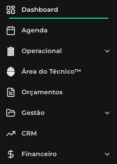
Regras que o sistema aplica
- Item de menu só aparece se a pessoa tem a permissão da tela E a empresa tem o módulo, quando o item exige módulo. São dois portões independentes.
- Grupo sem nenhum filho visível some inteiro. Se você desligou Serviços, Clientes, Equipamentos, Contratos, Funcionários e Estoque de um técnico, o grupo Gestão nem aparece pra ele.
- Digitar o endereço da tela na barra do navegador não fura o bloqueio: sem permissão, o sistema devolve você pra primeira tela liberada.
- Sem módulo contratado, abrir a tela mostra o aviso Módulo não disponível com o preço e os botões Adicionar módulo e Ver planos.
3. Sidebar × Barra superior × menu do celular — a mesma coisa em 3 lugares
O mesmo menu aparece de três jeitos, conforme o tamanho da tela e a sua preferência. O conteúdo é idêntico: muda só a forma.
No computador, menu lateral (padrão)
- Barra fixa à esquerda com o logo em cima, a lista de telas no meio e o seu cartão de perfil embaixo.
- O botão no canto superior esquerdo encolhe a barra pra mostrar só os ícones, ganhando espaço na tela. Passar o mouse sobre um ícone mostra o nome.
- No cartão de perfil (embaixo) você abre: Perfil, Assinatura, Tema (Claro ou Escuro), Tutoriais | Domiflix, Central de Ajuda e Falar com o Suporte. No fundo desse menu fica o cartão de troca de conta, pra quem usa mais de um login no mesmo computador.
- Logo abaixo do cartão ficam os botões Configurações e Sair.
- No alto da tela, à direita: relógio com o fuso da empresa, seletor de idioma, sino de notificações e o botão de sair.
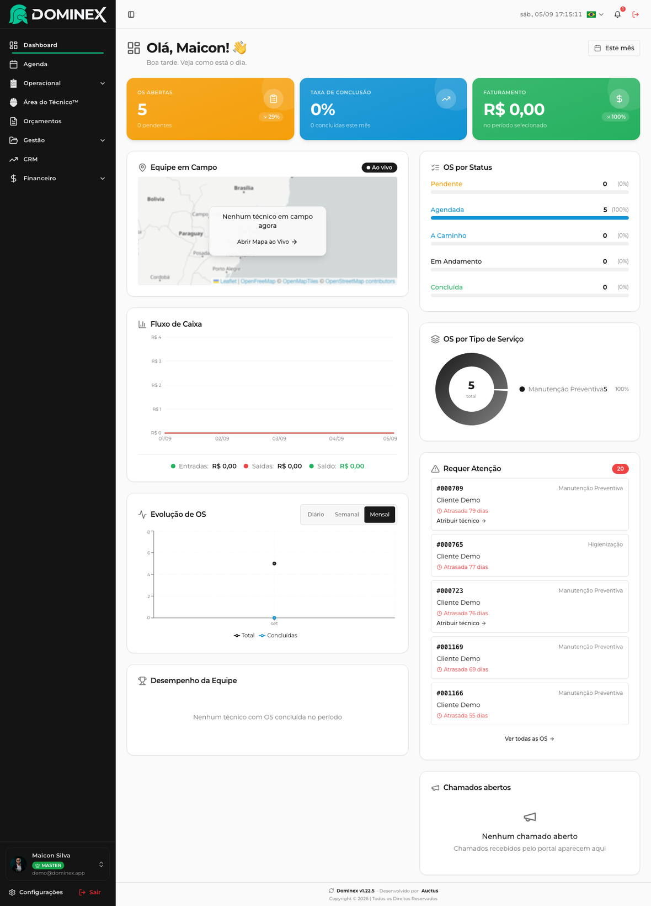
No computador, barra superior (opcional)
Em Configurações › Aparência › Estilo de Navegação (Desktop) você troca Menu Lateral por Menu Superior. A barra passa a ficar deitada no topo, com os mesmos itens. O texto da própria tela avisa: essa opção só afeta a visualização no computador, o celular continua igual.
No celular
- Barra fixa embaixo com 5 atalhos: Início, OS, Agenda (o botão redondo grande no meio), Clientes e Menu.
- Esses 5 atalhos são sempre os mesmos. Se você não tem acesso a uma dessas telas, o sistema te devolve pra primeira tela liberada em vez de mostrar erro.
- Menu abre a gaveta com o menu completo (os mesmos grupos do computador), mais a seção Conta com Perfil, Assinatura, Tutoriais, Central de Ajuda e Falar com o Suporte. No rodapé da gaveta ficam o seletor de tema, Configurações e Sair.
- Puxar a tela pra baixo recarrega o sistema, igual a apertar F5 no computador. Com um formulário aberto, o gesto não dispara, pra não perder o que você digitou.
- No tablet aparece também o botão de menu sanduíche no topo, além da barra de baixo.
4. Vocabulário: Ordem de Serviço, Tarefa, Contrato, PMOC, Checklist, Cargo, Módulo
Estas são as palavras que aparecem em toda tela da Dominex. Usar o nome certo economiza metade do tempo de suporte.
| Palavra | O que é na Dominex |
|---|---|
| Cliente | Quem contrata o seu serviço. Tem ficha própria com documento, contato e endereço de atendimento. Nunca confundir com o usuário do sistema. |
| Técnico | Quem executa o serviço em campo. É um usuário do sistema marcado como Técnico, o que faz ele aparecer na lista de técnicos da OS e permite colocá-lo em equipes. |
| Ordem de Serviço (OS) | O trabalho a ser feito: cliente, endereço, equipamento, tipo de serviço, data e técnico. É a unidade central do sistema. |
| Tipo de Serviço | O que você vende (instalação, manutenção preventiva, limpeza, visita técnica). Fica em Serviços › Tipos de Serviços. |
| Tipo de Tarefa | A atividade que o técnico executa dentro da OS, com o checklist ligado a ela. Fica em Serviços › Tipos de Tarefas. |
| Checklist | O roteiro de perguntas e conferências que o técnico preenche em campo. Fica em Serviços › Checklists. Não existe menu solto de Checklists. |
| Tarefas (a gaveta do topo) | Cuidado com o duplo sentido: além do "tipo de tarefa" da OS, existe uma lista de Tarefas pessoais, aberta pelo ícone no alto da tela, com um lembrete diário. São coisas diferentes. |
| Equipamento | O aparelho instalado no endereço do cliente, com histórico próprio de atendimentos. |
| Contrato | O vínculo recorrente com o cliente: valor, período e visitas programadas. |
| PMOC | Plano de Manutenção, Operação e Controle, exigido por lei na climatização. Na Dominex é um tipo de contrato, com etapas e documentos extras. Não tem tela própria. |
| Orçamento e Proposta | A cotação enviada ao cliente antes de virar OS avulsa ou contrato. |
| Origem | De onde o cliente ou o lead veio (Indicação, Site, WhatsApp, Google). É uma lista sua, compartilhada entre o cadastro de clientes e o CRM. |
| Cargo | Um conjunto de permissões salvo com nome (por exemplo "Técnico de Campo"). Você monta uma vez e aplica em vários usuários. |
| Permissão de tela | Liga ou desliga uma tela inteira pra um usuário. Desligou, some do menu dele. |
| Permissão de ação | Liga ou desliga uma ação dentro de uma tela (criar OS, excluir cliente, excluir lançamento financeiro). |
| Módulo | Um pedaço do sistema que a empresa contrata (CRM, Contratos e PMOC, Funcionários, Notas Fiscais, Financeiro Avançado, White Label). Vale pra empresa inteira. |
| Plano | O pacote que a empresa assina. Define quantos usuários cabem e quais módulos vêm inclusos. |
| Segmento | O ramo da sua empresa. Define quais ferramentas do ramo aparecem. Só a Dominex altera esse campo. |
| Portal do Cliente | A página que o seu cliente abre por link pra acompanhar OS, equipamentos, contratos e cobranças. |
5. O que é módulo contratado e por que uma tela pode não aparecer pra você
Existem dois portões diferentes entre você e uma tela, e eles não se substituem.
Portão 1, o módulo. Vale pra empresa toda. É o que está contratado no plano. Se a empresa não tem o módulo CRM, ninguém da empresa vê o CRM, nem o dono. Isso se resolve em Assinatura, contratando o módulo.
Portão 2, a permissão. Vale por pessoa. É o que o administrador configurou em Configurações › Usuários e Permissões. Se a empresa tem o CRM mas a sua permissão de tela do CRM está desligada, você não vê. Isso se resolve com o administrador da sua empresa, não com o suporte.
Como saber qual dos dois é o seu caso
- Pergunte a um colega administrador se ele vê a tela. Se ele vê e você não, é permissão.
- Se ninguém vê, abra Assinatura (pelo cartão de perfil no menu) e olhe a lista de módulos do seu plano.
- Se você tentar abrir uma tela de módulo não contratado, aparece a janela Módulo não disponível, com o nome do módulo, o preço a partir de e os botões Adicionar módulo e Ver planos. O botão leva direto pro montador de plano com aquele módulo já marcado.
Regras que o sistema aplica
- Durante o período de teste, todos os módulos ficam liberados. Quando o teste termina ou a assinatura é ativada, valem os módulos do plano contratado. Não é promessa: é benefício do teste.
- Alguns módulos não abrem uma tela nova, eles ligam pedaços dentro de telas que você já tem. É o caso de Financeiro Avançado (DRE e Contas a Pagar/Receber), Precificação Avançada (BDI e custos no orçamento), Portal do Cliente e White Label.
- A Área do Técnico™ não depende de módulo: ela aparece conforme o segmento da empresa. Hoje só o segmento Refrigeração e Climatização tem ferramentas cadastradas.
6. Os 3 públicos do sistema: gestor no escritório, técnico no celular, cliente no link público
Três pessoas diferentes usam a Dominex de três jeitos diferentes. Entender isso evita 90% da confusão de acesso.
1) O gestor, no escritório
- Faz login com e-mail e senha e usa o sistema inteiro no computador.
- É quem cadastra, agenda, cobra, configura a empresa e cria os outros usuários.
- Normalmente tem o selo MASTER no cartão de perfil, que indica administrador da empresa.
2) O técnico, no celular
- Também faz login, mas costuma ter poucas telas liberadas: Agenda e Ordens de Serviço, por exemplo.
- Abre a OS, preenche checklist, tira foto, registra material e finaliza pelo celular.
- Um técnico pode trabalhar praticamente só pelo link da OS, sem precisar da tela de listagem de OS liberada. Isso é intencional e se configura na permissão (o assunto está detalhado na seção de usuários e permissões).
- Não existe fila de sincronização offline de verdade. O aplicativo precisa de internet no momento de salvar. Em local com sinal ruim, oriente o técnico a conferir se a ação foi salva antes de sair.
3) O cliente final, no link público
- O cliente nunca cria conta, login ou senha na Dominex.
- Ele recebe um link (por WhatsApp, e-mail ou QR Code) e abre direto no navegador do celular.
- Pelos links públicos ele pode: ver o relatório da OS concluída, acompanhar o Portal do Cliente, abrir o orçamento ou a proposta, ver o portal do contrato ou do PMOC, e pagar uma cobrança.
- O link público mostra a marca da sua empresa quando o White Label está ligado, não a marca Dominex.
/admin) não é do cliente. É a área de trabalho da própria Dominex, usada pra gerir empresas, vendedores e cobranças da carteira. Nenhum usuário de empresa cliente tem acesso, e ele não faz parte do produto que você contratou.
7. Onde pedir ajuda e como usar o Domiflix (minha lista, continuar assistindo, perfil)
Existem três caminhos de ajuda dentro do sistema, e eles ficam no mesmo lugar: no cartão de perfil, no rodapé do menu lateral (no computador) ou na seção Conta da gaveta Menu (no celular).
Central de Ajuda
- Abre um painel lateral com o título Central de Ajuda e uma lista de perguntas frequentes que você expande clicando.
- O texto de abertura é: "Dúvidas frequentes sobre o sistema. Caso não encontre sua resposta, entre em contato pelo Suporte via WhatsApp."
- Hoje ela cobre perguntas curtas de rotina, como criar uma OS, cadastrar cliente, controle financeiro, pagamento de funcionários, ponto, contratos recorrentes, CRM, estoque, exportação de relatórios e troca de senha.
![Painel lateral Central de Ajuda aberto sobre o Dashboard, com o texto de abertura sobre dúvidas frequentes e a lista recolhida de perguntas: Como criar uma Ordem de Serviço (destacada em azul), Como cadastrar um novo cliente, Como funciona o controle financeiro, Como funcionam os pagamentos de funcionários, Como configurar o controle de ponto, Como criar contratos recorrentes, O que é o CRM e como usar, Como funciona o módulo de Estoque, Como exportar relatórios e Como alterar minha senha, cada uma com uma seta para expandir.](img/t0-central-ajuda.jpg)
Falar com o Suporte
- Abre uma conversa no WhatsApp com a equipe da Dominex, em uma nova aba.
- É o caminho para dúvida específica da sua empresa, erro que trava a operação e pedido de mudança de plano ou de segmento.
Domiflix, as seções em vídeo
O Domiflix é a área de treinamento em vídeo da Dominex, no formato de um serviço de streaming. Você chega nele por Tutoriais | Domiflix no cartão de perfil. O endereço antigo /tutoriais leva pro Domiflix automaticamente.
- Início: a página principal, com o destaque em cima e as prateleiras de conteúdo embaixo.
- Módulos: as aulas completas, organizadas por área do sistema.
- Lives: as gravações de encontros ao vivo.
- Minha Lista: o que você marcou pra assistir depois. Você adiciona pelo botão Minha lista na capa do título, e ele passa a mostrar Na lista.
- Continuar Assistindo: a fila do que você começou e não terminou. O último título assistido aparece primeiro.
- Busca: a lupa no topo procura por nome do título, descrição, marcador e também pelo nome e pela descrição dos episódios. Precisa de pelo menos 2 letras.
- Editar perfil Domiflix: você escolhe um nome de exibição e um ícone só do Domiflix. Os dois avisos da tela são claros: a mudança de nome é exclusiva do Domiflix e não afeta o nome usado no sistema, e o ícone escolhido não substitui a sua foto no sistema. Existe também a opção Minha foto, que volta a usar a foto da sua conta.
- Voltar ao sistema devolve você pra Dominex.
Onde ver o que mudou no sistema
No rodapé de qualquer tela aparece Dominex v1.22.5 · Desenvolvido por Auctus. Clicar no número da versão abre a tela de novidades, com a lista das melhorias, correções e recursos novos, em português e sem termo técnico. Ao lado do número existe um ícone de recarregar: ele limpa o cache do navegador e recarrega o sistema, e é a primeira coisa a tentar quando a tela parece "presa" numa versão antiga.
Suporte: problemas comuns
| O cliente diz | Causa provável | Como resolver |
|---|---|---|
| "Sumiu uma tela do meu menu" | Permissão de tela desligada pelo administrador, ou módulo que deixou de estar no plano | Pergunte se um colega administrador vê a tela. Se ele vê, o caminho é Configurações › Usuários e Permissões. Se ninguém vê, é módulo: confira em Assinatura. |
| "Não acho o PMOC no menu" | PMOC não tem menu próprio | PMOC é um tipo de contrato. O caminho é Gestão › Contratos e filtrar pelo tipo PMOC. Exige o módulo Gestão de Contratos e PMOC. |
| "Onde instalo o aplicativo da Dominex?" | Não existe convite de instalação dentro do sistema | A Dominex roda no navegador do celular. Se quiser um atalho na tela inicial, use a opção do próprio navegador. Não existe loja de aplicativos nem botão de instalar dentro do sistema. |
| "Meu cliente pede a senha do portal dele" | Expectativa de login que não existe | O cliente final não tem login nem senha. Reenvie o link do portal dele. O acesso é sempre por link. |
| "O sistema está estranho / não atualizou" | Versão antiga guardada no navegador | Peça pra clicar no ícone de recarregar ao lado de "Dominex v1.22.5" no rodapé. Ele limpa o cache e recarrega. No celular, puxar a tela pra baixo também recarrega. |
| "Entrei e caí numa tela diferente da do meu colega" | Cada usuário cai na primeira tela que tem permissão | É o comportamento correto. Quem tem Agenda liberada cai na Agenda, quem tem Dashboard cai no Dashboard. Pra mudar, ajuste as permissões. |
| "Aparece Módulo não disponível quando clico" | Módulo pago fora do plano atual | É o portão de plano. O botão Adicionar módulo abre o montador de plano com o módulo já marcado. O valor entra na próxima cobrança. |
| "Mudei meu nome no Domiflix e o sistema não mudou" | Comportamento esperado | O nome e o ícone do Domiflix são exclusivos da área de vídeo. Para mudar o nome do sistema, use Perfil. |
Perguntas frequentes
- Preciso instalar alguma coisa pra usar a Dominex?
- Não. É tudo pelo navegador, no computador e no celular. Não existe programa pra baixar.
- Por que meu técnico vê menos coisas que eu?
- Porque o menu respeita a permissão de cada usuário. É proposital: o técnico vê o que precisa pra trabalhar, e o financeiro fica fora do alcance dele.
- Qual a diferença entre módulo e permissão?
- Módulo é o que a empresa paga, vale pra todo mundo. Permissão é o que o administrador libera pra cada pessoa. Sem módulo, ninguém vê. Com módulo e sem permissão, só quem foi liberado vê.
- Onde eu mudo o menu de lateral pra superior?
- Em Configurações › Aparência › Estilo de Navegação (Desktop). Vale só no computador.
- O que é a Área do Técnico™?
- É um conjunto de ferramentas de apoio do ramo, como cálculos e tabelas. Ela aparece conforme o segmento da empresa, e hoje só o segmento Refrigeração e Climatização tem ferramentas cadastradas.
- Meu cliente consegue ver o sistema todo pelo link?
- Não. O link público mostra só aquilo: a OS dele, o portal dele, o orçamento dele. Ele não navega pro resto do sistema nem vê outros clientes.
- O que é aquele "/admin" que às vezes aparece em conversa com o suporte?
- É o painel interno da própria Dominex, usado pela nossa equipe. Não faz parte do que a sua empresa contrata e nenhum usuário de cliente acessa.
- Como sei se estou na versão mais nova?
- O número da versão fica no rodapé de qualquer tela. Clicar nele abre a lista de novidades. O ícone ao lado recarrega o sistema limpando o cache.
- Posso trocar de conta sem sair do sistema?
- Sim. No fundo do menu do seu perfil existe um cartão de troca de conta, que lista as contas já usadas naquele navegador.
- Existe uma busca única que procura em tudo?
- Não. Cada tela tem a própria busca (clientes, OS, orçamentos, usuários). Não existe uma caixa única de busca global.
Configurações e identidade da empresa
É aqui que a Dominex deixa de ser um sistema genérico e passa a ser o sistema da sua empresa: logo no relatório que o cliente recebe, CNPJ e endereço nos documentos, moeda e fuso certos, preferências de uso do time e as integrações de cobrança. Tudo numa tela só, dividida em abas, e tudo salvo automaticamente.
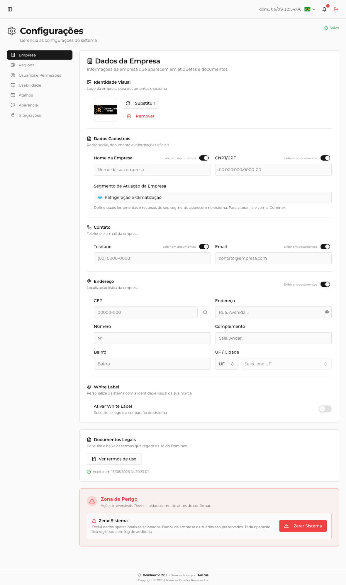
1. Aba Empresa: logo, dados cadastrais, contato e endereço (CEP preenche sozinho)
A aba Empresa abre no cartão Dados da Empresa, descrito na própria tela como "Informações da empresa que aparecem em etiquetas e documentos". É o que sai impresso no relatório da OS, no orçamento, na proposta e nos documentos de contrato.
Identidade Visual (o logo)
- Sem logo, aparece uma área tracejada com Clique para enviar o logo e a dica PNG, JPG até 5MB.
- Com logo, aparecem os botões Substituir e Remover. Remover pede confirmação: Remover logo? com o aviso "O logo atual será removido permanentemente".
- Erros possíveis: Arquivo muito grande (máx 5MB), Apenas imagens são permitidas e Erro ao enviar logo.
- Dica prática: use PNG com fundo transparente. Esse logo é o que aparece no cabeçalho do relatório da OS que o cliente recebe.
Dados Cadastrais
| Campo | Obrigatório | O que aceita e o que o sistema faz |
|---|---|---|
| Nome da Empresa | Na prática sim | Texto livre. É o nome que sai nos documentos e o nome que a Zona de Perigo pede pra confirmar exclusão de dados. |
| CNPJ/CPF | Não pelo formulário, mas exigido pra emitir nota fiscal | Aceita CPF e CNPJ, e o sistema formata sozinho enquanto você digita (00.000.000/0000-00). |
| Segmento de Atuação da Empresa | Somente leitura | Mostra o ramo da empresa com ícone e cor. Não é um campo editável. |
Contato
- Telefone: formatado automaticamente enquanto você digita.
- Email: é o e-mail comercial da empresa, o que sai nos documentos. Não é o e-mail de login de ninguém.
Endereço (o CEP preenche o resto)
- Digite o CEP. O sistema busca e preenche sozinho Endereço, Bairro, UF e Cidade.
- Complete o Número e, se precisar, o Complemento (sala, andar).
- O campo Endereço também tem sugestão automática: comece a digitar a rua e escolha na lista. Ao escolher, ele preenche número, bairro, cidade, estado e CEP de uma vez.
- UF / Cidade pode ser ajustado à mão pelos dois seletores, se a busca de CEP trouxer algo diferente.
2. O switch "mostrar em documentos" campo a campo — o que sai no PDF e no relatório
Ao lado de vários campos existe um interruptor pequeno com o rótulo Exibir em documentos. Ele não apaga o dado: ele decide se aquele dado aparece impresso no cabeçalho dos documentos gerados pelo sistema (relatório da OS, orçamento, proposta, documentos de contrato).
| Interruptor | Onde fica | Ligado (padrão) | Desligado |
|---|---|---|---|
| Nome da Empresa | Ao lado do campo Nome da Empresa | O nome sai no cabeçalho dos documentos | O documento sai sem o nome escrito (útil pra quem já tem o nome dentro do logo) |
| CNPJ/CPF | Ao lado do campo CNPJ/CPF | O documento sai com o CNPJ | O documento sai sem o CNPJ |
| Telefone | Ao lado do campo Telefone | O telefone sai no cabeçalho | Some do cabeçalho |
| Ao lado do campo Email | O e-mail sai no cabeçalho | Some do cabeçalho | |
| Endereço | No título da seção Endereço, valendo pro endereço inteiro | Rua, número, bairro, cidade, UF e CEP saem no cabeçalho | Nenhuma linha de endereço aparece |
Regras que o sistema aplica
- Os cinco interruptores nascem ligados. Empresa nova já sai com tudo aparecendo.
- O endereço é um interruptor só: não dá pra mostrar a cidade e esconder a rua.
- Desligar um interruptor não apaga o dado do cadastro. Ele continua guardado e continua valendo pra nota fiscal e pra cobrança.
- A mudança vale pros documentos gerados dali pra frente, e também pra reimpressão de documentos antigos, porque o cabeçalho é montado na hora.
3. White Label: logo full + ícone, cor primária, estilo do QR Code e cabeçalho do relatório com preview ao vivo
Depende do módulo White Label. Sem o módulo, no lugar da seção aparece uma faixa tracejada com o título White Label, o texto Módulo não disponível no seu plano atual e um selo Contratar. Clicando nela abre a janela do módulo, com preço e o botão de adicionar ao plano.
Com o módulo ativo, o primeiro controle é Ativar White Label, descrito como "Substitui o logo e a cor padrão do sistema". Enquanto ele estiver desligado, nada do resto aparece.
Logo completo e Ícone
- Logo completo: o logo horizontal usado no menu aberto e nos documentos. Se você não enviar um específico, o sistema mostra o aviso "Usando o logo da empresa por padrão" e reaproveita o logo da Identidade Visual. Sem nenhum dos dois, o texto é "Será utilizado o logo da empresa".
- Ícone (1:1): o quadradinho usado quando o menu lateral está encolhido. A tela pede 128 por 128 pixels.
- Os dois aceitam Substituir e Remover, mesmo limite de 5 MB e mesmas mensagens de erro do logo da empresa.
Cor primária
Cor primária "substitui a cor verde padrão do sistema". Você escolhe pelo seletor de cor e a faixa ao lado mostra o resultado. A cor muda na hora, na tela inteira, antes mesmo de salvar. Ela também é a cor que o seu cliente vê no relatório da OS e no portal.
QR Code
A seção QR Code personaliza os QR Codes gerados pelo sistema, com o logo da sua marca no centro. Três controles e uma pré-visualização ao vivo ao lado:
| Controle | Opções |
|---|---|
| Estilo dos pontos | Quadrado, Arredondado, Pontos, Elegante |
| Cantos | Quadrado, Arredondado, Ponto |
| Cor do QR Code | Qualquer cor pelo seletor. Começa na cor primária. |
Abaixo da pré-visualização aparece a legenda Pré-visualização. O QR de exemplo aponta pro site da Dominex, só pra você ver o desenho.
Cabeçalho do Relatório de Serviço
Personaliza a faixa que aparece no topo do relatório da OS concluída, aquele documento que o cliente recebe. A pré-visualização fica logo acima dos controles e muda enquanto você mexe.
| Controle | O que faz |
|---|---|
| Cor de fundo do cabeçalho | A cor da faixa do topo do relatório. |
| Cor do texto | A cor do nome, CNPJ e contatos escritos na faixa. |
| Cor da barra de status | A cor da tarja de status do documento. |
| Tamanho do logo | Régua deslizante. Vai de 40 até 300 quando o tipo é Logo Completo, e até 140 quando é Ícone. |
| Fundo atrás do logo | Liga ou desliga um retângulo atrás do logo. Desligado, "remove o fundo". Ligado, libera o campo Cor do fundo. |
| Tipo de logo no relatório | Dois botões: Logo Completo ("Usa o logo completo da empresa") ou Ícone ("Usa o ícone configurado no White Label"). |
Regras que o sistema aplica
- A marca personalizada acompanha a empresa em todo canto onde o cliente final entra: relatório da OS, portal do cliente, orçamento, proposta e a tela de pagamento. Nessas telas a marca Dominex não aparece.
- A cor fica guardada no navegador pra não piscar o verde padrão a cada atualização de página.
- A marca de um cliente nunca aparece pra outro. Cada empresa vê a própria marca, sempre.
- Logo com fundo branco em tema escuro fica ruim: prefira PNG transparente.
4. Aba Regional: meu idioma × padrões da empresa (idioma, moeda, fuso) e o switch do resultado DISC
A aba Regional tem três cartões, e a diferença entre os dois primeiros é o ponto que mais confunde.
Cartão Meu idioma (todo mundo mexe)
- Descrição na tela: "O idioma que VOCÊ vê no sistema. Aplica na hora, só para você."
- Um seletor Idioma com bandeira. A troca vale imediatamente, sem recarregar.
- A dica abaixo do campo: "Preferência pessoal. Sobrepõe o idioma padrão da empresa só para você."
- Curiosidade útil pro suporte: o endereço das telas também muda de idioma. Um usuário em inglês vê
/work-ordersonde o brasileiro vê/ordens-servico. Links antigos em português continuam funcionando pra todo mundo.
Cartão Padrões da empresa (só administrador)
Quem não é administrador vê o cartão, mas com o aviso (somente admin) ao lado da descrição e os campos travados.
| Campo | O que faz |
|---|---|
| Idioma padrão da empresa | "Idioma aplicado a todos que não escolheram um pessoalmente." |
| Moeda | "Moeda de operação usada nos valores do sistema." |
| Fuso horário | "Usado para datas e horários exibidos no sistema." O seletor tem busca própria, com a dica Buscar fuso (ex: Sao Paulo). |
Ao trocar o idioma padrão, o sistema oferece um atalho: aparece a pergunta Usar os padrões de [idioma] para moeda e fuso? com os botões Manter atuais e Usar padrões. Aceitando, ele ajusta moeda e fuso juntos e confirma com Padrões de [idioma] aplicados.
Cartão Perfil Comportamental
- Um interruptor: Funcionário vê o próprio resultado do teste comportamental.
- Explicação da tela: "Ligado: ao terminar, o funcionário vê o próprio perfil. Desligado: vê só uma tela de agradecimento, e o resultado fica só para o RH."
- Serve pro teste DISC aplicado aos funcionários. Se a sua empresa usa o resultado em processo seletivo, o comum é deixar desligado.
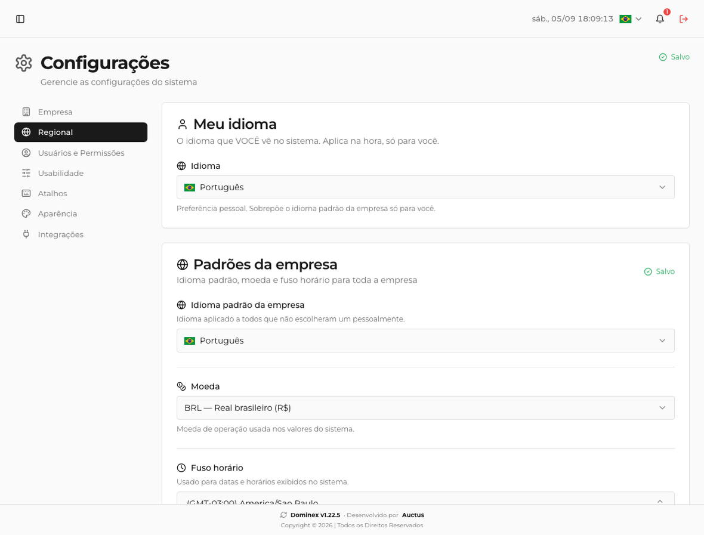
5. Aba Usabilidade: auto-salvar OS, mostrar valores, exigir assinatura, fotos no dispositivo, tabelas compactas, confirmar exclusão, feriados na agenda
A aba Usabilidade reúne preferências de comportamento do sistema, agrupadas em quatro blocos. Cada interruptor confirma com a mensagem Preferência salva!.
| Bloco | Preferência | O que faz | Nasce |
|---|---|---|---|
| Ordens de Serviço | Salvamento Automático | "Salvar automaticamente rascunhos de ordens de serviço ao editar." | Ligado |
| Exibir Valores | "Mostrar valores financeiros (mão de obra, peças) nas ordens de serviço." | Ligado | |
| Exigir Assinatura | "Tornar obrigatória a assinatura do cliente ao finalizar OS." | Desligado | |
| Salvar fotos no dispositivo | "Mostra um botão para salvar a foto no seu aparelho. No iPhone abre a opção Salvar Imagem; no Android baixa direto." | Ligado | |
| Interface | Tabelas Compactas | "Reduzir espaçamento nas tabelas para exibir mais dados por página." | Desligado |
| Fotos de Equipamentos | "Exibir miniaturas de fotos dos equipamentos nas listagens." | Ligado | |
| Segurança | Confirmar Exclusões | "Exibir diálogo de confirmação antes de excluir registros." | Ligado |
| Agenda | Exibir Feriados | "Mostrar feriados nacionais e municipais na agenda." | Ligado |
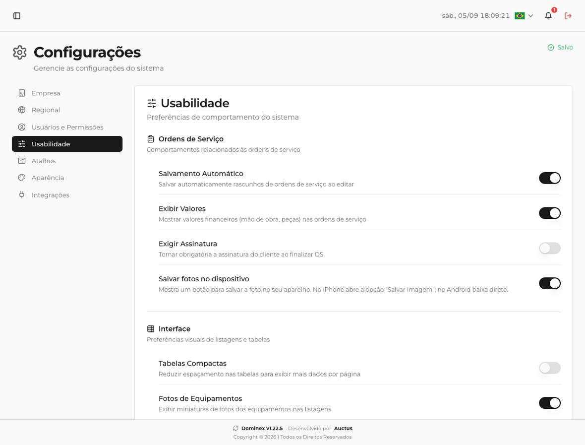
6. Card Origens — o catálogo compartilhado entre Clientes e CRM
Ainda dentro da aba Usabilidade, abaixo das preferências, existe o cartão Origens, descrito como "Lista de origens usada no cadastro de clientes e nas oportunidades do CRM". É a resposta pra pergunta "de onde veio esse cliente?".
Começando do zero
Empresa nova vê a mensagem "Nenhuma origem cadastrada. Crie um conjunto inicial e edite à vontade depois." com o botão Criar origens padrão. Ele cria de uma vez: Indicação, Site, Telefone, WhatsApp, Google, Instagram, Facebook, Parceiro, Feira/Evento e Outro, cada uma com ícone e cor próprios.
Gerenciando
- Clique em Gerenciar origens no canto do cartão.
- Na janela, cada origem aparece com o quadradinho colorido, o ícone e o nome, mais as ações Editar (laranja) e Excluir (vermelho).
- Para criar, digite o nome na linha de baixo, escolha ícone e cor e clique em Adicionar.
- Origem desativada continua aparecendo na lista do cartão, marcada com Inativa, mas some da hora de escolher em um cadastro novo.
Regras que o sistema aplica
- A lista é uma só, compartilhada. O que você cria aqui aparece no cadastro de clientes e nas oportunidades do CRM.
- Não crie origem demais. Cinco a oito opções bem escolhidas dão relatório útil; trinta origens deixam o dado inútil.
- A origem é o que alimenta a pergunta "qual canal me traz mais cliente?" no funil comercial. Preencher no cadastro é o que faz o relatório existir.
7. Aba Atalhos e aba Aparência (sidebar × barra superior, tema claro/escuro)
Aba Atalhos
Título na tela: Atalhos de Teclado, com a descrição "Use atalhos para acessar funcionalidades rapidamente". Em cima fica o interruptor geral, que mostra Atalhos estão ativados ou Atalhos estão desativados. A lista vem dividida em Navegação e Geral, e cada linha mostra a tecla ao lado.
| Atalho | Vai para |
|---|---|
| Shift + D | Dashboard |
| Shift + O | Ordens de Serviço |
| Shift + A | Agenda |
| Shift + C | Clientes |
| Shift + E | Equipamentos |
| Shift + R | CRM |
| Shift + F | Financeiro |
| Shift + I | Estoque |
| Shift + Q | Orçamentos |
| Shift + T | Contratos |
| Shift + S | Configurações |
| Shift + P | Perfil |
O bloco Dicas no fim da aba repete o essencial: use a tecla modificadora mais a letra, os atalhos não funcionam enquanto você digita em um campo de texto, e dá pra desativar tudo pelo interruptor de cima.
Aba Aparência
Título Aparência, descrição "Personalize a interface visual do sistema". Três blocos:
- Estilo de Navegação (Desktop): escolha entre Menu Lateral ("Sidebar tradicional à esquerda") e Menu Superior ("Barra horizontal no topo"). A descrição avisa que "Esta opção só afeta a visualização em desktop".
- Tema do Sistema: Tema Claro ou Tema Escuro. O mesmo controle existe no menu do seu perfil, em Tema.
- Menu (lateral e superior): a cor do menu, independente do tema. Escuro (recomendado) deixa "Menu sempre escuro, com destaque na cor da marca". Seguir o tema faz o menu acompanhar claro ou escuro.
Essas três escolhas são pessoais e ficam guardadas no navegador de cada um.
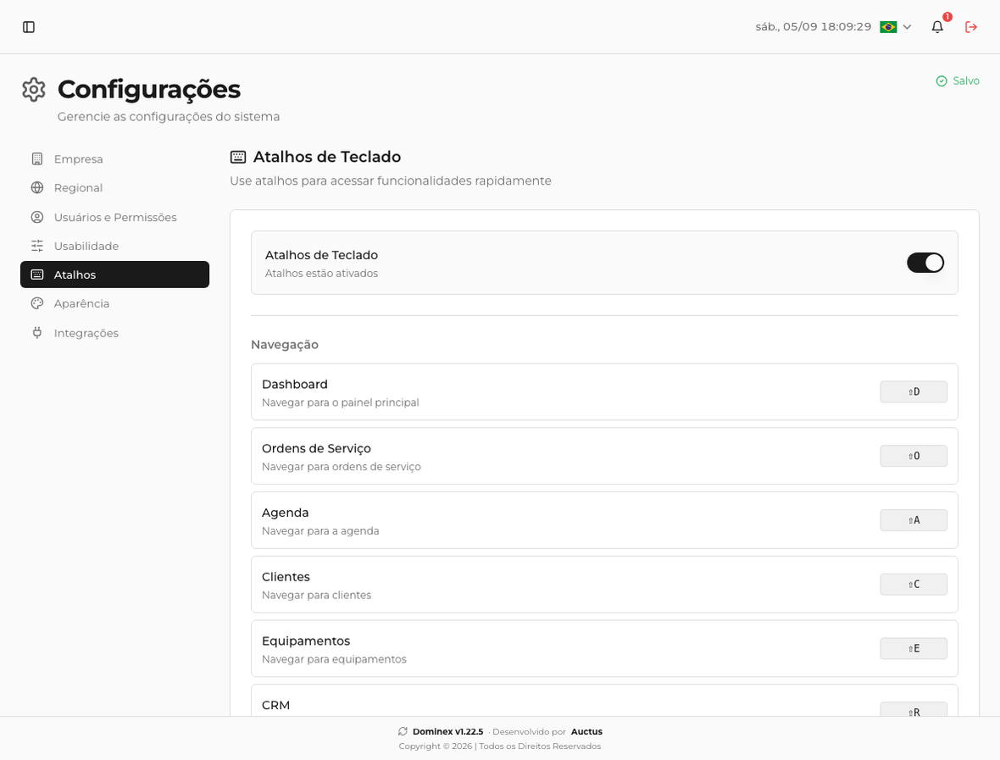
8. Aba Integrações: Recebimentos (Asaas) e o estado atual do WhatsApp
A aba Integrações tem duas subabas em pílula: WhatsApp e Recebimentos.
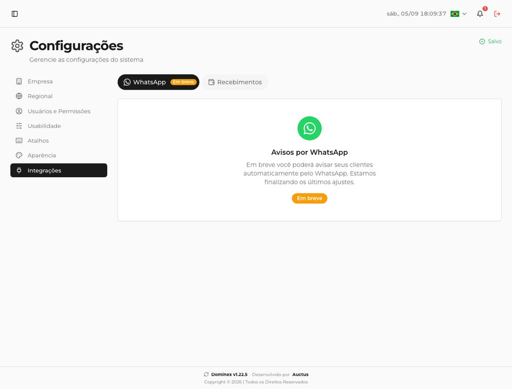
Recebimentos (Asaas)
É a integração que permite cobrar os seus clientes por Pix, boleto e cartão, usando a sua própria conta Asaas. Nada a ver com o pagamento da assinatura da Dominex, que é assunto de outro tutorial.
Sem o recurso no plano, aparece Recebimentos não contratado com o texto "Este recurso não está incluído no seu plano atual. Fale com nosso time para cobrar seus clientes online por Pix, boleto e cartão."
Ativando
- O cartão Recebimentos (Asaas) pede a chave: "Cole a chave de API da sua conta Asaas para ativar os recebimentos. Você gera essa chave no painel da Asaas, em Configurações, Integrações."
- Se você não sabe onde achar, o link Onde encontro minha chave? abre o passo a passo: entrar em asaas.com, ir em "Configurações da conta" e depois "Integrações", clicar em "Gerar chave de API" ou copiar a existente, e colar a chave (começa com "$aact_").
- Clique em Ativar recebimentos. Dando certo, aparece Recebimentos ativados!. Dando errado: "Não foi possível ativar os recebimentos. Confira a chave e tente novamente."
- O estado da integração aparece como Ativo, Em verificação, Desativado ou Recusado. Em verificação significa que a Asaas ainda está aprovando a sua conta.
O que dá pra configurar depois de ativo
| Configuração | O que faz |
|---|---|
| Lançar cobranças no Financeiro automaticamente | "Cada cobrança vira um a receber que baixa sozinho quando o cliente paga." |
| Lançar a taxa da Asaas como despesa | "Ao receber, a tarifa cobrada pela Asaas entra como despesa no seu Financeiro, para o caixa bater certo." |
| Multa e juros por atraso | Multa por atraso em porcentagem e juros ao mês. O aviso da tela: "O limite máximo da Asaas é 10% ao mês." |
| Preferências de cobrança | Vencimento padrão em dias, descrição padrão, meios de pagamento habilitados (Pix, Boleto, Cartão de crédito) e máximo de parcelas no cartão. |
| Desconto por antecipação | Percentual de desconto e até quantos dias antes do vencimento. Em branco, não aplica desconto. |
| Lançamento no Financeiro | Conta bancária de destino, categoria da receita e categoria da taxa da Asaas. |
A seção Taxas da Asaas mostra os valores praticados: Pix R$ 0,00, Boleto de R$ 0,99 a R$ 1,99, Cartão de crédito de 1,99% + R$ 0,49 a 2,99%. O aviso é explícito: "As taxas são cobradas pela Asaas diretamente na sua conta. A Dominex não retém nada por transação."
Para desligar, o botão Desativar recebimentos pede confirmação com o aviso "Cobranças já geradas continuam válidas, mas você não poderá criar novas até reativar".
9. Documentos legais e a Zona de Perigo (Zerar Sistema) — o que ela apaga
Documentos Legais
No fim da aba Empresa fica o cartão Documentos Legais, "Consulte e baixe os termos que regem o uso do Dominex". O botão Ver termos de uso abre o documento em janela, com opção de Baixar PDF. Abaixo, quando já houve aceite, aparece a linha Aceito em [data] com um sinal verde. É o comprovante de que a sua empresa aceitou os termos, útil em auditoria.
Zona de Perigo
Um cartão vermelho no fim da aba Empresa, com o título Zona de Perigo e a advertência "Ações irreversíveis. Revise cuidadosamente antes de confirmar". Dentro, a ação Zerar Sistema, descrita como "Exclui dados operacionais selecionados. Dados da empresa e usuários são preservados. Toda operação fica registrada em log de auditoria".
O que você escolhe apagar
A janela mostra a pergunta Escolha o que deseja remover: com Marcar tudo e um contador de selecionados. Os itens vêm em quatro grupos:
| Grupo | Item | O que remove |
|---|---|---|
| Operacional | Ordens de Serviço | Todas as OS, fotos, materiais consumidos, avaliações e formulários respondidos. |
| Equipamentos | Todos os equipamentos cadastrados nos clientes. | |
| Contratos e PMOC | Todos os contratos, cronogramas PMOC e documentos PMOC personalizados. | |
| Configurações personalizadas | Etapas de CRM personalizadas, formulários de OS e recursos de custo. | |
| Comercial (CRM) | Orçamentos e Propostas | Todos os orçamentos e propostas. |
| Clientes e Leads | Todos os cadastros de clientes, contatos, portais e leads. | |
| Financeiro | Movimentações | Todas as transações de caixa, banco, cartão, receitas e despesas. |
| Categorias financeiras | As categorias personalizadas. As padrões são mantidas. | |
| RH e Inventário | Funcionários e equipe | Todos os funcionários, vales, pagamentos, ponto eletrônico e equipes. |
| Materiais | Todos os materiais cadastrados e o estoque deles. | |
| Estoque | Zera o estoque (movimentações), mantém os materiais cadastrados. |
Marcar Materiais força marcar Estoque junto, e o item fica travado com a explicação "Necessário porque o cadastro de materiais foi marcado".
O que sempre fica
A janela lista, sob o título Serão mantidos:, três coisas: Dados básicos da empresa, Usuários cadastrados e Histórico de pagamentos. Ninguém perde o login, e a assinatura continua igual.
Confirmação
- Marque o que quer apagar.
- No campo Para confirmar, digite o nome da empresa: digite exatamente o nome cadastrado. Errando, aparece "O nome digitado não confere com o nome da empresa."
- Clique em Sim, Zerar Sistema. A tela mostra Apagando dados... e a etapa atual.
- Terminando: Sistema zerado com sucesso, com o aviso de que o log de auditoria foi gerado.
Mensagens de erro possíveis
| Mensagem exibida | O que fazer |
|---|---|
| "Esta ação precisa de conexão com a internet. Você está offline." | Reconecte e tente de novo. A operação nem começa sem internet. |
| "Você não tem permissão para zerar o sistema. Apenas o administrador da empresa pode fazer isso." | Peça pro administrador da empresa executar. |
| "Uma etapa demorou demais. Tente novamente, o que já foi apagado continua apagado." | Repita a operação. O que já foi removido não volta e não é removido duas vezes. |
| "Não foi possível concluir a etapa por uma dependência inesperada. Avise o suporte com o nome da etapa." | Anote o nome da etapa que apareceu na tela e abra chamado. |
| "Não foi possível recriar uma configuração padrão. Tente novamente em alguns segundos." | Espere alguns segundos e repita. |
| "Não foi possível zerar o sistema. Tente novamente ou avise o suporte." | Erro genérico. Repita uma vez e, persistindo, acione o suporte. |
Suporte: problemas comuns
| O cliente diz | Causa provável | Como resolver |
|---|---|---|
| "Não tem botão de salvar nas configurações" | A tela salva sozinha | É assim mesmo. Olhe o selo no topo direito: Salvando, Alterações não salvas ou Salvo. Sair do campo já grava. |
| "Não consigo mudar o segmento da minha empresa" | Campo somente leitura por definição | Só a Dominex altera o segmento, porque ele define quais ferramentas aparecem. Abra chamado no suporte informando o novo ramo. |
| "Quero conectar meu WhatsApp e não acho o QR Code" | Recurso ainda não liberado | A aba WhatsApp está marcada como Em breve e mostra só um aviso. Não existe conexão por QR Code hoje. Avise que ainda não está disponível. |
| "O CNPJ não aparece no relatório da OS" | Interruptor Exibir em documentos desligado | Vá em Configurações › Empresa e ligue o interruptor ao lado do campo CNPJ/CPF. O dado continua cadastrado, só não estava sendo impresso. |
| "Ativei o White Label e o logo não mudou" | Nenhum logo específico foi enviado | Sem logo próprio no White Label, o sistema usa o logo da Identidade Visual. Envie o logo completo e o ícone quadrado. |
| "Mudei a moeda e meus valores ficaram errados" | Expectativa de conversão | Trocar a moeda não converte valor. Os números continuam iguais, só muda o símbolo. Volte a moeda anterior se foi engano. |
| "Liguei Exigir Assinatura e o técnico continua finalizando sem assinar" | A preferência é por aparelho | As preferências de Usabilidade ficam no navegador de quem configurou. Precisa ligar também no celular do técnico. |
| "Não aparece nenhuma origem no cadastro de cliente" | Catálogo de origens vazio | Vá em Configurações › Usabilidade, cartão Origens, e clique em Criar origens padrão. Depois edite à vontade. |
| "Onde coloco o link do Google pra pedir avaliação?" | Procurando no lugar errado | Não fica em Configurações. Fica na configuração de avaliação (NPS) da ordem de serviço. |
| "Zerei o sistema e perdi meus usuários?" | Confusão sobre o alcance | Não. Zerar Sistema preserva dados da empresa, usuários e histórico de pagamentos. Só apaga o que foi marcado. |
Perguntas frequentes
- Como sei que minha alteração foi salva?
- Pelo selo no topo direito da tela. Quando ele mostra Salvo com o sinal verde, está gravado.
- O logo da empresa e o logo do White Label são a mesma coisa?
- Não. O da Identidade Visual é o logo geral, usado nos documentos. O do White Label é o que troca a marca do sistema. Se você não enviar um do White Label, ele reaproveita o da Identidade Visual.
- Meu cliente vai ver a marca Dominex?
- Com o White Label ligado, não. O relatório da OS, o portal e a tela de pagamento saem com a sua marca e a sua cor.
- Qual o tamanho ideal do ícone do White Label?
- A tela pede 128 por 128 pixels, quadrado. É o que aparece quando o menu lateral está encolhido.
- Trocar meu idioma muda o idioma dos meus colegas?
- Não. Meu idioma é pessoal. Quem muda pra todo mundo é o campo Idioma padrão da empresa, e só administrador mexe nele.
- Onde ligo ou desligo os feriados na agenda?
- Configurações › Usabilidade › bloco Agenda › Exibir Feriados. Nasce ligado.
- Posso desligar a confirmação antes de excluir?
- Pode, em Usabilidade › Segurança › Confirmar Exclusões. Não recomendamos: é a rede de proteção contra clique errado.
- A Dominex fica com uma parte do que eu recebo pela Asaas?
- Não. A própria tela diz: as taxas são cobradas pela Asaas diretamente na sua conta e a Dominex não retém nada por transação.
- Desativar os recebimentos cancela as cobranças que já mandei?
- Não. As cobranças já geradas continuam válidas. Você só não consegue criar novas até reativar.
- Zerar Sistema apaga meu histórico de pagamentos da assinatura?
- Não. Dados da empresa, usuários e histórico de pagamentos são sempre preservados.
- Consigo desfazer um Zerar Sistema?
- Não. É permanente. A operação fica registrada em log de auditoria, mas os dados não voltam.
- Onde vejo os termos de uso que aceitei?
- Em Configurações › Empresa › Documentos Legais › Ver termos de uso. A data do aceite aparece logo abaixo do botão.
Usuários, cargos e permissões
Colocar a equipe dentro do sistema sem dar acesso demais. É aqui que você decide o que o técnico vê no celular, o que o financeiro pode apagar e o que ninguém deve alcançar. Uma configuração de dez minutos que evita o problema mais caro de qualquer empresa: a pessoa errada mexendo no lugar errado.
1. Onde fica: Configurações → Usuários e Permissões
A gestão de gente não tem item próprio no menu principal: ela é uma aba dentro de Configurações. O caminho é o botão Configurações no rodapé do menu lateral e depois a aba Usuários e Permissões na lista da esquerda. No celular, o botão Configurações fica no rodapé da gaveta Menu.
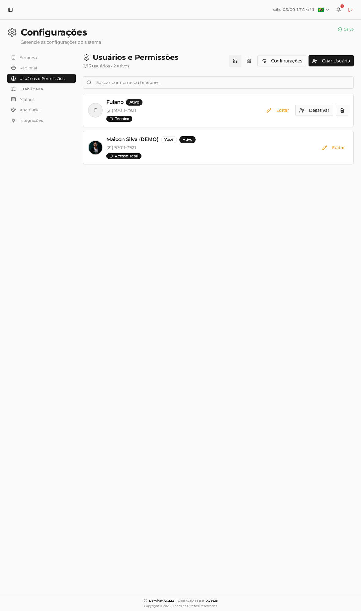
O que tem na tela
- Título e contador: Usuários e Permissões e, logo abaixo, o resumo no formato 2/15 usuários • 2 ativos. O primeiro número é quanto você já usa, o segundo é o limite do plano.
- Alternador de visualização: dois botõezinhos que trocam entre Lista e Cards. A escolha fica guardada no seu navegador.
- Botão Configurações: abre a janela de Cargos (os perfis de acesso reutilizáveis).
- Botão Criar Usuário: abre o formulário de novo usuário. Só aparece pra quem pode gerenciar usuários.
- Busca: o campo Buscar por nome ou telefone... filtra a lista enquanto você digita.
No celular a tela vira duas abas em pílula, Usuários e Cargos, com a busca logo abaixo (Buscar usuários... ou Buscar cargos...) e um botão redondo flutuante no canto inferior, que cria Usuário ou Cargo conforme a aba aberta.
Como ler cada linha da lista
| Selo | Significado |
|---|---|
| Você | É a sua própria conta. Nessa linha as ações de desativar e excluir não aparecem. |
| Ativo | A conta entra no sistema e ocupa uma vaga do plano. |
| Inativo | A conta está desativada: não entra e não ocupa vaga. A linha fica esmaecida. |
| Acesso Total | Esse usuário tem todas as telas e ações liberadas. |
| Nome de um cargo | As permissões dele batem exatamente com um cargo salvo. |
| N permissões | Permissões soltas, que não correspondem a nenhum cargo. |
| Técnico | Usuário marcado como técnico, o que faz ele aparecer na lista de técnicos da OS. |
2. Criar usuário: dados, foto, papel, senha e vínculo com o funcionário do RH
Clique em Criar Usuário. A janela Criar Usuário abre com o subtítulo "Preencha os dados do novo usuário".
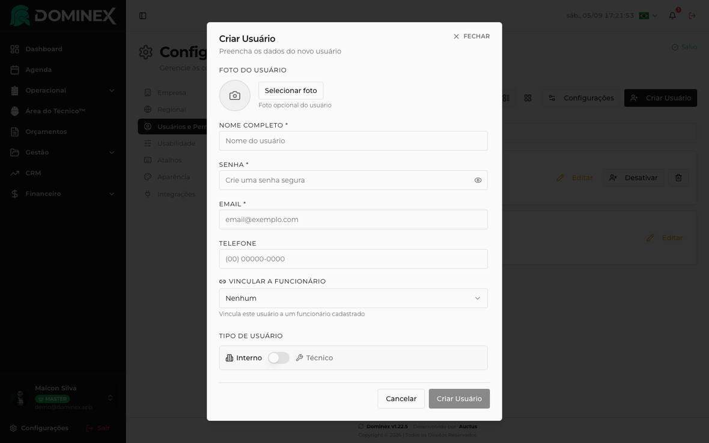
Campo a campo
| Campo | Obrigatório | O que aceita e o que o sistema faz |
|---|---|---|
| Foto do Usuário | Não | Botões Selecionar foto e Remover. A dica na tela é "Foto opcional do usuário". Se o usuário for vinculado a um funcionário, a foto é copiada pro cadastro do funcionário também. |
| Nome Completo * | Sim | É o nome que aparece na OS, na agenda e no relatório. Use o nome que o cliente vai ler. |
| Senha * | Sim, só na criação | Você define a senha inicial. Um indicador de força aparece embaixo enquanto digita. Ao editar um usuário existente esse campo não aparece. |
| Email * | Sim | É o login da pessoa. Precisa ser único no sistema inteiro. Ao editar, aparece o aviso "Alterar o email mudará o login de acesso do usuário". |
| Telefone | Não | Formatado automaticamente. Aparece na lista e serve pra busca. |
| Vincular a Funcionário | Não | Lista os funcionários cadastrados no módulo de RH, com o cargo entre parênteses. A dica é "Vincula este usuário a um funcionário cadastrado". Serve pra ligar o login à ficha de RH (ponto, pagamento, equipe). |
| Tipo de Usuário | Sim, por escolha | Um interruptor entre Interno e Técnico. |
| Permissões | Sim, na prática | O editor completo, explicado no próximo capítulo. |
Interno ou Técnico
- Técnico: "Aparece na listagem de técnicos da OS e pode ser adicionado a equipes."
- Interno: "Usuário interno do sistema, não aparece como técnico nas OS."
- É essa escolha que faz a pessoa poder ser atribuída a uma ordem de serviço. Um técnico criado como Interno não vai aparecer na hora de escalar a OS, e esse é o motivo número um de chamado nesta tela.
Conflito de e-mail com o funcionário
Se você vincular um funcionário que já tem um e-mail diferente do que você digitou, aparece um aviso amarelo com a pergunta Os emails são diferentes. Qual deve prevalecer? e duas opções: Usuário: (o que você digitou) e Funcionário: (o que estava no cadastro). O texto explica: "O email escolhido será aplicado em ambos os cadastros". Escolha um e siga.
Mensagens que podem aparecer
- Usuário criado com sucesso! e a tela recarrega pra atualizar a lista.
- Erro ao criar usuário com o detalhe Este e-mail já está cadastrado no sistema. quando o e-mail já pertence a outra conta, mesmo de outra empresa.
- Ao editar: Usuário atualizado!
- Permissões atualizadas! quando só as permissões mudam.
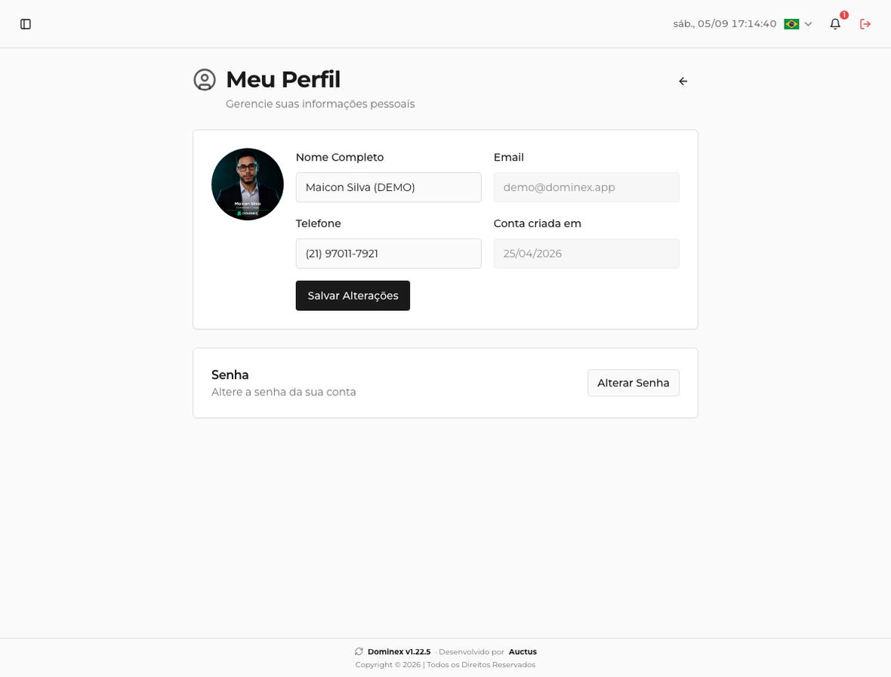
3. O editor de permissões novo: busca, tela por tela, ações dentro de cada tela
O editor de permissões é a parte de baixo da janela de usuário, sob o título Permissões e a explicação "Escolha um perfil rápido ou ligue tela por tela. As ações de cada tela ficam dentro dela."
Como ele é organizado
- Perfis rápidos no topo: os chips Acesso Total e os seus cargos salvos. Clicar em um deles substitui a seleção inteira.
- Busca logo abaixo: Buscar tela ou ação.... Digitar filtra telas e ações ao mesmo tempo e abre sozinho o que sobrou. O X limpa a busca. Sem resultado, aparece Nenhuma tela ou ação encontrada para "...".
- Lista por categoria: Geral, Serviços, Comercial, Operacional, Financeiro e Administração.
- Uma linha por tela: um interruptor à esquerda, o nome e a explicação da tela, um contador do tipo 2/4 mostrando quantas ações daquela tela estão ligadas, e uma seta que abre Ações desta tela.
O interruptor fica fora da área que abre a lista: clicar no nome expande, clicar no interruptor liga e desliga. Um não faz o outro.
As telas que você pode ligar ou desligar
| Categoria | Tela | O que ela dá acesso |
|---|---|---|
| Geral | Dashboard | Painel inicial com os indicadores e atalhos do dia a dia. |
| Agenda | Calendário de tarefas e visitas agendadas. Sem esta tela o usuário não enxerga nem a própria agenda. | |
| Serviços | Ordens de Serviço | Lista completa de OS, com abertura, acompanhamento e histórico. |
| Serviços | Catálogo de serviços prestados e seus valores. | |
| Checklists | Modelos de checklist usados dentro das ordens de serviço. | |
| Contratos | Contratos recorrentes, PMOC e as visitas programadas de cada um. | |
| Equipamentos | Cadastro dos equipamentos dos clientes e o histórico de cada um. | |
| Comercial | Clientes | Cadastro de clientes, com contatos, endereços e histórico de atendimento. |
| CRM | Funil comercial com leads, oportunidades e follow-ups. Também exige o módulo contratado. | |
| Orçamentos | Orçamentos e propostas enviadas aos clientes. | |
| Operacional | Estoque | Materiais, saldos e movimentações de estoque. |
| Área do Técnico™ | Ferramentas de apoio do técnico em campo, como cálculos e tabelas. | |
| Mapa e Rastreamento | Mapa ao vivo com a posição das equipes em campo. | |
| Financeiro | Financeiro | Visão geral, movimentações e contas a pagar e receber. |
| Notas Fiscais | Emissão e consulta de notas fiscais de serviço. Também exige o módulo contratado. | |
| Administração | Funcionários | Cadastro de funcionários, folha de pagamento e controle de ponto. |
| Usuários | Lista de usuários do sistema e os perfis de acesso de cada um. | |
| Configurações | Dados da empresa, aparência e preferências do sistema. |
As ações que ficam dentro de cada tela
| Tela | Ações disponíveis |
|---|---|
| Ordens de Serviço | Criar OS, Editar OS, Excluir OS, Reabrir OS (reabrir OS concluída para edição) e Editar OS em campo (editar equipamentos e checklists dentro de uma OS em andamento). |
| Clientes | Criar Cliente, Editar Cliente, Excluir Cliente e Ver Financeiro do Cliente (mostra a aba financeira na ficha do cliente). |
| Equipamentos | Gerenciar Equipamentos (criar, editar e excluir). |
| Estoque | Gerenciar Estoque (materiais e movimentações). |
| Financeiro | Gerenciar Financeiro (criar e editar transações), Excluir Lançamento Financeiro e Ver Totais Financeiros (saldos, totais e projeções). |
| Agenda | Ver Contas na Agenda (contas a pagar e receber como avisos) e Ver Toda a Agenda (ver todas as tarefas, não apenas as próprias). |
| CRM | Gerenciar CRM (leads e pipeline comercial). |
| Contratos | Gerenciar Contratos (contratos recorrentes e manutenções). |
| Funcionários | Gerenciar Funcionários e Gerenciar Ponto (ver e gerenciar o ponto de todos). |
| Usuários | Gerenciar Usuários (criar, editar e gerenciar usuários). |
| Configurações | Gerenciar Configurações (alterar configurações do sistema). |
Ver Toda a Agenda, a permissão que mais gera dúvida
Sem essa ação, o usuário abre a Agenda e vê só as tarefas dele. Com ela ligada, vê a agenda inteira da empresa. Para técnico, o normal é deixar desligada: ele enxerga o próprio dia sem se distrair com o resto.
4. Chip Acesso Total e por que ele não quebra quando a gente lança tela nova
No topo do editor, o primeiro chip é Acesso Total. A dica que aparece ao passar o mouse é direta: "Libera todas as telas e ações, inclusive as que forem criadas no futuro".
Como funciona na prática
- Clicar em Acesso Total liga todos os interruptores de uma vez.
- O sistema não guarda uma lista congelada de permissões: ele guarda a marca de "tudo liberado". Por isso, quando a Dominex lança uma tela ou uma ação nova, esse usuário já entra com ela liberada, sem você precisar reabrir o cadastro.
- Se você desligar um único interruptor, o chip Acesso Total apaga sozinho e aparece o chip laranja Personalizado. Religando tudo, o Acesso Total volta a acender.
- O chip Personalizado não é clicável: ele só informa que a sua seleção não bate com nenhum cargo salvo nem com o acesso total.
5. Aba Cargos: criar preset, duplicar, aplicar num usuário e o que acontece ao desmarcar uma permissão
Cargo é um conjunto de permissões salvo com nome, pra você não montar tudo de novo a cada contratação. No computador, o botão Configurações no topo da tela abre a janela Configurações de Cargos, descrita como "Crie e edite perfis de acesso com permissões pré-definidas". No celular, é a aba Cargos.
Criar um cargo
- Clique em Novo Cargo.
- Preencha Nome * (o exemplo sugerido na tela é "Técnico de Campo") e, se quiser, Descrição.
- Monte as permissões no mesmo editor de telas e ações.
- Clique em Criar Cargo. A confirmação é Cargo criado com sucesso!
Editar, duplicar e excluir
- Editar abre o cargo pra ajuste. Salvando, aparece Cargo atualizado com sucesso!
- Duplicar cria uma cópia com o mesmo nome mais o sufixo (cópia), e confirma com Cargo duplicado!. É o caminho rápido pra criar "Técnico Sênior" a partir de "Técnico de Campo".
- Excluir pede confirmação com o texto: "O cargo [nome] será removido. Usuários que estavam vinculados a ele mantêm as permissões individuais. Esta ação não pode ser desfeita."
- Sem nenhum cargo criado, a tela mostra Nenhum cargo cadastrado e, no celular, a orientação "Toque em Novo Cargo para criar um perfil de acesso".
Aplicar um cargo num usuário
- Abra o usuário em Editar.
- No topo do editor de permissões, clique no chip com o nome do cargo.
- A seleção inteira é substituída pela do cargo. Não soma com o que já estava marcado.
- Salve. Na lista, o selo do usuário passa a mostrar o nome do cargo em vez de "N permissões".
6. Caso real: técnico que só usa o link de campo — ligar a ação-filha sem ligar a tela-mãe
Situação comum: você tem um técnico que nunca abre a lista de OS. Ele recebe o link da ordem de serviço pelo WhatsApp, abre no celular, preenche o checklist e finaliza. Você não quer que ele consiga navegar pela lista de todas as OS da empresa, mas precisa que ele consiga preencher a dele.
O editor de permissões da Dominex permite exatamente isso: a ação continua valendo mesmo com a tela desligada. Ao expandir uma tela que está com o interruptor desligado, o próprio editor avisa em itálico: "A tela está desligada, mas estas ações continuam valendo por conta própria."
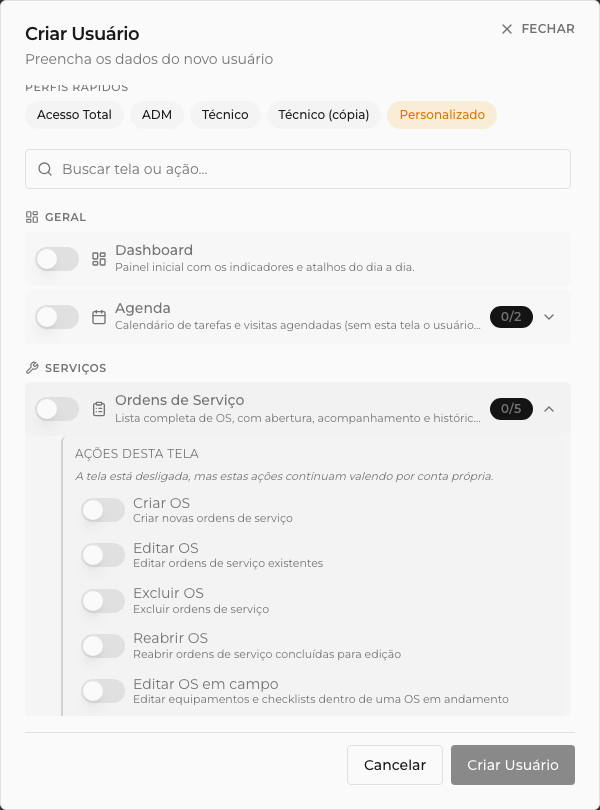
Passo a passo desse cenário
- Abra o técnico em Editar.
- Deixe a tela Ordens de Serviço com o interruptor desligado (ele não vai ter o item no menu).
- Clique no nome da tela pra abrir Ações desta tela.
- Ligue Editar OS em campo, que libera editar equipamentos e checklists dentro de uma OS em andamento.
- Se ele precisar concluir e reabrir, ligue também Editar OS. Deixe Excluir OS desligada.
- Ligue a tela Agenda se ele deve ver o próprio dia, e deixe a ação Ver Toda a Agenda desligada.
- Marque o tipo de usuário como Técnico pra ele aparecer na hora de atribuir a OS.
- Salve. Esse técnico entra no sistema, vê pouquíssima coisa, e ainda assim trabalha normalmente pelo link.
7. Ativar × desativar × excluir usuário, e a vaga do plano
São três coisas diferentes e o efeito na conta do plano muda em cada uma.
| Ação | O que faz | Reversível? | Libera vaga do plano? |
|---|---|---|---|
| Editar | Muda dados, tipo de usuário e permissões. Botão laranja. | Sim | Não muda nada |
| Desativar | A conta para de entrar no sistema e a sessão dela cai. O usuário continua na lista, marcado como Inativo. | Sim, pelo botão Reativar | Sim. A confirmação diz: "O slot foi liberado. Você pode reativá-lo depois." |
| Reativar | Devolve o acesso. Botão verde. | Sim | Ocupa uma vaga de novo |
| Excluir | Apaga o login, as permissões e os vínculos. Ícone de lixeira vermelho. | Não | Sim |
O que o sistema não deixa você fazer
- Mexer em você mesmo. Na sua linha aparece o selo Você e só o botão Editar. Desativar e excluir não aparecem. Se o servidor receber a ordem mesmo assim, ele responde "Você não pode desativar a si mesmo." ou "Você não pode excluir a si mesmo.". Não é bug: é proteção contra você se trancar pra fora.
- Ficar sem administrador. Desativar, excluir ou rebaixar o último administrador ativo é bloqueado com a mensagem Ação bloqueada e a explicação "A empresa precisa de pelo menos um administrador ativo.". Promova outra pessoa primeiro.
- Mexer em usuário de outra empresa. O servidor recusa com "Forbidden: usuário de outra empresa". Isso nunca deveria acontecer na tela, é uma barreira de segurança.
- Reativar sem vaga livre. O botão Reativar fica desabilitado e a dica ao passar o mouse é "Sem slot livre, faça upgrade ou desative outro". O servidor também recusa, com "Limite de usuários atingido; faça upgrade ou desative outro.".
Excluir de verdade
Clicar na lixeira abre a confirmação Excluir usuário permanentemente? com o texto: "Esta ação é irreversível. O usuário [nome] será removido permanentemente do sistema, incluindo login, permissões e vínculos." Os botões são Cancelar e Excluir Permanentemente. Dando certo: Usuário excluído permanentemente!
8. Limite de usuários do plano e como contratar mais
Cada plano permite um número de usuários ativos. Usuário desativado não conta. O contador fica logo abaixo do título da tela, no formato 2/15 usuários • 2 ativos.
Quando você chega no limite
- Aparece uma faixa amarela no topo da lista com Limite de usuários atingido (15/15) e a explicação "Para cadastrar novos usuários, adicione usuários extras ao seu plano.", mais o botão Contratar mais usuários.
- Clicar em Criar Usuário nesse estado abre a janela Limite de usuários atingido, mostrando o contador grande, a frase "Seu plano atual permite até N usuários. Para cadastrar mais, adicione usuários extras ao seu plano (R$ 50,00/mês por usuário)." e os botões Voltar e Contratar mais usuários.
- O botão leva pra tela de Assinatura já com o montador de plano aberto na aba Personalizado, focado na parte de usuários extras.
As três saídas quando falta vaga
- Desativar quem não usa mais. É grátis e imediato. Ex-funcionário desativado libera a vaga na hora.
- Comprar usuários extras. Cada usuário adicional custa R$ 50,00 por mês e entra na próxima cobrança. Os recursos são liberados na hora.
- Trocar de plano. Planos maiores já vêm com mais usuários inclusos. Compare em Gerenciar Meu Plano antes de comprar extras avulsos.
Suporte: problemas comuns
| O cliente diz | Causa provável | Como resolver |
|---|---|---|
| "Não consigo desativar meu próprio usuário" | Proteção do sistema | É proposital. Na sua linha só aparece Editar. Peça pra outro administrador fazer, se for mesmo necessário. |
| "O botão Reativar está apagado" | Sem vaga livre no plano | A empresa bateu o limite de usuários ativos. Desative outro usuário ou contrate usuários extras em Assinatura. |
| "Diz que o e-mail já está cadastrado" | E-mail em uso em outra conta | O e-mail é único no sistema inteiro. Use outro e-mail ou verifique se a pessoa já não tem conta desativada na sua empresa. |
| "Meu técnico não aparece pra escolher na OS" | Usuário criado como Interno | Edite o usuário e mude o Tipo de Usuário para Técnico. Só quem é Técnico aparece na listagem da OS e pode entrar em equipe. |
| "Apliquei um cargo e ele virou Personalizado sozinho" | Alguma permissão foi desmarcada depois | Basta uma permissão diferente pro vínculo com o cargo cair. Clique no chip do cargo de novo pra voltar ao padrão. |
| "Mudei o cargo e os usuários antigos continuam iguais" | Cargo é ponto de partida, não regra viva | Reabra cada usuário e clique no chip do cargo pra aplicar a versão nova. |
| "Meu funcionário apagou uma conta a pagar" | Permissão de exclusão financeira ligada | Vá no usuário, abra a tela Financeiro no editor e desligue a ação Excluir Lançamento Financeiro. Ela é separada e não vem ligada por padrão. |
| "Diz Ação bloqueada quando tento excluir um usuário" | É o último administrador ativo | A empresa precisa de pelo menos um administrador ativo. Promova outra pessoa a administrador primeiro. |
| "O técnico está vendo a agenda inteira da empresa" | Ação Ver Toda a Agenda ligada | Abra o usuário, expanda a tela Agenda e desligue Ver Toda a Agenda. Ele passa a ver só as tarefas dele. |
| "Criei um usuário e ele não consegue entrar" | Senha errada ou conta desativada | Confira se a conta está como Ativo na lista. Se estiver, reenvie a senha; ela pode ser trocada depois em Perfil › Alterar Senha. |
Perguntas frequentes
- Qual a diferença entre desativar e excluir um usuário?
- Desativar tira o acesso, libera a vaga do plano e dá pra desfazer. Excluir apaga o login e os vínculos pra sempre. Na dúvida, desative.
- Usuário desativado continua ocupando vaga no plano?
- Não. Só usuário ativo conta. Assim que você desativa, a vaga fica livre.
- O que significa o chip Acesso Total?
- Que a pessoa tem todas as telas e ações liberadas, inclusive as que a Dominex criar no futuro. É o perfil de dono e sócio.
- Posso liberar uma ação sem liberar a tela dela?
- Pode, e é um recurso proposital. Expanda a tela desligada e ligue só a ação. O próprio editor avisa que as ações continuam valendo por conta própria.
- Como faço pra vários técnicos terem a mesma configuração?
- Monte um cargo em Configurações de Cargos e aplique nele o chip do cargo em cada usuário. Use Duplicar pra criar variações.
- Quem pode criar usuários?
- Administrador, gestor, ou quem tem a ação Gerenciar Usuários ligada.
- O usuário precisa estar vinculado a um funcionário?
- Não é obrigatório. O vínculo serve pra ligar o login à ficha de RH, com ponto, pagamento e equipe. Sem o módulo de Funcionários, o campo fica vazio.
- Dá pra mudar o e-mail de login depois?
- Dá, na edição do usuário. A própria tela avisa que alterar o e-mail muda o login de acesso da pessoa.
- Quantos usuários meu plano permite?
- Está escrito logo abaixo do título da tela, no formato "usados/limite usuários". O mesmo número aparece no cartão Uso da conta, em Assinatura.
- Quanto custa um usuário a mais?
- R$ 50,00 por mês por usuário adicional, somado ao seu plano na próxima cobrança.
- Existe importação de usuários em massa?
- Não. Cada usuário é criado pela tela, um a um.
Clientes e Equipamentos
A base de tudo na Dominex. Sem cliente cadastrado e sem equipamento vinculado a ele, não existe ordem de serviço, orçamento, contrato nem PMOC. Esta seção mostra como montar essa base do jeito certo na primeira vez, para não ter que refazer depois.
1. Tela Clientes: grade × lista, busca por nome/documento/razão social
A tela Clientes abre em /clientes e lista todos os clientes da sua empresa. Cada linha é um cliente com foto (ou as iniciais do nome num círculo colorido), nome, documento, empresa, tipo (PF ou PJ), telefone, e-mail e cidade.

Isso mostra na prática o que a busca vai encontrar: um cliente pode ficar só com o nome por um tempo, e as colunas Empresa, Contato e Endereço simplesmente ficam em traço até alguém completar o cadastro.
No canto direito, acima da lista, existe um alternador de visualização com duas opções:
- Grade: cada cliente vira um cartão quadrado com a foto grande, o nome, o telefone e a cidade embaixo, e um selo PJ ou PF. Bom para reconhecer cliente pela cara.
- Lista: no computador é uma tabela com as colunas Foto, Nome, Empresa, Tipo, Contato, Endereço e Ações. No celular vira uma lista compacta com foto pequena, nome e a linha de telefone e cidade.
A escolha entre grade e lista fica salva no seu navegador.
Buscar cliente
O campo de busca no topo diz Buscar por nome, empresa, email ou documento... no computador e Buscar clientes... no celular. A busca é tolerante: acha mesmo com acento diferente ou letra maiúscula trocada, e procura em quatro lugares ao mesmo tempo:
- Nome do cliente;
- E-mail;
- CPF ou CNPJ (campo CPF/CNPJ);
- Razão social (o campo gravado como Razão Social na aba Fiscal).
Não existe busca por telefone, por cidade nem por origem.
No computador, os títulos Nome, Empresa, Tipo e Endereço são clicáveis e ordenam a tabela. A lista mostra 10 clientes por página por padrão, e o rodapé permite trocar o tamanho da página.
No fim da linha existe um menu de três pontinhos com:
- Visualizar: abre a ficha completa do cliente.
- Editar (em laranja): abre o formulário de cadastro já preenchido.
- Excluir (em vermelho): pede confirmação antes.
Clicar em qualquer ponto da linha, ou do cartão na grade, já abre a ficha do cliente.
Quem pode o quê
Quem enxerga a tela pode consultar. As ações dependem de permissão no cargo:
| Ação | Permissão necessária |
|---|---|
| Botão Novo Cliente aparecer | Criar Cliente |
| Ação Editar aparecer | Editar Cliente |
| Ação Excluir aparecer | Excluir Cliente |
| Aba Financeiro na ficha do cliente | Ver Financeiro do Cliente |
Quem tem cargo de administrador ou de gestor tem todas essas ações liberadas automaticamente, sem precisar marcar uma a uma.
Excluir cliente
Ao clicar em Excluir, aparece a confirmação Excluir cliente com o texto "Tem certeza que deseja excluir o cliente "NOME"? Esta ação não pode ser desfeita.". Confirmando, o sistema mostra Cliente excluído com sucesso! e o cliente some de todas as listas e seletores.
Ainda no topo, ao lado do botão Novo Cliente, existem dois botões, uma engrenagem e uma prancheta:
- Configurar origens: abre o catálogo de "de onde veio esse cliente".
- Formulários de captação de cliente: abre os links públicos de autocadastro.
No celular esses dois botões aparecem em linha logo abaixo da busca, escritos Origens e Formulários, e o botão de criar cliente vira um botão flutuante redondo no canto inferior, escrito Cliente.
2. Cadastro — aba Contato (foto, tipo PF/PJ, telefones, e-mail, origem)
Clicando em Novo Cliente, abre uma janela chamada Novo Cliente (ou Editar Cliente quando é edição). No celular ela sobe de baixo como uma gaveta. A janela tem duas abas: Contato e Fiscal. O botão de salvar fica fixo no rodapé e diz Criar em cadastro novo e Salvar em edição.
Campos da aba Contato
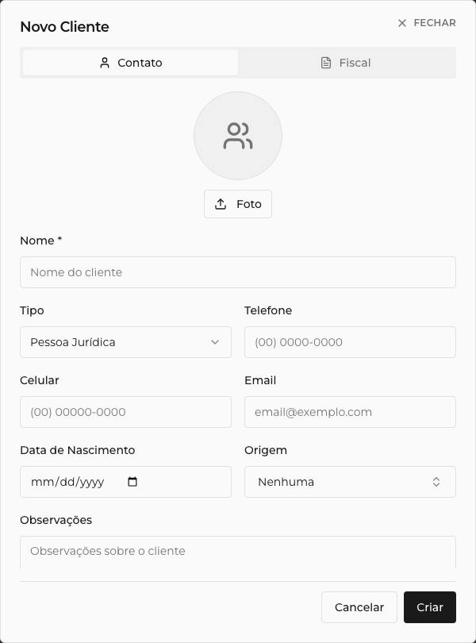
| Campo | Obrigatório | O que aceita e o que o sistema faz |
|---|---|---|
| Foto | Não | Botão que abre a galeria ou a câmera. A imagem é convertida e reduzida antes de subir. Aparece como avatar em toda lista e na ficha. |
| Nome * | Sim | Mínimo de 2 caracteres. É o nome que aparece em OS, orçamento, contrato e portal. Pode ser apelido comercial. |
| Tipo | Sim (já vem escolhido) | Pessoa Jurídica ou Pessoa Física. O padrão é Pessoa Jurídica. Define o selo PJ ou PF nas listas. |
| Telefone | Não | Máscara de telefone fixo, no formato (00) 0000-0000. |
| Celular | Não | Máscara de celular, no formato (00) 00000-0000. É o número que ganha botão de WhatsApp na ficha. |
| Não | Se preenchido, precisa ser um e-mail válido. É o mesmo campo do E-mail fiscal da aba Fiscal. | |
| Data de Nascimento | Não | Seletor de data. |
| Origem | Não | Lista com busca. Traz o catálogo de origens da empresa e permite criar uma origem nova na hora, digitando o nome e confirmando. |
| Observações | Não | Texto livre. Aparece na aba Geral da ficha do cliente. |
Mensagens de erro possíveis
- Nome deve ter no mínimo 2 caracteres, abaixo do campo Nome.
- Email inválido, abaixo do campo Email.
- Erro, com a descrição do problema, quando o salvamento falha no servidor.
Se você estiver na aba Fiscal e clicar em salvar com o Nome vazio, o sistema volta sozinho para a aba Contato e mostra o erro lá. Isso evita a sensação de "cliquei em salvar e não aconteceu nada".
Ao salvar, o sistema tenta descobrir a coordenada do endereço digitado para que a rota do técnico e o mapa ao vivo já saiam certos. Se não conseguir, o cadastro é salvo assim mesmo, sem travar. Escolher o endereço pela sugestão automática do campo Logradouro deixa a coordenada mais precisa.
3. Cadastro — aba Fiscal: buscar por CNPJ e o endereço se preencher sozinho
A aba Fiscal começa com o aviso: "Dados do tomador usados na emissão de NFS-e. Todos opcionais, preencha quando for emitir nota." É onde mora o endereço do cliente e os dados que a nota fiscal de serviço exige.
| Campo | Para que serve |
|---|---|
| Razão Social | Nome oficial da empresa na Receita. Aparece na coluna Empresa da lista. |
| Nome Fantasia | Nome comercial. |
| CPF/CNPJ | Documento do cliente, com máscara automática. Tem uma lupa do lado direito. |
| Inscrição Municipal | Somente números. |
| Inscrição Estadual | Texto livre, exemplo 123.456.789.112. |
| E-mail fiscal | É o mesmo e-mail da aba Contato: mudar aqui muda lá. |
| CEP | Ao completar o CEP, o sistema busca e preenche logradouro, bairro, cidade e UF. |
| Logradouro | Com sugestão automática de endereço enquanto você digita. Escolher uma sugestão também preenche número, bairro, cidade, UF e CEP. |
| Número, Complemento, Bairro | Texto livre. |
| UF / Cidade | Dois seletores encadeados: escolher o estado libera a lista de cidades daquele estado. |
A busca automática pelo CNPJ
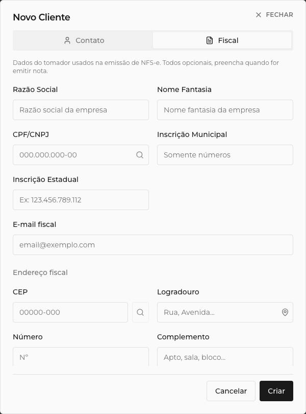
Quando você digita um CNPJ completo (14 dígitos) no campo CPF/CNPJ, o sistema consulta os dados públicos da Receita sozinho. Também dá para forçar a consulta clicando na lupa. Se der certo, aparece o aviso Dados da empresa preenchidos!. Se não, aparece CNPJ não encontrado na Receita ou Não foi possível consultar o CNPJ agora.
4. Origens de cliente: montar o catálogo de "de onde veio esse cliente"
Origem é a resposta para "como esse cliente chegou até mim". Serve para você saber onde vale a pena investir. O catálogo é da empresa inteira e aparece no campo Origem do cadastro de cliente e no CRM. Para abrir: na tela Clientes, botão de engrenagem no topo (no celular, botão Origens). Abre a janela Origens de Clientes.
Primeira vez: criar o conjunto padrão
Com o catálogo vazio, aparece Nenhuma origem cadastrada e o convite "Crie um conjunto inicial de origens (Indicação, Site, WhatsApp, Google…) e edite ou exclua à vontade depois." O botão Criar origens padrão cria 10 origens de uma vez: Indicação, Site, Telefone, WhatsApp, Google, Instagram, Facebook, Parceiro, Feira/Evento e Outro. Todas nascem editáveis e apagáveis, não são fixas do sistema.
Criar, editar e excluir
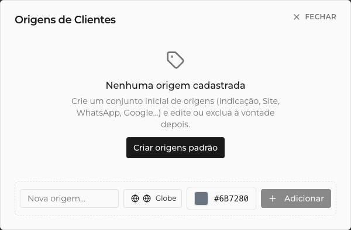
Na barra pontilhada de baixo você digita em Nova origem..., escolhe um ícone numa lista de 20 opções, escolhe a cor e clica em Adicionar. Cada origem da lista tem um menu com Editar (edição no lugar, com nome, ícone e cor) e Excluir. As confirmações são Origem criada!, Origem atualizada! e Origem removida!.
5. Formulários de captação: gerar o link público de cadastro pra colocar na bio
Formulário de captação é uma página pública, sem login, onde o próprio cliente preenche os dados dele e cai direto na sua base. É o link para colocar na bio do Instagram, no WhatsApp Business, num QR Code de balcão ou num anúncio. Para abrir: na tela Clientes, botão de prancheta no topo (no celular, botão Formulários). Abre a janela Formulários de captação, com o subtítulo "Links públicos para o cliente se cadastrar sozinho." e o botão Novo formulário no rodapé.
Criar um formulário: três abas
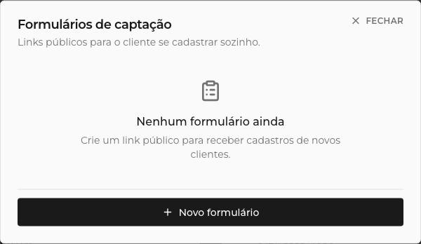
Aba Geral
- Título: obrigatório. É o texto grande no topo da página pública. Exemplo sugerido: "Cadastro de novos clientes". Salvar sem título mostra Informe um título para o formulário.
- Descrição (opcional): texto que aparece abaixo do título na página pública.
- Formulário ativo: chave liga e desliga. Desligado, o link para de aceitar cadastros sem precisar apagar nada.
- Expira em (opcional): data e hora. Depois dela o link deixa de aceitar cadastros.
Aba Campos
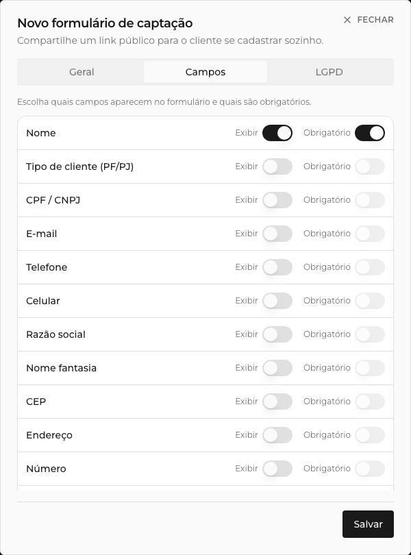
Lista os 16 campos que podem aparecer na página pública, cada um com duas chaves: Exibir e Obrigatório. Os campos disponíveis são: Nome, Tipo de cliente (PF/PJ), CPF / CNPJ, E-mail, Telefone, Celular, Razão social, Nome fantasia, CEP, Endereço, Número, Bairro, Complemento, Cidade, Estado (UF) e Observações.
Formulário novo já nasce com Nome exibido e obrigatório, e todo o resto desligado. Marcar Obrigatório só faz efeito se o campo estiver exibido. Se você desligar todos, ao salvar aparece Habilite ao menos um campo do formulário.
Aba LGPD
- Exigir consentimento: vem ligado. O cliente precisa marcar a caixa de aceite antes de enviar.
- Texto do consentimento: se deixar em branco, o sistema usa o texto padrão "Autorizo o contato e o tratamento dos meus dados para fins de atendimento, conforme a Lei Geral de Proteção de Dados (LGPD)."
Gerar e compartilhar o link
O link só existe depois que o formulário é salvo. Tentando copiar antes, aparece Salve o formulário primeiro com a explicação "O link é gerado depois que o formulário é criado.". Depois de salvo, o botão Gerar e copiar link (no rodapé da janela de edição) e o ícone de corrente na lista copiam um endereço no formato /cadastro/nome-do-formulario-codigo. Aparece Link gerado e copiado!.
Na lista, cada formulário mostra o título, um selo de situação e o total de cadastros recebidos. Os selos são Ativo, Inativo (chave desligada) e Expirado (a data de expiração passou; a chave fica travada). Excluir mostra "Tem certeza que deseja excluir "TÍTULO"? O link deixará de funcionar."
O que o cliente vê no link
A página pública abre com a marca da sua empresa (logo e cor, se você usa identidade própria), o título e a descrição do formulário, os campos que você habilitou e a caixa de aceite. O botão é Enviar cadastro. Deu certo, aparece Cadastro enviado com sucesso e "Recebemos seus dados. Em breve entraremos em contato.".
Mensagens que o visitante pode ver:
- Preencha os campos obrigatórios.
- É preciso aceitar os termos para enviar.
- Formulário não encontrado, com "Confira o link e tente novamente." quando o código não existe.
- Formulário indisponível, com "Este formulário não está mais disponível." quando o formulário está desligado, expirado ou atingiu o limite.
- Muitas tentativas. Tente novamente mais tarde. quando o mesmo dispositivo tenta demais.
6. Detalhe do cliente: Geral, Equipamentos, Histórico, Tarefas, Contratos, Financeiro
Clicando num cliente, abre a ficha completa. No topo ficam a foto, o nome, o seletor para trocar rapidamente de cliente, os botões de WhatsApp e o menu Ações. As abas variam conforme o plano e as permissões:
| Aba | Quando aparece | O que traz |
|---|---|---|
| Geral | Sempre | Informações, Endereço, Responsável no Local e Observações. |
| Equipamentos | Sempre | Equipamentos daquele cliente, com botão Novo Equipamento já vinculado a ele. |
| Histórico de OS | Sempre | Todas as ordens de serviço do cliente, com número, status e data, e o botão Nova OS. |
| Tarefas | Sempre | Tarefas ligadas ao cliente, com data, horário e situação (Pendente, Em andamento, Concluída). |
| Chamados | Só com o módulo Portal do Cliente | Chamados abertos pelo próprio cliente no portal. |
| Contratos | Sempre | Contratos do cliente, com nome, status, frequência e início, e o botão Novo Contrato. |
| Financeiro | Só com a permissão Ver Financeiro do Cliente | Lançamentos do cliente, com subabas Tudo, A vencer e Pagas. |
| Cobranças | Só com o módulo Cobranças e conta de recebimento ativa | Cobranças online do cliente, com link de pagamento, envio por WhatsApp e estorno. |
Aba Geral por dentro
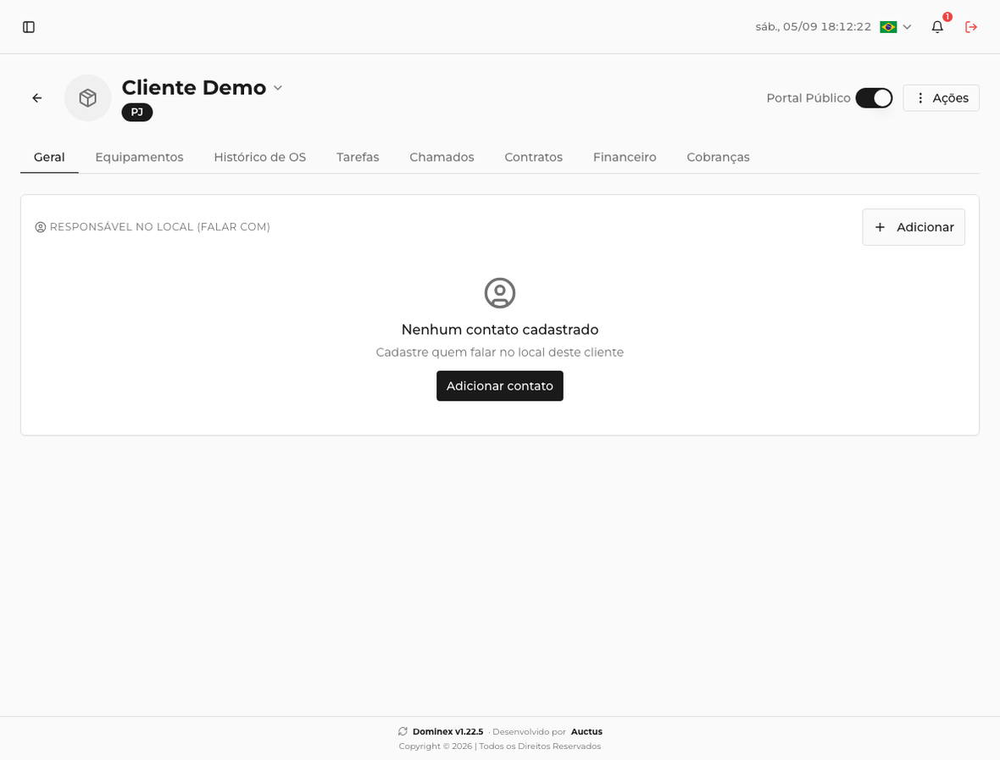
- Informações: Origem, CPF/CNPJ, Inscrição Estadual, Email, Telefone, Celular, Nome Fantasia e Data de Nascimento.
- Endereço: o endereço completo com dois atalhos, Abrir no Google Maps e Abrir no Waze. Serve para o gestor conferir a rota antes de mandar o técnico.
- Responsável no Local (falar com): os contatos do cliente.
- Observações: o texto livre digitado no cadastro.
Portal do cliente no topo da ficha
Se a sua empresa tem o módulo Portal do Cliente, aparece no topo da ficha a chave Portal Público e, no menu Ações, as opções Copiar link do portal e Abrir portal. O texto de ajuda da chave diz: "Ligado: qualquer pessoa com o link vê o portal (somente leitura). Desligado: o link exige login da sua empresa."
7. Contatos e "Responsável no Local" — WhatsApp direto de dentro do sistema
Um cliente empresa tem uma pessoa que abre a porta, outra que aprova o orçamento e outra que assina. A seção Responsável no Local (falar com), na aba Geral da ficha, é onde essas pessoas ficam.
Com a lista vazia aparece Nenhum contato cadastrado e "Cadastre quem falar no local deste cliente", com o botão Adicionar contato.
Campos do contato
| Campo | Obrigatório | Observação |
|---|---|---|
| Nome * | Sim | Nome da pessoa. |
| Cargo | Não | Exemplos que a própria tela sugere: Gerente, Supervisor, Zelador. |
| Telefone | Não | Formato (00) 00000-0000. É este número que vira o botão de WhatsApp. |
| Email corporativo | Não | Exemplo contato@empresa.com. |
Cada contato da lista tem o menu com WhatsApp (só aparece se houver telefone), Editar contato e Excluir contato. O WhatsApp abre a conversa direto com o número, sem salvar na agenda do celular. No cabeçalho da ficha, o telefone e o celular do próprio cliente também ganham botão de WhatsApp.
8. Tela Equipamentos: cadastro, categorias e criar o cliente na hora, só com o nome
A tela Equipamentos, em /equipamentos, tem duas abas na lateral (pílulas no celular): Equipamentos e Categorias.
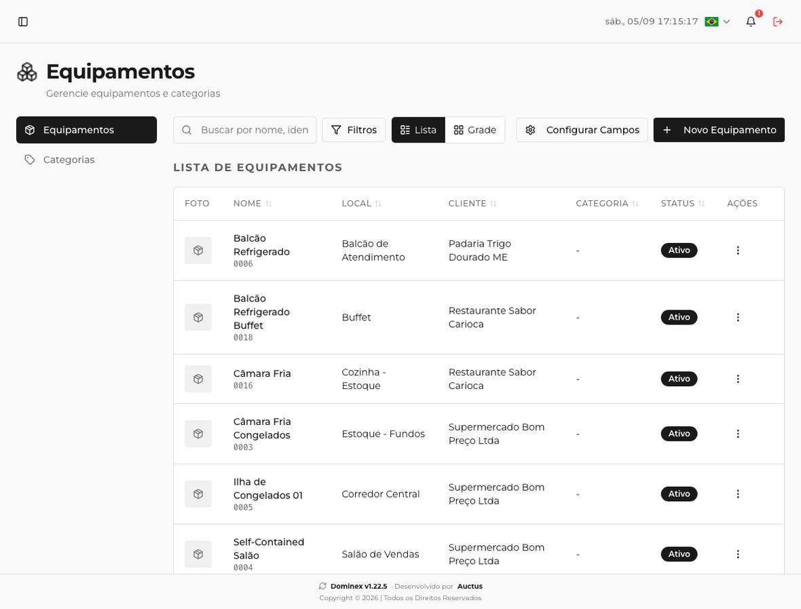
A busca diz Buscar por nome, identificador, marca ou cliente... e procura em cinco campos: nome, identificador, marca, modelo e nome do cliente. Ao lado tem o botão Filtros, com dois filtros de múltipla escolha: Categoria e Cliente. Nenhum marcado significa "mostrar tudo".
As colunas são Foto, Nome, Local, Cliente, Categoria, Status e Ações. Status é Ativo ou Inativo. Também existe o alternador entre grade e lista, igual ao de Clientes.
Criar, editar e excluir equipamento exige a permissão Gerenciar Equipamentos (ou cargo de administrador ou gestor). Excluir mostra "Tem certeza que deseja excluir "NOME"? Esta ação não pode ser desfeita." e o aviso Equipamento excluído!.
Cadastrar um equipamento
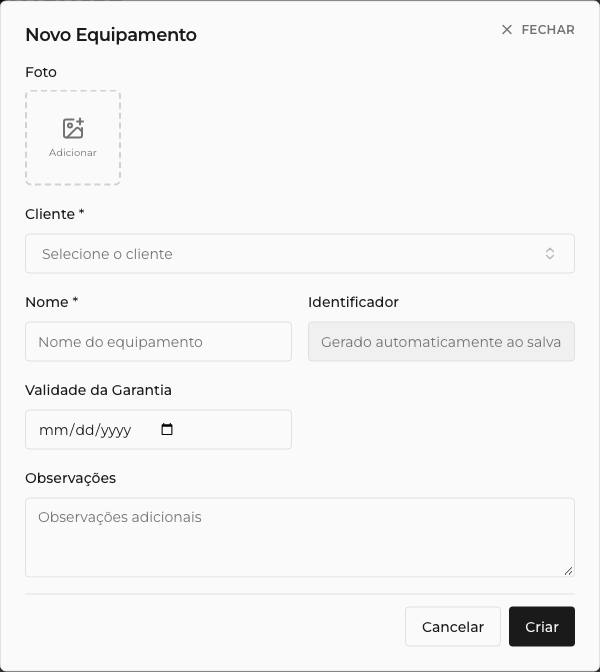
O botão Novo Equipamento abre a janela com estes campos:
| Campo | Obrigatório | Detalhe |
|---|---|---|
| Foto | Não | Quadrado pontilhado com Adicionar. A imagem é reduzida antes de subir. |
| Cliente * | Sim | Lista com busca. Todo equipamento pertence a um cliente, sem exceção. |
| Nome * | Sim | Como você chama o aparelho, por exemplo "Split Sala de Reunião". |
| Identificador | Não editável | Fica travado, escrito Gerado automaticamente ao salvar. O sistema gera um número sequencial por empresa, com 4 dígitos: 0001, 0002, 0003. |
| Categoria | Não | Só aparece se existir pelo menos uma categoria cadastrada. |
| Campos configuráveis | Depende | Marca, Modelo, Nº de Série, Capacidade/Especificação, Local e Data de Instalação. Cada um pode ser renomeado, escondido ou tornado obrigatório. |
| Validade da Garantia | Não | Data. |
| Observações | Não | Texto livre. |
Se faltar um campo marcado como obrigatório, aparece o aviso Preencha os campos obrigatórios listando quais, e cada campo em falta ganha a mensagem Campo obrigatório embaixo. Se o salvamento falhar no servidor, aparece Erro ao salvar equipamento.
Criar o cliente na hora, só com o nome
No campo Cliente *, se você digitar um nome que não existe, aparece a opção de criar. Também existe a opção fixa + Novo cliente dentro da lista. Isso abre a janela Novo cliente com quatro campos: Nome, CPF / CNPJ, E-mail (opcional) e Telefone (opcional), e o botão Criar cliente. O nome que você digitou já vem preenchido.
- Aberta a partir do cadastro de equipamento: o CPF/CNPJ é opcional. Dá para criar o cliente só com o nome e completar o cadastro depois. Basta o nome preenchido para o botão Criar cliente liberar.
- Aberta a partir de uma cobrança online: o CPF/CNPJ é obrigatório, porque o meio de pagamento exige o documento. Sem ele aparece Informe o CPF ou CNPJ do cliente para cobrar. e nada é salvo.
Digitando um CNPJ completo nessa janela rápida, o sistema consulta a Receita e preenche razão social, e-mail e telefone, mas só nos campos vazios. O tipo do cliente sai do documento: 14 dígitos vira Pessoa Jurídica, o resto vira Pessoa Física.
Categorias de equipamento
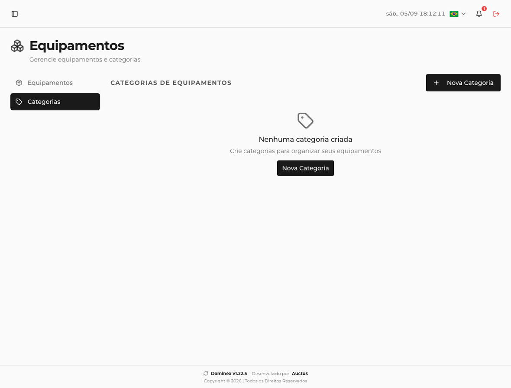
A aba Categorias mostra Categorias de Equipamentos com o botão Nova Categoria. Cada categoria tem Nome da categoria (a tela sugere "Ex: Split, Cassete, VRF...") e Cor, que vira uma bolinha ao lado do nome nas listas. Sem nenhuma, aparece Nenhuma categoria criada.
9. Campos customizados de equipamento: criar, ordenar, marcar obrigatório e visível
Cada ramo precisa guardar coisas diferentes: gás refrigerante, corrente nominal, número do lacre, potência do painel, data da última carga. O botão Configurar Campos, no topo da lista de equipamentos, abre a janela Configurar Campos do Equipamento, com a explicação: "Configure quais campos aparecem no cadastro de equipamentos. Você pode excluir, ocultar, renomear, reordenar e definir como obrigatório."
O que dá para fazer com cada campo
- Renomear: dá para transformar "Capacidade/Especificação" em "BTUs", por exemplo.
- Mostrar ou Ocultar: campo oculto some do cadastro, mas o que já estava salvo continua guardado.
- Tornar obrigatório ou Tornar opcional: campo obrigatório ganha asterisco e trava o salvamento se ficar vazio.
- Mover para cima e Mover para baixo, ou arrastar, define a ordem no formulário.
- Tipo e opções, e Excluir.
Tipos de campo
| Tipo | Como aparece para quem preenche |
|---|---|
| Texto | Caixa de texto livre. |
| Número | Campo numérico, aceita casa decimal. Apagando tudo, ele fica vazio de verdade, não fica preso em zero. |
| Data | Seletor de data. |
| Sim/Não | Lista com duas opções, Sim e Não. |
| Lista de opções | Você cadastra as opções uma a uma (Adicionar opção) e quem preenche escolhe uma delas. |
A própria tela avisa, ao trocar o tipo: "Trocar o tipo muda só como o valor é exibido, o dado já salvo é preservado."
Criar um campo novo
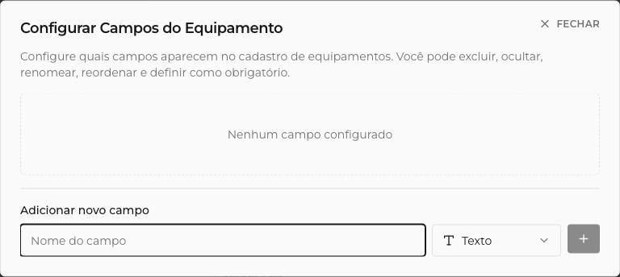
No fim da janela existe o bloco Adicionar novo campo: você digita o nome em Nome do campo, escolhe o Tipo do campo, cadastra as opções se for lista, e clica em Adicionar campo. Aparece Campo criado!. O campo novo nasce visível, opcional e no fim da ordem.
Excluir um campo
A confirmação diz: Excluir campo, "Tem certeza que deseja excluir este campo? Dados já salvos neste campo serão mantidos no banco de dados." Ou seja, o campo some do formulário, mas o histórico não é destruído. Se quiser só tirar da tela sem risco, prefira Ocultar a Excluir.
10. Detalhe do equipamento: QR Code, etiqueta configurável, anexos e histórico de OS
Clicando num equipamento, abre a ficha dele com três abas: Geral, Anexos e Histórico / Tarefas.
Na aba Geral, no topo, ficam a foto do equipamento e o QR Code, com o identificador em destaque abaixo. O bloco Informações lista, em formato rótulo e valor: Categoria, Cliente, Marca, Modelo, Nº de Série, Local, Data de Instalação, Garantia até, Identificador, Observações e todos os campos customizados preenchidos.
O QR Code e os quatro botões
Abaixo do QR ficam quatro botões: Gerar Etiqueta, Baixar QR (PNG), Abrir link e Copiar link.
O Gerar Etiqueta continua funcionando mesmo sem portal, só que a etiqueta sai sem o QR Code.
A etiqueta configurável
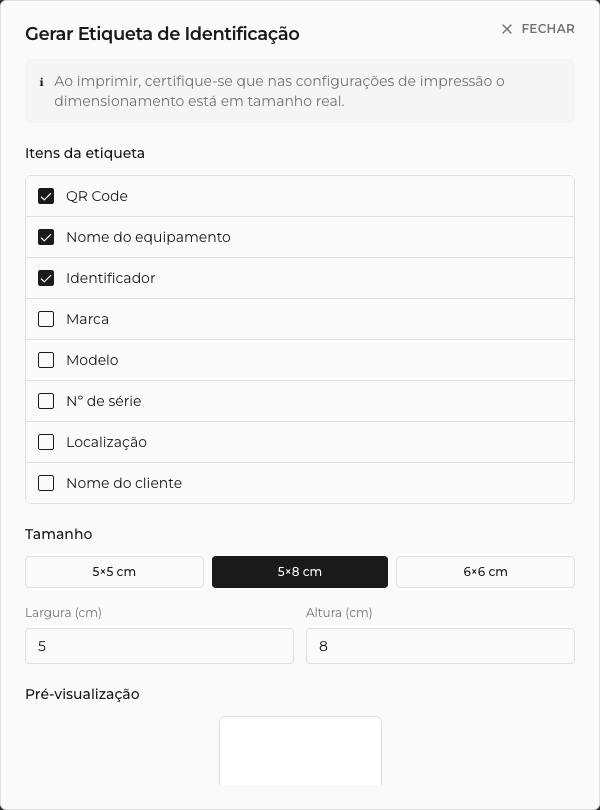
O botão Gerar Etiqueta abre Gerar Etiqueta de Identificação, com "Escolha o tamanho da etiqueta para impressão."
Itens da etiqueta: caixinhas para escolher o que vai impresso. As opções são Nome da empresa, Telefone da empresa, E-mail da empresa, QR Code, Nome do equipamento, Identificador, Marca, Modelo, Nº de série, Localização e Nome do cliente. Só aparecem as opções que têm conteúdo: se o equipamento não tem marca cadastrada, a opção Marca nem aparece na lista.
Tamanho: três atalhos prontos, 5×5 cm, 5×8 cm e 6×6 cm, mais os campos Largura (cm) e Altura (cm) para medida livre. A medida é limitada entre 2 cm e 30 cm.
Há uma Pré-visualização ao lado, e o aviso: "Ao imprimir, certifique-se que nas configurações de impressão o dimensionamento está em tamanho real." Sem isso a etiqueta sai fora de medida. A configuração da etiqueta (itens marcados e tamanho) fica guardada no navegador daquele computador; em outro computador ela volta ao padrão.
Aba Anexos
O bloco Arquivos anexados tem o botão Enviar, que aceita vários arquivos de uma vez. Durante o envio aparece Enviando 2 de 5... e no fim 3 anexos enviados!. Os arquivos são agrupados em três blocos: Imagens, PDFs e Outros Documentos. Sem nada, aparece Nenhum anexo. Excluir pede a confirmação Excluir anexo, "Tem certeza que deseja excluir este anexo?".
É aqui que vão manual do fabricante, nota de compra, foto da placa de identificação e laudo. Diferente do cadastro de cliente, o equipamento tem anexos.
Aba Histórico / Tarefas
Duas seções. Ordens de Serviço Relacionadas lista todas as OS que citaram aquele equipamento, com número, status e data. Sem nenhuma, aparece Nenhuma OS relacionada a este equipamento. Abaixo, Tarefas anota pendências rápidas do aparelho, digitando em Nova tarefa....
Suporte: problemas comuns
| O cliente diz | Causa provável | Como resolver |
|---|---|---|
| "Digitei o CNPJ e ele apagou o endereço que eu tinha preenchido" | A consulta de CNPJ sobrescreve razão social, fantasia, e-mail, telefone e o endereço inteiro | Explique que a ordem certa é digitar o CNPJ PRIMEIRO e ajustar na mão depois. O único campo protegido é o Nome. Peça para reabrir o cliente, corrigir o endereço e salvar. |
| "Fechei a janela sem querer e perdi o cadastro" | Rascunho automático | Clicar em Novo Cliente de novo faz aparecer a pergunta para retomar o rascunho. Vale só para cadastro novo. |
| "Onde eu anexo o contrato assinado do cliente?" | O cadastro de cliente não tem anexos | Anexe no contrato (aba Documentos anexados do contrato) ou na ficha do equipamento (aba Anexos). No cliente não existe. |
| "Meu cliente tem três lojas, como cadastro os três endereços?" | É um endereço por cliente | Duas saídas: cadastrar os equipamentos com o campo Local preenchido com o nome da loja, ou usar contrato PMOC, que tem ambientes com endereço próprio da unidade. Alguns clientes cadastram uma ficha por unidade, com o nome "Cliente X, Loja Centro". |
| "O botão de copiar o link do QR do equipamento está apagado" | Cliente sem portal ativo | Aparece a mensagem Cliente sem portal ativo. Abra a ficha do cliente e confira se o menu Ações mostra Copiar link do portal. Sem portal, só a etiqueta sem QR funciona. |
| "Não consigo criar cliente só com o nome" | A janela rápida está sendo aberta pelo fluxo de cobrança, que exige documento | Se a mensagem for Informe o CPF ou CNPJ do cliente para cobrar., é o fluxo de cobrança. Pelo cadastro de equipamento, o documento é opcional e o nome basta. |
| "Criei o campo de gás só para os splits, mas ele aparece em tudo" | Campo customizado é por empresa, não por categoria | Explique que hoje o catálogo de campos extras é único para a empresa. A saída é deixar o campo opcional e preencher só onde faz sentido. |
| "Não aparece Marca nem Modelo no cadastro de equipamento" | Campos ocultos ou inexistentes na configuração de campos | Abra Configurar Campos na tela de Equipamentos. Oculto, use Mostrar. Lista vazia, crie os campos ali. |
| "O link do formulário de captação não funciona" | Formulário desligado, expirado ou nunca salvo | Se o visitante vê Formulário indisponível, confira o selo na lista: Inativo ou Expirado. Se você não conseguiu copiar o link, é porque o formulário ainda não foi salvo. |
| "Preciso importar 800 clientes de uma planilha" | Não existe importação em massa | Não há esse recurso hoje. As opções são cadastrar na tela, criar na hora a partir de OS, orçamento ou equipamento, ou publicar um formulário de captação e pedir para os clientes se cadastrarem. |
Perguntas frequentes
- Preciso preencher CPF ou CNPJ para cadastrar o cliente?
- Não. Só o Nome é obrigatório. O documento vira obrigatório na hora de emitir nota fiscal ou gerar cobrança online.
- Qual a diferença entre o campo Nome e o campo Razão Social?
- Nome é como você chama o cliente no dia a dia, e é o que aparece nas listas, na OS e no portal. Razão Social é o nome oficial na Receita, usado na nota fiscal. Os dois podem ser diferentes.
- Um equipamento pode ficar sem cliente?
- Não. O campo Cliente é obrigatório no cadastro de equipamento. Todo equipamento pertence a um cliente.
- Posso escolher o número do identificador do equipamento?
- Não. Ele é gerado automaticamente ao salvar, sequencial por empresa, com quatro dígitos (0001, 0002, e assim por diante). O campo fica travado no formulário.
- Para onde o QR Code do equipamento leva?
- Para o portal daquele cliente, já filtrado naquele aparelho. Quem escaneia vê os dados e o histórico do equipamento sem precisar de senha, desde que o portal esteja público.
- Dá para criar um campo de equipamento que só apareça numa categoria?
- Não. Os campos extras são da empresa inteira e aparecem em todo equipamento. Deixe o campo opcional e preencha só onde faz sentido.
- O cliente que se cadastrou sozinho pelo link já entra completo?
- Entra só com os campos que você habilitou, e com a origem marcada como formulário público. O resto fica em branco e precisa ser completado antes de emitir nota.
- Consigo mandar WhatsApp para o cliente de dentro do sistema?
- Sim. Na ficha do cliente, o telefone e o celular ganham botão de WhatsApp, e cada contato do Responsável no Local também. O sistema abre a conversa sem você precisar salvar o número na agenda.
- Onde vejo tudo que já fiz para um cliente?
- Na ficha dele, aba Histórico de OS. Para um aparelho específico, abra o equipamento e vá em Histórico / Tarefas.
Serviços, tarefas e checklists
Aqui você monta o cardápio de serviços da sua empresa e os formulários que o técnico vai preencher em campo. Sem esse cadastro, toda Ordem de Serviço nasce sem tipo, sem numeração organizada e sem roteiro de conferência.
1. Onde fica: menu Serviços (/servicos) e as 3 abas
A tela se chama Serviços e o subtítulo dela é "Configure os tipos de serviços, tarefas e checklists". Ela vive no endereço /servicos e é organizada em três abas, que no computador aparecem como uma coluna de navegação à esquerda e no celular como pílulas roláveis no topo:
- Tipos de Serviços: o catálogo do que sua empresa faz. Instalação, higienização, manutenção preventiva, visita técnica, o que for.
- Tipos de Tarefas: as categorias dos compromissos internos da agenda (reunião, entrega, compra). Tarefa não é Ordem de Serviço.
- Checklists: os roteiros de perguntas que o técnico responde no celular durante o atendimento.
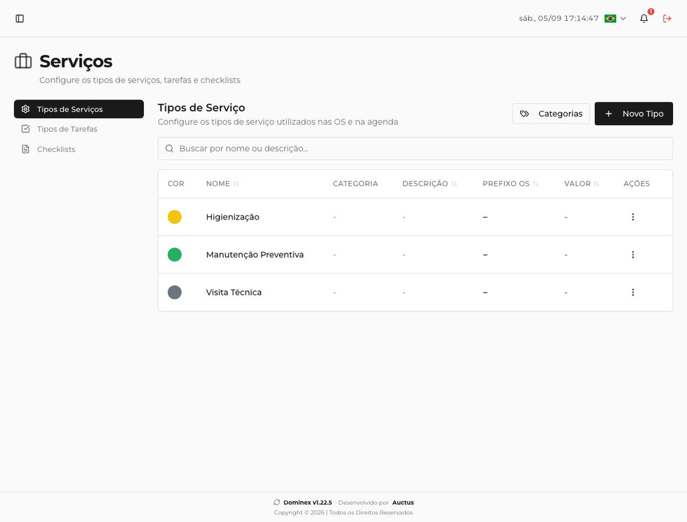
/checklists nos favoritos, ele continua funcionando: o sistema leva a pessoa direto para /servicos. O endereço ainda mais antigo /questionarios também redireciona. O caminho de verdade hoje é Serviços → aba Checklists. O único endereço de checklist que abre uma tela própria é o detalhe de um checklist específico, que o sistema monta sozinho ao você clicar num checklist da lista.
A aba escolhida fica gravada no endereço do navegador, então dá para mandar um link direto para a aba de Checklists. Cada aba tem busca e listagem próprias. No celular, o botão de criar vira um botão redondo flutuante no canto inferior direito.
2. Aba Tipos de Serviço: nome, cor, categoria, prefixo de numeração da OS
Na aba Tipos de Serviços você vê a lista do que sua empresa oferece. No computador é uma tabela com as colunas Cor, Nome, Categoria, Descrição, Prefixo OS, Valor e Ações. No celular é uma lista, com o nome em destaque e a categoria, descrição e valor logo abaixo. Tipo desativado aparece com a linha esmaecida e um selo Inativo.
Para criar, clique em Novo Tipo (no celular, no botão flutuante com o rótulo "Tipo"). Abre a janela Novo Tipo de Serviço. Ao editar um existente, o título vira Editar Tipo de Serviço.
Campos da aba Dados
| Campo | Obrigatório | O que aceita e o que o sistema faz |
|---|---|---|
| Nome * | Sim | Texto livre. Exemplo sugerido pela própria tela: "Manutenção Preventiva". Enquanto o nome estiver vazio, o botão de salvar fica desativado. É esse nome que aparece na criação da OS, na agenda e no relatório entregue ao cliente. |
| Cor | Não | Seletor de cor mais um campo de texto ao lado (dá para colar o código da cor). Começa em verde. Essa cor é a bolinha que identifica o serviço na agenda e no cartão da OS. Escolher cores bem diferentes entre si é o que faz a agenda ficar legível de longe. |
| Categoria | Não | Lista de categorias que você mesmo cria pelo botão Categorias, no topo da aba. Sem escolher, fica como Sem categoria. Serve para agrupar serviços parecidos e para filtrar a lista. |
| Descrição | Não | Texto livre e mais longo. Aparece na tabela e ajuda a diferenciar dois serviços de nome parecido. |
| Prefixo de Numeração OS | Não | Sigla curta, sugestão da tela: "MP, MC, INS". Enquanto você digita, a tela mostra ao lado como vai ficar o número, no formato MP-2026-0001. Sem prefixo, o sistema usa OS. |
| Vinculado a equipamento | Não (vem ligado) | Chave liga/desliga. Explicada em detalhe no capítulo seguinte. |
| Ativo | Não (vem ligado) | Chave liga/desliga. Desligado, o serviço some das listas de escolha em OS nova, checklist e orçamento, mas continua nas OS antigas. |
| Preço padrão (opcional) | Não | Valor em reais. Detalhado no capítulo 5. |
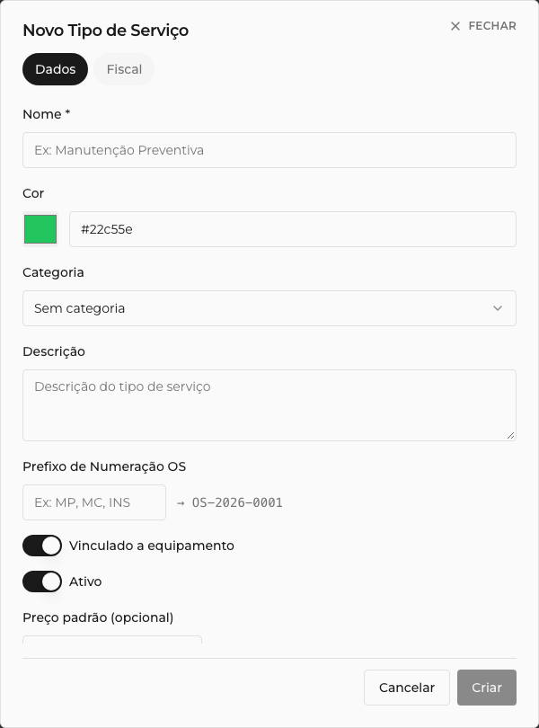
Categorias de serviço
O botão Categorias abre a janela Categorias de Serviço. Ali você cria, renomeia, dá cor e exclui categorias. Ao excluir, o aviso é claro: "A categoria será removida. Tipos de serviço vinculados ficarão sem categoria." Ou seja, você não perde nenhum tipo de serviço ao apagar a categoria, ele só volta a ficar sem agrupamento. As confirmações mostram "Categoria criada!", "Categoria atualizada!" e "Categoria excluída!".
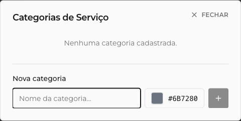
Quando existe pelo menos uma categoria cadastrada, aparece um filtro no topo da lista. Se houver algum serviço sem categoria, o filtro ganha a opção Sem categoria.
Buscar e excluir
O campo de busca no topo procura por nome ou descrição, com o texto de apoio "Buscar por nome ou descrição...". Para excluir, use o menu de três pontos ao fim da linha (no celular, o menu do item) e escolha Excluir. A confirmação diz: "Tem certeza que deseja excluir este tipo de serviço? Esta ação não pode ser desfeita."
3. O switch "exige equipamento" e o efeito dele lá na criação da OS
Na tela, esse controle se chama Vinculado a equipamento e vem ligado em todo tipo de serviço novo. Ele responde a uma pergunta simples: esse serviço acontece em cima de uma máquina cadastrada, ou não?
- Ligado (o padrão): ao criar uma OS com esse tipo de serviço, a etapa Equipamentos e Checklists mostra a lista de equipamentos do cliente escolhido, com caixinhas de seleção, foto do equipamento, marca, modelo, identificador e local. Serve para higienização de split, troca de compressor, inspeção de elevador, manutenção de câmera.
- Desligado: a mesma etapa deixa de mostrar a lista de equipamentos. Serve para orçamento de visita, treinamento, vistoria de obra, laudo, deslocamento, coisas que não são em cima de um bem cadastrado.
Regras que o sistema aplica
- Se a OS for criada sem escolher tipo de serviço (opção Nenhum), o sistema assume que exige equipamento e mostra a lista mesmo assim.
- Mudar essa chave depois não mexe nas OS já criadas. Vale da próxima OS em diante.
- Quando o cliente escolhido ainda não tem equipamento nenhum, a etapa avisa: "Nenhum equipamento cadastrado para este cliente." e oferece um botão de mais (+) para criar o equipamento na hora, sem sair do formulário.
- Se nenhum cliente foi escolhido ainda, a mensagem é "Selecione um cliente primeiro para ver equipamentos."
4. Campos fiscais do serviço (código de serviço, NBS, cTribMun, alíquota ISS, item LC116) — por que preencher agora poupa dor no T14
Se a sua empresa contratou o módulo de Nota Fiscal, a janela de tipo de serviço ganha uma segunda aba, chamada Fiscal, ao lado da aba Dados. Sem o módulo, essa aba não existe e todo o resto continua igual.
O cabeçalho da aba diz: "Fiscal (NFS-e). Classificação tributária usada ao emitir nota fiscal de serviço. Todos os campos são opcionais." Isso é verdade: o tipo de serviço salva normalmente sem nenhum deles. A diferença é que, preenchendo aqui uma vez, toda nota emitida com esse serviço já nasce classificada.
| Campo | O que é | Detalhe importante |
|---|---|---|
| Código de serviço (cTribNac) | Código nacional do serviço | Campo de busca: digite parte do código ou da descrição e escolha na lista. Ao escolher, o sistema preenche sozinho o item da LC 116 quando o código traz essa referência. |
| Código de tributação municipal (cTribMun) | Complemento de 3 dígitos definido pela prefeitura | Só aceita números e no máximo 3 dígitos. A explicação na tela: "Complemento de 3 dígitos definido pela prefeitura, que se junta ao código nacional (ex.: 14.01.01 + 001). Sem ele a prefeitura pode recusar a nota." |
| Item da LC 116 | Item da lista de serviços da Lei Complementar 116 | Texto livre, formato tipo 14.01. Normalmente já vem preenchido pela escolha do código de serviço. |
| Código NBS | Nomenclatura Brasileira de Serviços | Também é campo de busca. A dica na tela: "Digite ao menos 2 caracteres pra buscar." |
| Alíquota de ISS (%) | Percentual do ISS do serviço | Aceita número com vírgula ou ponto. Exemplo mostrado na tela: 5. |
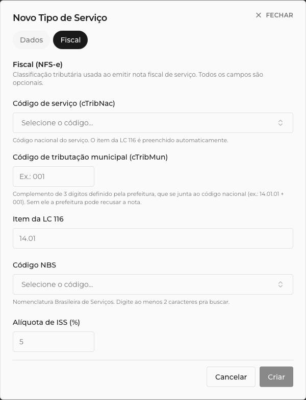
Preencher isso agora é o que evita perder tempo depois. Na hora de emitir a nota fiscal do serviço, o sistema puxa esses códigos automaticamente. Sem eles preenchidos aqui, cada nota vira uma consulta manual à prefeitura, e nota recusada por classificação errada volta com código de erro difícil de decifrar.
5. Preço padrão do serviço e como ele auto-preenche o orçamento
O último campo da aba Dados é Preço padrão (opcional). É um campo de dinheiro, com sugestão "Ex: 350,00", e a explicação embaixo é exatamente esta: "Valor sugerido ao adicionar este serviço em um orçamento. Pode ser editado pelo vendedor."
Regras que o sistema aplica
- Campo vazio significa sem preço padrão. Na tabela da lista ele aparece como um traço na coluna Valor.
- O valor é apenas sugestão. Quem monta o orçamento pode alterar linha a linha sem mexer no cadastro.
- O preço padrão tem menor prioridade que a calculadora de custos do orçamento. Se você configurou custo, mão de obra e margem para aquele serviço, é o cálculo que manda. O preço padrão é o atalho para quem ainda não configurou custo nenhum.
- É um valor único por serviço. Não existe tabela de preço por cliente nem por região nesta tela.
6. Aba Tipos de Tarefa — as categorias da "Nova Tarefa" da Agenda
A aba se chama Tipos de Tarefas e o subtítulo é "Configure os tipos de tarefas utilizadas na agenda". Ela funciona igual à aba de tipos de serviço, mas com bem menos campos, porque tarefa não vira Ordem de Serviço.
Clicando em Novo Tipo abre a janela Novo Tipo de Tarefa, com quatro campos:
| Campo | Obrigatório | O que faz |
|---|---|---|
| Nome * | Sim | Sugestão da tela: "Ex: Reunião, Entrega, Compra". Sem nome, o botão de criar fica travado. |
| Cor | Não | Identifica visualmente a tarefa no calendário. |
| Descrição | Não | Texto de apoio, aparece na tabela. |
| Ativo | Não (ligado) | Desligado, o tipo some da lista ao criar tarefa nova. |
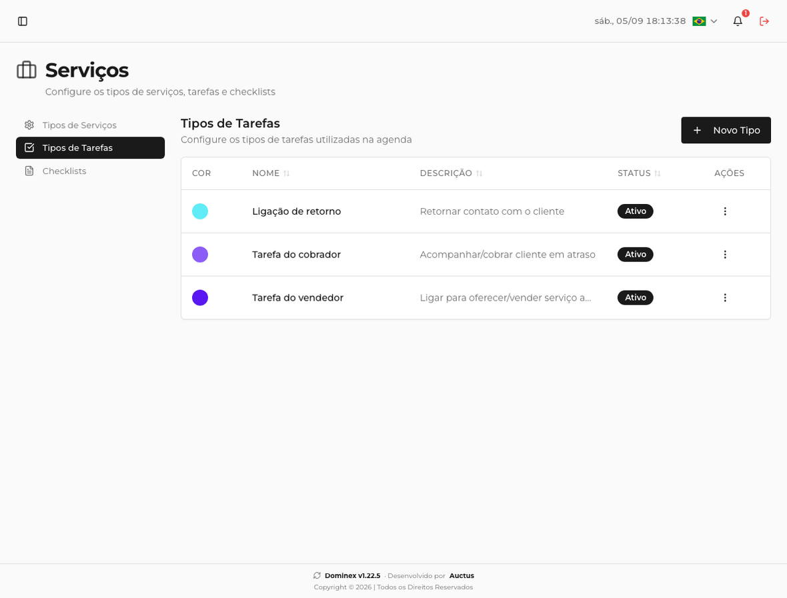
Esses tipos alimentam o campo Tipo de Tarefa do formulário Nova Tarefa da Agenda. Se você nunca cadastrar nenhum, o campo fica vazio e a tarefa é criada sem categoria, o que funciona, só perde a organização visual.
Excluir um tipo de tarefa pede confirmação: "Tem certeza que deseja excluir este tipo de tarefa? Esta ação não pode ser desfeita."
7. Aba Checklists: criar template do zero × importar do catálogo de modelos prontos
A aba Checklists tem o subtítulo "Modelos de checklist reutilizáveis em OS e PMOC". A lista mostra as colunas Nome, Perguntas, Serviços, Status e Ações. Na coluna Serviços, um checklist que vale para tudo aparece com o selo Todos; um checklist restrito mostra as bolinhas coloridas dos serviços ligados a ele (até três, depois um contador com o resto).
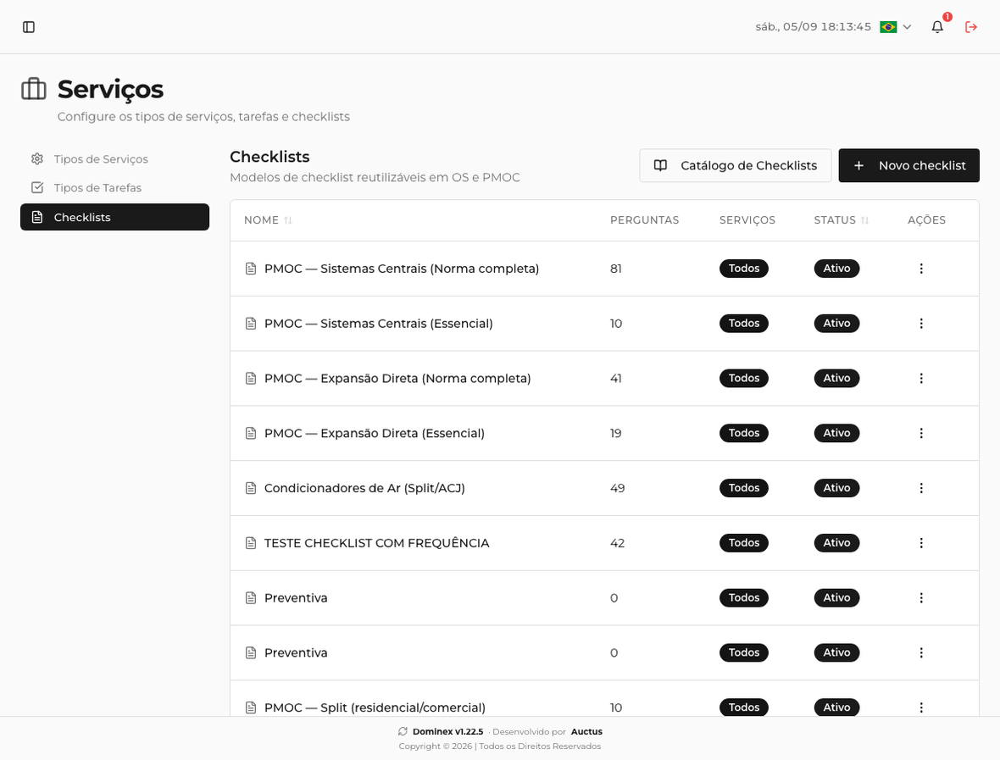
Caminho A: criar do zero
- Clique em Novo checklist (no celular, no botão flutuante "Checklist"). Abre a janela Novo Checklist.
- Preencha Nome do checklist. A sugestão da tela é "Ex: Checklist de manutenção preventiva". Sem nome, o botão Criar fica travado.
- Em Serviços habilitados, deixe a chave Todos os serviços ligada, ou desligue e marque só os tipos de serviço em que esse checklist deve aparecer. A lista mostra a bolinha de cor do serviço e a categoria dele embaixo.
- Clique em Criar. O sistema já abre o checklist recém-criado, pronto para você adicionar perguntas.
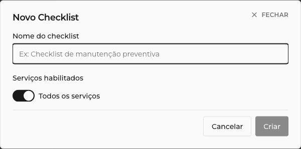
Caminho B: importar do catálogo de modelos prontos
O botão Catálogo de Checklists (no celular só Catálogo) abre uma biblioteca de modelos já escritos. O aviso no topo é honesto: "Estes são apenas modelos sugeridos." e "Cada empresa deve adequá-los aos seus próprios processos. As perguntas ficam totalmente editáveis depois."
O catálogo tem duas seções:
- Modelos de checklist: modelos curados por segmento. Para empresas de refrigeração e climatização, os modelos são Instalação de Split, Higienização de Split, Manutenção Preventiva de Split e Carga de Gás, todos com perguntas prontas, incluindo campos numéricos com unidade (pressão em psi, temperatura em °C, corrente em A, gás em g) e assinatura do cliente no fim. Para os demais segmentos, o modelo é Visita Técnica, um roteiro genérico de atendimento.
- Catálogo PMOC: atividades da norma, agrupadas por seção. A explicação na tela: "Atividades da norma. Marque as que quiser ou selecione uma seção inteira." Essa seção só aparece para empresas do segmento de refrigeração e climatização.
Cada atividade importada do catálogo PMOC já vem com o tipo certo: atividade de medição vira pergunta de número, com unidade e faixa esperada; atividade de verificação vira pergunta de conformidade. A frequência da norma (mensal, trimestral, semestral, anual) também é trazida junto.
O catálogo pode ser usado de dois jeitos: pelo botão da aba, ele cria um checklist novo já preenchido (o sistema pede o nome depois de você escolher as perguntas). Dentro de um checklist já existente, o mesmo botão acrescenta as perguntas escolhidas ao que já está lá.
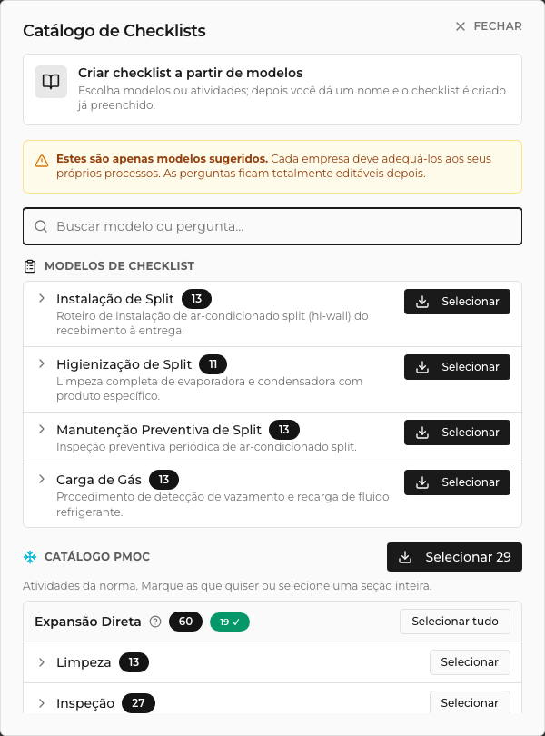
Mensagens que você pode ver
- "Nada a importar" com o detalhe "Essas perguntas já estão no checklist." O sistema compara pelo texto da pergunta e não duplica.
- "Importação concluída" e, quando aplicável, "N pergunta(s) já existiam e foram ignoradas."
- "Nada selecionado" com "Escolha ao menos uma pergunta ou modelo."
8. Editor de checklist: sim/não, conformidade, texto, número, medição PMOC, seleção, foto, assinatura
Clicando num checklist da lista você entra no editor dele. No topo fica o nome (clique nele para renomear na hora), a contagem de perguntas, a chave Ativo e a lixeira. Logo abaixo, à direita, fica Serviços habilitados. O corpo é a lista de perguntas, na ordem em que o técnico vai ver.
Para adicionar, use Nova Pergunta (no celular, o botão flutuante "Pergunta"). A janela Nova Pergunta tem:
| Campo | O que faz |
|---|---|
| Pergunta | O texto que o técnico lê. Obrigatório: sem ele o botão de salvar fica travado. |
| Descrição interna (opcional) | Instrução só para o técnico. A própria tela avisa: "Visível apenas durante o preenchimento. Não aparece no relatório nem no portal do cliente." Ótimo para colocar o procedimento, o torque, a faixa aceitável. |
| Tipos de resposta | Blocos clicáveis, um por formato. A nota diz: "Marque uma ou mais formas de responder. Pode combinar." |
| Campo obrigatório | Vem ligado. Pergunta obrigatória em branco bloqueia a finalização da OS. |
| Frequência | Só aparece para empresas com o módulo de Contratos. Define em quais visitas a pergunta aparece (toda visita, mensal, bimestral, trimestral, semestral, anual ou personalizado por meses, dias ou número de visitas). |
Os formatos de resposta disponíveis
| Formato | Como o técnico responde | Como sai no relatório |
|---|---|---|
| Verdadeiro/Falso | Uma chave liga/desliga. | Selo verde "Sim" ou selo vermelho "Não". |
| Conformidade | Três botões: Conforme, Não Conforme e N/A. Tocar de novo no mesmo botão limpa a resposta. | Selo verde, vermelho ou cinza com o texto correspondente. É o formato certo para inspeção e para PMOC. |
| Texto | Caixa de texto de duas linhas, que cresce conforme escreve. | O texto na íntegra. |
| Número | Teclado numérico, aceita casa decimal. | O número. Se a pergunta veio do catálogo com unidade e faixa esperada, o relatório mostra a unidade e destaca quando o valor ficou fora da faixa. |
| Medição PMOC | Campo numérico com a unidade fixada à direita e a faixa esperada logo abaixo. Se o valor sai da faixa, a borda fica âmbar e aparece o aviso "Valor fora da faixa esperada — confira o equipamento ou registre observação". O sistema não bloqueia: o técnico precisa poder registrar o valor anômalo justamente para documentar a anomalia. | Valor, unidade, faixa esperada e o aviso de fora da faixa. |
| Seleção | Lista de opções com caixinhas. O técnico pode marcar mais de uma. | As opções escolhidas. |
| Foto | Dois botões lado a lado: Tirar Foto e Galeria. | As fotos, clicáveis para ampliar. |
| Vídeo | Gravação de clipe curto. Depende de módulo, veja o capítulo 10. | Player na tela; no PDF, um aviso de que o vídeo está disponível na versão online. |
| Assinatura | Área para assinar com o dedo, centralizada, com botão de limpar. | A assinatura desenhada. |
Reordenar, editar e remover perguntas
- No computador, arraste a pergunta pela alça à esquerda para mudar a ordem.
- No celular, use as setas para cima e para baixo ao lado de cada pergunta.
- Remover pede confirmação: "Remover pergunta?" com o aviso "Esta ação não pode ser desfeita."
- Nas perguntas de Seleção, cada opção pode ser renomeada clicando nela e removida pelo X vermelho.
9. Combinar tipos na mesma pergunta (ex.: sim/não + foto) e exigir câmera
Os blocos de Tipos de resposta não são um rádio: você pode marcar vários. Marcando dois ou mais, aparece um novo painel chamado Modo de resposta múltipla, com uma chave entre dois valores:
- Exclusivo: "O técnico escolhe um único tipo para responder; os outros somem automaticamente." Serve para dar liberdade. Exemplo: o técnico responde por texto ou por foto, o que for mais rápido no momento.
- Cumulativo: "O técnico responde todos os tipos juntos nesta pergunta (ex.: marca a opção E anexa a foto)." Serve para exigir a evidência. Exemplo clássico: "Dreno desobstruído?" com Verdadeiro/Falso mais Foto, cumulativo. O técnico marca sim e anexa a foto do dreno.
Ajustes que aparecem conforme o tipo escolhido
| Ajuste | Quando aparece | O que faz |
|---|---|---|
| Exigir foto da câmera | Quando o tipo Foto está marcado | "Bloqueia upload da galeria, exige foto tirada na hora." Com essa chave ligada, o técnico vê apenas o botão Tirar Foto, ocupando a largura toda. O botão Galeria desaparece. |
| Permitir múltiplas fotos | Quando o tipo Foto está marcado | "Se desativado, o técnico envia apenas uma foto." Com a chave desligada e uma foto já enviada, uma nova tentativa mostra "Apenas uma foto permitida" com a orientação "Remova a atual para enviar outra." |
| Exigir gravação na hora | Quando o tipo Vídeo está marcado | "Bloqueia escolha da galeria, o técnico precisa gravar o vídeo no momento." |
| Opções de resposta | Quando o tipo Seleção está marcado | Campo para adicionar opção por opção. Enter adiciona. Sem opção nenhuma, a pergunta fica sem o que marcar. |
10. Pergunta de vídeo (módulo pago, com limite de perguntas)
A pergunta de vídeo depende do módulo de perguntas em vídeo. Sem ele contratado, o bloco Vídeo simplesmente não aparece na lista de tipos de resposta. Uma exceção: se uma pergunta já era de vídeo e você abre para editar, a opção continua visível para não sumir a escolha já feita.
O módulo traz um limite de perguntas de vídeo por checklist, definido pelo plano. Ao tentar salvar uma pergunta de vídeo acima do limite, aparece o erro em vermelho com o título "Limite de perguntas de vídeo" e o texto "Seu plano permite até N pergunta(s) de vídeo por checklist."
Regras que o sistema aplica
- O limite é contado por checklist, não por empresa e não por OS.
- Ao editar uma pergunta que já é de vídeo, ela não conta contra ela mesma. Você não fica travado editando o texto de uma pergunta existente.
- O técnico em campo nunca é bloqueado por esse limite. A trava é apenas na hora de montar o checklist. Uma vez que a pergunta existe, ela é respondida normalmente.
- Cada pergunta de vídeo guarda um único clipe de até 30 segundos. Regravar substitui o anterior.
11. Vincular checklist a tipos de serviço e desativar sem perder histórico
Dentro do checklist, o controle Serviços habilitados (canto superior direito, logo abaixo do nome) define em quais tipos de serviço aquele roteiro aparece.
- Nenhum serviço marcado significa todos. A lista mostra o selo Todos nesse caso.
- Um ou mais marcados: ao criar uma OS, o checklist só aparece na lista de escolha se o tipo de serviço da OS estiver entre os marcados.
- Só entram na lista de escolha os tipos de serviço ativos.
- A mudança é salva na hora, sem botão de confirmar.
Desativar em vez de excluir
Este é o ponto mais importante do capítulo. A chave Ativo no topo do checklist, e também a lixeira e a opção Excluir da lista, levam ao mesmo lugar: uma confirmação chamada Desativar checklist? com o texto:
O botão de confirmação se chama Desativar, não "Excluir". Isso é de propósito: o checklist nunca é apagado de verdade. Uma OS de dois anos atrás continua exibindo, no relatório dela, exatamente as perguntas e as respostas daquele checklist. Se o cliente ou um fiscal pedir o histórico, ele está lá.
Regras que o sistema aplica
- Checklist desativado some da aba Checklists (a lista só mostra os ativos).
- Checklist desativado some da lista de escolha ao criar ou editar OS.
- O histórico das OS antigas fica intacto, com perguntas, respostas, fotos e assinaturas.
- Não existe uma tela de "checklists desativados" para reativar. Se você desativou por engano, fale com o suporte antes de recriar do zero.
Suporte: problemas comuns
| O cliente diz | Causa provável | Como resolver |
|---|---|---|
| "Cadastrei o serviço mas o botão de salvar não funciona" | Nome vazio, ou código de tributação municipal com menos de 3 dígitos na aba Fiscal | Confira se o campo Nome está preenchido. Se estiver, abra a aba Fiscal: o campo de código municipal aceita 3 dígitos ou nenhum. A mensagem "O código de tributação municipal deve ter 3 dígitos." aparece no rodapé do formulário. |
| "Não aparece a aba Fiscal no tipo de serviço" | Empresa sem o módulo de Nota Fiscal | Explique que a aba Fiscal só existe para quem contratou o módulo de emissão de NFS-e. Sem ele, o tipo de serviço tem só a aba de dados, e isso não impede nada do dia a dia. |
| "Sumiu um checklist que eu usava" | Alguém desativou o checklist | Checklist desativado some da listagem e da escolha em OS nova, mas as OS antigas continuam com ele. Não dá para reativar pela tela: o caminho é criar um novo com as mesmas perguntas ou acionar o suporte. |
| "O checklist não aparece quando eu crio a OS" | O checklist está limitado a outros tipos de serviço, ou está desativado | Abra o checklist e olhe Serviços habilitados. Se houver serviços marcados, ele só aparece em OS daqueles tipos. Deixar nenhum marcado faz ele valer para todos. |
| "Na criação da OS não aparece a lista de equipamentos" | O tipo de serviço está com Vinculado a equipamento desligado, ou o cliente não tem equipamento cadastrado | Abra o tipo de serviço e confira a chave. Se ela estiver ligada, o problema é falta de equipamento no cliente: a tela mostra "Nenhum equipamento cadastrado para este cliente." e oferece o botão de mais (+) para criar na hora. |
| "Não consigo colocar mais uma pergunta de vídeo" | Limite do plano atingido naquele checklist | A mensagem é "Seu plano permite até N pergunta(s) de vídeo por checklist". Ou remova uma pergunta de vídeo existente, ou distribua as perguntas em checklists diferentes, ou converse sobre aumentar o limite do plano. |
| "Excluí a categoria e sumiram meus serviços" | Confusão entre categoria e tipo de serviço | Excluir categoria não apaga tipo de serviço nenhum. Os tipos que estavam nela ficam como Sem categoria. Basta abrir cada um e escolher outra categoria. |
| "O técnico está mandando foto antiga da galeria" | A pergunta não está com a exigência de câmera ligada | Abra o checklist, edite a pergunta de foto e ligue Exigir foto da câmera. A partir daí só aparece o botão Tirar Foto para ele. |
| "O número da OS não tem a sigla do serviço" | Prefixo de numeração em branco | Abra o tipo de serviço e preencha Prefixo de Numeração OS. A tela mostra a prévia do formato ao lado. Vale para as OS criadas dali em diante. |
| "Onde eu coloco quanto custa esse serviço para a empresa?" | Procurando custo na tela errada | Preço padrão fica aqui e é o valor sugerido de venda. Custo, mão de obra, materiais e margem ficam em Orçamentos, nas abas de custo de serviço. |
Perguntas frequentes
- Qual a diferença entre desativar e excluir um tipo de serviço?
- Desativar tira o serviço das listas de escolha, mas mantém tudo que já foi feito com ele. Excluir apaga o cadastro para sempre e não pode ser desfeito. Para serviço que já foi usado em OS, sempre desative.
- Posso ter dois checklists diferentes na mesma OS?
- Pode. Na criação da OS você anexa um ou mais checklists por equipamento, e ainda pode anexar checklists avulsos, que valem para a OS inteira sem estar ligados a nenhuma máquina.
- Se eu mudar uma pergunta do checklist, as OS antigas mudam?
- Não. As respostas já gravadas continuam como estão. A mudança vale para as próximas OS que usarem aquele checklist.
- O técnico consegue ver a descrição interna da pergunta?
- Sim, só ele. Ela aparece durante o preenchimento no celular, mas não sai no relatório nem no portal do cliente.
- Dá para o técnico responder sim/não e mandar a foto na mesma pergunta?
- Dá. Marque os dois tipos de resposta na mesma pergunta e coloque o modo em Cumulativo. Assim ele é obrigado a fazer as duas coisas. No modo Exclusivo, ele escolhe uma das duas.
- O preço padrão do serviço entra automaticamente na OS?
- Ele é usado como sugestão ao adicionar o serviço num orçamento, e o vendedor pode alterar. Ele não preenche valor de OS sozinho.
- Preciso preencher os campos fiscais para trabalhar?
- Não. Todos são opcionais e o serviço salva sem eles. Eles só importam na hora de emitir nota fiscal de serviço, e preenchê-los uma vez evita ter que consultar código a cada emissão.
- Meu segmento não é refrigeração. Por que só aparece um modelo no catálogo?
- Os modelos curados de refrigeração e climatização já foram escritos. Para os demais segmentos existe o modelo genérico de Visita Técnica, que serve de esqueleto: importe, renomeie as perguntas e adapte ao seu processo. Tudo fica editável.
Ordens de Serviço: a visão do gestor
A Ordem de Serviço é o coração da operação: é ela que diz quem atende, quem vai, quando vai, o que precisa ser feito e o que foi feito. Esta seção cobre o lado de dentro do escritório, do momento em que o chamado entra até o relatório na mão do cliente.
1. Tela Ordens de Serviço: kanban × lista e os 4 indicadores do topo
A tela se chama Ordens de Serviço, com o subtítulo "Gerencie suas ordens de serviço". Ela tem três abas na navegação lateral: Ordens de Serviço, Relatório e NPS e Satisfação.
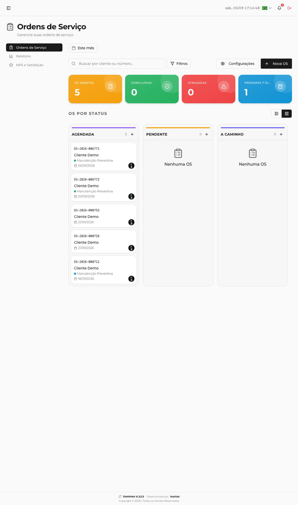
As duas visões
- Kanban: uma coluna por status, cartões arrastáveis. É a visão que abre por padrão.
- Lista: tabela com as colunas OS, Criador, Cliente, Tipo, Data, Status e Ações, com ordenação por coluna e paginação.
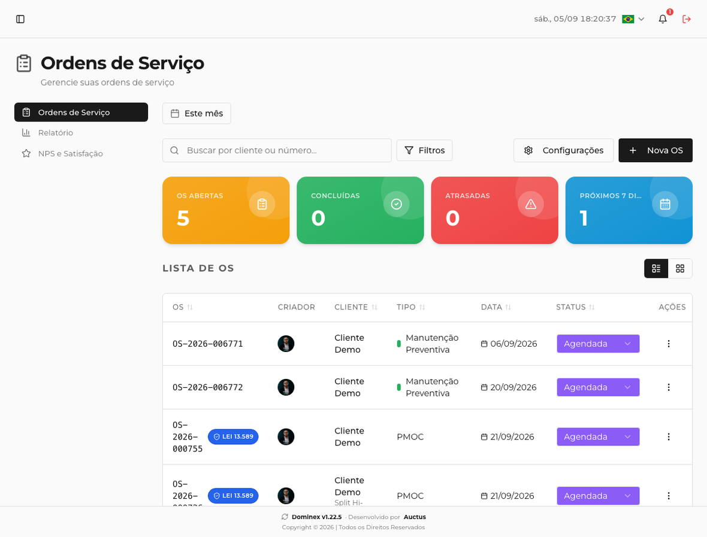
A escolha entre kanban e lista fica gravada naquele aparelho. Se você trocar para lista no computador do escritório, ele continua em lista nas próximas visitas, mas o celular pode continuar em kanban. No computador os botões de alternar ficam ao lado do título da lista; no celular, dentro do painel de filtros, em Visualização.
Os 4 indicadores
| Indicador | O que conta |
|---|---|
| OS Abertas | Tudo que não está concluído nem cancelado. Cor de atenção. |
| Concluídas | OS com status concluída. Cor de sucesso. |
| Atrasadas | OS não concluída nem cancelada cuja data agendada já passou. Cor de alerta vermelho. |
| Próximos 7 dias | OS não concluída nem cancelada agendada de hoje até daqui a sete dias. |
2. Criar OS — Etapa 1: cliente cadastrado × cliente avulso, e o tipo de serviço
O botão Nova OS (no celular, o botão flutuante "OS") abre a janela Nova Ordem de Serviço, dividida em três etapas numeradas: Cliente e Serviço, Equipamentos e Checklists e Agendamento e Detalhes.
A primeira decisão é uma chave centralizada no topo, com dois lados:
| Modo | Quando usar | O que a tela pede |
|---|---|---|
| Cliente cadastrado | Cliente que já está na sua base | Um campo de busca Cliente * que procura por nome e mostra o documento ou e-mail como apoio. Ao lado, um botão de mais (+) para Criar cliente na hora, sem sair do formulário. |
| Cliente avulso | Chamado de quem ainda não é cliente: emergência, indicação, primeira visita | Campos diretos: Nome *, Telefone, CEP, Endereço, Bairro e UF / Cidade. O aviso na tela é: "O cliente será criado automaticamente com os dados abaixo." |
Ainda na etapa 1 fica o campo Tipo de Serviço, também com busca, mostrando a bolinha de cor de cada serviço e a categoria como subtítulo. A primeira opção da lista é Nenhum, que é válida. Ao lado, um botão de mais (+) para criar um tipo de serviço na hora.
Regras que o sistema aplica
- O botão Próximo só libera quando há cliente escolhido (ou, no modo avulso, um nome preenchido).
- Trocar o cliente limpa a seleção de equipamento, porque o equipamento pertence ao cliente.
- Trocar o tipo de serviço muda a lista de checklists disponíveis na etapa 2 e pode fazer o bloco de equipamentos aparecer ou sumir.
- Ao criar o cliente ou o tipo de serviço pelo botão de mais (+), o item recém-criado já vem selecionado.
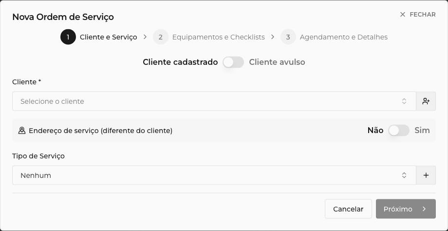
O rascunho que o formulário guarda
Enquanto a janela de criação está aberta, o sistema guarda o que você digitou naquele aparelho. Se o navegador fechar, a internet cair ou você sair sem querer, ao abrir Nova OS de novo aparece um aviso perguntando se você quer retomar o rascunho ou descartar. Retomando, os campos voltam preenchidos, inclusive o cliente e o tipo de serviço escolhidos.
3. Criar OS — Etapa 2: equipamentos e checklists (e quando essa etapa nem aparece)
A etapa 2 se chama Equipamentos e Checklists e tem dois blocos.
Bloco Equipamentos
Aparece quando o tipo de serviço escolhido está marcado como vinculado a equipamento (o padrão de todo serviço novo) ou quando nenhum tipo de serviço foi escolhido. Ele lista os equipamentos daquele cliente com caixinha de seleção, foto, marca, modelo, local e identificador.
- Com mais de um equipamento, aparecem os botões Selecionar todos e Desmarcar todos.
- Ao marcar um equipamento, abre embaixo dele um painel de checklists daquele equipamento. Ali você adiciona um ou mais checklists, cada um vira um selo removível.
- O ícone de olho pré-visualiza o checklist escolhido, para você conferir as perguntas antes de mandar o técnico.
- Botão de mais (+) ao lado cria um equipamento novo para aquele cliente sem fechar a janela.
Bloco Checklists avulsos
Sempre visível. São checklists que valem para a OS inteira, sem estar amarrados a nenhuma máquina. Serve para "roteiro de chegada", "conferência de segurança", "pesquisa de ambiente". Também com pré-visualização pelo ícone de olho.
A lista de checklists oferecida em qualquer um dos dois blocos já vem filtrada: só aparecem os checklists ativos e que estejam habilitados para o tipo de serviço escolhido (ou habilitados para todos os serviços).
4. Criar OS — Etapa 3: técnico e/ou equipe, data, duração, descrição
A terceira etapa se chama Agendamento e Detalhes.
| Campo | Obrigatório | Detalhe |
|---|---|---|
| Responsáveis | Não | Seletor único que aceita técnicos individuais e equipes ao mesmo tempo. As equipes aparecem numa seção própria chamada Equipes. Tem Marcar todos e Desmarcar todos. |
| Data Agendada | Não (vem com a data de hoje, ou o dia clicado na agenda) | Seletor de data do próprio aparelho. |
| Horário | Não (vem com a hora atual, ou o horário clicado na agenda) | Seletor de hora. |
| Duração | Não (padrão 2 horas) | Lista fechada: 15 min, 30 min, 45 min, 1 hora, 1h30, 2 horas, 3 horas, 4 horas, 5 horas, 6 horas e 8 horas. É o tamanho do bloco na agenda. |
| Descrição do Serviço | Não | O que precisa ser feito. É o texto que o técnico lê primeiro no celular. |
| Observações | Não | Anotações extras. |
O botão final é Criar OS. Com recorrência ligada, ele muda para Criar OS Recorrentes. A confirmação é "Ordem de serviço criada com sucesso!". Se algo der errado, aparece "Erro ao criar OS" com o detalhe do problema.
5. Recorrência da OS (diária, semanal, quinzenal, mensal, anual, personalizada)
Ainda na etapa 3, há um bloco com a chave Recorrência. Ligando, aparecem três campos: Frequência, A cada e Até. Para semanal e personalizado, aparece também Repetir em: com os sete dias da semana em botõezinhos.
| Frequência | Como o sistema gera as datas |
|---|---|
| Diária | A cada N dias, a partir da data agendada, até a data limite. |
| Semanal | A cada N semanas. |
| Quinzenal | A cada 2 semanas vezes N. |
| Mensal | A cada N meses. |
| Personalizado | Com dias da semana marcados, gera uma OS em cada dia marcado, semana após semana, até a data limite. |
1) O campo Até é o que faz a série existir. Sem data limite preenchida, o sistema cria apenas uma OS, na data agendada, sem nenhum aviso de que a recorrência foi ignorada. Sempre preencha o "Até".
2) A opção Anual aparece na lista de frequências, mas hoje ela não multiplica a OS: o resultado é uma única OS, na data agendada. O mesmo acontece com Personalizado quando nenhum dia da semana está marcado. Para repetição anual, o caminho hoje é criar as OS manualmente ou usar um contrato recorrente.
Ao concluir, a mensagem mostra quantas OS foram criadas: "N OS(s) criada(s) com recorrência!". Todas as OS da série ficam ligadas entre si, e é isso que permite editar ou excluir a série inteira depois.
Editar e excluir uma OS que faz parte de uma série
- Ao editar uma OS de recorrência, aparece a pergunta Editar recorrência: "Esta OS faz parte de uma recorrência. Deseja aplicar as alterações apenas nesta OS ou em todas da recorrência?", com os botões Apenas esta e Todas da recorrência. Escolhendo todas, o sistema aplica nas ocorrências futuras (de hoje em diante) e mostra "N OS(s) da recorrência atualizadas!". Data e horário nunca são propagados em massa, para não bagunçar o calendário.
- Ao excluir, a pergunta é "Esta OS faz parte de uma recorrência. O que deseja fazer?", com Excluir apenas esta e Excluir todas da recorrência. A opção de excluir todas remove somente as ocorrências de hoje em diante: o histórico passado fica.
OS que veio de contrato
Se a OS foi gerada por um contrato e você muda a data, aparece Alterar data da recorrência? com o texto "Esta OS pertence a um contrato recorrente. Deseja ajustar apenas esta data ou todas as ocorrências futuras?". Escolhendo Esta e futuras, o sistema desloca todas as visitas seguintes daquele contrato pelo mesmo número de dias e avisa "N ocorrência(s) futura(s) ajustada(s)".
6. Endereço de serviço diferente do endereço do cliente
Na etapa 1 existe um bloco com a chave Endereço de serviço (diferente do cliente). A explicação na tela é direta: "O atendimento será feito neste endereço (filial, obra, evento). Quando vazio, usa o endereço do cliente."
Ligando a chave, aparecem os campos CEP, Endereço, Número, Bairro, UF / Cidade. O CEP preenche o resto sozinho.
Regras que o sistema aplica
- Ao salvar, o sistema tenta localizar as coordenadas desse endereço para o mapa. Se não conseguir, salva o endereço em texto assim mesmo e o mapa usa o endereço escrito.
- Esse endereço é a prioridade na navegação do técnico: os botões de Waze e Google Maps no celular dele apontam para o endereço do serviço, não para o do cliente.
- No celular do técnico, o endereço aparece destacado com a nota "O atendimento é neste local, diferente do endereço cadastrado do cliente."
- Desligar a chave apaga o endereço de serviço da OS e ela volta a usar o do cliente.
- Ao editar uma OS que já tem endereço de serviço, a chave já vem ligada e os campos preenchidos.
7. O toggle "gerar Pesquisa de Satisfação ao finalizar"
No fim da etapa 3 existe um bloco com uma estrela e a pergunta Gerar Pesquisa de Satisfação ao finalizar?, com uma chave Não / Sim.
- Em OS nova, a chave já vem no padrão da empresa, definido em Configurações de NPS pela linha "Gerar pesquisa ao finalizar OS (padrão)". A explicação lá é: "Padrão aplicado a novas OS. Pode ser ajustado caso a caso na própria OS."
- Em OS existente, a chave reflete o que foi escolhido naquela OS. Se nunca foi escolhido nada, ela mostra o padrão da empresa.
- Quando a OS é finalizada, o cliente recebe, no mesmo link público da OS, o convite para avaliar de 0 a 10 e por estrelas nos critérios que a empresa configurou.
8. Mover status arrastando, e o "+" no topo da coluna que já nasce com aquele status
No kanban, cada coluna é um status. Para mudar o status de uma OS, arraste o cartão de uma coluna para outra. A mudança é imediata, sem confirmação, e aparece "OS atualizada com sucesso!".
Passando o mouse sobre um cartão, aparecem dois botões no canto superior direito: o lápis, que abre a edição (laranja no hover), e a lixeira, que abre a exclusão (vermelha no hover). Cada botão só aparece para quem tem a permissão correspondente. No canto inferior direito do cartão aparece o avatar de quem criou a OS, com o nome no tooltip.
Clicando no cartão, abre o resumo da OS. Nele estão o cliente, o equipamento, o check-in e check-out, as fotos, os detalhes do serviço, os valores e a conformidade PMOC quando houver, mais uma linha de botões redondos: Retomar, Pausar, Finalizar, Reabrir, Editar, Excluir e um botão para copiar o link, além do botão grande embaixo que muda de nome conforme o estado: Preencher OS em OS aberta, Relatório de Serviço em OS concluída.
O "+" no cabeçalho da coluna
Cada coluna do kanban tem, ao lado da contagem, um botão de mais (+). Ele abre a janela Nova Ordem de Serviço já com o status daquela coluna. É o atalho para quem recebe um chamado que já entra "agendado" ou já entra "em andamento", sem ter que criar em pendente e arrastar depois.
9. Configurar Status: criar status próprio, cor e ordem
O botão Configurações no topo da tela (no celular, dentro do painel de filtros, em Gerenciar status de OS) abre a janela Configurações de OS. É ali que vive a lista de status da sua empresa.
Passo a passo
- No bloco Novo status, digite o nome no campo Nome do status.
- Escolha a cor no quadradinho ao lado.
- Clique em Criar. A confirmação é "Status criado!".
- Para renomear ou trocar a cor, use o menu de três pontos da linha e escolha Editar. Salvando, aparece "Status atualizado!".
- Para mudar a ordem das colunas do kanban, arraste a linha do status pela alça à esquerda. A confirmação é "Ordem dos status atualizada!".
- Para remover, use Excluir no mesmo menu. O aviso é "Tem certeza? OS com este status podem ser afetadas."
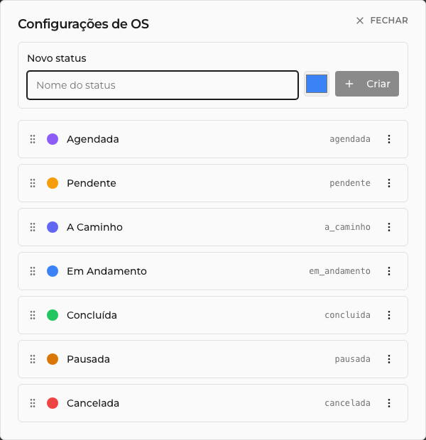
Regras que o sistema aplica
- Cada status tem um nome (o que todo mundo vê) e uma chave interna (mostrada em cinza ao lado, em letra de máquina). A chave é gerada a partir do nome, sem acento e com underline no lugar de espaço.
- A ordem dos status é a ordem das colunas do kanban e a ordem do filtro de status.
- Os status vêm por empresa. O que você cria aqui não afeta ninguém mais.
- Enquanto a empresa não tiver nenhum status próprio, o sistema usa a lista de reserva: Agendada, Pendente, A Caminho, Em Andamento, Pausada, Concluída e Cancelada.
10. Filtros, busca e por que a busca ignora o filtro de período
A tela tem três controles de recorte, e a ordem em que eles conversam é a principal fonte de dúvida do suporte:
| Controle | Onde fica | O que faz |
|---|---|---|
| Período | Barra no topo (no celular, dentro de Filtros) | Recorta por data agendada. Começa em "este mês". |
| Status | Botão Filtros | Marca um ou mais status. Nenhum marcado significa todos. |
| Busca | Campo com lupa | "Buscar por cliente ou número..." no computador, "Buscar OS..." no celular. |
Por que a busca ignora período e status
Assim que você digita qualquer coisa na busca, aparece embaixo do campo a frase: "Mostrando resultados de todas as OS (filtros pausados)". Isso é de propósito.
A busca procura por: nome do cliente, código completo da OS (por exemplo MP-2026-000123), só o número, nome do tipo de serviço, título da tarefa e nome do equipamento. Ela tolera acento e diferença de maiúscula.
11. Abrir a OS no app do técnico sendo gestor, e compartilhar o link com o cliente
Existe um único endereço de OS que serve para três públicos diferentes, e o que muda é quem está olhando:
| Quem abre | O que vê |
|---|---|
| Técnico ou gestor logado, OS em aberto | A tela de execução: botão de A Caminho, Fazer Check-in, os checklists, as fotos, as assinaturas e o botão de finalizar. |
| Técnico ou gestor logado, OS concluída | O relatório completo do serviço, com botões de baixar PDF, imprimir e copiar link. |
| Cliente, sem login | O mesmo relatório, em modo somente leitura, mais o acompanhamento em tempo real quando o técnico está a caminho, mais a pesquisa de satisfação quando a OS foi concluída e a pesquisa está habilitada. |
Abrir como técnico sendo gestor
Na lista e no kanban, o menu de ações de cada OS tem Abrir como técnico, que abre a tela de execução em outra aba. É como o gestor confere o preenchimento, corrige uma foto ou finaliza uma OS que o técnico esqueceu de fechar.
Compartilhar com o cliente
Os caminhos que geram o link certo, no formato amigável dominex.app/os-tecnico/nome-do-cliente-servico-CODIGO?modo=cliente, são:
- Dentro da própria OS aberta pelo técnico ou gestor: Copiar link do cliente no menu de ações.
- No relatório da OS concluída: o botão de copiar link.
- Na Agenda, no resumo da OS: Copiar link de acompanhamento do cliente.
O link não tem senha e não expira: quem tiver o endereço vê aquela OS. Ele mostra só aquela OS, nunca o resto da sua base.
Aviso extra em OS de contrato PMOC
Quando a OS pertence a um contrato PMOC, a janela de edição mostra uma faixa de identificação no topo e, no campo de descrição, um aviso amarelo: "Esta OS pertence a um contrato PMOC. Os primeiros 200 caracteres deste texto podem aparecer no portal público da unidade, escreva pensando em quem está do outro lado (cliente, fiscal sanitário)." Isso não é erro. É um lembrete de que aquele texto é público.
12. Aba Relatório: leitura do dashboard de OS
A aba Relatório transforma as OS em números. Ela respeita o mesmo recorte de período da tela.
Os quatro indicadores
- Total de OS: quantas OS entraram no período.
- Taxa de conclusão: percentual de concluídas, com a linha de apoio "N concluídas".
- Tempo médio: quanto tempo, em média, uma OS levou.
- Faturamento: soma dos valores das OS do período.
Os gráficos
- OS por Status: rosca com a cor de cada status. Serve para ver gargalo: muita OS parada em "A Caminho" é rota mal planejada, muita em "Pausada" é serviço que não fecha.
- OS por Tipo de Serviço: barras. Mostra o que a empresa realmente vende, que às vezes não é o que ela acha que vende.
- Volume de OS ao Longo do Tempo: linha por mês. Revela sazonalidade (verão, período de chuva, fim de ano).
- Faturamento ao Longo do Tempo: linha por mês, em reais.
- OS por Dia da Semana: barras. Ajuda a decidir escala e plantão.
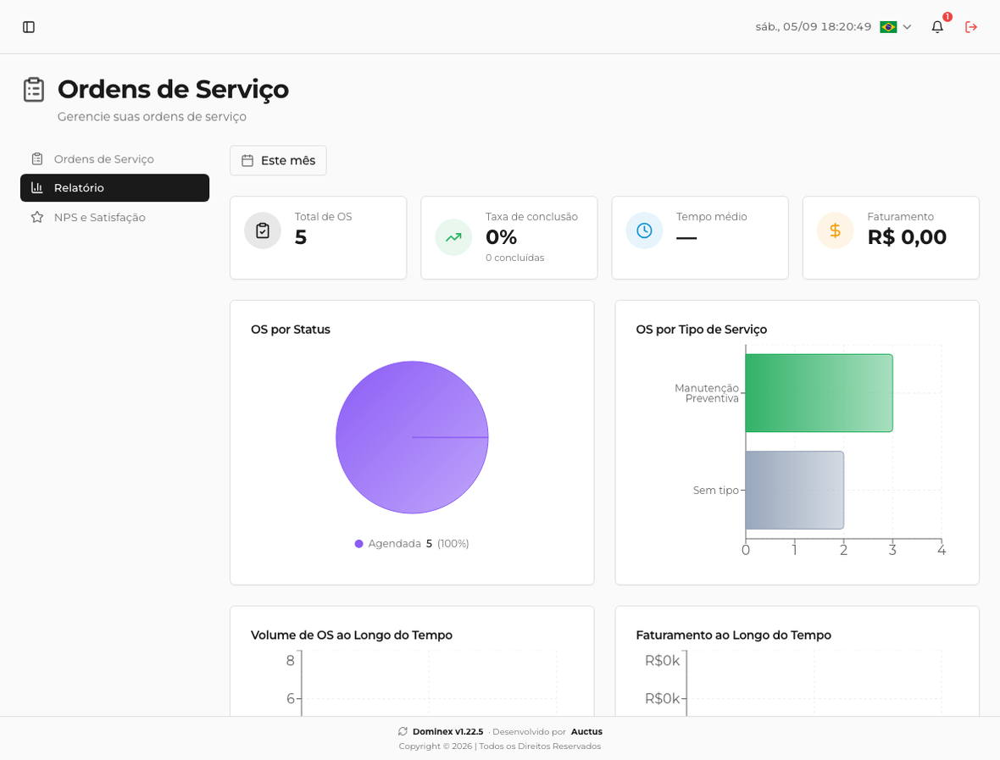
Os dois rankings
- Top 10 Clientes: colunas Cliente, OS e Valor Total.
- Top Técnicos (Concluídas): colunas Técnico, OS e Tempo Médio.
Onde não houver dado no período, o gráfico mostra "Sem dados". Isso quase sempre significa período muito estreito, não falta de informação.
13. Aba NPS: promotores, neutros, detratores e o comentário aberto do detrator
A aba NPS e Satisfação reúne o que os clientes responderam nas pesquisas geradas ao finalizar OS.
Os quatro indicadores
- NPS Score: o índice, calculado como percentual de promotores menos percentual de detratores.
- Média Geral: média das estrelas dos critérios.
- Respostas: quantas pesquisas foram respondidas.
- Taxa de Resposta: quantas responderam sobre quantas foram enviadas, com o rótulo "de retorno".
As três faixas
| Faixa | Nota | O que significa na prática |
|---|---|---|
| Promotores | 9 a 10 | Cliente satisfeito, que indica você. É de onde vem indicação e avaliação no Google. |
| Neutros | 7 a 8 | Cliente atendido, sem encantamento. Não reclama, mas troca de fornecedor por preço. |
| Detratores | 0 a 6 | Cliente insatisfeito. É o que exige ação hoje. |
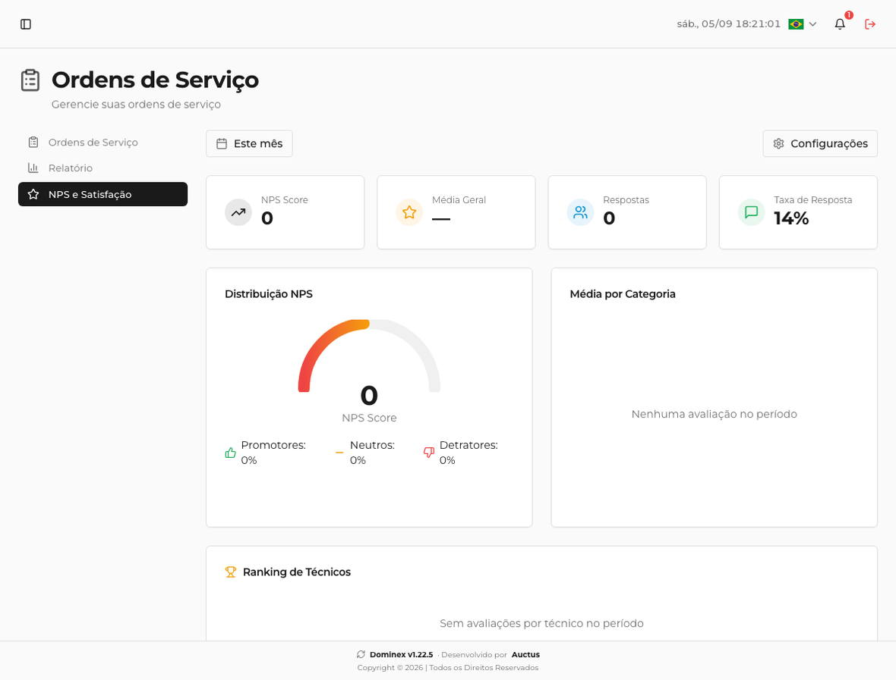
Detratores em aberto
Existe um bloco chamado Detratores em Aberto, com o selo Atenção. É a fila de clientes que deram nota baixa e ainda não foram tratados. Junto vem o Feed de Feedbacks, com o comentário aberto que o cliente escreveu, filtrável por classificação e por técnico. Quando não há nada no período, as mensagens são "Nenhum detrator em aberto no período." e "Nenhum feedback no período".
Há ainda o Ranking de Técnicos, com a nota média por técnico e o número de respostas.
Configurações da pesquisa
O botão Configurações dentro da aba abre Configurações de NPS, onde você define: o texto da pergunta de 0 a 10, se a avaliação por estrelas é Opcional ou Obrigatória, os critérios avaliados por estrelas (você cria, renomeia e reordena), o padrão de gerar pesquisa ao finalizar OS, e o convite para avaliar no Google. Se o usuário não for da gestão, aparece o aviso "Somente a gestão pode alterar estas configurações."
Suporte: problemas comuns
| O cliente diz | Causa provável | Como resolver |
|---|---|---|
| "Sumiram minhas OS" | Filtro de período em "este mês" | O topo da tela recorta por data agendada e começa em "este mês". Mude o período. Se for procurar uma OS específica, use a busca: ela ignora período e status de propósito, e a tela mostra "Mostrando resultados de todas as OS (filtros pausados)". |
| "Criei a recorrência anual e só veio uma OS" | Frequência Anual, que hoje não multiplica | Confirme com o cliente que a frequência escolhida foi Anual. Hoje ela não gera as ocorrências seguintes. O caminho seguro é montar as visitas por um contrato recorrente ou lançar as OS manualmente. Registre o caso no suporte. |
| "Liguei recorrência semanal e veio uma OS só" | Campo Até vazio | Sem data limite, a série não é gerada e nenhum aviso aparece. Peça para editar a OS, ligar a recorrência de novo com o "Até" preenchido, ou criar novamente. |
| "Perdi tudo que eu tinha digitado na OS" | Fechou a janela de edição sem salvar | O rascunho automático só existe na criação de OS nova. Na edição, fechar sem salvar descarta. Ao criar, ao reabrir Nova OS o sistema pergunta se quer retomar o rascunho. |
| "Não acho o botão de exigir assinatura na OS" | Esse botão não existe na criação de OS | Explique com clareza: não existe uma chave de "exigir assinatura" na tela de criar ou editar OS. A exigência de assinatura do técnico é ligada automaticamente nas OS geradas por contrato. Para OS avulsa, a assinatura é colhida quando o checklist tem uma pergunta do tipo Assinatura. |
| "Concluí a OS e o estoque não baixou" | Comportamento correto do sistema | Concluir OS não mexe em saldo de estoque. A baixa acontece na conversão de um orçamento em OS (os materiais do orçamento saem do estoque) e nos ajustes e inventários da tela de Estoque. |
| "A coluna do kanban sumiu" | O status foi excluído em Configurações de OS | Recrie o status com a mesma chave, ou mova as OS afetadas para um status existente pela lista. |
| "Não consigo criar OS, o botão não aparece" | Falta a permissão Criar OS | Sem essa permissão, o botão Nova OS, o botão flutuante e o mais (+) das colunas ficam ocultos. Ajuste em Configurações → Usuários e Permissões. |
| "Mandei o link para o cliente e deu página não encontrada" | Link copiado pelo caminho errado | Use o link do relatório da OS, o Copiar link do cliente de dentro da OS aberta, ou o Copiar link de acompanhamento do cliente do resumo na Agenda. O endereço certo tem o formato dominex.app/os-tecnico/...?modo=cliente. |
| "O cliente não recebeu a pesquisa de satisfação" | Pesquisa desligada na OS ou no padrão da empresa | A pesquisa não é enviada por e-mail: ela aparece no mesmo link público da OS depois de concluída. Confira a chave Gerar Pesquisa de Satisfação ao finalizar? na OS e o padrão em Configurações de NPS. |
| "Aparece um aviso amarelo estranho ao editar a OS" | OS de contrato PMOC | Não é erro. É o lembrete de que os primeiros 200 caracteres da descrição podem aparecer no portal público daquela unidade. Escreva pensando em quem vai ler do outro lado. |
| "Excluí a OS e sumiram as fotos e o checklist" | Comportamento esperado | Excluir OS remove junto as respostas de checklist, as fotos, a avaliação do cliente e as movimentações de estoque ligadas àquela OS. Não tem como desfazer. Para tirar da operação sem perder histórico, use o status Cancelada em vez de excluir. |
Perguntas frequentes
- Dá para exigir que o cliente assine antes de finalizar a OS?
- Não existe uma chave de "exigir assinatura" na criação da OS. A exigência de assinatura do técnico é ligada sozinha nas OS geradas por contrato. Para pedir a assinatura do cliente numa OS avulsa, coloque uma pergunta do tipo Assinatura no checklist e marque como campo obrigatório: aí o técnico não fecha a OS sem colher.
- Concluir a OS dá baixa nos materiais usados?
- Não. Concluir OS não mexe em estoque. A baixa acontece quando um orçamento com materiais é convertido em OS, e nos lançamentos manuais e inventários da tela de Estoque.
- Posso colocar um técnico e uma equipe na mesma OS?
- Pode. O campo Responsáveis aceita técnicos individuais e equipes ao mesmo tempo, no mesmo seletor.
- Como registro um serviço que já foi feito ontem?
- Crie a OS normalmente com a data de ontem e depois mude o status para concluída, pelo kanban ou pelo resumo da OS. O sistema não deixa criar OS já nascendo concluída pelo mais (+) da coluna, e isso é proposital.
- Qual a diferença entre cancelar e excluir uma OS?
- Cancelar é um status: a OS continua existindo, sai dos indicadores de aberto e o histórico fica. Excluir apaga a OS e junto dela as respostas de checklist, as fotos e a avaliação. Para quase todo caso, cancele.
- Mudei uma OS de uma série recorrente e ela perguntou se era para aplicar em todas. O que acontece com as antigas?
- Escolhendo "Todas da recorrência", o sistema aplica nas ocorrências de hoje em diante. As datas passadas ficam como estão, e data e horário nunca são propagados em massa.
- O link que mando para o cliente tem senha?
- Não. É um endereço único e difícil de adivinhar, sem login e sem prazo de validade. Ele mostra apenas aquela OS. Se você não quer que circule, não mande.
- Posso criar status como "Aguardando peça" ou "Aguardando cliente"?
- Pode, e é um dos usos mais úteis da tela. Em Configurações crie o status, dê uma cor bem distinta e arraste para a posição certa na sequência. Ele vira coluna no kanban e opção no filtro na hora.
Agenda, Equipes e Mapa ao Vivo
Aqui a operação vira rota: quem vai, quando vai e onde está agora. A Agenda organiza a semana da equipe, as Equipes agrupam os técnicos que trabalham juntos e o Mapa mostra onde cada um está enquanto o serviço acontece.
1. Tela Agenda: visão Dia, Semana e Mês (e por que o celular abre em Dia)
A tela se chama Agenda. No computador o subtítulo é "Visualize e gerencie os agendamentos de ordens de serviço"; no celular, "Gerencie suas tarefas e compromissos". Ela mostra Ordens de Serviço, Tarefas internas e, para quem tem a permissão de ver contas na agenda, também os avisos de contas a pagar e a receber.
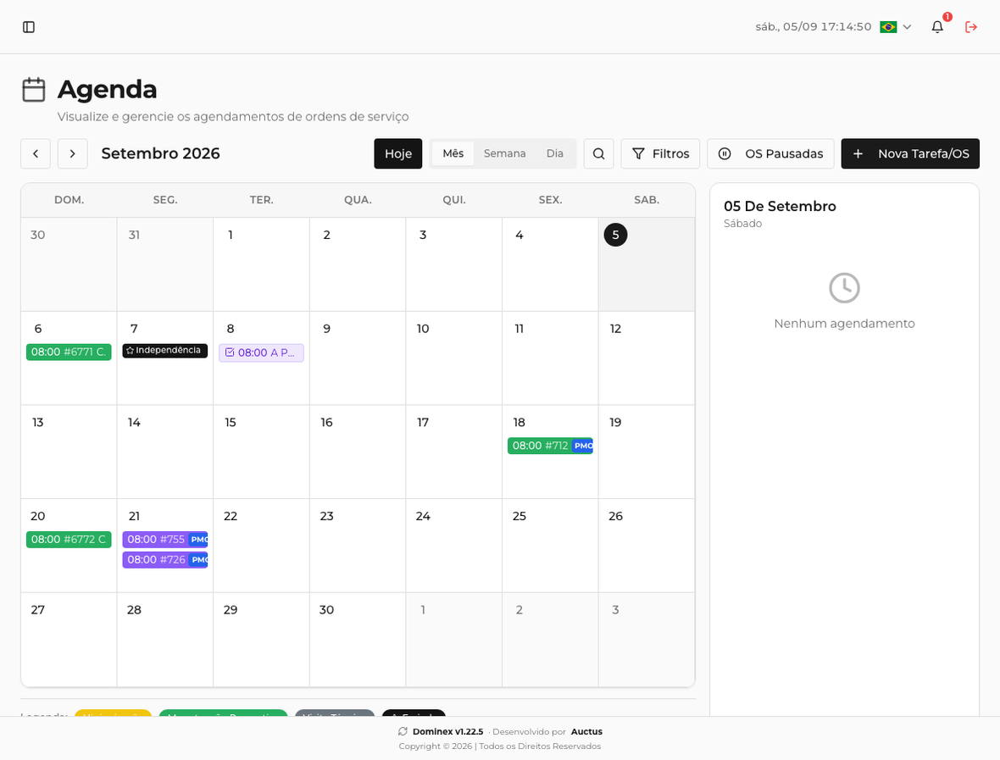
As três visões
| Visão | O que mostra | Para que serve |
|---|---|---|
| Dia | As horas do dia, uma faixa por horário, com cada compromisso ocupando o espaço proporcional à duração dele. | Executar o dia. É a visão do despachante e a que faz sentido na tela pequena. |
| Semana | Sete colunas, uma por dia, com os horários na lateral. | Distribuir carga e ver buraco na agenda. |
| Mês | Grade do mês, com os compromissos resumidos em cada dia. | Planejamento e visão de volume. |
No celular, a visão que abre é Dia. O motivo é prático: numa tela de celular, uma semana inteira com sete colunas e horários vira um amontoado ilegível. A visão de Dia mostra um compromisso por vez, com o horário, o cliente, o endereço e o técnico, no tamanho em que dá para ler com o celular na mão.
Navegar
- Setas de anterior e próximo movem um dia, uma semana ou um mês, conforme a visão em que você está.
- O botão Hoje volta para a data de hoje.
- No celular, nas visões Dia e Semana, você pode deslizar o dedo para os lados: para a esquerda avança, para a direita volta.
- A lupa abre a busca Buscar OS / Tarefa, que procura por número da OS, cliente, descrição e técnico. Ao escolher um resultado, o calendário navega até a data daquele compromisso e abre o resumo dele.
Filtros
O botão Filtros traz Técnico, Cliente e Status, todos com seleção múltipla. Sem nada marcado, mostra tudo.
2. Criar pelo "+": Nova OS × Nova Tarefa — a diferença que mais confunde
Ao clicar no botão de criar (no celular, o botão flutuante Tarefa/OS), o sistema não abre um formulário direto. Ele abre primeiro a pergunta O que deseja criar?, com dois cartões:
| Escolha | Descrição na tela | O que acontece |
|---|---|---|
| Ordem de Serviço | "Atendimento técnico com cliente e equipamento" | Abre o formulário de três etapas da OS, já com a data e o horário do lugar onde você clicou no calendário. |
| Tarefa | "Atividade interna, reunião ou compromisso" | Abre a janela Nova Tarefa, um formulário bem mais curto. |
Campos da Nova Tarefa
| Campo | Obrigatório | Detalhe |
|---|---|---|
| Título da Tarefa * | Sim | Sugestão da tela: "Ex: Comprar materiais, Reunião com cliente..." |
| Cliente (opcional) | Não | Dá para amarrar a tarefa a um cliente, mas a primeira opção é Nenhum. |
| Tipo de Tarefa | Não | Vem do catálogo criado em Serviços → aba Tipos de Tarefas. |
| Responsáveis | Não | Mesmo seletor da OS: aceita pessoas e equipes. |
| Data, Horário, Duração (min) | Não | Definem o bloco no calendário. |
| Descrição | Não | "Detalhes da tarefa..." |
| Recorrência | Não | Mesmas frequências da OS. Ao ligar, o aviso é: "Ativar a recorrência transforma esta tarefa numa série, criando as próximas ocorrências." Ao alterar uma série existente: "Alterar a recorrência atualiza esta tarefa e as próximas da série. As anteriores e as já concluídas permanecem como estão." |
Você também pode criar clicando direto num horário vazio (no computador, duplo clique num dia do mês). O sistema abre a mesma pergunta, já com a data e a hora do ponto clicado.
3. Reagendar arrastando no desktop e com toque-e-segure no celular
No computador, arraste o cartão do compromisso para o novo dia ou horário. No celular, toque e segure no cartão até ele entrar em modo de movimento; aí aparece a instrução Toque no horário para mover a OS e um botão Cancelar. Toque no novo horário para concluir.
Regras que o sistema aplica
- Arrastar muda a data e o horário na hora, sem confirmação, e aparece "OS atualizada com sucesso!". Isso é conveniente e perigoso na mesma medida: um arraste errado move o compromisso de verdade.
- Arrastar não muda o status da OS. Ela continua exatamente no estado em que estava.
- Se a OS pertencer a um contrato, a mudança de data abre a pergunta Alterar data da recorrência?, com as opções Apenas esta e Esta e futuras. Escolhendo "Esta e futuras", todas as visitas seguintes daquele contrato deslocam pelo mesmo número de dias.
- Se a OS pertencer a uma série recorrente criada manualmente, a edição abre a pergunta Editar recorrência, com Apenas esta e Todas da recorrência.
4. Legenda de cores por tipo de serviço e a estrela de feriado
Cada compromisso no calendário aparece na cor do tipo de serviço. É por isso que vale a pena escolher cores bem diferentes ao cadastrar os serviços: de longe, a agenda passa a se ler como um mapa, sem precisar abrir cartão nenhum.
O botão Legenda abre a lista Legenda — Tipos de Serviço, com a cor e o nome de cada serviço, mais a entrada Feriado.
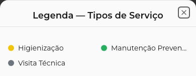
Feriados
- Os feriados aparecem marcados no calendário, com uma estrela indicando o dia.
- A lista de feriados considera os nacionais e também os municipais e estaduais, com base na cidade e no estado cadastrados nos dados da empresa. Se o endereço da empresa estiver incompleto, os feriados locais não aparecem.
- Dá para desligar a exibição de feriados em Configurações → Usabilidade.
Outros sinais no cartão
- OS de contrato PMOC ganha o selo PMOC.
- OS pausada aparece em âmbar, com o rótulo Pausada. Se ela foi marcada como finalizada parcialmente, o rótulo vira Parcialmente Concluída.
- Tarefa aparece com o selo Tarefa.
5. Ordens Pausadas: o diálogo de retomada rápida
No topo da Agenda existe um botão com ícone de pausa e o rótulo OS Pausadas. Quando há alguma pausada, ele fica âmbar e mostra um contador. Clicando, abre a janela OS Pausadas com a descrição: "Todas as ordens de serviço pausadas, independente da data."
Essa janela existe para resolver um problema real: a OS que o técnico pausou porque faltou peça, porque o cliente não estava, porque começou a chover. Ela ficou parada na data antiga e ninguém mais olhou para ela.
O que a janela mostra
- Uma busca própria: "Buscar por nº OS, cliente ou endereço…".
- Por OS: o cliente, o endereço, o rótulo Agendada para: com a data original (ou Sem data agendada) e há quanto tempo ela está parada, no formato Pausada há ....
- Dois botões por OS: Ver detalhes, que abre o resumo, e Retomar agora.
Clicando em Retomar agora, a OS volta para o status Em andamento e aparece o aviso "OS retomada" com o detalhe "OS #N voltou para a agenda."
Quando não há nenhuma OS pausada, a janela mostra: "Nenhuma OS pausada no momento." e "Quando você pausar uma OS, ela aparece aqui pra não se perder na agenda."
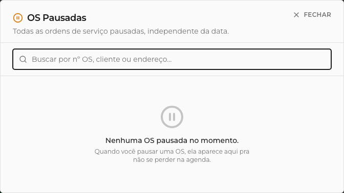
6. A OS retomada aparecendo em duas datas (badge "Retomada")
Uma OS pausada há duas semanas e retomada hoje precisa aparecer hoje, senão o técnico não a encontra. Mas se ela simplesmente mudasse de data, você perderia a informação de quando ela foi originalmente agendada. A Dominex resolve isso mostrando a OS nas duas datas.
| Onde ela aparece | Como aparece |
|---|---|
| Na data agendada original | Normal, sem marca extra. O histórico fica preservado. |
| Do dia da retomada até hoje | Com a borda esquerda âmbar, o ícone de play e o selo Retomada. O texto de apoio ao passar o mouse é: "OS retomada, agendada originalmente para outra data". |
Regras que o sistema aplica
- Só entram nessa repetição as OS com status ativo: em andamento, a caminho ou pendente.
- OS concluída ou cancelada não se repete. Serviço fechado não polui o dia de hoje.
- A repetição só acontece quando a data original é anterior à retomada. Retomar no mesmo dia não duplica nada.
- As duas aparições são a mesma OS. Abrir por qualquer uma delas leva ao mesmo lugar, e finalizar por uma finaliza a OS toda.
7. Equipes: onde ficam de verdade (Funcionários → aba Equipes), criar time com cor, ícone, foto e membros
As equipes não têm tela própria no menu. Elas vivem em Funcionários, na aba Equipes. Quem tiver salvo o endereço antigo /equipes nos favoritos é levado para /funcionarios.
/funcionarios (ou o atalho antigo /equipes) é redirecionado e vê a janela de contratação do módulo. Como a aba Equipes é a única porta de entrada do cadastro de equipes hoje, isso quer dizer: empresa sem o módulo RH não monta equipe.O que continua funcionando sem o módulo: as equipes que já existem seguem aparecendo normalmente no seletor Responsáveis da OS e da Tarefa, e continuam podendo ser escaladas. O que não dá é criar uma nova, renomear, trocar membro ou excluir.
Criar uma equipe
- Vá em Funcionários e abra a aba Equipes.
- Clique em Nova Equipe. Abre a janela com o mesmo nome.
- Preencha Nome *. É o único campo obrigatório: sem ele o botão de criar não responde.
- Descrição é opcional e aparece embaixo do nome no cartão da equipe.
- Em Visual da Equipe você define como ela é reconhecida: uma cor, um ícone escolhido numa grade (pessoas, chave inglesa, raio, escudo, caminhão, martelo, capacete, engrenagem, chama, gota, vento, termômetro, cabo, tomada, lâmpada, manômetro) e, se quiser, uma foto pelo botão Foto. Com foto, ela substitui o ícone no cartão. O botão Remover tira a foto.
- Em Membros, marque os técnicos. É uma lista com caixinhas e avatar. Quando não há usuário disponível, a mensagem é "Nenhum usuário disponível".
- Clique em Criar Equipe. Ao editar, o botão é Salvar.
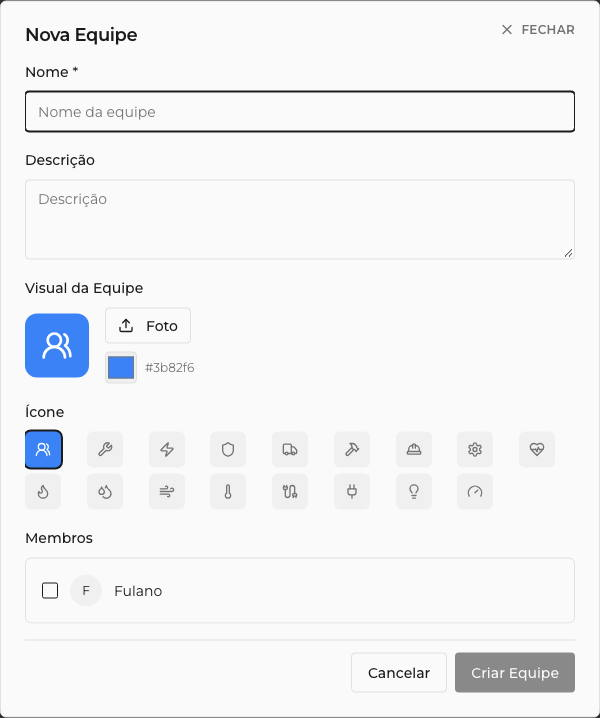
A lista de equipes
Cada equipe vira um cartão com o ícone (ou a foto) na cor escolhida, o nome, a descrição, o selo Ativa ou Inativa e os avatares dos primeiros cinco membros, com um contador para o resto. Sem membro nenhum, aparece Sem membros. Cada cartão tem Editar e a lixeira, que pergunta "Tem certeza que deseja excluir esta equipe?".
No topo há uma busca por nome. Sem resultado: "Nenhuma equipe encontrada" e "Tente outro termo de busca.". Sem equipe nenhuma: "Nenhuma equipe cadastrada" e "Cadastre sua primeira equipe para organizar os técnicos."
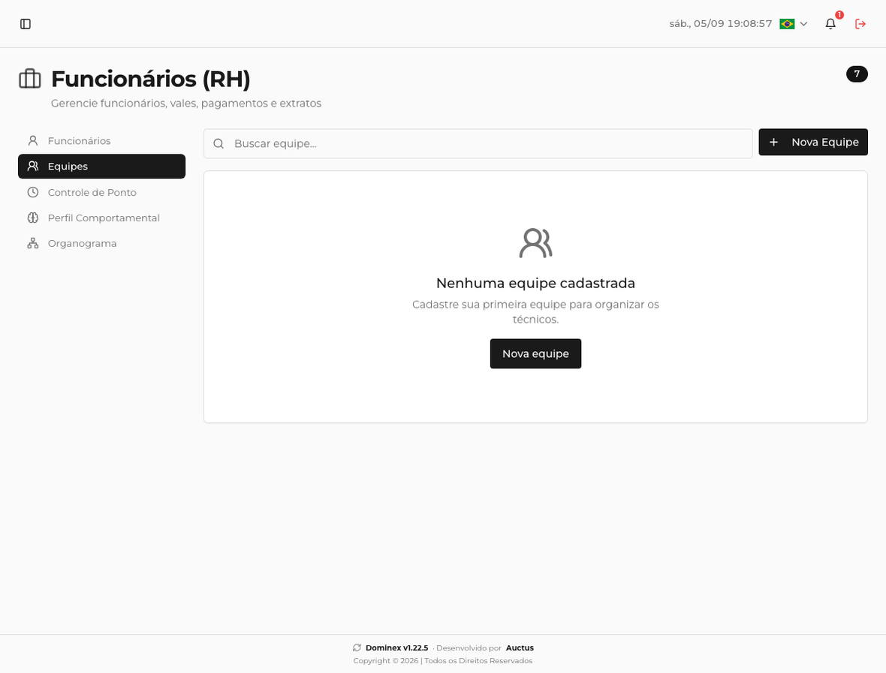
8. Escalar equipe inteira numa OS em vez de técnico individual
No campo Responsáveis da OS e da Tarefa, as equipes aparecem numa seção própria, chamada Equipes, separada da lista de pessoas. Você pode marcar:
- Só técnicos: um ou vários nomes.
- Só equipes: a equipe inteira responde pela OS.
- Os dois juntos: por exemplo a equipe de instalação mais um técnico específico que vai acompanhar.
O que muda ao escalar a equipe
- A OS passa a aparecer na agenda de todos os membros daquela equipe, mesmo os que são usuários com papel de técnico e só enxergam a própria agenda.
- Qualquer membro da equipe consegue abrir a OS, fazer o check-in, preencher o checklist e finalizar.
- Se um membro sair da equipe depois, ele deixa de enxergar as OS futuras escaladas para aquela equipe.
- Escalar equipe não distribui o serviço entre os membros: é a mesma OS, com vários responsáveis possíveis.
9. Mapa e Rastreamento — aba Mapa: as cores dos marcadores e o que cada uma significa
A tela se chama Mapa e Rastreamento, com o subtítulo "Posição em tempo real e histórico de deslocamentos". Ela tem duas abas: Mapa ao Vivo e Histórico.
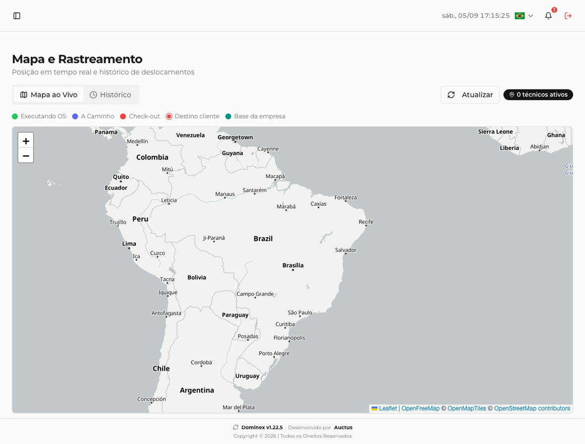
As cores dos marcadores
| Cor | Legenda | O que significa |
|---|---|---|
| Verde | Executando OS | O técnico fez o check-in e está no local, com a OS em andamento. |
| Azul / índigo | A Caminho | O técnico marcou que saiu para o atendimento. É a cor que aparece enquanto ele se desloca. |
| Vermelho | Check-out | O último registro daquele técnico foi o encerramento do atendimento. |
| Marcador de destino | Destino cliente | O ponto onde o atendimento vai acontecer. |
| Marcador de base | Base da empresa | O endereço cadastrado da sua empresa. |
Passando o mouse no marcador, aparece o nome do técnico, o estado atual e há quanto tempo foi a última atualização, no formato Há N min (ou "menos de 1"). Clicando, o balão maior mostra o mesmo, mais OS vinculada quando o ponto está ligado a uma OS, e a previsão de chegada no formato Chegada em ~N min com a distância em quilômetros, quando o técnico está a caminho.
O botão Atualizar força uma nova leitura. Fora isso, o mapa se atualiza sozinho conforme os aparelhos dos técnicos enviam posição.
1) ele autorizou o acesso à localização no navegador do celular;
2) ele está com uma OS em A Caminho ou Em Andamento (a posição também continua sendo registrada com a OS pausada);
3) ele está com a tela da OS aberta e com internet.
Se o técnico fechou o navegador, deixou o celular no bolso com a tela desligada ou negou a permissão de localização, ele não some do sistema, ele apenas para de mandar posição nova. O marcador dele fica no último ponto conhecido e o horário de atualização vai envelhecendo.
O mapa mostra as posições das últimas 2 horas. Um técnico que não registra nada há mais tempo que isso deixa de aparecer no ao vivo, mas continua no Histórico.
10. Aba Histórico: eventos de localização por técnico e por data
A aba Histórico mostra os deslocamentos registrados, com dois filtros: Técnico (com a opção Todos os técnicos) e Data, que começa em hoje.
/rastreamento redireciona para o mapa.
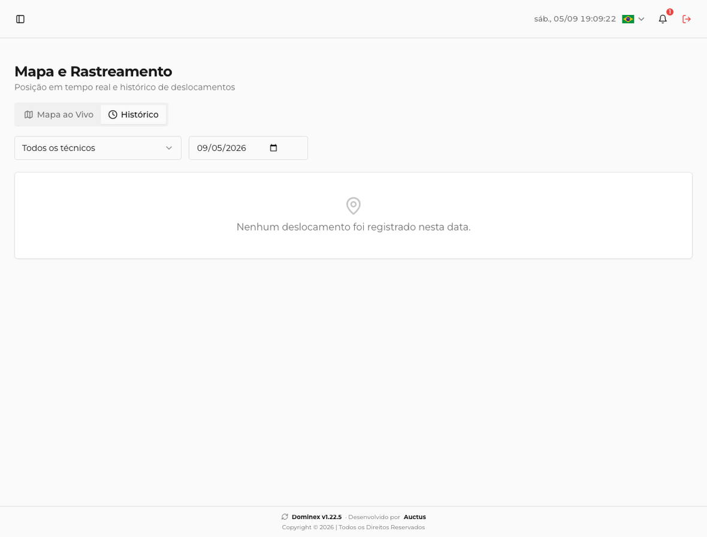
Os tipos de evento
| Evento | Quando é gravado |
|---|---|
| Check-in | Quando o técnico toca em Fazer Check-in no local do atendimento. |
| A Caminho | Quando o técnico toca em A Caminho. |
| Rastreamento | Pontos intermediários gravados durante o deslocamento e a execução. |
| Check-out | Quando a OS é finalizada. |
Os números do dia
Além da lista, a aba resume o dia escolhido em: Check-ins, Check-outs, Distância (ou Distância total quando são vários técnicos) e Tempo em campo.
Cada linha da lista traz o horário, o tipo de evento e o endereço resolvido a partir das coordenadas, mais um link Ver no mapa. Quando não há registro: "Nenhum registro encontrado" e "Nenhum deslocamento foi registrado nesta data." Antes de escolher um técnico: "Selecione um técnico" e "Escolha um técnico e uma data para ver o histórico de deslocamentos."
Suporte: problemas comuns
| O cliente diz | Causa provável | Como resolver |
|---|---|---|
| "Criei uma tarefa mas ela não aparece em Ordens de Serviço" | Tarefa e OS são coisas diferentes | Tarefa é compromisso interno e só vive na Agenda. Se era para ser um atendimento a cliente, crie novamente pelo botão de criar e escolha Ordem de Serviço na pergunta "O que deseja criar?". |
| "O técnico não vê a OS na agenda dele" | Ele não é responsável pela OS nem está na equipe escalada | Usuário com papel de técnico só enxerga o que é dele ou da equipe dele. Abra a OS e coloque o nome dele (ou a equipe) em Responsáveis. |
| "Não consigo criar equipe, a tela de Funcionários não abre" | Empresa sem o módulo RH | A aba Equipes fica dentro de Funcionários, que depende do módulo RH. Sem ele, o sistema redireciona e oferece a contratação. As equipes já criadas continuam funcionando nas OS, o que não dá é criar ou editar. |
| "Onde eu defino o líder da equipe?" | Esse campo não existe | A equipe é uma lista plana de membros, sem hierarquia. Se você precisa marcar quem responde, escale a equipe e também o técnico responsável no campo Responsáveis da OS, ou anote o nome na Descrição da equipe. |
| "Arrastei sem querer e mudei a data de uma OS" | Arraste aplica na hora, sem confirmação | Basta arrastar de volta para o dia e horário originais, ou abrir a OS e corrigir a data. Se a OS era de contrato, o sistema tinha perguntado antes se era só ela ou também as futuras. |
| "A mesma OS aparece em dois dias na agenda" | OS pausada e retomada | É proposital. Ela continua marcada na data original e também aparece do dia da retomada até hoje, com o selo Retomada. É a mesma OS: concluir por qualquer uma resolve as duas. |
| "O técnico não aparece no mapa" | Sem permissão de localização, sem OS ativa ou sem internet | Peça para ele abrir a OS no celular, autorizar a localização quando o navegador perguntar e marcar A Caminho ou fazer o check-in. Sem OS ativa, ele não é rastreado, e isso é de propósito. |
| "O marcador do técnico está parado num lugar antigo" | O aparelho parou de enviar posição | O mapa guarda o último ponto conhecido e mostra "Há N min". Celular com tela apagada, navegador fechado ou sem sinal para de enviar. Peça para ele reabrir a tela da OS. |
| "Não acho a tela de Rastreamento no menu" | Ela não existe como item separado | O histórico é a segunda aba da tela Mapa e Rastreamento. O endereço antigo redireciona para lá. |
| "Os feriados da minha cidade não aparecem" | Cidade e estado da empresa em branco | Os feriados locais são calculados a partir do endereço cadastrado da empresa. Preencha cidade e estado em Configurações → Empresa. Também confira se a opção de mostrar feriados está ligada em Usabilidade. |
| "A agenda está vazia mas eu tenho OS" | Filtro ativo ou período errado | Confira o botão Filtros: técnico, cliente ou status podem estar marcados. Confira também se você está no dia certo, especialmente na visão Dia. |
Perguntas frequentes
- Qual a diferença entre Tarefa e Ordem de Serviço?
- Ordem de Serviço é atendimento a cliente: tem checklist, check-in, fotos, assinatura, link para o cliente e relatório. Tarefa é compromisso interno: só aparece na Agenda, com título, responsável, data e descrição.
- Empresa sem o módulo RH consegue usar equipe?
- Consegue usar as que já existem, escalando na OS. Não consegue criar, editar nem excluir equipe, porque o cadastro vive dentro da tela Funcionários, que depende do módulo RH.
- Como marco quem manda numa equipe?
- Não existe campo de líder. A saída prática é escalar a equipe e também o técnico responsável no campo Responsáveis da OS, assim fica claro quem responde por aquele atendimento.
- Arrastar na agenda avisa o técnico?
- A agenda dele muda na hora, mas o sistema não faz uma ligação nem manda mensagem para o cliente final. Em mudança de última hora, combine por fora.
- Por que a OS retomada aparece duas vezes?
- Para não perder o histórico e ao mesmo tempo não deixar a OS sumir. Ela continua na data original e também aparece de hoje para trás desde o dia da retomada, com o selo Retomada. Ao concluir ou cancelar, as aparições extras somem.
- O mapa mostra o técnico o dia inteiro?
- Não. A posição só é registrada enquanto ele tem uma OS a caminho, em andamento ou pausada, com a tela aberta e a localização autorizada. Fora disso ele não é rastreado.
- Por quanto tempo o mapa ao vivo guarda a posição?
- O mapa ao vivo trabalha com as últimas 2 horas. Registros mais antigos continuam disponíveis na aba Histórico, filtrando por técnico e data.
- Dá para ver a rota que o técnico fez, e não só os pontos?
- O mapa desenha o rastro recente do deslocamento e, quando ele está a caminho, também a rota estimada até o destino, com previsão de chegada. Na aba Histórico, os eventos ficam listados em ordem, com o endereço de cada um e a distância total do dia.
- Posso escalar duas equipes na mesma OS?
- Pode. O seletor de responsáveis aceita várias equipes e vários técnicos ao mesmo tempo.
- Onde eu vejo tudo que está pausado, de qualquer data?
- No botão OS Pausadas, no topo da Agenda. Ele lista todas as OS pausadas independentemente da data, mostra há quanto tempo cada uma está parada e permite retomar na hora.
O técnico em campo + Área do Técnico™
Esta é a parte que o técnico vive: abrir a OS no celular, avisar que está a caminho, fazer o check-in, preencher o checklist com foto, colher assinatura e finalizar. No fim, a caixa de ferramentas de cálculo que ele leva no bolso.
1. Abrindo a OS no celular: o link, o endereço amigável e o que o técnico vê primeiro
O técnico não precisa navegar por menu nenhum: ele abre o link da OS, que chega por mensagem, por atalho salvo ou pela própria Agenda dele. O endereço tem o formato amigável dominex.app/os-tecnico/nome-do-cliente-servico-CODIGO. Links antigos com o código longo continuam funcionando: o sistema resolve e ainda arruma o endereço na barra do navegador sozinho.
Os três públicos do mesmo endereço
| Quem abre | O que aparece |
|---|---|
| Técnico ou gestor logado, OS em aberto | A tela de execução, com os botões de ação. |
| Técnico ou gestor logado, OS concluída | O relatório do serviço, com baixar PDF, imprimir e copiar link. |
| Qualquer pessoa sem login | O modo cliente, somente leitura. O sistema entra nesse modo sozinho, sem ninguém precisar escolher nada. |
![Ordem de serviço aberta pelo link público, sem login, em modo cliente: cabeçalho verde com o número da OS e o selo Concluída, cartão da empresa e dados do cliente Supermercado Bom Preço Ltda com CNPJ, telefone e endereço, registro fotográfico separado em Antes, Durante e Depois, checklist de Condicionadores de Ar com dezenas de itens marcados Conforme, Não Conforme e N/A, campo de observações, vídeo da manutenção, assinaturas do técnico e do cliente, e uma barra fixa embaixo com os botões Baixar PDF, Imprimir e Copiar Link](img/t7-os-modo-cliente.jpg)
É essa tela — e não uma versão resumida — que o cliente final recebe quando pede "me manda o relatório do serviço": fotos de antes/durante/depois, o checklist completo com cada item marcado, observações do técnico, vídeo (quando o módulo está ativo) e as duas assinaturas, tudo no mesmo link que foi usado para acompanhar o atendimento. O cliente não edita nada nessa tela, mas pode baixar o PDF, imprimir ou copiar o link para reenviar.
O que o técnico vê primeiro
No topo, o número da OS e o status atual. Abaixo, os blocos Cliente (com nome, telefone e endereço), Descrição do Serviço e Observações. Se a OS tiver um endereço de serviço próprio, ele aparece em destaque com o rótulo Endereço deste serviço e a nota "O atendimento é neste local, diferente do endereço cadastrado do cliente."
Antes do check-in, o cartão de ação se chama Ir para o Atendimento, com a orientação: "Informe ao cliente que você está a caminho ou faça o check-in ao chegar." e dois botões: A Caminho e Fazer Check-in.
Se a OS estiver pausada, o cartão vira OS Pausada, com a explicação "Esta OS foi pausada. Retome o atendimento para continuar o preenchimento." e um único botão, Retomar OS. Enquanto pausada, os checklists ficam bloqueados e aparece o aviso "OS pausada, retome o atendimento para preencher os checklists."
2. A Caminho → mapa em tela cheia com botão pra Waze e Google Maps
Tocando em A Caminho, três coisas acontecem: a posição atual do técnico é registrada, a OS muda para o status A Caminho e aparece a confirmação "Status atualizado: A Caminho!".
A tela então mostra o cartão Rota até o cliente, com um mapa e três botões: Waze, Google Maps e Ampliar. O Ampliar abre o mapa em tela cheia, para conferir o trajeto antes de sair.
Regras que o sistema aplica
- O destino segue uma ordem: primeiro o endereço de serviço da OS, se houver; depois o endereço do cliente. Dentro de cada um, primeiro as coordenadas salvas, depois o endereço em texto.
- Os botões abrem o Waze e o Google Maps fora do sistema, no aplicativo instalado. A navegação em si acontece lá, não dentro da Dominex.
- Sem endereço nem coordenada, o botão avisa: "Sem endereço para abrir a navegação."
- Enquanto o técnico está A Caminho, a posição dele continua sendo enviada e o gestor acompanha no Mapa ao Vivo. O cliente, se abrir o link, vê "Técnico a caminho..." e o acompanhamento em tempo real.
3. Check-in: a OS vira "Em Andamento" e a localização é registrada
Ao chegar, o técnico toca em Fazer Check-in. O cartão nesse momento se chama Iniciar Atendimento, com a orientação "Chegou no local? Faça o check-in para iniciar."
O que o check-in faz
- Pede a localização do aparelho. É obrigatório: sem localização, o check-in não acontece.
- Grava o horário exato e as coordenadas na OS.
- Muda o status para Em Andamento.
- Libera os checklists, as fotos e as assinaturas para preenchimento.
- Mostra a confirmação "Check-in realizado com sucesso!".
- Em segundo plano, converte as coordenadas em um endereço legível e completa o registro. Se essa parte falhar, fica só a coordenada, e o check-in continua válido.
Mensagens de erro de localização, e o que fazer com cada uma
| Mensagem | O que fazer |
|---|---|
| "Você precisa permitir o acesso à localização para registrar o serviço. Abra as configurações do navegador, libere a localização para este site e tente novamente." | A permissão foi negada. Nas configurações do site no navegador, autorize a localização e recarregue a página. |
| "Não conseguimos obter sua localização agora. Verifique se o GPS do aparelho está ligado e se você tem sinal." | GPS desligado ou sem sinal. Ligue a localização do aparelho e tente de novo. |
| "Não conseguimos obter sua localização nem pelo GPS, nem pelas redes próximas. Verifique se o GPS do aparelho está ligado, se você tem sinal de internet, e tente sair pra um local mais aberto." | Nem o GPS nem a localização por rede responderam. Saia de dentro do subsolo ou da casa de máquinas. |
| "A localização demorou demais para responder. Tente de novo daqui a alguns segundos." | Espere alguns segundos com o aparelho parado e tente outra vez. |
| "Seu navegador não suporta geolocalização. Use um navegador atualizado." | Navegador muito antigo ou navegador embutido de outro aplicativo. Abra o link no Chrome ou no Safari. |
4. Preenchendo checklist por equipamento: sim/não, conformidade, medição, seleção, número
Depois do check-in aparece o bloco Checklists. Ele é organizado por equipamento: um cabeçalho por máquina, com o nome dela e, quando existe, o ambiente ou o local. Se aquele equipamento tem mais de um checklist, cada um vira um bloco próprio com o nome do checklist. O cabeçalho gruda no topo enquanto você rola, para o técnico nunca perder de vista em qual equipamento está.
Cada bloco mostra o quanto já foi respondido e um selo: Concluído ou Pendente, mais o contador de N pendentes.
Como cada tipo de pergunta se comporta
| Tipo | Como responder | Quando salva |
|---|---|---|
| Sim/Não | Uma chave. Ligada mostra o selo verde Sim, desligada o selo vermelho Não. Sem responder, aparece Não respondido. | No toque. |
| Conformidade | Três botões: Conforme (verde), Não Conforme (vermelho) e N/A (laranja). Tocar de novo no mesmo botão limpa a resposta. | No toque. |
| Texto | Caixa de texto de duas linhas. | Ao sair do campo, não a cada letra. |
| Número | Teclado numérico, aceita decimal. | Ao sair do campo. |
| Medição | Campo numérico com a unidade fixa à direita e a faixa esperada logo abaixo, no formato "Faixa esperada: mín a máx". Fora da faixa, a borda fica âmbar e aparece "Valor fora da faixa esperada, confira o equipamento ou registre observação". | Ao sair do campo. |
| Seleção | Lista de opções com caixinhas. Dá para marcar mais de uma. Aparece o contador "N selecionadas". | No toque. |
| Foto | Dois botões, detalhado no capítulo 5. | Ao terminar o envio. |
| Vídeo | Gravação de clipe curto, detalhado no capítulo 6. | Ao terminar o envio. |
| Assinatura | Área para assinar com o dedo, centralizada, com botão de limpar. | Ao confirmar a assinatura. |
Perguntas que não aparecem em toda visita
Em OS de contrato, uma pergunta pode ter frequência: mensal, trimestral, semestral, anual ou personalizada. Nesse caso ela só aparece na visita em que vence. Se nenhuma pergunta daquele checklist vence na visita atual, o bloco mostra "Nenhuma pergunta prevista para esta visita." Se o checklist estiver vazio, a mensagem é "Nenhuma pergunta configurada para este checklist."
Editar a OS em campo
Quem tiver a permissão Editar OS em campo encontra, no menu de mais ações, a opção Editar OS. Ela abre um painel com duas abas, Equipamentos e Checklists avulsos, para acrescentar um equipamento que apareceu na hora ou anexar um checklist que faltava.
5. Fotos: Tirar Foto × Galeria, e quando só a câmera é permitida
Toda pergunta de foto mostra dois botões lado a lado: Tirar Foto, com ícone de câmera, e Galeria, com ícone de imagem.
| Botão | O que abre | Quando usar |
|---|---|---|
| Tirar Foto | A câmera traseira, direto. | Foto do momento: antes e depois, medição no manifold, avaria encontrada, equipamento instalado. |
| Galeria | As fotos já salvas no aparelho. | Foto que o técnico já tinha tirado (a plaqueta que ele fotografou na chegada, um comprovante, uma imagem recebida por mensagem). |
Quando só a câmera é permitida
Se a pergunta foi criada com a opção Exigir foto da câmera ligada, o botão Galeria desaparece e o Tirar Foto passa a ocupar a largura inteira. O técnico só consegue anexar uma foto tirada naquele momento. É a configuração certa para laudo, auditoria e comprovação de execução.
Regras que o sistema aplica
- Fotos de iPhone no formato HEIC são convertidas automaticamente antes do envio. O técnico não precisa mudar nada nos ajustes do aparelho.
- Toda foto é comprimida e redimensionada antes de subir, para não estourar o pacote de dados no meio da rua.
- Se a pergunta permite várias fotos, elas viram um carrossel. Se permite só uma e já existe uma, a tentativa mostra "Apenas uma foto permitida" com "Remova a atual para enviar outra."
- Ao terminar, aparece "Foto enviada!" ou "N fotos enviadas!".
- Falha no envio mostra "Erro ao enviar foto" com o motivo. A foto não fica numa fila: é preciso tentar de novo.
- Remover pede confirmação: "Remover foto?" com "Tem certeza que deseja remover esta foto? Essa ação não pode ser desfeita."
- Se a opção Salvar fotos no dispositivo estiver ligada em Configurações → Usabilidade, depois de tirar a foto pela câmera o app oferece guardar uma cópia no aparelho. No iPhone abre a opção de salvar imagem; no Android baixa direto.
- Tocar numa foto abre o visualizador dentro do próprio app, com zoom. Ela nunca abre numa aba nova.
6. Resposta em vídeo
A pergunta de vídeo depende do módulo de perguntas em vídeo. Sem ele, esse tipo de pergunta nem existe nos checklists da empresa.
Quando existe, o técnico vê o botão Gravar vídeo (até 30s), com a nota "Clipe curto de até 30 segundos. Precisa de conexão para enviar." e, quando permitido, também um botão Galeria.
Como funciona a gravação
- Tocando em gravar, o app pede acesso à câmera e abre um modo tela cheia com a imagem ao vivo e um contador regressivo.
- A gravação para sozinha aos 30 segundos, ou antes se o técnico tocar em Parar gravação.
- O clipe sobe e aparece a confirmação "Vídeo enviado!".
- Para trocar, o botão vira Regravar vídeo. Regravar substitui o clipe anterior: cada pergunta guarda um único vídeo.
Regras e mensagens
- Se a pergunta foi criada com Exigir gravação na hora, o botão de galeria não aparece.
- Vídeo escolhido da galeria acima do tamanho aceito mostra "Vídeo muito grande" com "O vídeo precisa ter no máximo 30 segundos. Grave um clipe mais curto."
- Sem acesso à câmera: "Não foi possível acessar a câmera" com "Verifique a permissão da câmera e tente de novo."
- No relatório em tela, o vídeo toca no próprio player. No PDF e na impressão, ele vira um aviso escrito de que o vídeo está disponível na versão online, porque vídeo não cabe em papel.
7. Pausar e retomar a OS depois — e como isso aparece na agenda do gestor
No menu de mais ações (o botão de três traços no rodapé) existe Pausar OS. Pausar muda o status para Pausada e mostra "OS pausada com sucesso!". Tudo que já foi preenchido fica salvo.
Com a OS pausada, o técnico vê o cartão OS Pausada e o botão Retomar OS. Retomando, a OS volta para Em Andamento e aparece "OS retomada com sucesso!".
Como o gestor enxerga isso
- No topo da Agenda existe o botão OS Pausadas, com um contador âmbar. Ele lista todas as OS pausadas, de qualquer data, mostrando há quanto tempo cada uma está parada, e permite Retomar agora na hora.
- Depois de retomada, a OS aparece em duas datas na agenda: continua marcada na data original e aparece também do dia da retomada até hoje, com a borda âmbar, o ícone de play e o selo Retomada. É a mesma OS, não é duplicidade.
- Assim que ela for concluída ou cancelada, as aparições extras somem.
8. Assinatura do técnico e do cliente
Existem dois lugares onde a assinatura acontece, e vale entender a diferença.
| Onde | Como é ligada | Comportamento |
|---|---|---|
| Bloco Assinaturas, no fim da OS | Só aparece quando a OS pede assinatura. Hoje isso é ligado automaticamente nas OS geradas por contrato, que já nascem exigindo a assinatura do técnico. | Mostra Assinatura do Técnico e, quando exigida, Assinatura do Cliente. Sem assinar, a finalização é bloqueada. |
| Pergunta do tipo Assinatura dentro do checklist | Você coloca na hora de montar o checklist, em qualquer OS. | Vira mais uma pergunta do roteiro. Marcada como obrigatória, também bloqueia a finalização. |
Existe uma opção chamada Exigir Assinatura em Configurações → Usabilidade. Ela não tem efeito na execução da OS hoje. Não oriente o cliente a contar com ela.
O que fica gravado junto com a assinatura
- O desenho da assinatura.
- O momento exato em que ela foi capturada.
- A localização naquele momento. Se o GPS falhar na hora de assinar, o sistema usa a posição do check-in ou do check-out como referência.
Limpar a assinatura apaga também o carimbo de hora e de lugar dela.
Se o técnico tentar finalizar sem assinar, as mensagens são "Assinatura do técnico obrigatória" ou "Assinatura do cliente obrigatória".
9. Finalizar (e o "finalizar parcialmente" em contrato PMOC)
No rodapé, o botão verde Finalizar OS encerra o atendimento. Antes de aceitar, o sistema confere uma sequência de coisas.
A sequência de verificação
- Campos obrigatórios do checklist. Faltando algum, aparece "Campos obrigatórios pendentes" com "Preencha os campos: ..." e os nomes das primeiras perguntas em falta.
- Atalho de conformidade. Se as pendências forem apenas perguntas que podem ser marcadas como conformes (sim/não e conformidade), em vez de bloquear, o app abre a janela Checklist incompleto: "Faltam N itens do checklist sem resposta. Você pode voltar e preencher, ou marcar os N restantes como Conforme para concluir agora." Os botões são Voltar e preencher e Marcar N como Conforme e concluir. Junto vai o aviso: "Isto é apenas uma facilidade de preenchimento: o conteúdo é de responsabilidade do técnico e do responsável técnico, e o sistema não se responsabiliza pelo que for preenchido." Se houver qualquer pendência de texto, número ou seleção, o atalho não é oferecido e o bloqueio permanece.
- Assinaturas, quando a OS as exige.
- Conformidade PMOC, quando a OS pertence a contrato PMOC. É preciso escolher entre "Conforme, tudo dentro do esperado", "Parcial, alguma medida fora da faixa, mas operacional" e "Não-conforme, problema técnico a registrar". Sem escolher: "Classificação PMOC obrigatória" com "Selecione conforme, parcial ou não-conforme antes de finalizar." Escolhendo parcial ou não-conforme sem escrever a nota: "Notas obrigatórias" com "Descreva o que foi observado para classificação parcial ou não-conforme."
- Confirmação final. Passando por tudo, abre Finalizar OS? com "Tem certeza que deseja finalizar e concluir esta OS?".
O que acontece ao finalizar
- Registra o check-out com hora e localização.
- Muda o status para Concluída.
- Grava as assinaturas com hora e lugar.
- Em OS de contrato PMOC, grava a classificação de conformidade e as notas.
- Prepara a pesquisa de satisfação, que passa a aparecer para o cliente no mesmo link da OS.
- Mostra "OS finalizada com sucesso!" e a tela vira o relatório do serviço.
Finalizar Parcial
Ao lado do botão verde existe o botão laranja Finalizar Parcial. Ele abre a janela Finalizar parcialmente? com o texto: "A OS ficará marcada como Parcialmente Concluída e aparecerá nas OS pausadas até ser concluída de verdade." e a nota "O que você já preencheu fica salvo. Você pode retomar e concluir quando terminar o serviço."
| Finalizar OS | Finalizar Parcial | |
|---|---|---|
| Status final | Concluída | Pausada, com a marca Parcialmente Concluída |
| Verifica obrigatórios, assinatura e PMOC | Sim | Não. É intencionalmente incompleta |
| Registra check-out | Sim | Não |
| Gera pesquisa de satisfação | Sim | Não |
| Aparece em OS Pausadas na Agenda | Não | Sim |
Confirmando, aparece "OS finalizada parcialmente" e o técnico volta para a tela anterior. Quando a OS for concluída de verdade depois, a marca de parcial é limpa automaticamente.
10. Área do Técnico™: a caixa de ferramentas do seu segmento (carga térmica, capacitor, cabo elétrico, superaquecimento, régua de gases, retrofit, ciclo de refrigeração…)
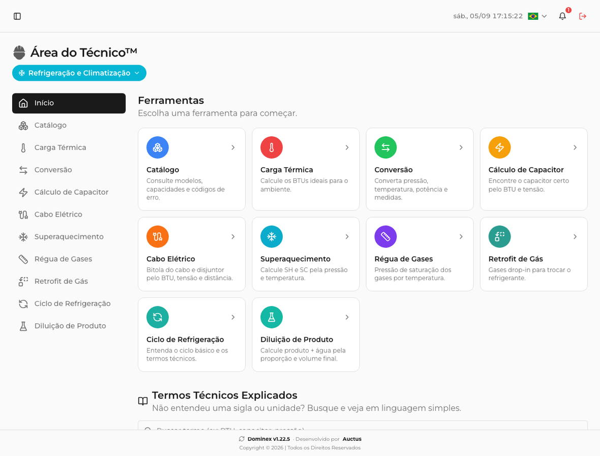
Para empresas de refrigeração e climatização, as ferramentas são:
| Ferramenta | O que faz |
|---|---|
| Catálogo | "Consulte modelos, capacidades e códigos de erro." |
| Carga Térmica | "Calcule os BTUs ideais para o ambiente." |
| Conversão | "Converta pressão, temperatura, potência e medidas." |
| Cálculo de Capacitor | "Encontre o capacitor certo pelo BTU e tensão." |
| Cabo Elétrico | "Bitola do cabo e disjuntor pelo BTU, tensão e distância." |
| Superaquecimento | "Calcule SH e SC pela pressão e temperatura." |
| Régua de Gases | "Pressão de saturação dos gases por temperatura." |
| Retrofit de Gás | "Gases drop-in para trocar o refrigerante." |
| Ciclo de Refrigeração | "Entenda o ciclo básico e os termos técnicos." |
| Diluição de Produto | "Calcule produto + água pela proporção e volume final." |
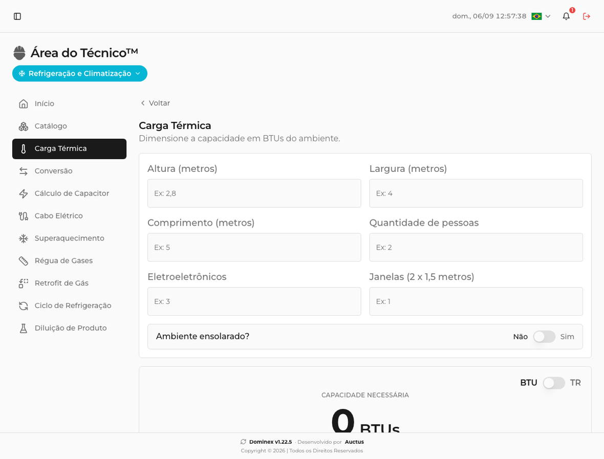
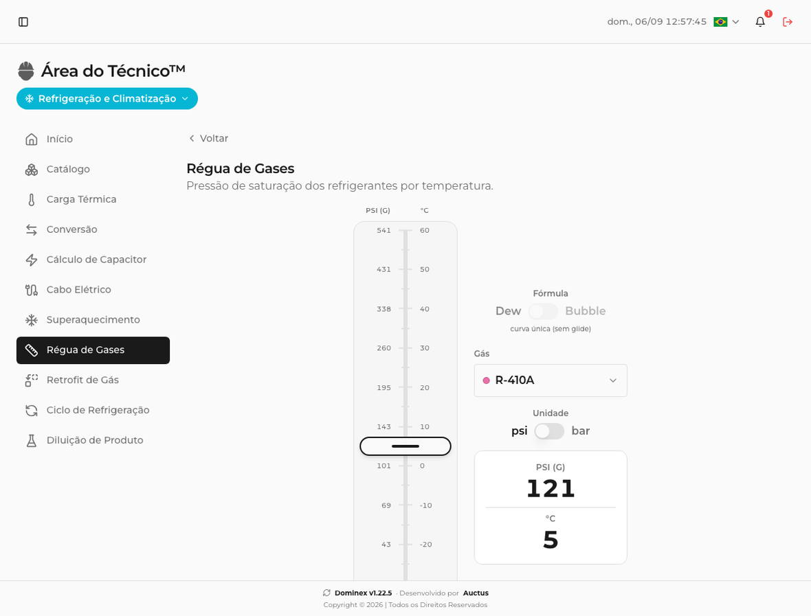
Para TI e assistência técnica, as ferramentas são Calculadora de Fonte (PSU) ("Estime o consumo dos componentes e a wattagem ideal da fonte"), Conversor de Armazenamento ("Converta GB/GiB/TB/TiB e velocidade Mbps para MB/s") e Laudo Técnico ("Preencha o diagnóstico e gere um laudo em PDF para entregar ao cliente"). Para estética automotiva, existe Diluição de Produto.
11. Usar a calculadora de dentro da OS, sem sair da tela
Durante a execução da OS, aparece um botão flutuante no canto inferior esquerdo, com o ícone da Área do Técnico™. Tocando nele, as ferramentas abrem em cima da OS, em tela cheia.
Por que isso importa
- A OS continua montada por baixo. Nada do que já foi preenchido se perde.
- No rodapé há um botão vermelho Voltar para OS, que devolve o técnico exatamente onde ele estava, no mesmo equipamento e no mesmo checklist.
- É o caminho para converter uma pressão, conferir a bitola do cabo ou olhar o código de erro sem abandonar o preenchimento.
12. As ferramentas com cadeado: o que é do seu segmento e o que é de outro
No topo da Área do Técnico™ existe um seletor de nicho. Ele permite espiar o conjunto de ferramentas de outros segmentos, e é aí que aparecem os cadeados.
- Escolhendo o seu segmento, tudo abre normalmente.
- Escolhendo outro segmento, a barra lateral mostra os nomes das ferramentas daquele nicho com um cadeado ao lado, e o conteúdo vira uma tela de apresentação daquele conjunto, em vez da calculadora em si.
São vitrines, não ferramentas funcionando. Alguns exemplos do que aparece bloqueado: para elétrica, Dimensionamento de Disjuntor, Queda de Tensão, Bitola de Cabo e Carga Instalada. Para energia solar, Dimensionamento Fotovoltaico, Nº de Painéis, Geração Mensal e Dimensionar Inversor. Para CFTV, Dimensionamento de HD, Banda de Vídeo, Câmeras por Área e Fonte/Nobreak. Para elevadores, Cálculo de Contrapeso, Capacidade de Carga, Velocidade × Pavimentos e Checklist. Para dedetização, Dosagem por Área, Diluição, Área de Cobertura e Reaplicação. Existem listas parecidas para telecom, construção, engenharia, automação, limpeza, manutenção predial e estética automotiva.
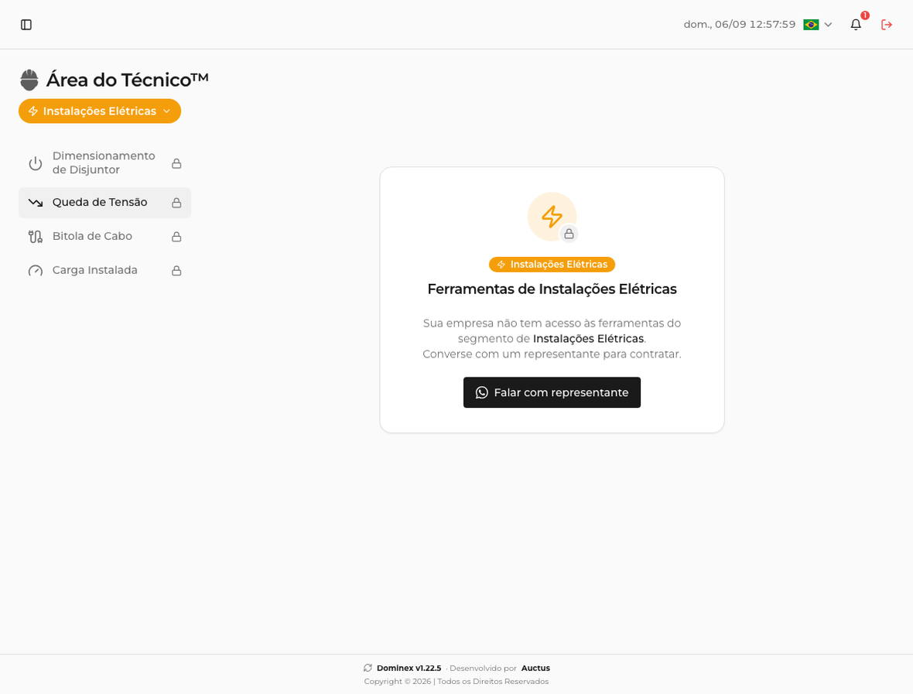
Suporte: problemas comuns
| O cliente diz | Causa provável | Como resolver |
|---|---|---|
| "O técnico preencheu tudo no cliente e não salvou nada" | Sem internet no local | Explique com franqueza: cada resposta é enviada na hora, e não existe fila para sincronizar depois. Sem sinal, o app mostra "Erro ao salvar resposta". A orientação para a equipe é preencher com sinal, ou sair para um ponto com sinal antes de responder. |
| "Aparece uma faixa vermelha dizendo que vai sincronizar quando reconectar" | Aviso de conexão perdida | A faixa indica que o celular perdeu a conexão. Enquanto ela estiver na tela, nada é gravado. Peça para o técnico recuperar o sinal e refazer o que tentou responder, conferindo se a resposta ficou na tela. |
| "O técnico não consegue fazer check-in" | Localização negada ou GPS desligado | O check-in exige localização. Peça para autorizar a localização para o site nas configurações do navegador, ligar o GPS do aparelho e tentar de novo em local aberto. |
| "Não aparece o checklist para o técnico" | Falta o check-in, ou a OS está pausada, ou ele está deslogado | O checklist só abre depois do check-in. Se a OS estiver pausada, ele precisa tocar em Retomar OS. Se ele abriu o link sem estar logado, está vendo o modo cliente. |
| "O técnico só consegue anexar foto da galeria, não abre a câmera" | Está tocando no botão errado | São dois botões separados: Tirar Foto abre a câmera, Galeria abre as fotos do aparelho. Se só aparece um botão de câmera, é porque a pergunta foi configurada com Exigir foto da câmera. |
| "A foto do iPhone não sobe" | Quase sempre é conexão, não formato | Fotos HEIC do iPhone são convertidas automaticamente. Se aparece "Erro ao enviar foto", o problema é sinal. Peça para tentar de novo em local com internet. |
| "Não consigo finalizar a OS" | Pendência de checklist, assinatura ou classificação PMOC | Leia a mensagem exibida. "Campos obrigatórios pendentes" lista as perguntas em falta. "Assinatura do técnico obrigatória" ou "Assinatura do cliente obrigatória" pedem a assinatura. "Classificação PMOC obrigatória" pede escolher conforme, parcial ou não-conforme. |
| "Onde eu marco as peças que usei na OS?" | Esse campo não existe na execução | Não existe registro de material dentro da tela de execução, e concluir a OS não mexe em estoque. O consumo é lançado pelo orçamento convertido em OS, ou manualmente na tela de Estoque. |
| "Onde está o botão de exigir assinatura?" | Esse botão não existe na criação da OS | Nas OS de contrato, a assinatura do técnico já é exigida sozinha. Para OS avulsa, coloque uma pergunta do tipo Assinatura no checklist marcada como obrigatória. |
| "O técnico ficou sem a Área do Técnico™" | Segmento da empresa sem ferramentas, ou tela sem permissão | As ferramentas existem por segmento. Se o segmento não tem ferramenta cadastrada, o item não aparece no menu. Confira também se a tela Área do Técnico™ está liberada para o cargo dele. |
| "Aparece cadeado nas calculadoras" | Ele trocou o nicho no seletor do topo | Ferramentas com cadeado são de outro ramo. Peça para voltar o seletor para o segmento da empresa e tudo abre. |
| "O cliente abriu o link e não viu o relatório" | A OS ainda não foi finalizada | Antes da conclusão, o cliente vê o acompanhamento ("Aguardando início do atendimento", "Técnico a caminho...", "Técnico em atendimento..."). O relatório completo aparece depois de finalizada. |
Perguntas frequentes
- O app do técnico funciona sem internet?
- Não para gravar. O app abre rápido mesmo com sinal ruim, porque a tela em si fica guardada no aparelho, mas toda resposta, foto, assinatura, check-in e finalização precisam de conexão no momento em que acontecem. Não existe fila que sincroniza depois. Sem sinal, o app avisa que não conseguiu salvar.
- O técnico precisa instalar algum aplicativo?
- Não. Ele abre o link da OS no navegador do celular.
- Por que o check-in exige localização?
- Porque é o registro de que o atendimento aconteceu naquele endereço e naquele horário. Esse dado alimenta o mapa ao vivo, o histórico de deslocamento e a comprovação do serviço para o cliente.
- O que acontece se o técnico esquecer de finalizar?
- A OS fica em andamento. O gestor consegue finalizar pelo resumo da OS na tela de Ordens de Serviço, ou abrir a OS como técnico e finalizar de lá.
- Qual a diferença entre Pausar e Finalizar Parcial?
- Pausar apenas para o atendimento. Finalizar Parcial também deixa a OS pausada, mas marcada como Parcialmente Concluída, deixando explícito que o serviço foi feito pela metade. Os dois mantêm o preenchimento salvo e aparecem na fila de OS Pausadas.
- O cliente vê o checklist enquanto o técnico preenche?
- O cliente vê o andamento pelo link, com as respostas aparecendo conforme são salvas e o rótulo "Aguardando resposta..." nas que ainda não foram preenchidas.
- Dá para o técnico usar a calculadora sem perder o preenchimento?
- Dá. O botão flutuante abre as ferramentas por cima da OS e o botão Voltar para OS devolve exatamente onde ele estava.
Estoque, compras e inventário
Controlar o que entra, o que sai e o que sumiu. Vale tanto para quem tem um depósito grande quanto para quem carrega peça na van e quer saber quanto tem de gás, filtro e capacitor antes de sair para a rua.
1. Tela Estoque: as 5 abas e pra que serve cada uma
A tela se chama Estoque, com o subtítulo "Controle de peças e materiais". Ela tem cinco abas na navegação lateral:
| Aba | Para que serve |
|---|---|
| Estoque Atual | O que existe hoje, por local. É a tela do dia a dia: cadastrar material, ver saldo, registrar entrada e saída, transferir. |
| Histórico de Materiais (Kardex) | Todo movimento que já aconteceu, item por item, com saldo antes e depois. |
| Compras de Material | Requisições de compra, fornecedores e cotações. |
| Inventários | Contagem física: você conta, o sistema compara com o esperado e ajusta a diferença. |
| Posição de Estoque | Qual era o saldo numa data passada. É o retrato do estoque para fechamento e para conferência com o contador. |
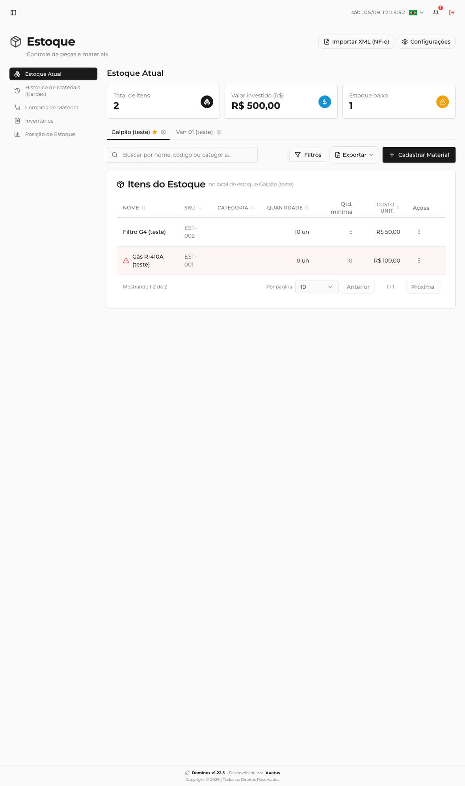
Os quatro indicadores da aba Estoque Atual
- Total de itens: quantos materiais diferentes existem.
- Valor investido (R$): o quanto está parado em estoque, pelo preço de custo.
- Projeção venda (R$): quanto esse mesmo estoque valeria pelo preço de venda.
- Estoque baixo: quantos materiais estão abaixo do mínimo definido.
No topo da tela, sempre visíveis
- Importar XML (NF-e): dá entrada no estoque a partir do arquivo da nota do fornecedor.
- Configurações: abre Configurações do Estoque, com as abas Grupos de material e Locais de estoque.
2. Cadastrar material: categoria/grupo, unidade, estoque mínimo e custo
O botão Cadastrar Material (no celular, o botão flutuante "Material") abre a janela Novo Item de Estoque. Ao editar, o título vira Editar Item.
| Campo | Obrigatório | O que faz |
|---|---|---|
| Nome do Item * | Sim | Único campo obrigatório. |
| Código/SKU | Não | Sugestão "Ex: FLT-001". O sistema propõe um código sequencial sozinho, com o selo Auto, e a explicação "Código sequencial sugerido automaticamente (você pode personalizar)." |
| Categoria | Não | Lista fixa: Peças, Filtros, Gases, Ferramentas, Materiais, Equipamentos e Outros. |
| Grupo | Não | Diferente da categoria: o grupo é criado por você e serve para organizar do seu jeito. Dá para criar um grupo novo digitando o nome na própria busca. Sem grupo cadastrado, a mensagem é "Nenhum grupo. Crie em Configurações." |
| Fornecedor | Não | Texto livre com o nome do fornecedor habitual. |
| Descrição | Não | "Descrição detalhada do item..." |
| Quantidade | Não | Quantidade inicial. Ao cadastrar com quantidade maior que zero, o sistema registra uma entrada no local ativo, com a observação "Cadastro inicial", e o movimento aparece no Kardex. |
| Unidade | Não | Unidade de medida (un, m, kg, L). Aparece nas listas e no relatório. |
| Preço de Custo (R$) | Não | Quanto você paga. Alimenta o Valor investido e o custo em orçamento. A nota da tela é "Valor por unidade." |
| Preço de Venda (R$) | Não | Quanto você cobra. Alimenta a Projeção venda. |
| Locais deste material | Não | Bloco por local de estoque, com a explicação "Marque os locais onde este material está presente. Defina a quantidade mínima para cada local." Tem Marcar todos e Desmarcar todos. |
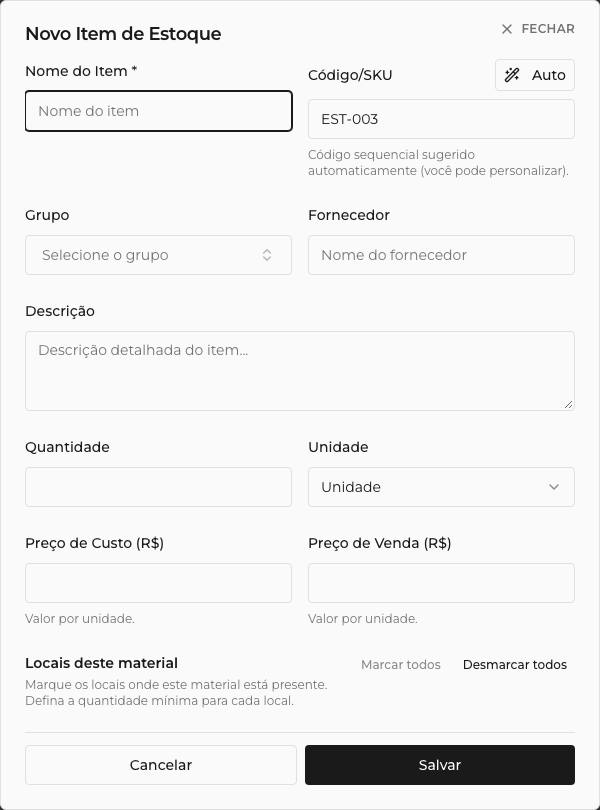
Estoque mínimo e o alerta de estoque baixo
O estoque mínimo é definido por local, dentro do bloco Locais deste material. Cada local marcado ganha um campo Mín..
- Quando o saldo daquele local fica abaixo do mínimo, aparece um triângulo vermelho ao lado do material, com a dica "Estoque abaixo do mínimo: X de Y".
- O indicador Estoque baixo conta quantos materiais estão nessa situação em algum local.
- O filtro Estoque abaixo do mínimo mostra só esses materiais.
- Na aba de compras, o alerta vira um atalho: "N materiais abaixo do mínimo" com o botão Criar requisição.
Alterar quantidade pela edição
Ao editar um material e mudar a quantidade, o sistema não sobrescreve o saldo em silêncio: ele registra um movimento de ajuste com a diferença, com a observação "Ajuste manual", e esse ajuste aparece no Kardex. Assim, todo saldo tem rastro.
Entrada e saída rápidas
No menu de ações de cada material existem Registrar entrada e Registrar saída. A janela pede Quantidade e Observação (com sugestões "Motivo da entrada..." e "Motivo da saída...") e mostra em tempo real o Saldo atual e o Saldo após. Se a conta der negativo, aparece o aviso Saldo ficaria negativo. As confirmações são "Entrada registrada" e "Saída registrada". Erros possíveis: "Informe uma quantidade maior que zero." e "Saldo insuficiente. Disponível: X."
3. Depósitos/locais: criar, definir o que existe em cada um e transferir entre eles
O botão Configurações, aba Locais de estoque, é onde os depósitos são criados. Cada local tem um nome e um deles é marcado como Principal.
Passo a passo
- Abra Configurações no topo da tela de Estoque.
- Vá na aba Locais de estoque.
- Em Novo local de estoque, digite o nome ("Nome do local...") e confirme.
- Use Definir como principal para eleger o local padrão, Renomear para trocar o nome e Excluir para remover. Excluir avisa: "O local [nome] será removido. Esta ação não pode ser desfeita."
Com mais de um local, a aba Estoque Atual ganha uma linha de pílulas, uma por depósito. Você troca de depósito tocando na pílula, e os indicadores e a lista passam a refletir só aquele local.
Definir o que existe em cada local
Ao lado de cada pílula de depósito há uma engrenagem, com o rótulo Configurar itens deste local. Ela abre a janela Configurar [nome do local], com duas abas: Itens e Acesso.
Na aba Itens você marca quais materiais existem naquele depósito, com busca, Marcar todos, Desmarcar todos e um atalho Adicionar por grupo para trazer um grupo inteiro de uma vez. A confirmação é "Itens do local atualizados".
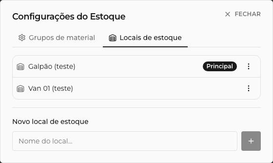
Transferir entre locais
No menu de ações do material existe Transferir. A janela Transferir entre locais de estoque pede Local de origem, Local de destino, Quantidade e Observações ("Motivo da transferência..."), mostrando o disponível na origem.
Validações, com o título "Confira os dados": "Selecione o local de origem.", "Selecione o local de destino.", "Origem e destino não podem ser o mesmo local de estoque.", "Informe uma quantidade maior que zero." e "Saldo insuficiente no local de origem."
Toda transferência aparece no Kardex como movimento do tipo Transferência, com origem e destino.
4. Restrição de acesso por depósito — quem vê o quê
Na mesma janela de configuração do local existe a aba Acesso. Ali há uma chave entre dois estados:
| Estado | Explicação na tela |
|---|---|
| Aberto | "Todos os usuários da empresa veem este local." |
| Restrito | "Apenas os usuários marcados veem e movimentam este local." |
Escolhendo Restrito, aparece a lista de usuários para marcar quem tem acesso. Alguns aparecem com o rótulo Sempre tem acesso (a gestão não pode ser bloqueada do próprio estoque). Salvando, aparece "Acesso do local atualizado".
5. Aba Histórico (Kardex): lendo a movimentação item a item
A aba Histórico de Materiais (Kardex) mostra o título Histórico de Movimentações. É o extrato do estoque: cada linha é um movimento, com o saldo antes e o saldo depois.
Colunas
Usuário, Data e Hora, Tipo, Origem, Material, Estoque inicial, Movimento e Estoque final.
Tipos de movimento
| Tipo | De onde vem |
|---|---|
| Entrada | Cadastro inicial com quantidade, entrada manual, entrada de compra e importação de XML da NF-e. |
| Saída | Saída manual e consumo de materiais de um orçamento convertido em OS. |
| Ajuste | Mudança de quantidade na edição do material e ajuste gerado no fechamento de um inventário. |
| Transferência | Movimentação entre dois locais de estoque. |
| Estorno | Reversão de um movimento anterior. |
A coluna Origem
É o que amarra o movimento ao seu motivo. Ela mostra OS com o número da ordem quando o consumo veio de uma OS, ou Fornecedor: [nome] quando o movimento veio de uma compra. Movimento feito por processo automático aparece como Sistema. Material apagado depois aparece como Material removido.
Filtros
Período, Material (com Todos os materiais) e Tipo de movimento (com Todos os tipos). Sem movimento: "Sem movimentações" e "As entradas, saídas e ajustes de estoque aparecem aqui conforme acontecem."
6. Aba Compras: abrir compra, cadastrar fornecedor
A aba Compras de Material mostra o título Requisições de Compra. Uma requisição é a lista do que você precisa comprar, antes de saber de quem e por quanto.
Criar uma requisição
- Clique em Nova requisição de compra. Abre a janela Nova Requisição de Compra.
- Preencha Título *. Sugestão da tela: "Ex.: Reposição de materiais, Junho". Sem título, o aviso é "Dê um título à requisição."
- Em Materiais, escolha a origem de cada item: Do estoque (busca no seu cadastro) ou Fora do estoque (você digita o nome de algo que ainda não existe no cadastro, e ele ganha o selo Fora do estoque).
- Preencha Quantidade e Unidade de cada material.
- O atalho Adicionar itens abaixo do mínimo monta a lista sozinho: escolha o local e o sistema traz tudo que está abaixo do mínimo, mostrando o Deficit de cada um.
- Salve. Sem material nenhum, o aviso é "Adicione ao menos um material."
A requisição nasce com o status Aberta e depois pode virar Concluída ou Cancelada. O menu de cada uma traz Editar, Concluir requisição, Reabrir requisição, Cancelar requisição e Excluir.
Cadastrar fornecedor
O botão Fornecedores abre a janela com a lista. Em Novo, o cadastro pede Nome * (único obrigatório), CPF/CNPJ, Contato, Telefone, E-mail e Observações. Sem fornecedor cadastrado: "Nenhum fornecedor" e "Cadastre fornecedores para usá-los nas cotações."
7. Cotação com vários fornecedores e escolha da vencedora
Abrindo uma requisição, aparece a seção Cotações. Cada cotação é a proposta de um fornecedor para a mesma lista de materiais.
Passo a passo
- Clique em Nova cotação. Escolha o Fornecedor *. Se todos já tiverem cotação, a mensagem é "Todos os fornecedores já têm cotação."
- Preencha o Valor unitário (R$) de cada material. O sistema calcula o Valor total de cada linha e o Total geral.
- Salve com Salvar cotação (ou Salvar preços ao editar).
- Repita para os outros fornecedores.
Com as cotações lado a lado, a mais barata recebe o selo Mais barata e o cartão da requisição mostra "Menor cotação: ". O contador "N/M materiais com preço" mostra o quanto de cada cotação já foi preenchido.
Aceitar e recusar
- Aceitar marca a cotação como Aceita, e o cartão passa a mostrar "Aceita: [fornecedor]".
- Recusar marca como Recusada. O aviso é: "A cotação de [fornecedor] será marcada como recusada. Os preços ficam guardados, só não entram na comparação."
- Desfazer aceite e Reabrir revertem a decisão.
Registrar a entrada quando o material chegar
Na cotação aceita, use Registrar entrada no estoque. A confirmação explica: "Os materiais desta compra serão dados de entrada com o fornecedor [nome] e os preços desta cotação. Materiais fora do estoque serão criados automaticamente. O movimento aparece no histórico (Kardex)."
- Material que já existe no cadastro recebe uma entrada com a quantidade e o custo daquela cotação.
- Material marcado como Fora do estoque é criado no cadastro na hora, com o nome, a unidade e o custo da cotação, e recebe a entrada. Ele ganha o selo Criar no estoque antes da confirmação.
- Ao final, a confirmação é "Entrada registrada (N itens)."
8. Importar XML da NF-e e a compra montada sozinha
O botão Importar XML (NF-e), no topo da tela, abre a janela de mesmo nome. É o caminho mais rápido para dar entrada numa compra: em vez de digitar item por item, você joga o arquivo da nota do fornecedor e o sistema monta tudo.
Passo a passo
- Clique em Escolher arquivo XML. A instrução é "Selecione o arquivo da nota fiscal eletrônica para dar entrada no estoque."
- O sistema lê a nota e mostra o bloco Fornecedor. Se o fornecedor já existe, aparece Vinculado. Se não, aparece Novo, com o aviso "Será criado o fornecedor [nome]." Se não der para identificar: Não identificado.
- Em Produtos da nota, cada item vem com nome, Qtd, Unidade, Custo un. e o Destino no estoque. Aqui você casa cada produto da nota com um material do seu cadastro, ou escolhe Criar novo item.
- Desmarque o que não quiser importar. O resumo mostra "N novos, M no total".
- Clique em Confirmar entrada.
Avisos que aparecem
- Unidade diferente: "Unidade da nota: X ≠ cadastro: Y". A nota pode vir em caixa e o seu cadastro estar em unidade. Confira antes, porque o sistema vai lançar o número da nota.
- Quantidade zerada: "Quantidade precisa ser maior que zero." e, ao confirmar, "Quantidade inválida" com a orientação de corrigir ou desmarcar o item.
- Nota já importada: "Esta nota já foi importada em [data]. Importar de novo vai duplicar a entrada no estoque. Deseja continuar?", com Cancelar e Importar mesmo assim.
- Nota sem chave: "Esta nota não tem chave de acesso. Não será possível avisar se ela for importada de novo." Nesse caso a proteção contra duplicidade não funciona: confira você mesmo.
- Ao terminar: "NF-e importada. Entrada registrada no estoque.", com o detalhe de quantos itens entraram, quantos foram criados novos e quantos falharam.
9. Aba Inventários: contagem física passo a passo e o ajuste gerado no fechamento
Inventário é a conferência física: você conta o que existe de verdade na prateleira e o sistema compara com o que ele achava que existia. A diferença vira ajuste.
Criar o inventário (três passos)
- Locais: "Selecione os locais de estoque que serão contados." Sem local cadastrado: "Nenhum local de estoque cadastrado."
- Escopo: "Escolha quais materiais entram na contagem." São três opções: Todos os materiais dos locais, Por grupo de material ou Itens específicos, com busca e seleção múltipla.
- Confirmar: mostra o Resumo do inventário com os locais e o escopo, mais um campo de Observações ("Contexto, turno, responsável..."). Clique em Criar inventário. A confirmação é "Inventário criado".
Contar
Abrindo o inventário, cada linha traz Material, Local, Esperado, Contado, Diferença e Valor divergência. Você digita a quantidade contada em cada linha. Item não contado aparece como Não contado. As duas abas Todos os itens e Divergências ajudam a focar só no que está errado.
Fechar o inventário
O botão Finalizar inventário abre a confirmação Finalizar inventário?:
- Com divergência: "N itens com divergência. O estoque será ajustado em R$ X. Esta ação não pode ser desfeita."
- Sem divergência: "Nenhuma divergência encontrada. O estoque não será alterado."
Há ainda um campo Observações finais ("Registre o motivo ou contexto do inventário..."). Ao confirmar, aparece "Inventário finalizado" com "N itens ajustados no estoque." ou "Nenhuma divergência encontrada."
Inventário aberto pode ser cancelado pelo menu (Cancelar inventário). Inventário já finalizado não pode, justamente para não reverter ajustes já confirmados. Os status possíveis são Aberto, Finalizado e Cancelado.
Dá para exportar o inventário em PDF e em Excel, com o total das divergências em destaque.
10. Aba Posição: saldo do estoque numa data passada
A aba Posição de Estoque responde a uma pergunta específica: quanto eu tinha em estoque no dia X? É o retrato histórico, reconstruído a partir de todos os movimentos até aquela data.
Como usar
- Escolha a data.
- Se quiser, filtre por Locais de estoque (o padrão é Todos os locais).
- Clique em Atualizar.
A tabela mostra Local, SKU, Material, Un., Saldo, Valor (custo) e Projeção venda, com Total no rodapé. No topo ficam Valor em estoque (custo) e Projeção de venda. Antes de atualizar, a mensagem é "Nenhuma posição" com "Selecione uma data e atualize para ver o saldo do estoque."
O botão Exportar gera PDF e Excel com o título Posição de Estoque e a data no cabeçalho.
Suporte: problemas comuns
| O cliente diz | Causa provável | Como resolver |
|---|---|---|
| "Concluí a OS e o estoque não baixou" | Comportamento correto do sistema | Concluir OS não dá baixa em estoque, e não existe campo de material na tela de execução do técnico. A baixa acontece: na conversão de um orçamento em OS (os materiais do orçamento saem do estoque, e o movimento aparece no Kardex com origem OS), na saída manual e no ajuste do inventário. |
| "O sistema não avisou que o material acabou" | Estoque mínimo não preenchido | O alerta depende do mínimo definido por local, dentro do cadastro do material, no bloco Locais deste material. Sem mínimo, não há alerta e o material não entra no indicador Estoque baixo. |
| "Meu funcionário vê menos itens que eu no estoque" | Restrição de acesso por local | É permissão, não bug. Na configuração do local, a aba Acesso pode estar em Restrito. Quem não está marcado não vê aquele depósito nem os movimentos dele. |
| "Não consigo tirar um material do local" | Ainda há saldo naquele local | A mensagem é "Ainda há saldo neste local. Transfira ou dê baixa antes." Use Transferir saldo ou registre a saída e depois desmarque. |
| "Importei a nota duas vezes e dobrou o estoque" | Confirmou o aviso de nota repetida | O sistema avisa "Esta nota já foi importada". Se foi confirmado mesmo assim, corrija com uma saída manual da quantidade duplicada, ou com um inventário do material. Notas sem chave de acesso não têm essa proteção. |
| "Aceitei a cotação e o estoque não entrou" | Aceitar e receber são etapas diferentes | A própria tela avisa: "Aceitar não mexe no estoque. Use Registrar entrada quando o material chegar." Abra a cotação aceita e use Registrar entrada no estoque. |
| "Finalizei o inventário com número errado" | Fechamento é definitivo | Não dá para desfazer nem cancelar inventário finalizado. O caminho é criar um novo inventário com a contagem correta, ou lançar um ajuste manual editando a quantidade do material. Tudo fica registrado no Kardex. |
| "O valor investido está diferente do que eu esperava" | Preço de custo desatualizado ou local filtrado | O valor usa o preço de custo cadastrado. Confira também qual depósito está selecionado nas pílulas: o indicador reflete o local ativo. |
| "Consigo importar meus materiais de uma planilha?" | Não existe importação em massa por planilha | Não existe importação de materiais por CSV ou Excel. O caminho mais próximo é o Importar XML (NF-e), que cria os itens a partir da nota do fornecedor e já registra a entrada. |
| "Sumiu material e ninguém sabe explicar" | Falta olhar o Kardex | Abra Histórico de Materiais (Kardex), filtre pelo material e leia as colunas de saldo inicial e final. A coluna Origem mostra se a saída veio de OS ou de fornecedor, e a coluna Usuário mostra quem lançou. |
| "Excluí um material sem querer" | Exclusão remove o histórico dele | Excluir material remove também as movimentações dele e desvincula das listas de orçamento e de serviço. Não tem como desfazer. Para tirar de circulação sem perder histórico, zere o saldo e deixe o cadastro parado. |
Perguntas frequentes
- Concluir uma OS dá baixa nos materiais usados?
- Não. Concluir OS não altera saldo de estoque, e a tela do técnico nem tem campo de material. A baixa acontece na conversão de orçamento em OS, na saída manual e no ajuste do inventário.
- Qual a diferença entre Categoria e Grupo?
- Categoria é uma lista fixa igual para todos (Peças, Filtros, Gases, Ferramentas, Materiais, Equipamentos, Outros). Grupo é livre, criado pela sua empresa em Configurações do Estoque, e serve para organizar do seu jeito.
- Preciso ter mais de um depósito?
- Não. Quem tem um só trabalha no local principal e nem vê as pílulas de depósito. Mais de um local só compensa quando existe separação física real, como matriz e filial ou a van de cada técnico.
- Dá para o técnico dar baixa de material pelo celular?
- Não pela tela de execução da OS, que não tem campo de material. A baixa é feita na tela de Estoque, por quem tem a permissão de gerenciar estoque e acesso ao local.
- Aceitar a cotação já compra o material?
- Não. Aceitar registra a decisão de qual fornecedor venceu. Quando a mercadoria chega, use Registrar entrada no estoque na cotação aceita, e aí sim o saldo sobe.
- O que acontece com o material "fora do estoque" da requisição?
- Ele fica só como texto na requisição até a entrada ser registrada. Nesse momento, o sistema cria o item no cadastro com o nome, a unidade e o custo da cotação, e dá a entrada.
- Como sei quanto tinha em estoque no fim do ano passado?
- Na aba Posição de Estoque, escolha a data e clique em Atualizar. Ela reconstrói o saldo daquele dia e mostra o valor total em custo e a projeção de venda, com exportação em PDF e Excel.
- Posso fazer inventário só de uma parte do estoque?
- Pode. No passo Escopo, escolha Por grupo de material ou Itens específicos. Contagem parcial mensal por grupo costuma funcionar melhor que uma contagem geral por ano.
- Dá para desfazer um inventário finalizado?
- Não. O fechamento gera os ajustes no Kardex e é definitivo. Um novo inventário ou um ajuste manual corrigem o saldo, e tudo fica registrado.
- O saldo pode ficar negativo?
- As saídas e transferências avisam antes: "Saldo ficaria negativo" e "Saldo insuficiente. Disponível: X." A regra é bloquear o que passaria do disponível, então saldo negativo não é o comportamento normal do sistema.
Orçamentos, Precificação e Proposta
Onde o serviço vira preço e o preço vira documento na mão do cliente: você monta o orçamento em cinco etapas, o sistema calcula o preço a partir dos seus custos reais, gera um link de proposta que o cliente abre no celular e aprova com um toque, e depois transforma o orçamento aprovado em Ordem de Serviço.
1. Tela Orçamentos: os indicadores (em aberto, taxa de conversão, ticket médio)
A tela abre em Menu → Orçamentos, com uma barra lateral de abas: Orçamentos (a lista), Custos dos Serviços, Custos Globais e Precificação. As duas últimas só aparecem com o módulo Precificação Avançada; não vê-las não é bug, é módulo não contratado.
Os três indicadores do topo
| Indicador | O que soma | O que acontece ao tocar |
|---|---|---|
| Em Aberto | Soma do valor dos orçamentos com status Enviado: o dinheiro que está na rua esperando resposta. | Filtra a lista mostrando só os orçamentos Enviados. |
| Conversão | Aprovados divididos pela soma de enviados, aprovados e rejeitados. Rascunho não entra na conta. | Filtra a lista mostrando só os orçamentos Aprovados. |
| Ticket Médio | Valor médio dos orçamentos aprovados: quanto vale, em média, um negócio fechado. | Nada, é só leitura. |
Os seis status de um orçamento
| Status | Quando acontece |
|---|---|
| Rascunho | Criado mas ainda não mandado ao cliente. Estado inicial de todo orçamento salvo por Salvar rascunho. |
| Enviado | Você gerou o link público. É o único status em que o cliente vê os botões de aprovar e rejeitar. |
| Aprovado | O cliente clicou em Aprovar na proposta pública, ou você aprovou por dentro registrando o recebimento. |
| Rejeitado | O cliente clicou em Rejeitar, ou você marcou como rejeitado pelo menu de ações. |
| Expirado | Automático: orçamento Enviado que passou da validade vira Expirado quando a tela de Orçamentos é aberta. |
| Convertido | O orçamento aprovado já virou Ordem de Serviço. |
Colunas da lista e ações
A tabela traz Nº (número sequencial por empresa), Cliente (com o rótulo (prospecto) quando não é cliente cadastrado, e a linha de visualizações embaixo), Data, Custo, Valor, Margem, Status e Ações. Custo e Margem só aparecem com o módulo Precificação Avançada e em telas largas. A margem é a diferença entre valor e custo em porcentagem: selo verde a partir de 20%, amarelo entre 0% e 19%, vermelho quando o preço ficou abaixo do custo, e traço quando não há custo apurado. Quase todas as colunas ordenam ao toque no cabeçalho, e o rodapé tem paginação.
O menu de três pontinhos oferece: Visualizar, Abrir proposta em nova guia (pré-visualização, não conta como visualização do cliente), Gerar link da proposta, Aprovar (registrar recebimento) (só em Rascunho e Enviado), Rejeitar (só em Enviado), Converter em OS (só em Aprovado ainda não convertido), Gerar cobrança (só com o módulo Cobranças ativo e cliente cadastrado), Editar em laranja e Excluir em vermelho. Quando o orçamento já gerou lançamento financeiro, aparece o selo Recebido ao lado.
Ao excluir, a pergunta é Excluir orçamento? com o texto Esta ação não pode ser desfeita. Confirmando, aparece Orçamento excluído!.
Lista vazia e telefone
Sem nenhum orçamento aparece Nenhum orçamento cadastrado com Crie seu primeiro orçamento para começar e o botão Novo Orçamento. Com filtro ativo e sem resultado, vira Nenhum orçamento encontrado e Tente outro termo ou ajuste os filtros. No celular a busca fica no topo, os indicadores viram carrossel, cada orçamento vira uma linha com o círculo colorido do status, criar é pelo botão redondo flutuante Orçamento e o Configurar Proposta mora dentro da gaveta de filtros.
2. Wizard — Etapa 1 Destinatário: cliente cadastrado × prospect avulso
Toque em Novo Orçamento (no computador, ao lado de Configurar Proposta) ou no botão redondo flutuante do celular. Abre um assistente de cinco etapas: Destinatário, Serviços e mão de obra, Materiais e deslocamento, Desconto e condições e Validade e revisão. Dá para clicar no número de qualquer etapa já visitada para voltar; avançar só pelo botão Próximo.
Escolher o destinatário
No topo tem uma chave com duas posições:
- Cliente cadastrado: mostra o campo Cliente *, um seletor com busca. É o modo recomendado: o documento sai com CNPJ ou CPF e endereço completo, e só assim dá para gerar cobrança e ligar o orçamento ao histórico do cliente.
- Novo prospecto: mostra Nome *, Telefone e E-mail, para orçar a quem ainda não é cliente sem sujar o cadastro.
O botão Próximo fica travado sem cliente selecionado ou nome de prospecto. É a única obrigatoriedade da primeira etapa.
Salvar rascunho a qualquer momento
O botão Salvar rascunho aparece no rodapé em todas as etapas e libera assim que existe um destinatário. Ele grava com status Rascunho e fecha o assistente; da segunda vez em diante atualiza a mesma linha, nunca duplica. Reabrindo pelo Editar da lista, o título vira Editar Orçamento # seguido do número.
Há ainda um resgate rápido: fechando sem salvar, na próxima vez que abrir Novo Orçamento o sistema pergunta se quer retomar. Ele guarda destinatário, quilometragem, desconto, validade, observações, termos e modelo, mas não guarda serviços e materiais.
3. Etapa 2 Serviços: puxando do catálogo e o preço padrão entrando sozinho
A etapa se chama Serviços e mão de obra. Ela tem duas partes: o bloco Configurações BDI (só com o módulo Precificação Avançada) e o bloco Serviços e Mão de Obra.
O bloco de BDI do orçamento
Os campos vêm com as taxas padrão salvas na aba Precificação e podem ser mudados só para este orçamento, sem mexer no padrão da empresa:
| Campo | O que é |
|---|---|
| Imposto | Percentual de imposto sobre o faturamento. Padrão de fábrica 10%. |
| Adm. Indireta | Percentual de estrutura: aluguel, contador, telefone, tudo que não é do serviço mas você paga todo mês. Padrão de fábrica 12%. |
| Lucro | Percentual de lucro desejado. Padrão de fábrica 10%. |
| Custo / km | Quanto custa cada quilômetro rodado. Usado no deslocamento da etapa seguinte. Padrão de fábrica R$ 1,00. |
| Desconto à vista | Percentual de desconto no pagamento à vista, exibido na proposta como opção de pagamento. Padrão de fábrica 6%. |
| Parcelas (cartão) | Em quantas vezes o cliente pode parcelar, exibido na proposta. Mínimo 1. Padrão de fábrica 10. |
Ao lado do título aparece um selo com o BDI resultante em porcentagem, que fica amarelo quando aperta e vermelho quando fica perigoso.
Adicionar serviços
O seletor Selecionar tipo de serviço... tem busca por dentro e mostra dois grupos: Recentes, com os cinco tipos que mais aparecem nos seus orçamentos, e Todos os serviços, cada um com a bolinha da cor do serviço. Se o serviço ainda não existe, digite o nome e escolha Criar "<nome>": ele nasce ativo no catálogo e já entra no orçamento com a quantidade do campo Qtd:. Com o catálogo vazio, o seletor mostra Nenhum tipo de serviço cadastrado ainda e você cria o primeiro ali mesmo. Depois toque em Adicionar.
De onde sai o preço que entra sozinho
Ao adicionar um serviço, o sistema monta o custo unitário somando mão de obra (custo por hora vezes as horas), materiais vinculados ao serviço, custos extras, recursos vinculados (veículo, ferramenta, EPI) e brindes. Com esse custo em mãos, a regra de preço é, nesta ordem:
- Se o serviço tem custos configurados, o preço unitário é o custo dividido pelo BDI.
- Se não tem custos, mas o tipo de serviço tem Preço padrão cadastrado no catálogo, entra o preço padrão.
- Se não tem nenhum dos dois, entra zero e você digita o preço na mão.
Quando o serviço não tem custo cadastrado, aparece um selo Sem custos configurados na linha. É o aviso de que a margem daquele item não vai ser calculada.
A tabela de serviços
Colunas: Serviço, Qtd, Custo unit., Preço unit., Total e a lixeira vermelha. Clicando no nome do serviço a linha expande e mostra a abertura do custo: Mão de obra, Materiais, Custos extras e Custo total unit.. No rodapé fica o Subtotal Serviços. Cada linha tem um campo Descrição (opcional), já preenchido com a descrição do catálogo e editável por orçamento; esse texto sai na proposta embaixo do nome do serviço e é o lugar certo para detalhar escopo.
4. Etapa 3 Materiais: itens de estoque no orçamento
A etapa se chama Materiais e deslocamento. Existem dois jeitos de colocar material:
- Do estoque: no seletor Selecionar do estoque..., que também tem busca e o grupo Recentes com os cinco itens que mais aparecem nos seus orçamentos. O nome vem com o código do item entre parênteses, quando existe. O preço unitário entra automaticamente com o preço de venda do item; se o item não tiver preço de venda, entra o preço de custo. O custo considerado para a margem é sempre o preço de custo.
- Digitado na mão: enquanto nenhum item de estoque estiver escolhido, aparece o campo Ou digite o nome do material.... Ao digitar um nome, aparece também o campo Preço unit.: para você informar o valor.
Informe a Qtd: e toque em Adicionar. A tabela mostra Material, Qtd, Preço unit., Total, uma descrição opcional por linha e o Subtotal Materiais. Sem nada adicionado aparece Nenhum material adicionado.
Deslocamento
Ainda nesta etapa, com o módulo Precificação Avançada, tem o bloco Deslocamento: você informa a quilometragem e o sistema mostra o valor calculado ao lado, multiplicando pelo custo por quilômetro configurado. Esse valor entra no custo total e aparece na proposta como uma linha própria de deslocamento, se a exibição estiver ligada em Configurar Proposta.
5. Etapa 4 Desconto: valor fixo × percentual, e o custo de brindes
A etapa se chama Desconto e condições e tem quatro blocos.
Desconto
Um seletor com duas opções, R$ e %, e um campo de valor ao lado. Escolhendo R$, o valor digitado é abatido direto do total. Escolhendo %, o percentual incide sobre a soma de serviços, materiais e deslocamento. O desconto calculado aparece em vermelho ao lado do campo, e o total nunca fica negativo: se o desconto for maior que o orçamento, o total para em zero.
Brindes
Uma caixa de seleção Incluir brindes neste orçamento, marcada por padrão. Brinde é aquele mimo que você entrega junto (imã de geladeira, cartão, kit de limpeza) e que precisa estar cadastrado na aba Custos Globais, na categoria Brindes, e vinculado ao tipo de serviço.
Observações e Condições / Termos
Dois campos de texto livre lado a lado: Observações e Condições / Termos.
6. Etapa 5 Revisão: escolher template, validade, observações e termos
A última etapa se chama Validade e revisão e tem dois campos e o resumo.
- Válido até: um campo de data. É essa data que faz o orçamento virar Expirado quando passa e ele ainda estava Enviado. Também é o que a proposta mostra ao cliente como Proposta válida até. Deixar em branco é permitido: aí o orçamento nunca expira sozinho.
- Template da Proposta: escolhe o modelo visual daquele orçamento específico. Orçamento novo já nasce com o modelo Clean selecionado.
Embaixo aparece o Resumo do Orçamento. Com o módulo Precificação Avançada ele mostra BDI calculado, lucro médio ponderado, custo total, deslocamento, preço final e as opções de pagamento (à vista com desconto e parcelado no cartão). Sem o módulo, o resumo é simples: Subtotal Serviços, Subtotal Materiais, Desconto e Total.
Sem nenhum item adicionado, no lugar do resumo aparece Adicione ao menos um serviço ou material para finalizar. e o botão de concluir fica travado. Para finalizar são obrigatórias duas coisas: destinatário e pelo menos um item.
O botão final é Criar Orçamento em orçamento novo, e Salvar Alterações quando você está editando. Ao concluir aparece Orçamento criado com sucesso! ou Orçamento atualizado!.
7. Aba Custos do Serviço: mão de obra e materiais por tipo de serviço
Aba Custos dos Serviços, dentro de Orçamentos. É aqui que a precificação automática nasce: você diz uma vez quanto custa executar cada tipo de serviço, e todo orçamento futuro que usar aquele serviço já entra com preço calculado.
No topo tem o seletor Tipo de serviço, com busca. Sem nada escolhido, a tela mostra Selecione um tipo de serviço para configurar custos. Escolhido o serviço, aparecem as sub-abas Mão de obra, Recursos, Materiais e Resumo. As sub-abas Recursos e Resumo exigem o módulo Precificação Avançada.
Mão de obra
Dois campos: Custo / hora (R$) e Horas. Embaixo, o sistema mostra o Custo HH, que é a multiplicação dos dois.
O botão Calcular abre a Calculadora de Custo de Mão de Obra: você monta a equipe do serviço, informa o custo mensal de cada pessoa e as horas dela neste serviço, e o sistema devolve o custo por hora médio. A opção Valor fixo por serviço (não é mensalista) atende diarista e freelancer, somando o valor direto ao custo. Dentro dela, Calcular custo mensal detalhado monta o custo mensal de um funcionário a partir de salário base, periculosidade ou insalubridade, leis sociais, benefícios (saúde, odontológico, seguro de vida, transporte, refeição), custos anuais rateados por doze (treinamentos e NRs, ASO, EPI e uniformes, celular e internet), regime tributário e jornada mensal, devolvendo o Custo Total Mensal e a Hora Homem.
Custos extras
Lista de linhas com Descrição e Valor (R$), somadas em Total extras. O botão + Adicionar abre a janela Adicionar Custo Extra, com um seletor de tipo (Veículo, Ferramentas, EPI, Combustível, Equipamentos, Outro), descrição e valor. Sem nenhuma linha aparece Nenhum custo extra.
Recursos e Materiais
A sub-aba Recursos lista os recursos globais (veículos, ferramentas, EPIs) para marcar os usados neste serviço; o custo é o custo por hora do recurso vezes as horas do serviço, e dá para trocar por um valor fixo por execução no campo Sobrescrever:. A sub-aba Materiais é a lista de materiais sempre gastos neste serviço, com Item do estoque (opcional) ou Nome manual, mais Quantidade e Custo unit. (R$). Sem nada, mostra Nenhum material vinculado.
Resumo e preço sugerido
A sub-aba Resumo mostra quatro caixas (Mão de obra, Materiais, Recursos, Extras manuais), o Custo total e o Preço sugerido (BDI), com o coeficiente e o lucro usados embaixo. Ali também tem três campos de simulação, Imposto (%), Adm. indireta (%) e Lucro (%), com o lembrete Simulação. Não altera suas configurações de precificação. e o botão Restaurar padrão.
8. Aba Custos Globais: veículos, ferramentas, brindes, EPI
Aba Custos Globais, título Centro de Custos, com o subtítulo "Cadastre veículos, ferramentas e recursos. O custo/hora é rateado automaticamente." Exige o módulo Precificação Avançada.
A lógica é simples: uma caminhonete não é custo de um serviço só, é custo da empresa inteira. Você cadastra o custo mensal dela uma vez, diz quantas horas por mês ela roda, e o sistema descobre quanto ela custa por hora. Depois, na aba Custos dos Serviços, você marca quais recursos aquele serviço usa.
São cinco categorias, cada uma com sua aba e seu ícone: Veículos, Ferramentas, Brindes, EPIs e Outros. No topo aparecem quatro indicadores: Custo/hora Veículos, Custo/hora Ferramentas, Custo/hora EPIs e Custo/Brinde.
Cadastrar um recurso
O botão Novo Recurso abre um painel com Nome, Foto (opcional), Horas de uso mensal (para rateio) (dica na tela: Padrão: 176h (22 dias × 8h), é o divisor que transforma custo mensal em custo por hora), a chave Recurso ativo, a lista de Componentes de Custo e Observações. Cada componente tem a opção Valor anual (÷12), que divide por doze e mostra o equivalente mensal.
Para veículo o sistema já sugere Depreciação mensal, Manutenção + Combustível, Seguro e Documentação / IPVA; para ferramenta, Depreciação e Manutenção mensal; para EPI, Custo mensal do kit. Há ainda a Calculadora de Depreciação, com a fórmula na tela (valor de zero quilômetro menos valor após dois anos, dividido por vinte e quatro meses) e o botão Aplicar ao campo de depreciação. O cartão de Resumo mostra Total mensal, Horas mensais e Custo/hora.
Brindes funcionam diferente
Brinde não é rateado por hora, é por unidade. No cadastro de brinde você lista os Itens do Brinde informando o Custo total do lote, as Unidades no lote e a Quantidade por brinde; o sistema calcula o custo unitário e o custo por brinde de cada item, e soma no Custo total por brinde.
Ao excluir, a pergunta é Excluir recurso? (ou Excluir brinde?) e o texto avisa que a ação remove o recurso e todos os seus componentes de custo.
9. Aba Precificação (BDI): impostos, administração, lucro, custo por km, desconto à vista e no cartão
A aba Precificação tem o subtítulo Taxas padrão aplicadas em todos os orçamentos via método BDI e exige o módulo Precificação Avançada. Ela é dividida em duas colunas: à esquerda a configuração, à direita o simulador.
O que é BDI, em português de obra
O cartão do topo, chamado Método BDI, explica com estas palavras: "O preço final é calculado dividindo o custo real pelo BDI, garantindo que impostos e overhead nunca sejam subprecificados." E mostra a fórmula Preço = Custo Total ÷ BDI.
O BDI é o que sobra de cada real vendido depois de reservar imposto, administração e lucro. A conta é: cem menos a soma dos três percentuais, dividido por cem. Com imposto 10%, administração 12% e lucro 10%, sobra 68%, e o BDI é 0,68. Um serviço que custa R$ 1.000,00 é vendido por R$ 1.470,59, porque mil dividido por 0,68 dá esse valor. É diferente de "somar 32% em cima": somar por cima daria R$ 1.320,00 e você acabaria pagando parte do imposto do próprio bolso. É exatamente esse erro que o método evita.
Campos da aba
| Campo | Padrão | Efeito |
|---|---|---|
| Imposto (%) | 10 | Reserva de imposto sobre o faturamento. |
| Adm. Indireta (%) | 12 | Reserva para a estrutura fixa da empresa. |
| Lucro Padrão (%) | 10 | Lucro alvo aplicado quando o orçamento não define outro. |
| Custo por KM (R$) | 1 | Multiplica a quilometragem informada no orçamento. |
| Desconto à vista (%) | 6 | Desconto exibido na proposta como pagamento à vista. |
| Parcelas (cartão) | 10 | Número de parcelas exibido na proposta. |
Ao lado do título aparece o BDI atual com quatro casas decimais, e uma barra colorida mostra a composição: vermelho para imposto, amarelo para administração, verde para lucro e a cor da marca para o que sobra, o BDI. Toque em Salvar e aparece Configurações de precificação salvas!.
Simulador de Preço
À direita fica o Simulador de Preço, com selo Tempo real, para testar qualquer custo sem mexer em orçamento nenhum. Informe Custo do serviço e Distância (KM) e ele mostra Deslocamento, Custo Total, BDI, Lucro Esperado, Preço Final (BDI), preço À vista com desconto, valor da parcela no Cartão e a linha da fórmula com os números aplicados.
10. Configurar Proposta: os 4 templates (Clean, Aurora, Prisma, Vanguarda), cores, logo e seções
O botão Configurar Proposta fica no topo da tela de Orçamentos (no celular, dentro da gaveta de filtros) e abre um assistente de três etapas: Modelo, Personalização e Revisão. O que se salva aqui vale como padrão da empresa para todas as propostas.
Etapa Modelo
São quatro modelos:
- Clean: documento branco, enxuto, estilo orçamento formal. É o padrão de todo orçamento novo e o único que aceita as seções configuráveis.
- Vanguarda: proposta escura e sofisticada, com capa.
- Aurora: proposta escura com barras coloridas vibrantes.
- Prisma: capa preta e branca, geométrica, tipografia condensada.
Etapa Personalização
- Logo da proposta: opcional. Vazio, a proposta usa o logo da empresa. Aceita só imagem, no máximo 5 MB. Erros possíveis: Arquivo muito grande (máx 5MB) e Apenas imagens são permitidas. Ao subir, aparece Logo da proposta atualizado; ao remover, Logo da proposta removido. O logo é salvo na hora, sem esperar o botão Salvar.
- Personalizar Cores: Cor Primária, Cor de Destaque e Fundo do Cabeçalho.
- Mostrar paginação?: exibe "Página XX/YY" no rodapé de cada folha. Vale para Vanguarda, Aurora e Prisma.
- Mostrar deslocamento: exibe a linha de deslocamento no resumo de investimento. Vale para os quatro modelos.
- Mostrar brindes: exibe a seção de cortesias quando a proposta os inclui. Vale para Vanguarda, Aurora e Prisma.
- Seções da proposta: liga, desliga, reordena e escreve o texto padrão das sete seções. São elas: Mensagem de abertura, Formas de pagamento, Informações adicionais, Observações, Sobre a empresa, Garantia e Mensagem de encerramento. A seção Formas de pagamento não tem texto editável: é um bloco calculado a partir do valor do orçamento.
Etapa Revisão
Mostra a proposta montada em folhas A4, com setas para virar página e o indicador Página X/Y. Confirme em Salvar e aparece Configuração da proposta salva. Fechar sem salvar descarta cores, interruptores e seções. O logo é exceção: já foi salvo no envio.
11. Copiar o link público, mandar no WhatsApp e baixar o PDF
Existem três caminhos para o orçamento chegar ao cliente, e eles fazem coisas diferentes.
Gerar link da proposta
No menu de ações da linha, Gerar link da proposta. O sistema monta um endereço amigável no formato https://dominex.app/proposta/nome-do-cliente-<código>, copia para a área de transferência e mostra Link gerado e copiado! com Já pode colar e enviar pro cliente. Se o navegador bloquear a cópia, o link aparece na própria mensagem.
Visualizar, WhatsApp e PDF
A ação Visualizar abre a janela Proposta # seguida do número, com o documento montado exatamente como o cliente vai ver, e três botões no topo: Gerar cobrança (quando disponível), WhatsApp e PDF.
- WhatsApp abre o WhatsApp com a mensagem já escrita: Olá! Segue a proposta #número no valor de R$ valor. seguida do endereço da proposta. Você escolhe o contato na hora.
- PDF gera o arquivo
proposta-<número>.pdfe baixa no aparelho.
O documento sai igual por dentro e por fora?
Sim. A pré-visualização interna, o PDF e o link público montam o documento com os mesmos dados: nome do cliente, CNPJ ou CPF, endereço completo (rua, número, bairro, cidade e estado, CEP), e-mail e telefone, mais os dados e o logo da empresa. Em orçamento de prospecto entram só nome, telefone e e-mail digitados.
12. A visão do cliente em /proposta/:token — aprovar ou rejeitar
O cliente abre o link no celular ou no computador, sem login e sem senha. Vê a proposta inteira com a identidade visual da sua empresa (logo, cores e, com White Label, a marca personalizada), um botão flutuante Baixar PDF no canto inferior direito e, quando o orçamento está Enviado, os botões Aprovar (verde) e Rejeitar (vermelho). O Baixar PDF abre a janela de impressão do navegador, com a dica de escolher "Salvar como PDF" e manter "Gráficos de fundo" ligado, senão as cores somem. Havendo cobrança vinculada (módulo Cobranças), aparece também o botão Pagar.
O que acontece ao aprovar ou rejeitar
- O status do orçamento muda para Aprovado ou Rejeitado. A resposta é única: o sistema só aceita a mudança se o orçamento estava Enviado.
- O cliente vê a confirmação: Proposta aprovada! Obrigado. ou Proposta rejeitada.
- Os administradores da empresa recebem uma notificação no sininho, com o título Orçamento aprovado ou Orçamento recusado e a mensagem no formato "Fulano aprovou o orçamento #12 no valor de R$ 3.100,00". A notificação leva direto ao orçamento. Se o orçamento é de cliente cadastrado, a mensagem começa com "O cliente" em vez do nome.
Respondendo duas vezes, o cliente vê Esta proposta já foi respondida., Esta proposta foi aprovada. ou Esta proposta foi rejeitada., sem duplicar nada. Caindo a internet no meio da resposta, a página avisa "Não foi possível registrar sua resposta. Verifique sua conexão e tente novamente." e os botões continuam liberados para tentar de novo. Com link errado ou apagado, a página mostra só Proposta não encontrada.
13. Contador de visualizações: quantas vezes o cliente abriu e quando
Toda vez que alguém abre o link público, o sistema conta. Na lista, embaixo do nome do cliente, aparece um dos dois:
- Não visualizada, esmaecido, quando ninguém abriu ainda.
- Um ícone de olho com o número de aberturas e o tempo relativo, no formato "2 · visto há 8 dias". Passando o mouse por cima aparece o detalhe: Visualizada 2× · última vez 21/07 14:32 (há 8 dias).
A mesma informação aparece no topo da janela Visualizar.
Regras da contagem, para responder o cliente sem chutar
- A ação Abrir proposta em nova guia, usada por você de dentro do sistema, abre em modo pré-visualização e não conta. Isso é de propósito: seu teste não pode inflar o número.
- Recarregar a página não conta de novo. O sistema ignora aberturas do mesmo aparelho e navegador dentro de uma janela de 30 minutos.
- Aparelhos diferentes contam separado: cliente no celular e sócio no computador viram duas visualizações. É bom sinal, não erro.
- Navegador anônimo ou com armazenamento bloqueado conta cada abertura, porque não há como diferenciar recarga de visita nova.
14. Aprovar e o que isso lança no financeiro de uma vez só; Converter em OS
Aprovar por dentro do sistema
A ação Aprovar (registrar recebimento) aparece em Rascunho e Enviado. Abre a janela Aprovar Orçamento # com a pergunta "Como o cliente pagou? Vamos lançar a receita e os custos no financeiro." Campos:
| Campo | Obrigatório | O que faz |
|---|---|---|
| Valor recebido * | Sim | Já vem com o valor do orçamento. |
| Forma de pagamento * | Sim | Dinheiro, Pix, Cartão de débito, Cartão de crédito, Boleto, Transferência ou Cheque. |
| Data do recebimento * | Sim | Data em que o dinheiro entrou. |
| Caixa / Conta bancária * | Sim | Onde o dinheiro entrou. Tem busca e permite criar a conta na hora pelo "+" do próprio campo. |
| Tarifa de máquina/gateway (R$) | Não | A taxa da maquininha. Vira uma despesa separada. |
| Observação | Não | Texto livre que acompanha o lançamento. |
Confirmando em Confirmar recebimento, o sistema lança de uma vez só, tudo já marcado como pago e na conta escolhida:
- Uma entrada com o valor cheio, categoria Vendas de Serviços e descrição Orçamento # seguida do número.
- Uma saída com o custo dos materiais do orçamento, categoria CMV - Materiais, num valor só.
- Uma saída com a mão de obra dos serviços, categoria CMV - Mão de Obra Avulsa.
- Uma saída com a tarifa informada, categoria Tarifas e Taxas.
O orçamento passa a Aprovado e ganha o selo Recebido na lista. A mensagem de sucesso é Orçamento aprovado! Receita e custos lançados no financeiro.
Converter em OS
A ação Converter em OS só aparece em orçamento Aprovado ainda não convertido. Ela cria uma Ordem de Serviço avulsa com:
- o mesmo cliente do orçamento;
- o tipo de serviço do primeiro item de serviço do orçamento;
- status Agendada, sem data e sem técnico definidos: você abre a OS depois para agendar e atribuir;
- valor igual ao preço final do orçamento;
- descrição Convertido do Orçamento # seguida do número, e as observações do orçamento copiadas.
Ao terminar aparece Orçamento convertido! com OS criada com sucesso., e o orçamento passa ao status Convertido.
A conversão acontece uma vez só: tentando de novo, o sistema recusa com Orçamento já foi convertido. Falhas aparecem como Erro na conversão com o motivo.
O que NÃO existe neste fluxo
Suporte: problemas comuns
| O cliente diz | Causa provável | Como resolver |
|---|---|---|
| "Meu cliente abriu a proposta mas não aparece o botão de aprovar" | O orçamento ainda está em Rascunho. Os botões Aprovar e Rejeitar só existem no status Enviado. | Peça para usar a ação Gerar link da proposta no menu de três pontinhos: ela copia o link e promove o orçamento para Enviado. O link que já foi mandado continua valendo, é só o cliente recarregar. |
| "Não acho a tela de BDI no menu" | Não existe tela de BDI. A precificação fica dentro de Orçamentos. | Menu → Orçamentos → aba Precificação para o padrão da empresa, ou o bloco Configurações BDI dentro de cada orçamento, na etapa Serviços e mão de obra. Exige o módulo Precificação Avançada. |
| "Sumiram as abas Custos Globais e Precificação" | Módulo Precificação Avançada não contratado ou desativado. | Essas abas, o bloco de BDI, o campo de deslocamento e as colunas Custo e Margem são do módulo Precificação Avançada. Sem ele o orçamento funciona, com preço digitado na mão. |
| "Onde eu transformo o orçamento aprovado em contrato?" | Essa função não existe. | Não há botão de orçamento para contrato. Aprove o orçamento e monte o contrato do zero na tela de Contratos, copiando os valores. Vale o mesmo para PMOC. |
| "O cliente aprovou a proposta e não entrou nada no financeiro" | A aprovação do cliente muda só o status; o lançamento é feito por dentro. | É o comportamento correto. Use Aprovar (registrar recebimento) antes de o cliente responder, ou lance o recebimento direto no Financeiro depois. |
| "Tentei aprovar de novo e deu erro" | O orçamento já gerou os lançamentos financeiros. | A mensagem é Lançamentos financeiros já foram gerados para este orçamento. A aprovação com lançamento é única; ajuste direto no Financeiro. |
| "O estoque não baixou quando eu finalizei a OS" | Concluir OS nunca dá baixa em estoque. | A baixa acontece na conversão do orçamento em OS e nos ajustes e inventário da tela de Estoque. Material digitado na mão no orçamento nunca baixa. |
| "O CNPJ e o endereço do cliente não saem na proposta" | O cadastro do cliente está sem documento ou sem endereço, ou o orçamento foi feito como prospecto avulso. | Preencha documento e endereço na ficha do cliente em Clientes e gere o documento de novo. Orçamento de prospecto mostra só nome, telefone e e-mail. |
| "O preço do serviço entrou zerado no orçamento" | O tipo de serviço não tem custos configurados nem preço padrão no catálogo. | Digite o preço na mão ali mesmo, ou configure na aba Custos dos Serviços para o preço passar a entrar sozinho nos próximos orçamentos. |
| "Mudei o BDI e o preço de um item não mudou" | O item foi precificado na mão ou veio do preço padrão do catálogo, e por isso está travado. | Remova o item e adicione de novo para voltar a ser calculado pelo BDI, ou ajuste o preço na mão. |
| "Aparece um alerta vermelho dizendo que o BDI está negativo" | A soma de imposto, administração e lucro passou de 100%, ou o preço final ficou abaixo do custo. | Reveja os três percentuais na etapa Serviços e mão de obra. A soma tem que ficar bem abaixo de 100 para sobrar BDI. |
| "O contador mostra aberturas que eu não reconheço" | Cada aparelho ou navegador conta uma vez. | Recarregar não conta de novo dentro de 30 minutos, e sua abertura por Abrir proposta em nova guia não é contada. Aparelhos diferentes contam separado. |
| "Meu cliente diz que apareceu 'Não foi possível registrar sua resposta. Verifique sua conexão e tente novamente.'" | A internet do cliente caiu no momento em que ele tocou em Aprovar ou Rejeitar. | Nada foi perdido: o orçamento continua Enviado e os botões seguem liberados. Peça para ele recarregar a página e responder de novo. Se persistir, você mesmo marca o status pelo menu de ações. |
| "O PDF que o cliente baixou saiu branco, sem as cores" | Gráficos de fundo desligados na janela de impressão do navegador. | Oriente a manter "Gráficos de fundo" ligado ao escolher "Salvar como PDF", ou mande você o PDF gerado pelo botão PDF da janela Visualizar. |
| "Apaguei um item sem querer ao editar o orçamento" | Salvar a edição substitui a lista inteira de itens pela que está na tela. | Não há desfazer: reabra a edição e adicione o item de novo. Confira o resumo antes de salvar. |
| "Fechei o orçamento pela metade e perdi tudo" | O resgate rápido guarda o cabeçalho, mas não guarda os itens. | Ao reabrir Novo Orçamento aceite retomar: volta destinatário, desconto, validade, observações e modelo. Serviços e materiais precisam ser adicionados de novo. Use Salvar rascunho para não passar por isso. |
Perguntas frequentes
- Preciso cadastrar o cliente antes de fazer um orçamento?
- Não: troque a chave para Novo prospecto e informe só o nome. Mas orçamento de prospecto não sai com CNPJ nem endereço no documento e não permite gerar cobrança.
- O que exatamente faz o orçamento sair de Rascunho?
- A ação Gerar link da proposta. Ela copia o link e promove para Enviado. Compartilhar por WhatsApp pela janela Visualizar não muda o status.
- Dá para o cliente assinar a proposta?
- Não existe assinatura eletrônica no sistema. O cliente aprova com um clique e fica registrado o status Aprovado com data. Para assinatura formal, baixe o PDF e assine por fora.
- Orçamento aprovado vira contrato sozinho?
- Não, e não existe botão para isso. Contrato é sempre montado do zero na tela de Contratos.
- Como funciona o cálculo do BDI, em uma frase?
- Preço é igual ao custo dividido pelo BDI, e o BDI é o que sobra de 100% depois de reservar imposto, administração indireta e lucro. Custo de R$ 1.000,00 com BDI de 0,68 vira preço de R$ 1.470,59.
- Posso usar um BDI diferente só neste orçamento?
- Pode. Os campos do bloco Configurações BDI dentro do orçamento valem só para ele. O padrão da empresa fica na aba Precificação.
- O orçamento expira sozinho?
- Sim, mas só quando alguém abre a tela de Orçamentos: um Enviado que passou da data em Válido até vira Expirado nesse momento. Sem validade preenchida, nunca expira. Não existe lembrete automático.
- Quando o estoque baixa, afinal?
- Na conversão do orçamento em OS, e só para os materiais escolhidos do estoque. Concluir a OS não baixa estoque.
- Aprovar por dentro do sistema lança quantos registros no financeiro?
- Até quatro, todos na mesma conta e já pagos: a receita em Vendas de Serviços, o custo de materiais em CMV - Materiais, a mão de obra em CMV - Mão de Obra Avulsa e a tarifa em Tarifas e Taxas, quando houver.
- Dá para saber se o cliente abriu a proposta?
- Dá. Na lista, embaixo do nome do cliente, aparece o número de aberturas e há quanto tempo foi a última. Sua própria pré-visualização não conta.
- Qual modelo de proposta devo usar?
- Clean para documento formal e enxuto: é o padrão e o único que aceita as seções configuráveis. Vanguarda, Aurora e Prisma para apresentação com capa e visual escuro.
- Mudei as cores em Configurar Proposta e nada mudou. Por quê?
- Confira se você chegou à etapa Revisão e clicou em Salvar. Fechar no meio descarta cores, interruptores e seções. O logo é exceção: salva no momento do envio.
- O que o cliente precisa para abrir a proposta?
- Só o link. Sem login, sem senha e sem aplicativo para instalar. Funciona no navegador do celular. Mandando para duas pessoas, vale a primeira resposta: a segunda vê Esta proposta já foi respondida.
CRM: funil, leads e captação
Parar de perder oportunidade em conversa de WhatsApp: todo pedido de orçamento vira um cartão num funil visível, com dono, valor, probabilidade e próximo passo marcado, do primeiro contato até o negócio fechado.
1. Tela CRM: kanban × lista, e o empty-state "criar estágios padrão"
O CRM abre em Menu → CRM. Duas coisas precisam estar verdadeiras para ele existir: o módulo CRM contratado e a permissão de tela ligada para o usuário.
O que tem na tela
No topo, o cabeçalho CRM com o subtítulo Gerencie oportunidades e leads e três botões: dois ícones, Gerenciar estágios e Configurar webhooks, e o botão Nova Oportunidade.
Logo abaixo, os cartões de resumo. Sempre aparecem dois: Total de Leads e Valor Total. Quando o funil já tem estágios, aparecem mais dois: o valor acumulado no primeiro estágio marcado como ganho e o valor acumulado no primeiro estágio neutro. Um detalhe que economiza confusão no suporte: os cartões respeitam os filtros. Se você filtrou por um vendedor, o Total de Leads é o total daquele vendedor, não da empresa.
Depois vêm a busca Buscar por título ou cliente..., o botão Filtros e o quadro Pipeline de Vendas, que é o kanban. Quando há filtro ativo, aparece ao lado do título um selo no formato "3 de 12" mostrando quantas oportunidades passaram pelo filtro.
Kanban e lista
No computador a visão é sempre o kanban: uma coluna por estágio, lado a lado, com rolagem horizontal quando há muitos estágios. Cada coluna tem um cabeçalho colorido com o nome do estágio, a quantidade de oportunidades e a soma dos valores, e uma área rolável com os cartões.
No celular você escolhe entre Lista e Kanban dentro da gaveta Filtros, no bloco Visualização. Na visão Lista, cada oportunidade vira uma linha com o círculo colorido do estágio, o título, o cliente, o valor e a previsão de fechamento, e aparece acima um carrossel com um chip por estágio: tocar no chip filtra a lista por aquele estágio, e um selo Estágio: nome mostra o filtro ativo, com um X para limpar. Criar é pelo botão redondo flutuante Lead no canto inferior.
O funil vazio
Empresa nova não tem nenhum estágio, e por isso o kanban mostra o convite Configure seu funil de vendas, com o texto "Crie os estágios do pipeline pra começar a organizar suas oportunidades. Use o conjunto padrão ou monte do seu jeito." e dois botões: Começar com estágios padrão e Personalizar estágios.
O botão de estágios padrão cria cinco colunas de uma vez, prontas para uso, e mostra Estágios padrão criados!. É o caminho recomendado: dá para renomear e recolorir tudo depois.
| Estágio padrão | Cor | Marcação |
|---|---|---|
| Lead | Cinza | Neutro |
| Proposta | Azul | Neutro |
| Negociação | Amarelo | Neutro |
| Fechado (Ganho) | Verde | Ganho |
| Fechado (Perdido) | Vermelho | Perdido |
Com os estágios criados mas nenhuma oportunidade, o quadro mostra Nenhuma oportunidade com a orientação de tocar em Nova Oportunidade. Se há oportunidades mas nenhuma passa pelo filtro, a mensagem vira Nenhum resultado encontrado, seguida de "Tente ajustar os filtros para encontrar as oportunidades desejadas". Coluna vazia mostra Sem oportunidades.
2. Montar o funil: criar, renomear, reordenar e colorir estágios
O botão de engrenagem Gerenciar estágios (no celular, dentro da gaveta de filtros, no bloco Configurações) abre a janela Gerenciar Estágios do Pipeline. Os estágios são da sua empresa: nada aqui é fixo no sistema, e o funil de uma empresa nunca aparece para outra.
Criar
No bloco pontilhado Novo Estágio, digite o nome no campo Nome do estágio, escolha a cor no seletor de cores ao lado e toque no botão de mais. Aparece Estágio criado com sucesso! e o estágio entra no fim do funil. O botão fica travado enquanto o nome estiver vazio.
Renomear, recolorir e marcar
Cada linha da lista tem um menu com Editar (laranja) e Excluir (vermelho). Em Editar, a linha abre no modo de edição com o campo de nome, o seletor de cor e as duas chaves Ganho e Perdido. O X descarta e o visto confirma. Confirmando, aparece Estágio atualizado!.
Reordenar
A lista mostra a dica Arraste para reordenar os estágios. Segure a alça de arrasto à esquerda da linha e solte na posição desejada. A nova ordem vale para o kanban imediatamente. É assim que se acerta o funil na ordem real da sua venda: primeiro contato, visita técnica, proposta enviada, negociação, fechamento.
Excluir
Ao excluir, o sistema pergunta Remover estágio? com o texto "Esta ação não pode ser desfeita. Leads neste estágio ficarão sem estágio atribuído." e os botões Cancelar e Remover. Confirmando, aparece Estágio removido!.
3. Marcar estágio como "ganho" e como "perdido" — e o que muda
Dentro da edição de cada estágio existem duas chaves: Ganho, com o ícone de troféu verde, e Perdido, com o ícone de X vermelho. Elas são excludentes: ligar uma desliga a outra automaticamente. Um estágio pode ser neutro (as duas desligadas), de ganho ou de perda.
| Marcação | O que muda de verdade |
|---|---|
| Ganho | O primeiro estágio marcado como ganho vira um cartão de resumo no topo da tela (no computador), mostrando o nome do estágio e a soma dos valores das oportunidades que estão nele. É o seu "quanto eu fechei". No gerenciador, o estágio ganha o troféu. |
| Perdido | Arrastar uma oportunidade para um estágio marcado como perdido abre obrigatoriamente a janela Motivo da Perda. Sem escolher um motivo, a oportunidade não se move. No gerenciador, o estágio ganha o X vermelho. |
| Neutro | O primeiro estágio neutro também vira um cartão de resumo no topo, com a soma dos valores. É o seu "quanto está em andamento". Mover para um estágio neutro é direto, sem perguntas. |
4. Criar oportunidade: título, cliente (ou criar na hora), vendedor, origem, valor, probabilidade, previsão
O botão Nova Oportunidade (no celular, o botão redondo flutuante Lead) abre a janela Nova Oportunidade. Editando uma existente, o título vira Editar Oportunidade.
| Campo | Obrigatório | O que aceita e o que o sistema faz |
|---|---|---|
| Título da Oportunidade * | Sim | Texto livre, com o exemplo Ex: Instalação de 3 splits. É o que aparece grande no cartão do kanban. É o único campo obrigatório. |
| Cliente | Não | Seletor com busca (Buscar cliente...), com a opção Nenhum cliente e, embaixo do nome, o documento ou o e-mail para diferenciar homônimos. Digitando um nome que não existe, aparece Cadastrar "<nome>" para criar o cliente na hora, sem sair da tela. |
| Vendedor Responsável | Não | Lista dos usuários da empresa, mais a opção Não atribuído. O rosto e o nome do responsável aparecem no cartão do kanban. |
| Origem | Não | Seletor com busca alimentado pelo catálogo de Origens da empresa, com a bolinha da cor de cada origem, mais Não informado. Digitando uma origem nova, aparece Adicionar "<nome>" e ela nasce no catálogo, ficando disponível também no cadastro de clientes. |
| Estágio | Não | Em oportunidade nova já vem com o primeiro estágio do funil selecionado. Também aceita Não atribuído, e nesse caso o cartão aparece na primeira coluna. |
| Valor Estimado (R$) | Não | Número com centavos. Alimenta o Valor Total do topo, a soma por coluna do kanban e o filtro de faixa de valor. |
| Probabilidade (%) | Não | De 0 a 100, começa em 50. Vira uma barrinha no cartão: verde a partir de 70%, amarela de 40% a 69%, vermelha abaixo de 40%. |
| Previsão Fechamento | Não | Data. Aparece como selo no cartão e na linha da lista no celular. |
| Observações | Não | Texto livre, com o exemplo Detalhes da oportunidade.... Aparece na aba Detalhes do lead. |
Os botões são Cancelar e Salvar. Ao salvar aparece Lead criado com sucesso! ou Lead atualizado com sucesso!. Se algo falhar, o aviso é Erro ao criar lead ou Erro ao atualizar lead com o motivo.
5. Arrastar entre estágios e o motivo da perda obrigatório
No computador, mover uma oportunidade é arrastar o cartão de uma coluna e soltar em outra. O cartão fica com a mãozinha de arrastar, e ao soltar aparece Lead atualizado com sucesso!.
No celular não há arraste. Abra o menu de três pontinhos da linha e escolha Mover para seguido do nome do estágio: a lista traz todos os estágios menos aquele em que a oportunidade já está, cada um com sua bolinha colorida. O mesmo menu tem Editar.
Quando o destino é um estágio de perda
Soltando o cartão num estágio marcado como perdido, o sistema abre a janela Motivo da Perda, com o texto Registre o motivo da perda do negócio e o nome da oportunidade. Os campos são:
- Motivo *: lista fixa com Preço alto, Concorrente escolhido, Sem orçamento, Não respondeu, Projeto cancelado, Fora do escopo e Outro. O botão de confirmar fica travado enquanto nada estiver escolhido.
- Detalhes (opcional): texto livre.
Os botões são Cancelar e Confirmar Perda. Cancelando, a oportunidade não muda de estágio: ela volta para onde estava.
6. Detalhe do lead: ligar, WhatsApp, e-mail e registrar interação com próxima ação
Tocar no cartão (ou na linha, no celular) abre o detalhe da oportunidade, com o título, o nome do cliente e dois botões no canto: Editar, em laranja, e a lixeira vermelha. A janela tem duas abas: Detalhes e Histórico com a quantidade de interações entre parênteses.
Aba Detalhes
No topo, um seletor Status: com cinco opções: Lead, Proposta, Negociação, Negócio Fechado (Ganho) e Negócio Perdido. Mudar ali salva na hora.
Abaixo vêm quatro caixas: Valor Estimado (ou Não informado), Probabilidade, Previsão Fechamento (ou Não definida) e Origem (ou Não informada).
Falar com o cliente sem sair da tela
Quando a oportunidade tem cliente vinculado, aparece o bloco Contato do Cliente com atalhos diretos:
- O telefone é um link: no celular, tocar abre o discador. No computador, abre o aplicativo de telefone configurado.
- Ao lado do telefone aparece o botão verde WhatsApp, que abre a conversa com aquele número já selecionado. O sistema arruma o número sozinho, tirando parênteses, traços e espaços, e acrescentando o código do Brasil quando falta.
- O e-mail é um link que abre o programa de e-mail com o destinatário preenchido.
Mais abaixo aparecem as Observações, a data de criação (Criado em:) e há quanto tempo a oportunidade foi mexida pela última vez (Atualizado:).
Aba Histórico: registrar interação
É o coração do acompanhamento. O botão Nova Interação abre o bloco Registrar Interação com quatro campos:
| Campo | Obrigatório | Conteúdo |
|---|---|---|
| Tipo de Interação * | Sim | Ligação, E-mail, WhatsApp, Reunião, Visita, Proposta Enviada ou Outro. Cada um tem seu ícone na linha do tempo. |
| Próxima Ação | Não | Texto curto do que precisa acontecer depois, com o exemplo Ex: Enviar proposta. |
| Descrição * | Sim | O que foi conversado, com o exemplo Descreva o que foi conversado.... |
| Data da Próxima Ação | Não | A data do próximo contato. |
O botão Registrar só libera com tipo e descrição preenchidos, e ao salvar aparece Interação registrada!. A interação entra na linha do tempo, da mais recente para a mais antiga, com ícone, tipo, data e hora, o texto da conversa e, quando existe, uma faixa amarela com Próxima ação: e a data.
Sem nenhuma interação, aparece Nenhuma interação registrada com Clique em "Nova Interação" para registrar o primeiro contato.
Excluir a oportunidade
O botão de lixeira vermelha, no topo do detalhe, apaga a oportunidade. Confirmando, aparece Lead removido com sucesso!.
7. Filtros: origem, vendedor, faixa de valor, busca
A busca Buscar por título ou cliente... procura ao mesmo tempo no título da oportunidade e no nome do cliente vinculado. Ela é tolerante a acento e a maiúscula, então "negociacao" acha "Negociação".
O botão Filtros abre quatro filtros que se combinam:
- Origem: lista de marcação múltipla. Sem nada marcado, o rótulo é Todas.
- Vendedor: lista dos usuários da empresa, também de marcação múltipla. Sem nada marcado, Todos.
- Valor Mínimo e Valor Máximo: faixa de valor estimado, com os exemplos R$ 0 e R$ 999.999.
Com filtro ativo, aparecem selos escuros abaixo da busca, no formato Origem: Site, Vendedor: Maria, Min e Max, cada um com um X para remover só aquele. Com mais de uma opção marcada, o selo mostra "2 selecionadas". O botão de limpar zera tudo de uma vez, inclusive a busca.
8. Webhooks de captação: criar, vincular a uma origem, copiar a URL e testar
Webhook é um endereço que outro sistema chama quando alguém preenche um formulário. Serve para o lead do seu site, do formulário de anúncio ou de uma ferramenta de automação cair direto no funil, sem ninguém digitar.
O botão de webhook no cabeçalho (no celular, dentro da gaveta de filtros) abre a janela Webhooks de Leads Externos.
Criar
No bloco Criar novo webhook:
- Nome: como você reconhece essa fonte, com o exemplo Ex: Meta Ads - Campanha Março. Esse nome também vira o título padrão dos leads que entrarem por ali.
- Origem padrão: uma origem do catálogo da empresa, ou Sem origem fixa.
O botão Criar webhook gera o endereço e mostra Webhook criado com sucesso!.
A lista de webhooks
Cada webhook aparece com o nome, um selo Ativo ou Inativo, o selo Origem: quando tem origem fixa, uma chave Ativo para ligar e desligar, uma lixeira vermelha, e o campo com a URL completa mais o botão de copiar, que mostra URL copiada! (ou Não foi possível copiar a URL se o navegador bloquear). Sem nenhum, aparece Nenhum webhook cadastrado.
O que mandar no webhook
A própria janela traz a documentação, no bloco Como usar o webhook: faça uma requisição POST para a URL, com os dados do lead em JSON.
| Campo | Obrigatório | O que é |
|---|---|---|
name | Sim | Nome completo do lead. |
phone | Sim | Telefone, apenas números. |
email | Não | E-mail do lead. |
source | Não | Origem do lead, por exemplo "Meta Ads". |
title | Não | Título personalizado da oportunidade. |
notes | Não | Observações adicionais. |
value | Não | Valor estimado, em número. |
O exemplo que aparece na tela é um JSON com nome, telefone e e-mail. O sistema é tolerante com os nomes dos campos: aceita nome no lugar de name, telefone ou whatsapp no lugar de phone, valor no lugar de value, e mensagem ou observations no lugar de notes.
O que o sistema faz com o que chega
- O título vira o que veio em
title; sem isso, vira "Lead via" seguido do nome do webhook. - A origem obedece a esta ordem: a origem fixa do webhook vence; sem ela, vale a que veio no envio; sem nenhuma das duas, fica "Webhook Externo".
- Nome, telefone, e-mail e a fonte são gravados nas Observações da oportunidade, uma informação por linha. O lead não fica vinculado a um cliente cadastrado.
- A oportunidade entra no primeiro estágio neutro do funil, ou seja, o primeiro que não é de ganho nem de perda.
- O vendedor fica em branco. Alguém precisa abrir e atribuir.
Erros que o webhook devolve
- Sem código na URL: Token do webhook é obrigatório.
- Código errado, ou webhook desligado na chave Ativo: Webhook inválido ou inativo.
- Chamada que não é POST: Método não permitido.
- Falha no processamento: Erro interno.
Quando dá certo, a resposta traz success junto com o lead criado.
9. Rotina sugerida: revisão diária do funil em 5 minutos
O CRM só vale o que a disciplina de olhar para ele vale. Como o sistema não manda lembrete de próxima ação nem cobra ninguém, a rotina abaixo é o que transforma o funil numa ferramenta de verdade. Cinco minutos, todo dia, no mesmo horário.
- Abra o CRM e olhe os quatro cartões do topo. Total de Leads e Valor Total dão o tamanho da carteira; os cartões do estágio ganho e do estágio neutro dizem quanto já fechou e quanto está em jogo.
- Varra a coluna da direita para a esquerda. Comece pelo estágio mais perto do fechamento: são as oportunidades com maior chance de virar dinheiro esta semana.
- Abra cada cartão parado e olhe a linha Atualizado:, que mostra há quanto tempo ninguém mexe naquela oportunidade. Passou de uma semana sem interação, ou está esperando resposta, ligue.
- Registre toda conversa como interação, mesmo a que não deu em nada, e sempre preencha a Próxima Ação com a data. Um lead sem próxima ação marcada é um lead que vai ser esquecido.
- Mova o cartão na hora. Falou com o cliente e ele pediu proposta? Arraste para o estágio de proposta ali mesmo. Funil que só é atualizado na sexta-feira não serve para decidir nada.
- Perdeu, marque como perdido e escolha o motivo. É desconfortável e é o dado mais útil que existe: depois de trinta perdas registradas, o padrão aparece sozinho.
- Uma vez por semana, filtre por vendedor e olhe o Valor Total de cada um. Cinco segundos por pessoa mostram quem está com a carteira cheia e quem precisa de mais lead.
Suporte: problemas comuns
| O cliente diz | Causa provável | Como resolver |
|---|---|---|
| "Não tem CRM no meu menu" | Módulo CRM não contratado, ou permissão de tela desligada para aquele usuário. | Sem o módulo, o item não aparece no menu para ninguém da empresa. Confirme a contratação com quem cuida da assinatura. Se o módulo está ativo e só uma pessoa não vê, um administrador liga a tela CRM para ela no editor de permissões. |
| "Abri o CRM e não tem coluna nenhuma" | A empresa ainda não criou os estágios do funil. | É o estado inicial. Toque em Começar com estágios padrão para criar as cinco colunas prontas, ou em Personalizar estágios para montar do seu jeito. |
| "Criei uma origem nova e ela não aparece no filtro" | O filtro de origem usa uma lista fixa do sistema; o cadastro usa o catálogo da empresa. | É uma limitação conhecida. A oportunidade fica marcada corretamente, mas não é filtrável por essa origem. Para filtrar, mantenha as origens dentro dos dez nomes da lista fixa, ou use a busca por título. |
| "Apareceu uma janelinha estranha, em inglês, quando fui excluir um lead" | A exclusão de lead usa a confirmação do próprio navegador. | É normal nessa tela e não é invasão. Confirme em OK para excluir ou em Cancelar para desistir. Lembre que não há desfazer. |
| "Apaguei um estágio e os leads sumiram" | Eles não sumiram: ficaram sem estágio e aparecem na primeira coluna. | Olhe a primeira coluna do funil. Arraste cada cartão para o estágio certo, ou recrie o estágio e mova de volta. |
| "Quero um relatório de por que estou perdendo negócio" | O motivo da perda é texto livre dentro das Observações. | Não existe relatório nem filtro por motivo. O motivo fica escrito na oportunidade e só pode ser lido uma a uma. Se isso é importante, avise o time de produto. |
| "Movi o lead para perdido e sumiu o que eu tinha escrito nas observações" | O motivo da perda é gravado no campo de Observações e substitui o texto anterior. | É o comportamento atual. Oriente a copiar a observação antes de mover para um estágio de perda. |
| "Tenho uma planilha com 300 contatos, como importo?" | Não existe importação em massa no CRM. | Não há botão de importar planilha. As opções são lançar um a um em Nova Oportunidade ou usar um webhook de captação, mandando os contatos por uma ferramenta de automação. |
| "O sistema distribui os leads entre meus vendedores?" | Não existe distribuição automática. | O Vendedor Responsável é sempre escolhido por uma pessoa. Lead que chega por webhook nasce sem vendedor e precisa ser atribuído na mão. |
| "Configurei o webhook e o lead não caiu no funil" | Webhook desligado, URL incompleta, chamada que não é POST, ou funil sem estágio neutro. | Confira a chave Ativo, copie a URL inteira pelo botão de copiar (o código do fim faz parte) e garanta que a chamada é POST com JSON contendo pelo menos nome e telefone. Faça um envio de teste e confira no funil antes de ligar a campanha. |
| "Mandei o link de cadastro para o cliente preencher e não vi o lead no CRM" | O formulário público de captação cria cliente, não lead. | Procure na tela de Clientes: o cadastro está lá, com a origem de formulário público. São dois caminhos diferentes e não existe ligação automática entre eles. |
| "O sistema não me avisou da próxima ação que eu marquei" | Próxima ação é só anotação. | Não há lembrete, notificação nem tarefa na agenda. A conferência é manual, na revisão diária do funil. |
| "O Status do lead e a coluna do kanban estão diferentes" | São dois campos independentes. | O Status é uma lista fixa dentro do detalhe; a coluna é o estágio configurável do funil. Um não mexe no outro. Os números e filtros da tela seguem o estágio. |
| "Não consigo cadastrar o cliente na hora, dentro da oportunidade" | A criação rápida de cliente exige CPF ou CNPJ. | Aparece Informe o CPF ou CNPJ do cliente para cobrar. Sem o documento, deixe o campo Cliente em branco e vincule depois, pela edição da oportunidade. |
| "O total de leads mudou sozinho" | Os cartões de resumo respeitam os filtros ativos. | Limpe os filtros no botão de limpar para voltar ao total da empresa. Com filtro ativo, aparece um selo ao lado de Pipeline de Vendas no formato "3 de 12". |
Perguntas frequentes
- Preciso pagar à parte para usar o CRM?
- Sim, o CRM é um módulo contratado à parte. Sem ele o item nem aparece no menu do sistema.
- Posso montar o funil do meu jeito?
- Pode, e é o recomendado. Os estágios são da sua empresa: você cria, renomeia, escolhe a cor, arrasta para reordenar e apaga. O conjunto padrão de cinco colunas é só um ponto de partida.
- O que muda quando marco um estágio como ganho ou perdido?
- Ganho faz o valor daquele estágio virar um cartão de resumo no topo. Perdido faz o sistema pedir obrigatoriamente o motivo quando você arrasta um cartão para lá. Nada mais é disparado: nem orçamento, nem OS, nem lançamento financeiro.
- Preciso vincular um cliente cadastrado para criar uma oportunidade?
- Não. Só o título é obrigatório. Cliente, vendedor, origem, valor, probabilidade, previsão e observações são todos opcionais.
- Dá para criar o cliente sem sair do CRM?
- Dá: digite o nome no campo Cliente e escolha Cadastrar "<nome>". Essa janela rápida exige CPF ou CNPJ. Sem o documento em mãos, deixe em branco e vincule depois.
- Como movo um lead no celular, se não dá para arrastar?
- Pelo menu de três pontinhos da linha, na opção Mover para seguida do nome do estágio.
- Onde fica registrado o motivo da perda?
- Dentro das Observações da própria oportunidade, como texto. Não é campo estruturado: não dá para filtrar nem gerar relatório por motivo, e o texto que estava nas Observações é substituído.
- O CRM avisa quando chega a data da próxima ação?
- Não. Próxima ação e data são anotações para você ler na revisão do funil. Não há notificação, e-mail nem tarefa na agenda.
- Consigo importar meus contatos de uma planilha?
- Não existe importação em massa. Ou você lança um a um, ou manda os contatos por um webhook de captação usando uma ferramenta de automação.
- O sistema divide os leads entre a equipe automaticamente?
- Não. O vendedor responsável é sempre escolhido por uma pessoa, e lead vindo de webhook nasce sem vendedor.
- O formulário público de cadastro cria lead no funil?
- Não. Aquele formulário cria um cliente, que aparece na tela de Clientes. Para o lead cair no funil, o caminho é o webhook de captação do CRM.
- Posso desligar um webhook sem apagar?
- Pode: use a chave Ativo na linha do webhook. Desligado, ele passa a recusar os envios com a mensagem de webhook inválido ou inativo, e você pode religar depois com o mesmo endereço.
- A avaliação DISC serve para qualificar lead?
- Não. O DISC é do módulo de Funcionários e RH, aplicado a colaborador, e não tem nenhuma ligação com o CRM.
- Meu vendedor consegue ver os leads dos outros?
- O acesso à tela é controlado pela permissão CRM. Quem tem a tela liberada enxerga o funil da empresa e pode usar o filtro Vendedor para ver só a própria carteira.
Contratos e PMOC
Receita recorrente e conformidade legal no mesmo lugar. É aqui que você transforma cliente avulso em contrato mensal, programa todas as visitas do ano de uma vez e emite os documentos que a Lei Federal 13.589/2018 exige de quem faz manutenção de climatização.
1. Onde fica o PMOC hoje: não tem menu próprio, é um tipo de contrato
PMOC quer dizer Plano de Manutenção, Operação e Controle. É a exigência da Lei Federal 13.589/2018 para quem opera sistemas de climatização: existe um plano escrito, um Responsável Técnico que assina, um cronograma de manutenção e um conjunto de documentos que precisa estar disponível na unidade.
Na prática, existem dois tipos de contrato no mesmo lugar:
- Contrato comum: qualquer serviço recorrente. Limpeza de caixa d'água trimestral, dedetização semestral, manutenção de elevador mensal, monitoramento de CFTV. Gera visitas programadas e cobrança, e pronto.
- Contrato PMOC: tudo do contrato comum, mais a estrutura da norma. Ganha Responsável Técnico, identificação da unidade, ambientes climatizados, rotina por máquina, cronograma anual, quatro documentos regulatórios, portal público com QR Code e o selo "Conforme Lei Federal 13.589/2018" nas ordens de serviço.
A chave que decide isso é a pergunta É um contrato PMOC?, na primeira etapa do cadastro. Ela pode ser ligada e desligada depois, com aviso.
2. Tela Contratos: indicadores, filtros de status, saúde e tipo

Os quatro indicadores
| Indicador | O que conta exatamente |
|---|---|
| Contratos Ativos | Contratos com situação Ativo. Pausados, cancelados e expirados ficam de fora. |
| OSs Geradas (mês) | Visitas de contrato agendadas para o mês corrente, de todos os contratos. |
| Próximas 7 dias | Visitas que ainda vão acontecer (não concluídas nem canceladas) com data nos próximos 7 dias. |
| Vencendo em 30d | Contratos ativos cuja ÚLTIMA visita programada cai dentro dos próximos 30 dias. É o alerta de "vai acabar a agenda desse contrato, hora de renovar". |
Busca e filtros
A busca procura por nome do contrato e por nome do cliente. O botão Filtros abre três filtros, todos de múltipla escolha, onde nada marcado significa "mostrar tudo":
- Status: Ativo, Pausado, Cancelado, Expirado.
- Saúde: Em dia, Manutenção Pendente, ATENÇÃO.
- Tipo: PMOC ou Comum (não-PMOC).
Quando você marca só um tipo, o endereço da página passa a carregar esse filtro, então dá para salvar nos favoritos um link que já abre só os PMOC.
O semáforo de saúde, regra exata
- Nenhuma atrasada = Em dia (verde).
- Exatamente uma atrasada = Manutenção Pendente (laranja).
- Duas ou mais atrasadas = ATENÇÃO (vermelho).
Colunas e ações da lista
No computador a tabela traz Status, Contrato, Cliente, Frequência, Saúde, Próxima OS, Itens e Ações. Contratos PMOC exibem um ícone de vento ao lado do nome. Contrato prestes a acabar ganha o selo Acabando.
O menu de ações de cada linha tem Visualizar, Pausar ou Retomar, Editar e Excluir.
3. Wizard do contrato comum (5 etapas) × wizard PMOC (6 etapas)
O botão Novo Contrato abre um assistente em etapas, com a trilha numerada no topo. O número de etapas muda conforme a chave PMOC:
| Contrato comum (5 etapas) | Contrato PMOC (6 etapas) |
|---|---|
| 1. Identificação | 1. Identificação |
| 2. Ambientes e Equipamentos | 2. Unidade & RT |
| 3. Frequência | 3. Ambientes e Equipamentos |
| 4. Equipe & Cobrança | 4. Frequência |
| 5. Revisão | 5. Equipe & Cobrança |
| 6. Revisão |
A diferença é exatamente uma etapa: Unidade & RT, que só existe no PMOC. Os botões de navegação no rodapé são Cancelar, Voltar, Próximo e, na última etapa, Criar Contrato (ou Salvar Alterações em edição).
Etapa 1, Identificação
| Campo | Obrigatório | Detalhe |
|---|---|---|
| Nome do Contrato * | Sim | A tela sugere o formato "Manutenção Preventiva Mensal, Empresa X". A dica embaixo diz "Dê um nome claro que identifique este contrato". |
| Cliente * | Sim | Lista com busca. Também dá para cadastrar um cliente novo na hora, sem sair do assistente. |
| É um contrato PMOC? | Não | Chave liga e desliga. O texto explica: "Plano de Manutenção, Operação e Controle. Ative para vincular um Responsável Técnico e gerar OSs com selo de conformidade legal." |
Ligar e desligar o PMOC de um contrato que já existe
Ao ligar num contrato existente, aparece a confirmação Transformar em contrato PMOC?, listando o que é habilitado: os passos Unidade e RT, o escopo e a rotina por máquina com os padrões da norma, e o selo da lei com os documentos e a Planilha PMOC.
Ao desligar, aparece Desligar PMOC deste contrato? avisando que o contrato perde os passos Unidade e RT com o Responsável Técnico vinculado, perde o escopo e a rotina por máquina da norma (cada equipamento volta ao checklist comum), e perde o selo da lei, ficando os documentos e a Planilha PMOC sem sentido para aquele contrato. O texto fecha dizendo que as próximas visitas passam a usar o checklist comum, que as ordens de serviço já geradas não mudam e que dá para reativar o PMOC depois.
4. Etapa Unidade (só PMOC): ambientes e equipamentos por ambiente
Esta etapa só aparece com a chave PMOC ligada. Ela responde duas perguntas que a norma faz: quem é o responsável técnico e qual é exatamente o local climatizado.
Responsável Técnico (RT)

É um seletor com os Responsáveis Técnicos ativos da empresa, mais um botão de mais (+) que abre o cadastro rápido sem sair do assistente. O texto de ajuda diz: "Engenheiro ou Técnico em Refrigeração com CFT/CREA que assina o Termo de Responsabilidade Técnica conforme Lei Federal 13.589/2018. Diferente do Técnico Executor (quem executa as OSs no campo)."
Salvar um contrato PMOC sem RT é permitido, mas o sistema avisa com Sem Responsável Técnico (RT) definido e a explicação "Recomendamos definir um RT antes de ativar PMOC. Você pode atribuir depois." Sem RT completo os documentos regulatórios não saem certos.
Identificação da Unidade
A explicação na tela: "Endereço do ambiente climatizado deste contrato (a loja/site). Pode ser diferente do endereço do cliente. Pré-preenchido a partir do cliente, ajuste se a unidade tiver endereço próprio."
Campos: Nome da unidade / local (exemplos sugeridos: Loja Centro, Galpão 2), Endereço (logradouro), Número, Complemento, Bairro, CEP, Cidade e UF.
Ambientes e equipamentos por ambiente
Na etapa Ambientes e Equipamentos (que existe nos dois tipos de contrato) você monta a estrutura física. Em PMOC ela se chama Ambientes climatizados; em contrato comum, apenas Ambientes.
Cada ambiente tem os campos:
| Campo | Para que serve |
|---|---|
| Identificação do ambiente | Exemplo sugerido: "2º andar, Sala 201". |
| Tipo de atividade (PMOC) ou Tipo / uso do ambiente (comum) | Exemplo: "Escritório administrativo". |
| Área climatizada (m²) | Tem um botão Calcular que abre uma calculadora de área. |
| Carga térmica (TR) | A ajuda explica: "TR (Tonelada de Refrigeração) é a unidade de capacidade de refrigeração. 1 TR = 12.000 BTU/h." |
| Nº de ocupantes fixos | "Pessoas que ocupam o ambiente de forma permanente/regular (ex.: funcionários que trabalham no local)." |
| Nº de ocupantes flutuantes | "Pessoas que circulam pelo ambiente de forma temporária e variável (ex.: clientes, visitantes)." |
Dentro de cada ambiente fica a lista Equipamentos deste ambiente. Você adiciona equipamentos já cadastrados naquele cliente (com busca), cria um equipamento novo na hora, ou adiciona um item manual, que é um serviço sem equipamento associado (por exemplo "Limpeza de dutos"), com nome e descrição.
Equipamentos que ainda não foram colocados em nenhum ambiente ficam num grupo chamado Sem ambiente, com a explicação "Equipamentos deste contrato que ainda não estão em nenhum ambiente. Adicione a um ambiente ou remova do contrato."
Escopo da norma e "Começa na visita", por máquina
Só em PMOC, cada equipamento do ambiente ganha dois ajustes que definem a rotina dele:
- Escopo da norma: Expansão Direta (Split, Cassete, Piso Teto, Hi-wall, Janela, ACJ) ou Sistemas Centrais (VRF, Chiller, Fan Coil, UTA, Self Contained). A escolha define quais seções da norma entram no checklist daquela máquina.
- Começa na visita: "Define a 1ª visita desta máquina no ciclo de 12. Acumulativo: Visita 12 (Anual) já faz a revisão completa; Visita 1 começa só pelo mensal."
Há ainda o botão Checklists da Máquina, que abre o catálogo de atividades da norma para aquele equipamento e permite ajustar item a item. É por aqui que o sistema sabe que a limpeza de filtro é mensal, a serpentina é trimestral e a revisão elétrica é anual, sem você precisar montar isso na mão.
5. Etapa Frequência: mensal, bimestral, trimestral, semestral, anual, ou por dias
Esta etapa define quando as visitas acontecem e por quanto tempo o contrato roda.
| Campo | Detalhe |
|---|---|
| Tipo de Frequência | Duas opções: A cada X meses ou A cada X dias. |
| Atalhos rápidos (meses) | Mensal (1), Bimestral (2), Trimestral (3), Semestral (6), Anual (12). |
| Atalhos rápidos (dias) | Semanal (7), Quinzenal (15), 30 dias, 45 dias, 60 dias, 90 dias. |
| Intervalo (meses) * ou Intervalo (dias) * | Valor livre, para quando nenhum atalho serve. |
| Data de Início * | Começa preenchida com a data de hoje. É a data da primeira visita. |
| Horizonte (meses) | Por quantos meses o contrato gera visitas. O padrão é 12. |
A prévia das visitas
Logo abaixo aparece a Prévia das visitas com o calendário e a contagem de ocorrências. Dias com visita ficam marcados e a dica diz "Dias com visita agendada. Toque num dia para ver as atividades." Visita que cai em sábado ou domingo ganha o selo Fim de semana, e um aviso conta quantas ocorrências caem em fim de semana. Isso serve para você ajustar a data de início antes de criar, não depois.
Serviços com frequência própria
Existe o bloco Opções avançadas, serviços com frequência própria: "Adicione serviços com frequências diferentes (ex: filtro mensal, serpentina trimestral). Quando houver serviços aqui, o sistema gera 1 visita por mês agrupando tudo que vence."
Ou seja, você não precisa de uma visita por serviço. O sistema junta tudo que vence naquele mês numa visita só. Cada atividade recebe um código de frequência: Mensal, Trimestral, Semestral, Anual ou Eventual.
6. Etapa Equipe e a revisão final — e as OS geradas de uma vez pro horizonte inteiro
Etapa Equipe & Cobrança
| Campo | Obrigatório | Detalhe |
|---|---|---|
| Técnicos Executores * | Sim | "Técnicos ou equipes que vão a campo executar as ordens de serviço deste contrato. Diferente do Responsável Técnico (RT) regulatório do PMOC." Pode ser um técnico ou uma equipe inteira. |
| Responsáveis Financeiros (Cobrança) | Não | Usuários que acompanham a cobrança daquele contrato. |
| Tipo de Serviço | Não | "Opcional. Escolher um tipo define a cor e o rótulo das OSs na agenda." |
| Checklist Padrão | Não | Aplica um checklist a todas as visitas. "Pode ser sobrescrito por item." |
| Observações (opcional) | Não | "Instruções gerais, condições do contrato..." |
| Contrato Ativo | Já vem ligado | "OSs só serão geradas para contratos ativos." |
Tentar salvar sem executor mostra Sem responsável pela execução com "Selecione ao menos 1 técnico ou equipe para executar o contrato.", e o assistente volta sozinho para esta etapa.
Etapa Revisão
A última etapa mostra a Revisão do Contrato em dois formatos ao mesmo tempo: uma Ficha técnica com rótulo e valor (Nome, Cliente, Frequência, Início, Horizonte, Visitas, Ambientes e Equipamentos, Status, Tipo, Responsável Técnico, Técnicos Executores) e uma narrativa escrita em português corrido, explicando o que vai acontecer. Em PMOC ela ainda detalha o Plano por máquina e O que entra na primeira visita.
Ao terminar, aparece a confirmação no formato "Contrato PMOC criado com 12 OSs geradas na agenda". Se alguma visita falhar na criação, a mensagem muda para "Contrato criado com 10 de 12 OSs geradas na agenda", e o número que faltou é informado. Em contrato PMOC também aparece Gerando documentos do contrato… com "TRT, Certificado, Cronograma e Dossiê estão sendo criados em segundo plano."
7. Detalhe do contrato: as abas de contrato comum × as abas extras de PMOC
Abrindo um contrato, a navegação lateral (pílulas no celular) muda conforme o tipo:
| Aba | Contrato comum | Contrato PMOC |
|---|---|---|
| Visão Geral | Sim | Sim |
| Ocorrências | Sim | Sim |
| Ambientes e Equipamentos | Sim | Sim |
| Histórico PMOC | Não | Sim |
| Financeiro | Sim | Sim |
| Documentos | Sim (só anexos) | Sim (anexos + os 4 documentos gerados) |
| Cronograma | Não | Sim |
Visão Geral por dentro
![Detalhe do contrato PMOC - Clínica Vida & Saúde, aba Visão Geral. No topo, o nome do contrato repete o nome do cliente logo abaixo, com o selo Ativo e os botões Editar contrato e Excluir contrato. Abaixo, o aviso Contrato acabando. À esquerda, o bloco Informações com Cliente (Clínica Vida & Saúde), Frequência Mensal, Início 01/03/2026, Horizonte 12 meses e a Observação PMOC obrigatório para ambiente de saúde, e o começo do bloco Portal do Contrato com a chave Portal Público ligada. À direita, o bloco Resumo com os botões Renovar / Estender e Plano de Manutenção, e o bloco Progresso mostrando 2 de 2 concluídas (100%). A navegação lateral traz Visão Geral, Ocorrências, Ambientes e Equipamentos, Histórico PMOC, Financeiro, Documentos e Cronograma.](img/t11-contrato-visao-geral.jpg)
- Informações: Cliente, Frequência, Início, Horizonte e Observações.
- Resumo: Frequência, Início, Horizonte, Total de ocorrências e Próxima OS, com os botões Renovar / Estender, Plano de Manutenção e Relatório de Visitas.
- Progresso: quantas visitas já foram concluídas, no formato "8 de 12 concluídas (67%)".
- Portal do Contrato: o link público e o QR Code.
Quando o contrato está acabando, aparece no topo o aviso Contrato acabando com "A última visita está chegando. Toque para renovar e gerar o próximo ciclo.", e clicar nele já abre a renovação.
Aba Ocorrências
Lista todas as visitas do contrato numa tabela com #, Data, Dia, OS, Serviços, Status e Ações. Visita vencida ganha o selo Atrasada. Existe a ação Pular (cancelar esta visita), que abre a confirmação Cancelar esta visita? com "A ordem de serviço desta visita será marcada como cancelada e não aparecerá mais como pendente. Você pode reativá-la depois pela tela da OS."
8. Aba Cronograma (PMOC): verde/laranja/vermelho e o PDF anual
A aba Cronograma mostra Cronograma do contrato, com "Visualize todas as manutenções desta unidade em formato calendário." É o mesmo calendário da agenda, filtrado só naquele contrato.
As três cores, regra exata
| Cor | Quando |
|---|---|
| Verde | A visita está concluída. |
| Vermelho | A visita tem data no passado, não está concluída e não está cancelada. É a manutenção atrasada. |
| Laranja | Todo o resto: agendada, pendente, a caminho, em andamento, pausada, ou cancelada com data futura. É a manutenção pendente. |
No computador, clicar num dia abre um painel lateral com as visitas daquele dia e o resumo de cada uma, com o atalho Abrir OS em tela cheia. No celular, clicar numa visita já leva direto para a ordem de serviço.
Imprimir o PDF anual
O botão Imprimir PDF Anual gera o cronograma anual em PDF e abre numa nova aba. Enquanto processa, o botão vira Gerando…. É o documento que fica no quadro da unidade e que o fiscal olha.
Contrato sem nenhuma visita
Se o contrato não tem nenhuma ordem de serviço vinculada, a aba mostra Nenhuma OS encontrada para este contrato com a explicação "Este contrato não tem ordens de serviço geradas. Você pode gerar agora todo o cronograma de uma vez, datas, técnico responsável e equipamentos do contrato serão respeitados." e o botão Gerar OSs deste contrato agora. É a ferramenta de recuperação para contrato antigo que ficou órfão.
9. Aba Documentos: TRT, Certificado, Dossiê e Planilha — gerar, assinar e baixar
São quatro documentos, todos em PDF:
| Documento | O que é |
|---|---|
| Termo de Responsabilidade Técnica (TRT) | Onde o Responsável Técnico assume a responsabilidade pelo plano. Vira a página 2 do Dossiê e também sai como PDF individual. Tem prazo de validade. |
| Certificado de Conformidade | Página 3 do Dossiê, com o selo da Lei Federal 13.589/2018. Também sai individual e também tem validade. |
| Dossiê PMOC | "Documento completo: capa + Termo de Responsabilidade Técnica + Certificado de Conformidade + Cronograma Anual." A capa tem visual padrão Dominex e não é editável. |
| Planilha PMOC | "Identificação do ambiente, Responsável Técnico, relação dos equipamentos climatizados e o plano de manutenção com periodicidade (mensal, trimestral, semestral, anual) e mapa dos 12 meses." |
Antes de gerar: as pendências
![Aba Documentos do contrato PMOC - Clínica Vida & Saúde, com o cabeçalho trazendo o nome do contrato e os botões Editar contrato e Excluir contrato, a navegação lateral (Visão Geral, Ocorrências, Ambientes e Equipamentos, Histórico PMOC, Financeiro, Documentos selecionada, Cronograma), o alerta Dados faltando pra gerar documentos PMOC listando Razão social da empresa, CNPJ da empresa, Modalidade do RT, CFT/CREA do RT e Endereço do cliente, o interruptor Documentos no portal do cliente marcado Oculto, e os cards Dossiê PMOC (Não gerado) e Termo de Responsabilidade Técnica (Não gerado, com os botões Gerar TRT e Editar texto).](img/t11-contrato-documentos.jpg)
- Da empresa: Razão social da empresa e CNPJ da empresa, resolvidos em Configurações, aba Empresa.
- Do Responsável Técnico: Nome do Responsável Técnico, Modalidade do RT e CFT/CREA do RT, resolvidos no cadastro de Responsáveis Técnicos.
- Do cliente: Cliente vinculado ao contrato, CNPJ/CPF do cliente e Endereço do cliente, resolvidos no cadastro do cliente.
Se você tentar gerar mesmo assim, cada erro tem uma mensagem própria com atalho. As principais:
| Mensagem | O que fazer |
|---|---|
| CNPJ da empresa não cadastrado | "O TRT exige CNPJ pela Lei 13.589/2018. Cadastre o CNPJ em Configurações → Empresa antes de gerar o documento." |
| Razão social da empresa não cadastrada | Cadastrar em Configurações, aba Empresa. |
| Responsável Técnico não atribuído | "Esse contrato PMOC precisa de um RT vinculado. Edite o contrato e selecione um Responsável Técnico na seção PMOC." |
| CFT/CREA do RT em branco | Editar o RT e preencher o registro profissional. |
| Modalidade do RT em branco | Editar o RT e preencher a modalidade (por exemplo Engenharia Mecânica, Refrigeração). |
| Endereço do cliente em branco | "O Certificado de Conformidade exige endereço do cliente. Edite o cadastro do cliente e preencha o endereço antes de gerar." |
| Contrato não é PMOC | Editar o contrato e ligar a chave PMOC. |
Gerar, versionar e baixar
Cada documento tem o botão de gerar (Gerar TRT, Gerar Certificado, Gerar Dossiê completo, Gerar Planilha PMOC) e, depois de gerado, o botão de baixar e o de Gerar nova versão. O bloco Histórico de versões guarda todas as versões emitidas, cada uma com data e botão Baixar.
O sistema não regera à toa: se nada mudou desde a última geração, a mensagem é PDF já estava atualizado com "Os dados não mudaram desde a última versão. Usando a versão atual." Quando gera de verdade, aparece Dossiê PMOC gerado! e "Versão 3 criada com sucesso."
Assinatura do Responsável Técnico
Os selos de cada documento são Assinado, Sem assinatura e Não gerado. Quando o RT não tem assinatura cadastrada, aparece o aviso Assinatura do RT pendente: "O RT não tem assinatura cadastrada. Os PDFs (TRT e Dossiê) foram gerados com linha em branco pra assinar à mão. Cadastre a assinatura agora pra o PDF ser regerado automaticamente." O botão é Adicionar assinatura agora.
Validade e vencimento
TRT e Certificado têm data de validade, mostrada como Válido até. Quando um deles vence, a aba mostra no topo Há documentos vencidos neste contrato. com a instrução de gerar uma versão nova para renovar a validade. O prazo padrão de validade é configurado em Configurações de Contrato.
Liberar os documentos no portal do cliente
No topo da aba existe o interruptor Documentos no portal do cliente, com os estados Liberado e Oculto: "Quando liberado, o cliente vê os documentos (Dossiê, Termo, Certificado, Cronograma) no portal público da unidade."
Documentos anexados
Além dos quatro gerados, existe a seção Documentos anexados, que vale para contrato PMOC e para contrato comum. Serve para o contrato assinado, laudos, fotos e qualquer arquivo relevante. Cada anexo pode ser baixado, renomeado (o campo é Nome de exibição) e excluído. Ao enviar, o sistema pergunta o nome de exibição antes. O mesmo interruptor de portal libera esses anexos para o cliente final.
10. Responsáveis Técnicos: cadastro, CFT/CREA, assinatura e carimbo (Configurações de Contrato)
A tela Configurações de Contrato tem o subtítulo "Documentos e responsáveis técnicos" e duas abas: Documentos e Responsáveis Técnicos.
Aba Responsáveis Técnicos
Mostra "Cadastro regulatório PMOC (Lei 13.589/2018)" com os contadores Total, Ativos e Inativos, busca, filtro de situação e o botão Novo Responsável. A tabela traz Nome, CFT/CREA, Modalidade, Registro, Contato, Status e Ações.
Campos do Responsável Técnico
| Campo | Obrigatório | Exemplo que a tela sugere |
|---|---|---|
| Nome completo | Sim | Ex: João da Silva |
| CFT/CREA | Não no cadastro, mas exigido para gerar documento | Ex: CREA-SP 1234567 |
| Modalidade | Não no cadastro, mas exigida para gerar documento | Ex: Engenheiro Mecânico |
| Número de registro (ART/TRT) | Não | Ex: ART 1234567/2026 |
| Email e Telefone | Não | Contato do profissional. |
| Assinatura digitalizada | Não | Duas abas: Enviar imagem ou Desenhar. PNG ou JPG, no máximo 2 MB. |
| Carimbo do responsável | Não | Imagem do carimbo profissional. |
| Observações | Não | Informações adicionais. |
| Cadastro ativo | Já vem ligado | "Quando inativo, este RT não aparece como opção em novos contratos." |
A dica na tela sobre a assinatura é direta: "Fotografe a assinatura no papel e envie. Mais aceito juridicamente." Ou seja, entre desenhar com o dedo e fotografar a assinatura em papel, o sistema recomenda fotografar.
Mensagens possíveis: Nome obrigatório com "Informe o nome completo do responsável técnico.", Imagem rejeitada com "Formato inválido. Use PNG ou JPG." ou "Imagem muito grande. Máximo 2MB."
Inativar um RT abre Inativar responsável técnico?: "Este RT não aparecerá mais como opção em novos contratos. Contratos existentes com este RT vinculado não serão alterados."
Aba Documentos das Configurações de Contrato

É onde ficam os Modelos padrão de documentos PMOC: "Modelos usados como ponto de partida ao criar um novo contrato PMOC. Editar aqui não altera contratos já existentes." Há um modelo para o Termo de Responsabilidade Técnica e outro para o Certificado de Conformidade, cada um com Editar texto e Restaurar texto padrão. O editor aceita negrito, listas, links e variáveis (que aparecem como etiquetas e são substituídas pelos dados de cada contrato no PDF).
Abaixo fica Validade dos documentos: "Quantos meses cada documento gerado fica válido. A data de vencimento é calculada a partir da data de geração." Os campos são Validade do TRT (meses) e Validade do Certificado (meses).
11. Aba Financeiro do contrato: cobrança única ou parcelada, marcar paga, aplicar em massa
A aba Financeiro do contrato mostra quatro indicadores no topo: Previsto, Recebido, Pendente e Atrasado. Abaixo fica o bloco Contas a Receber com todas as parcelas do contrato.
Criar a cobrança do contrato
O botão Nova Receita abre Nova Conta a Receber com estes campos:
| Campo | Detalhe |
|---|---|
| Descrição | Vem sugerido com o prefixo "Mensalidade". Exemplo na tela: "Ex: Mensalidade Março". |
| Valor (R$) | O valor de cada parcela. |
| Conta bancária / caixa | "Conta para onde o dinheiro vai. Aplicada a todas as parcelas." |
| Categoria | Categoria financeira da receita. |
| Data de Vencimento (1ª parcela) | Data da primeira cobrança. |
| Recorrência | Única, Mensal, Bimestral, Trimestral, Semestral ou Anual. |
| Quantidade de parcelas | Quantas cobranças criar de uma vez. |
O botão final vira Criar 12 Parcelas quando há recorrência, ou Criar Conta a Receber quando é única.
Marcar como paga e editar
Cada parcela tem os selos Pago, Pendente e Atrasado, e três ações rápidas: Marcar como pago, Editar e Excluir. Ao editar uma parcela, o sistema pergunta Aplicar alterações: "Deseja alterar apenas esta conta ou todas as contas pendentes vinculadas a este contrato?", com os botões Somente esta e Todas pendentes.
Aplicar a todas
O botão Aplicar a todas resolve contratos antigos cujas parcelas nasceram sem conta bancária ou sem categoria. A janela explica: "Define a conta bancária e/ou categoria em todas as parcelas deste contrato de uma vez. Deixe um campo em branco para não alterá-lo." A confirmação diz quantas parcelas foram atualizadas.
Mostrar a cobrança na agenda
Existe a chave Agenda no bloco de contas a receber. Ligada, os vencimentos do contrato aparecem como alerta na agenda. As confirmações são Cobranças visíveis na agenda e Cobranças ocultas da agenda.
12. Portal do Contrato/PMOC: link e QR Code pro cliente
Todo contrato tem uma página pública própria, no bloco Portal do Contrato da aba Visão Geral: "Página pública deste contrato para o cliente final. Aparece no QR Code colado no quadro físico." O endereço segue o formato dominex.app/contrato/unidade/pmoc-<nome-do-cliente>-<código>, por exemplo dominex.app/contrato/unidade/pmoc-clinica-vida-saude-b5kka5f52rsa: é esse link, sem login nenhum, que abre direto no celular de quem escaneia o QR Code colado no quadro da unidade.
Os quatro controles
- Portal Público: a chave que decide se qualquer pessoa com o link vê o portal (somente leitura) ou se o link exige login da sua empresa. Ligada, aparece Portal público ativado; desligada, Portal agora exige login.
- Copiar link: copia o endereço, com a confirmação Link copiado e "Cole onde quiser compartilhar."
- Imprimir QR Code: baixa um PDF com o QR Code pronto para imprimir e colar no quadro da unidade.
- Regenerar token: troca o endereço do portal.
O que o cliente vê no portal da unidade
O portal abre com a identidade visual da sua empresa e uma barra fina no topo que diz, em contrato PMOC, "Plano de Manutenção, Operação e Controle, Lei 13.589/2018". As seções são:
- Visão Geral: Plano, Contrato, Frequência, Próxima manutenção, Início do contrato, Conformidade e Status, mais o bloco Responsável Técnico com nome, modalidade e registro.
- Equipamentos: quando a unidade tem equipamentos cadastrados.
- Cronograma: o calendário das manutenções.
- Ocorrências: as visitas, com a possibilidade de acompanhar ao vivo.
- Documentos: só em contrato PMOC, ou quando há anexos liberados. Cada documento mostra Válido até e o botão Baixar PDF. Documento gerado sem assinatura aparece com Assinatura pendente.
- Histórico e, em PMOC, Histórico PMOC, com a prova de cumprimento da Planilha tarefa por tarefa.
- Cobranças: quando existem cobranças online para aquele cliente.
No rodapé fixo aparece a próxima manutenção e o botão Abrir chamado nesta unidade.
Se o link estiver errado ou o token tiver sido regenerado, o visitante vê Portal não encontrado com "Este link de QR Code não está mais ativo ou pode ter sido renovado. Procure a empresa responsável pela manutenção para obter o link atualizado."
13. Renovar (+6 ou +12 meses) e o que a renovação gera; pausar e excluir com segurança
Renovar / Estender
O botão Renovar / Estender, no bloco Resumo da Visão Geral, abre a janela Renovar / Estender contrato: "Estende este contrato e gera o próximo ciclo de visitas, continuando de onde a última visita parou. As visitas existentes não são alteradas."
A escolha é entre +6 meses e +12 meses, com 12 já selecionado. Abaixo o sistema mostra o horizonte atual e o novo (por exemplo, 12 meses passando para 24) e a frequência que será usada.
Renovar contrato que não está ativo não faz nada: aparece Contrato inativo com "Reative o contrato antes de renovar."
Pausar e retomar
Feito só pela lista de contratos, no menu de três pontinhos da linha (Pausar ou Retomar). O sistema confirma com Status do contrato atualizado!. Contrato pausado deixa de gerar visitas novas quando você edita ou renova, mas as visitas já criadas continuam na agenda e podem ser executadas normalmente.
Excluir contrato
A exclusão pede confirmação com uma caixinha Tenho certeza que desejo excluir que precisa ser marcada antes de o botão liberar. A janela lista, com números reais daquele contrato, o que vai acontecer.
- Some: as ordens de serviço futuras do contrato (com tudo dentro delas, checklists preenchidos, fotos e avaliações), os itens do contrato, os ambientes e as cobranças em aberto (contas a receber ainda não pagas).
- Fica: as ordens de serviço passadas, que são desvinculadas do contrato e permanecem no histórico como OS avulsas; e os recebimentos já realizados, que continuam no caixa e no faturamento, apenas sem o vínculo com o contrato.
Suporte: problemas comuns
| O cliente diz | Causa provável | Como resolver |
|---|---|---|
| "Não acho o PMOC no menu" | Não existe menu PMOC | PMOC é um tipo de contrato. Vá em Contratos e use o filtro Tipo marcando PMOC. Se a tela Contratos não abre, é o módulo de contratos que não está contratado. |
| "Criei o contrato e não apareceu OS nenhuma na agenda" | Contrato criado como pausado, ou plano só com atividades eventuais | Confira se o contrato está Ativo: só contrato ativo gera visitas. Se estiver ativo e mesmo assim vazio, veja se todas as atividades do plano estão marcadas como Eventual, que não entra no cronograma. Na aba Cronograma existe o botão Gerar OSs deste contrato agora. |
| "Onde eu converto o orçamento aprovado em contrato?" | Essa conversão não existe | Contrato é sempre criado manualmente em Contratos → Novo Contrato. Orçamento converte em ordem de serviço, não em contrato. |
| "O PDF do dossiê saiu com os dados errados / com colchetes" | Falta algum dado obrigatório da empresa, do RT ou do cliente | Abra a aba Documentos do contrato: o alerta Dados faltando pra gerar documentos PMOC lista exatamente o que falta, com link para resolver. Complete e gere uma versão nova. |
| "Gerei os documentos mas meu cliente não vê no portal" | O interruptor de portal está oculto | Na aba Documentos do contrato, clique em Liberar documentos no portal do cliente. Ele nasce desligado. |
| "O PDF saiu com uma linha em branco no lugar da assinatura" | O RT não tem imagem de assinatura cadastrada | Isso é proposital: o documento sai para assinar à mão. Para sair assinado, cadastre a assinatura do RT (foto da assinatura no papel é o recomendado) e gere uma nova versão. |
| "Não acho a tela de Responsáveis Técnicos" | Ela vive dentro de Configurações de Contrato | Vá em Contratos → botão Configurações de Contrato → aba Responsáveis Técnicos. |
| "Não tem aba Cronograma no meu contrato" | É contrato comum, não PMOC | Cronograma e Histórico PMOC só existem em contrato com a chave PMOC ligada. Edite o contrato e ligue É um contrato PMOC? se for o caso. |
| "Não acho o botão de pausar dentro do contrato" | Pausar só existe na lista | Volte para Contratos e use o menu de três pontinhos da linha do contrato. |
| "Mudei a data de início e o sistema perguntou se eu quero recalcular" | Comportamento normal ao mexer no cronograma | Confirmar refaz só as visitas futuras não realizadas. Visitas já concluídas, em andamento ou a caminho são preservadas, e as cobranças não são afetadas. |
| "O QR Code colado na unidade parou de funcionar" | O token do portal foi regenerado | Regenerar o token invalida todo QR antigo. Abra o contrato, copie o link novo, use Imprimir QR Code e troque o adesivo na unidade. |
| "Excluí o contrato e sumiu o faturamento do mês" | Confusão: recebimento pago é preservado | O que a exclusão remove são as cobranças EM ABERTO. Recebimento já pago continua no caixa e no faturamento, só perde o vínculo com o contrato. As OS passadas também ficam no histórico. |
| "Meu contrato PMOC é a cada 15 dias e o sistema fica avisando" | Cadência fora do mensal recomendado pela norma | O sistema não bloqueia, só avisa que a Lei 13.589/2018 recomenda visita mensal. Se o PMOC vai servir de prova de conformidade, o mais seguro é mensal. |
| "Preciso assinar o contrato eletronicamente pelo sistema" | Não existe assinatura eletrônica de contrato | A Dominex não assina contrato eletronicamente. Assine fora e anexe o arquivo assinado na aba Documentos do contrato. A assinatura do RT nos PDFs do PMOC é uma imagem carimbada, não assinatura digital com certificado. |
Perguntas frequentes
- Qual a diferença entre contrato comum e contrato PMOC?
- Os dois geram visitas programadas e cobrança. O PMOC acrescenta Responsável Técnico, identificação da unidade, ambientes climatizados, rotina por máquina segundo a norma, cronograma anual, quatro documentos regulatórios, portal público com QR Code e o selo da Lei 13.589/2018 nas ordens de serviço.
- Preciso do PMOC mesmo?
- A Lei Federal 13.589/2018 obriga o Plano de Manutenção, Operação e Controle para edificações de uso público e coletivo com sistema de climatização acima de determinada capacidade. Quem faz manutenção de climatização nesses locais precisa entregar o PMOC. Para dúvida sobre enquadramento específico, o cliente deve consultar o Responsável Técnico dele.
- Existe um robô que cria a OS do dia todo dia?
- Não. Todas as visitas do horizonte são criadas de uma vez, no momento em que você cria o contrato (ou renova). Elas já nascem na agenda com as datas futuras.
- Quantos meses de visitas o contrato gera?
- O que estiver no campo Horizonte (meses), que vem com 12 por padrão. Terminando o horizonte, use Renovar / Estender para somar mais 6 ou mais 12 meses.
- Renovar cria um contrato novo?
- Não. É o mesmo contrato com mais meses de horizonte, e só as visitas depois da última existente são criadas. Renovar duas vezes seguidas não duplica visita.
- O que é Responsável Técnico e qual a diferença para o técnico que vai ao local?
- O Responsável Técnico é o engenheiro ou técnico com CFT/CREA que assina os documentos da norma. O Técnico Executor é quem vai a campo executar a manutenção. São campos separados, em etapas diferentes do assistente.
- Um cliente com três lojas precisa de três contratos?
- Em PMOC, sim, é o caminho natural: cada contrato carrega a identificação da sua unidade, com endereço próprio, e ganha cronograma, documentos e QR Code independentes. Todos apontam para o mesmo cliente.
- O contrato gera a cobrança sozinho?
- Não. A frequência das visitas e a cobrança são configuradas separadamente. A cobrança é criada na aba Financeiro do contrato, em Nova Receita, escolhendo valor, recorrência e quantidade de parcelas.
- Meu cliente pode ver o cronograma dele?
- Pode, pelo portal do contrato. Copie o link no bloco Portal do Contrato ou imprima o QR Code e cole no quadro da unidade. O portal precisa estar com a chave Portal Público ligada.
- Documento vencido some do portal?
- Não some. Ele aparece marcado como vencido, e a aba Documentos do contrato mostra o alerta de documento vencido. Gere uma versão nova para renovar a validade.
- Posso mudar o texto do Termo de Responsabilidade Técnica?
- Pode, em dois níveis. O modelo padrão da empresa fica em Configurações de Contrato, aba Documentos, e serve de ponto de partida para contratos novos. O texto de um contrato específico é editado na aba Documentos daquele contrato.
- Se eu desligar o PMOC de um contrato, perco as ordens de serviço?
- Não. As ordens já geradas não mudam. O que muda é dali para a frente: as próximas visitas passam a usar o checklist comum, e o contrato perde a estrutura da norma, o RT vinculado e os documentos regulatórios. Dá para religar depois.
Portal do Cliente, NPS e reputação
Serviço bem feito que ninguém vê não vira reputação. Esta seção mostra como abrir uma janela do sistema para o seu cliente acompanhar sozinho, como coletar a nota dele no fim de cada atendimento e como transformar cliente satisfeito em avaliação no Google.
1. O Portal do Cliente já nasce criado pra todo cliente — só falta torná-lo público
O Portal do Cliente é uma página na internet, com a marca da sua empresa, onde o cliente final acompanha as ordens de serviço dele, vê os equipamentos dele, baixa o que precisa e abre chamado. Ele não é um sistema que o cliente instala nem uma conta que ele cria: é um endereço com um código único.
O que acontece se o link vazar
Quem tem o link, e só quem tem o link, vê aquele portal, sempre em modo somente leitura. O código é longo e aleatório, então não dá para adivinhar nem para chegar no portal de outro cliente trocando um número. Mesmo assim, o link é a chave: quem receber por encaminhamento consegue abrir. Duas saídas quando isso é um problema:
- Desligar a chave Portal Público daquele cliente. O link continua existindo, mas passa a exigir login de um usuário da sua empresa. Quem abrir sem estar logado vê a tela Portal privado com "Este portal é restrito e exige que você entre com a conta da empresa." e o botão Fazer login.
- Se o portal precisa continuar público mas o link vazou, não há botão de trocar o código do portal do cliente na tela. No caso de contrato, existe o botão Regenerar token, que troca o endereço do portal daquele contrato e invalida os QR Codes já impressos.
2. Copiar o link, ligar o switch "Portal público" e testar como o cliente vê
Abra Clientes, clique no cliente e olhe o topo da ficha. Com o módulo Portal ativo, aparecem:
- A chave Portal Público, com a explicação: "Ligado: qualquer pessoa com o link vê o portal (somente leitura). Desligado: o link exige login da sua empresa."
- No menu Ações, as opções Copiar link do portal e Abrir portal.
Copiando, aparece a confirmação Link do portal copiado!. Ao mudar a chave, o sistema confirma com Portal público ativado ou Portal agora exige login. Se der erro, aparece Erro ao atualizar portal.
Como testar do jeito certo
- Copie o link do portal na ficha do cliente.
- Abra uma janela anônima (ou outro navegador em que você não esteja logado).
- Cole o link.
- Se aparecer a saudação com o nome do cliente e a lista de ordens de serviço, está certo.
- Se aparecer Portal privado, volte e ligue a chave Portal Público.
- Se aparecer Portal ainda não disponível, o módulo Portal do Cliente não está ativo na assinatura.
3. O que o cliente enxerga: OS, equipamentos, contratos e cobranças
O portal abre com a identidade visual da sua empresa: logo, cor principal e nome no topo. Logo abaixo vem a saudação Olá, com o nome do cliente. No canto do cabeçalho existe o botão de contato, com as opções Ligar, WhatsApp e E-mail, preenchidas com os dados da sua empresa.
A navegação tem até quatro seções, e algumas só aparecem quando têm conteúdo:
| Seção | Quando aparece | O que traz |
|---|---|---|
| Ordens de Serviço | Sempre | Todas as OS daquele cliente, com busca, status, data agendada ou de criação, e as ações de acompanhar, avaliar e ver o relatório. |
| Equipamentos | Sempre | Os equipamentos do cliente, com busca. Clicar num deles abre a ficha com três subabas. |
| Contratos | Só se o cliente tiver ao menos 1 contrato | Lista dos contratos, com o selo PMOC quando for o caso, e a próxima manutenção. |
| Cobranças | Só se houver ao menos 1 cobrança online | Cobranças com valor, vencimento, situação e o botão Pagar. |
Ordens de serviço no portal
Cada OS aparece com o número, o status traduzido (Pendente, A caminho, Em andamento, Concluída, Cancelada) e a data, com o prefixo Agendada: ou Criada:. As ações que podem aparecer:
- Acompanhar: aparece quando o técnico está a caminho, e abre o acompanhamento ao vivo.
- Avaliar atendimento: aparece em OS concluída que ainda não foi avaliada. Já avaliada, vira o texto Obrigado pela avaliacao!.
- O relatório da OS, sempre disponível, no modo cliente.
- Preencher OS: essa não aparece para o cliente final. Só quem está logado como usuário da sua empresa vê esse botão.
Sem nada na lista, aparece Nenhuma ordem de serviço encontrada. Filtrando pela busca e não achando, aparece Nenhuma OS encontrada.
Equipamentos no portal
Abrindo um equipamento, o portal mostra três subabas:
- Visão geral: Categoria, Marca, Modelo, Capacidade, Local, Nº Série, Data de instalação, Garantia até e Identificador, mais os campos extras que a sua empresa configurou, na ordem que você definiu. Campos ocultos na configuração não aparecem aqui.
- Histórico: as ordens de serviço daquele equipamento, com o atalho Ver relatório. Sem nada, aparece Nenhuma OS vinculada.
- Anexos: os arquivos anexados à ficha do equipamento. Sem nada, aparece Nenhum anexo disponível com "O técnico não adicionou anexos a este equipamento.". Quando os anexos daquele equipamento estão restritos, aparece Anexos não disponíveis com "Os anexos deste equipamento estão restritos.".
Contratos no portal
Cobranças no portal
Aparecem com descrição, valor, Vencimento e a situação (Pago, Pendente, Vencido, Estornado), mais o botão Pagar, que leva ao pagamento online. A seção só existe se houver cobrança, o que depende do módulo de Cobranças e da conta de recebimento ativa.
4. Cliente abrindo chamado pelo portal — e onde isso cai pra você (aba Chamados)
No rodapé fixo do portal existe o botão Abrir Chamado. Ele abre um formulário curto:
| Campo | Obrigatório | Detalhe |
|---|---|---|
| Descreva o problema * | Sim | Mínimo de 10 caracteres. O texto de apoio é "Descreva o problema que você está enfrentando...". |
| Equipamento (opcional) | Não | Lista com busca dos equipamentos daquele cliente, mais a opção Nenhum. |
O botão é Enviar Chamado. Com menos de 10 caracteres aparece Descreva o problema com pelo menos 10 caracteres.. Deu certo, aparece Chamado aberto com sucesso!. Se falhar, aparece Erro ao abrir chamado.
Onde o chamado cai para você
O chamado vira uma ordem de serviço de verdade, criada na sua base com estas características: tipo manutenção corretiva, situação pendente, sem técnico atribuído, sem data agendada, com a descrição que o cliente escreveu e com o equipamento que ele escolheu, se escolheu.
Ela aparece em dois lugares:
- Na lista geral de Ordens de Serviço, como qualquer OS pendente.
- Na ficha daquele cliente, na aba Chamados, que separa só o que veio do portal. A tabela mostra OS, Descrição, Status, Data e Ações.
Sem nada, a aba mostra Nenhum chamado, com uma de duas explicações: "Gere o link do portal para o cliente abrir chamados" (quando ainda não existe link) ou "Nenhum chamado aberto pelo portal do cliente".
Rotina recomendada
Como o chamado nasce pendente e sem técnico, ele fica parado até alguém agendar. Combine com a equipe uma conferência diária da fila de OS pendentes, ou filtre a lista de Ordens de Serviço por pendentes. Portal aberto sem rotina de resposta piora a percepção do cliente em vez de melhorar.
5. O QR Code do equipamento levando direto pro portal filtrado naquele aparelho
Cada equipamento cadastrado tem um QR Code próprio, na ficha dele (Equipamentos → abrir o equipamento → aba Geral). Esse QR não abre uma página genérica: ele abre o portal daquele cliente já posicionado naquele aparelho. Quem escaneia cai direto na ficha do equipamento, com a visão geral, o histórico de OS e os anexos.
Na prática: você cola o adesivo com o QR na lateral da máquina. O zelador do prédio aponta a câmera do celular e vê, sem senha e sem instalar nada, quando foi a última manutenção daquele aparelho, o que foi feito e qual é a garantia.
Se o portal do cliente estiver com a chave Portal Público desligada, o QR abre a tela Portal privado pedindo login. Ou seja, colar QR na máquina e deixar o portal privado não funciona: quem escaneia não consegue ver nada.
6. A avaliação (NPS) que aparece pro cliente ao fim da OS: nota, estrelas por critério, comentário
NPS é a pergunta de nota de 0 a 10 que mede a satisfação. Na Dominex ela é criada automaticamente quando uma ordem de serviço é concluída, e fica disponível para o cliente responder no relatório público da OS e no portal.
O que o cliente vê
A janela de avaliação tem o título Como foi seu atendimento? e três blocos:
- A nota de 0 a 10, acima dela a pergunta que a sua empresa configurou. O padrão é "De 0 a 10, o quanto voce ficou satisfeito com nosso servico?". Sem escolher nota, aparece Escolha uma nota de 0 a 10.
- As estrelas por critério, de 1 a 5 estrelas em cada critério que você cadastrou (por exemplo Pontualidade, Qualidade, Atendimento). Cada critério é avaliado separadamente.
- O comentário, no campo Comentario (opcional), com o apoio "Conte como foi sua experiencia...". Também há espaço para o cliente informar o nome de quem está avaliando.
O botão é Enviar avaliacao. Enquanto envia, vira Enviando.... Ao terminar, aparece Avaliação enviada e o agradecimento Obrigado pela avaliacao!. Se a OS já tinha sido avaliada, aparece Esta avaliação já foi enviada. Obrigado!. Se falhar, Não foi possível enviar.
Duas chaves que mudam o comportamento
- Avaliação por estrelas: com o valor Obrigatória, o cliente precisa tocar nas estrelas de todos os critérios antes de conseguir enviar. Com Opcional, ele pode dar só a nota de 0 a 10 e enviar.
- Gerar pesquisa ao finalizar OS (padrão): define se as OS novas já nascem com a pesquisa habilitada. A explicação na tela é "Padrão aplicado a novas OS. Pode ser ajustado caso a caso na própria OS."
7. Configurar os critérios de estrela (nome, cor, ordem)
Caminho: Ordens de Serviço → aba NPS e Satisfação → botão Configurações. Abre a janela Configurações de NPS, com o subtítulo "Defina o que o cliente vê na pesquisa de satisfação enviada ao concluir uma OS."
O bloco Critérios de avaliação
A explicação na tela é "Cada critério é avaliado de 1 a 5 estrelas pelo cliente na pesquisa." Cada critério da lista tem:
- Nome: editável direto na linha. Você digita e o sistema salva ao sair do campo ou ao apertar Enter, confirmando com Critério atualizado.
- Ordem: as setas para cima e para baixo trocam o critério de posição. É a ordem em que ele aparece para o cliente.
- Ligado ou desligado: uma chave. Critério desligado deixa de aparecer na pesquisa, mas continua guardado, marcado como Inativo.
- Excluir: pede confirmação com "Remover o critério "NOME"? Ele deixará de aparecer na pesquisa."
O botão Adicionar cria um critério novo chamado Novo critério, no fim da lista, e você renomeia na hora. As confirmações são Critério adicionado e Critério removido. Sem nenhum critério, aparece Nenhum critério cadastrado..
A pergunta da escala
O campo Pergunta da escala 0–10 define o texto que o cliente lê acima das notas: "Texto que o cliente vê acima das notas de 0 a 10 no link da pesquisa." Deixando em branco, o sistema usa a pergunta padrão. Salvando, aparece Configurações de NPS salvas. Se falhar, Não foi possível salvar.
8. Nota mínima + convite pra avaliar no Google: colando o link do Google Maps
Gerar o link a partir do Google Maps
Você não precisa saber montar o link de avaliação na mão. O primeiro campo é Link do Google Maps, com a explicação "Cole o link da ficha da sua empresa no Google Maps e clique em "Gerar link de avaliação". Você também pode colar o link de avaliação direto no campo abaixo." O botão ao lado é Gerar link de avaliação.
O botão Como pegar o link? abre um passo a passo em cinco etapas:
- Abra o Google Maps no navegador (maps.google.com) ou no aplicativo.
- Pesquise o nome da sua empresa e abra a ficha dela (aquela que mostra as avaliações).
- Toque ou clique no botão Compartilhar.
- Na aba "Enviar um link", toque em Copiar link.
- Volte aqui, cole o link no campo "Link do Google Maps" e clique em "Gerar link de avaliação".
A dica final do passo a passo avisa: "Precisa ser a ficha da SUA empresa no Google. Se não encontrar, pesquise o nome da empresa no Google e clique no nome dela no painel à direita para abrir o Maps."
Dando certo, aparece Link de avaliação gerado com sucesso. e o campo Link de avaliação do Google é preenchido sozinho. Os erros possíveis:
| Mensagem que aparece na tela | O que significa |
|---|---|
| "Esse não parece um link do Google Maps. Verifique o endereço e tente de novo." | O endereço colado não é do Google Maps. Confira se você copiou do lugar certo. |
| "Não consegui identificar a empresa nesse link. Confira o passo a passo abaixo." | Costuma acontecer quando o link copiado é de uma busca, não da ficha da empresa. |
| "Não foi possível gerar o link de avaliação. Tente novamente." | Falha momentânea na geração. Tente de novo em alguns instantes. |
Ligar e desligar o convite
A nota mínima
O bloco Quando convidar o cliente tem duas opções:
- Mostrar sempre: o convite aparece para qualquer cliente que avaliar, independente da nota.
- A partir de uma nota: libera o campo Nota mínima (0 a 10). O convite só aparece para quem deu aquela nota ou mais.
É aqui que se decide a estratégia de reputação. Colocando 9 como nota mínima, só promotores são convidados a avaliar no Google. Cliente insatisfeito responde a pesquisa normalmente, e a insatisfação dele chega para você em vez de virar avaliação ruim pública.
Como o convite aparece para o cliente
Assim que o cliente envia a avaliação e a régua passa, abre sozinho um convite com o título Que bom que você gostou! e o texto "Poderia nos avaliar com 5 estrelas no Google? Leva menos de 1 minuto e ajuda muito o nosso trabalho." Os botões são Avaliar no Google e Agora não. Quem fechou o convite ainda encontra o botão Avaliar no Google na tela, para reabrir.
9. Lendo o painel de NPS e o que fazer com um detrator
A aba NPS e Satisfação, dentro de Ordens de Serviço, é o painel. No topo existe o filtro de período (começa no mês atual) e o botão Configurações. Tudo abaixo respeita o período escolhido, contando pela data em que o cliente respondeu.
Os quatro indicadores
| Indicador | Como é calculado |
|---|---|
| NPS Score | Percentual de promotores menos percentual de detratores, arredondado. Vai de -100 a 100. |
| Média Geral | Média das estrelas dos critérios respondidos no período. |
| Respostas | Quantas avaliações foram efetivamente respondidas. |
| Taxa de Resposta | Quantas das pesquisas enviadas viraram resposta. |
Os gráficos e o ranking
- Distribuição NPS: quanto de promotor, neutro e detrator no período.
- Média por Categoria: a média de estrelas de cada critério que você cadastrou. É aqui que aparece se o problema é pontualidade ou se é qualidade.
- Tendência NPS: a evolução ao longo do tempo.
- Ranking de Técnicos: NPS médio por técnico, com o número de respostas e a taxa de retorno. Técnico com nota preocupante ganha o selo Atenção. Sem dados, aparece Sem avaliações por técnico no período.
Detratores em Aberto
Existe um bloco próprio chamado Detratores em Aberto, com o contador ao lado do título, listando as avaliações com nota de 0 a 6 no período: número da OS, nota, comentário, quem avaliou, o cliente e o técnico responsável. Sem nenhum, aparece Nenhum detrator em aberto no período.
O que fazer com um detrator, na prática
- Ligue no mesmo dia. Detrator que recebe ligação rápida vira neutro ou promotor com frequência alta. Detrator ignorado vira avaliação pública ruim.
- Leia o comentário antes de ligar. O bloco mostra o texto que o cliente escreveu e o número da OS, então dá para chegar sabendo do que se trata.
- Abra uma OS de retorno se houver serviço a refazer, e vincule ao mesmo cliente e equipamento.
- Cruze com o Ranking de Técnicos. Se os detratores estão concentrados num técnico, o problema é de treinamento ou de rotina, não de cliente difícil.
- Olhe a Média por Categoria. Se pontualidade despenca e qualidade se mantém, o problema é de agenda, não de execução.
Feed de Feedbacks
No fim do painel fica o Feed de Feedbacks, com todas as avaliações do período em ordem, incluindo o comentário escrito pelo cliente. Tem filtros por Classificação (Todas, Promotores, Neutros, Detratores) e por Técnico. Sem nada, aparece Nenhum feedback no período; com filtro que não casa, Nenhum feedback com esses filtros.
Suporte: problemas comuns
| O cliente diz | Causa provável | Como resolver |
|---|---|---|
| "Mandei o link do portal e meu cliente diz que pede login" | A chave Portal Público está desligada naquele cliente | Abra a ficha do cliente e ligue Portal Público. Depois teste o link numa janela anônima: logado você vê o portal mesmo com a chave desligada, e isso engana. |
| "Qual é a senha do portal do meu cliente?" | Não existe senha | O acesso é só por link. Cada cliente tem um endereço único, copiado na ficha dele em Ações → Copiar link do portal. Não há cadastro, senha nem login social para o cliente final. |
| "Meu cliente abriu o link e apareceu Portal ainda não disponível" | O módulo Portal do Cliente não está ativo | É gate de plano. Confira a assinatura em Assinatura. Sem o módulo, nenhum portal de cliente abre. |
| "Sumiu a aba Chamados do cliente" | Módulo Portal do Cliente desativado | A aba só existe com o módulo ativo, e some sem aviso quando ele sai. |
| "O cliente respondeu no portal e ninguém viu" | O chamado vira OS pendente sem técnico e sem data | Ele está na lista de Ordens de Serviço como pendente, e na aba Chamados da ficha do cliente. Combine uma conferência diária da fila de pendentes. |
| "Meu cliente clicou no contrato e foi para outro site" | Comportamento esperado | O link de contrato abre o Portal do Contrato daquela unidade, numa aba nova. São dois portais diferentes. |
| "Colei o QR na máquina e não abre nada" | Cliente sem portal ativo, ou portal com a chave desligada | Se os botões de QR estão apagados na ficha do equipamento, a mensagem é Cliente sem portal ativo. Se abrem mas pedem login, ligue Portal Público na ficha do cliente. |
| "Não aparece a avaliação para o meu cliente" | A OS não foi concluída, ou a pesquisa está desligada naquela OS | A pesquisa nasce quando a OS é concluída. Confira também o padrão em Gerar pesquisa ao finalizar OS nas configurações de NPS, que pode ser ajustado caso a caso na própria OS. |
| "O cliente quer refazer a avaliação" | Uma avaliação por OS | Não dá. Ao tentar, aparece Esta avaliação já foi enviada. Obrigado!. A avaliação é definitiva por ordem de serviço. |
| "Onde eu coloco o link do Google? Procurei em Configurações" | Está no lugar errado | Não fica em Configurações da empresa. Vá em Ordens de Serviço → aba NPS e Satisfação → botão Configurações → seção Avaliação no Google. |
| "Deu erro: Esse não parece um link do Google Maps" | O endereço colado não veio da ficha da empresa no Maps | Peça para copiar de novo pelo botão Compartilhar da ficha da empresa no Google Maps, aba "Enviar um link", opção Copiar link. Link de busca do Google não serve. |
| "Gerei o link e deu erro dizendo que não identificou a empresa" | O link copiado é de uma busca, não da ficha da empresa | A mensagem é Não consegui identificar a empresa nesse link. Use o botão Como pegar o link? e siga os cinco passos: precisa ser o link do botão Compartilhar da ficha da empresa no Maps. |
| "O convite do Google não aparece para ninguém" | Campo do link vazio, ou nota mínima alta demais | Campo Link de avaliação do Google em branco desliga o recurso. Se estiver preenchido, confira Quando convidar o cliente: em A partir de uma nota, só quem deu nota igual ou maior vê o convite. |
| "Não consigo mudar os critérios de estrela" | Falta permissão de gestão do sistema | A janela abre em modo leitura, com o rodapé Somente a gestão pode alterar estas configurações. Peça a um administrador. |
| "Meu NPS deu número negativo, o sistema está errado?" | É a fórmula do NPS | NPS vai de -100 a 100. Negativo significa que houve mais detratores (0 a 6) do que promotores (9 a 10) no período. Não é erro de cálculo. |
| "Onde eu respondo o cliente que reclamou?" | Não existe resposta dentro do sistema | O bloco Detratores em Aberto é lista de leitura. A tratativa é por fora: ligue para o cliente e, se houver retrabalho, abra uma OS de retorno. |
Perguntas frequentes
- Meu cliente precisa criar conta para usar o portal?
- Não. Não existe cadastro nem senha para o cliente final. O acesso é pelo link único daquele cliente, copiado na ficha dele.
- Preciso criar o portal para cada cliente?
- Não. O portal é criado automaticamente junto com o cadastro do cliente, já público por padrão. Você só copia o link.
- O cliente consegue mexer em alguma coisa no portal?
- Só abrir chamado. Todo o resto é somente leitura: ele vê as ordens de serviço, os equipamentos, os contratos e as cobranças, e pode avaliar um atendimento concluído.
- Qual a diferença entre o Portal do Cliente e o Portal do Contrato?
- O Portal do Cliente reúne tudo daquele cliente: todas as OS e todos os equipamentos. O Portal do Contrato é de uma unidade contratada: cronograma, ocorrências, documentos e histórico daquele contrato. São endereços diferentes, e o link de contrato dentro do portal abre o segundo numa aba nova.
- Dá para conversar com o cliente pelo portal?
- Não. Não existe chat nem mensagem. O chamado é de mão única: o cliente descreve o problema e isso vira uma OS pendente para você. A conversa acontece por WhatsApp, telefone ou e-mail.
- O chamado aberto pelo cliente já entra agendado?
- Não. Entra como manutenção corretiva, pendente, sem técnico e sem data. Alguém da equipe precisa agendar.
- Quando a pesquisa de satisfação é criada?
- No momento em que a ordem de serviço é concluída. Antes disso não existe pesquisa para o cliente responder.
- O cliente é obrigado a dar as estrelas?
- Depende da configuração. Em Avaliação por estrelas, o valor Obrigatória exige que ele toque nas estrelas de todos os critérios; Opcional permite enviar só com a nota de 0 a 10.
- Posso escolher a cor de cada critério de avaliação?
- Não. Dá para definir o nome, a ordem e se o critério está ativo. Todos aparecem com o mesmo ícone de estrela para o cliente.
- Todo cliente vai ser convidado a avaliar no Google?
- Você decide. Em Quando convidar o cliente, a opção Mostrar sempre convida todo mundo; A partir de uma nota convida só quem deu a nota mínima que você definir. Deixar o campo do link vazio desliga o convite.
- De quanto em quanto tempo o painel de NPS atualiza?
- Na hora. A avaliação enviada pelo cliente entra no período em que foi respondida, e o painel usa o filtro de período que você escolher, começando pelo mês atual.
- Nota 8 é boa?
- Para o cálculo do NPS, nota 8 é neutra e não conta nem a favor nem contra. Só 9 e 10 são promotores, e de 0 a 6 são detratores.
Financeiro
O Financeiro do Dominex é onde entra o dinheiro que você recebe do cliente, sai o que você paga de fornecedor, funcionário e imposto, e onde o sistema mostra se o mês fechou no azul ou no vermelho. É o módulo que mais evita prejuízo, porque ele junta conta bancária, caixa, cartão de crédito, contas a pagar, contas a receber e resultado num lugar só.
1. Os 3 endereços do menu Financeiro e o que cada um responde
O Financeiro deixou de ser uma tela só com muitas abas e virou um grupo no menu com três telas independentes. Cada uma responde a uma pergunta diferente, e saber qual pergunta é qual economiza metade das dúvidas de suporte.
| Tela | Endereço | Pergunta que ela responde |
|---|---|---|
| Relatório | /financeiro/relatorio | "Como foi o meu mês?" Traz a Visão Geral com os cards de receita, despesa e saldo, a DRE, as Categorias e, quando contratado, Cobranças e Assinaturas. |
| Movimentações | /financeiro/movimentacoes | "Quanto tem em cada conta e o que passou por ela?" Traz o carrossel de contas bancárias, caixas e cartões, com o extrato de cada uma e as faturas de cada cartão. |
| Contas | /financeiro/contas | "O que eu tenho pra pagar e pra receber?" É a programação financeira, com vencimentos, atrasos e baixas. Exige o módulo Financeiro Avançado. |
O topo das três telas é o mesmo: título Financeiro, um seletor de período (que abre em Este mês) e, quando a empresa tem recebimento online ativo, o botão Cobrar. Trocar o período no topo muda o que as três telas mostram.
As abas de dentro do Relatório
- Visão Geral: sempre aparece.
- DRE - Resultado: só aparece com o módulo Financeiro Avançado. Se você abrir o endereço com
?tab=dresem o módulo, o sistema devolve você pra Visão Geral, sem mensagem de erro. - Categorias: sempre aparece.
- Cobranças e Assinaturas: só aparecem quando a empresa tem o módulo Cobranças contratado e a conta de recebimento ativa. Faltando qualquer uma das duas, as abas somem.
Recebimento do cliente pelo Asaas, na sua própria conta
O Dominex permite gerar link de pagamento (Pix, boleto ou cartão) pra você cobrar o seu cliente. O dinheiro cai na sua conta Asaas: você conecta a sua própria chave em Configurações, aba Integrações. Isso não tem nenhuma relação com a mensalidade que você paga pelo sistema, que é outro assunto e vive na tela Assinatura.
- Com o módulo Cobranças ativo e a conta ligada, aparece o botão Cobrar no topo do Financeiro, que abre o formulário Nova cobrança com cliente, valor, vencimento, descrição e forma de pagamento (Pix, boleto, Pix e boleto, cartão de crédito, ou deixar o cliente escolher).
- Com o módulo contratado mas a conta ainda não ativa, o botão vira Ir para Integrações. A mensagem é: "Para cobrar seus clientes online, ative a integração de recebimentos em Configurações, Integrações."
- Sem o módulo, não aparece botão nenhum.
- Depois de gerada, a cobrança aparece na aba Cobranças com status A receber, Pago, Vencido ou Estornado, e as ações Copiar link e Estornar.
/financeiro/dre, /financeiro/caixas-bancos, /financeiro/categorias e /financeiro/configuracoes não existem mais como telas. Elas continuam funcionando, mas apenas redirecionando: a primeira cai no Relatório na aba DRE, e as outras três caem em Movimentações. Se alguém tiver um atalho salvo, o atalho não quebra, só muda de destino.2. Movimentações: criar a primeira conta bancária/caixa
Antes de lançar qualquer receita ou despesa, o sistema precisa saber de onde o dinheiro sai e pra onde ele vai. Isso é a conta. No Dominex existem três tipos:
| Tipo | Pra que serve |
|---|---|
| Caixa | Dinheiro vivo, o caixa da empresa ou o cofre. Tem saldo inicial e saldo atual. |
| Conta Bancária | Banco, com instituição escolhida da lista oficial. Tem saldo inicial e saldo atual. |
| Cartão de Crédito | Não tem saldo, tem fatura e limite. Regras próprias, explicadas no capítulo do cartão. |
Passo a passo
- Abra Financeiro, tela Movimentações.
- Na coluna da esquerda (no celular, no carrossel de pílulas), toque em Nova Conta.
- Preencha Nome da Conta (obrigatório), por exemplo "Banco Inter" ou "Caixa da oficina".
- Escolha o Tipo: Caixa, Conta Bancária ou Cartão de Crédito.
- Em conta bancária e cartão, escolha a Instituição. A lista de bancos vem da base oficial brasileira, com um grupo Mais populares no topo e Todos os bancos abaixo, e traz o logotipo do banco.
- Em caixa e conta bancária, informe o Saldo Inicial (R$). É quanto já existe naquela conta no dia em que você começa a usar o sistema.
- Escolha uma Cor. Ela identifica a conta nos cards, no gráfico de rosca e no extrato. Há 21 cores prontas e um seletor de cor personalizada no botão "+".
- Confira a Pré-visualização, que mostra como a conta vai aparecer na lista, e confirme em Criar Conta.
Regras que o sistema aplica
- O botão de salvar fica desabilitado enquanto o nome estiver vazio. Nome é o único campo realmente obrigatório.
- Ao criar, aparece a confirmação "Conta criada com sucesso!". Ao editar, "Conta atualizada!".
- Ao editar uma conta que já tem movimento, o formulário mostra o aviso: "Editar o saldo inicial recalcula o saldo atual da conta." O saldo atual é sempre saldo inicial mais entradas pagas menos saídas pagas, então mexer no inicial desloca tudo.
- Cartão de crédito não tem saldo inicial. O campo some e no lugar aparecem fechamento, vencimento e limite.
- Excluir conta abre a confirmação "Excluir conta" com o texto "Tem certeza? Transações vinculadas perderão a referência à conta." Os lançamentos não são apagados, eles ficam sem conta.
- As contas aparecem separadas em dois grupos, CONTAS BANCÁRIAS e CARTÕES. Quem não tem nenhum cartão vê a lista plana, sem títulos de seção.
3. Lançar receita e despesa, marcar como pago, editar e excluir
Um lançamento é qualquer entrada ou saída de dinheiro. Você cria pelo botão Transação em Movimentações, ou pelos botões Nova Receita e Nova Despesa na Visão Geral do Relatório.
Campos do formulário Nova Transação
| Campo | Obrigatório | O que o sistema faz com ele |
|---|---|---|
| Tipo de Movimentação (Receita ou Despesa) | Sim | Define se o valor soma ou subtrai do saldo e de que lado ele entra na DRE. |
| Categoria | Não, mas recomendado | Alimenta a rosca de distribuição e a classificação da DRE. Dá pra criar categoria na hora, digitando o nome e usando a opção Criar "...". |
| Valor (R$) | Sim | Precisa ser positivo. A validação é "Valor deve ser positivo". |
| Conta Bancária / Caixa | Sim | Define de qual conta o dinheiro sai ou entra. A validação é "Selecione uma conta ou caixa". Se não houver nenhuma conta cadastrada, aparece o bloco "Nenhuma conta cadastrada" com o atalho Cadastrar agora. |
| Forma de pagamento | Não | Dinheiro, PIX, Cartão de Crédito, Cartão de Débito, Transferência, Boleto ou Cheque. O sistema lembra a última usada. |
| Descrição | Sim | Validação "Descrição é obrigatória". É o texto que aparece no extrato. |
| Data | Sim | Validação "Data é obrigatória". É a data do fato. |
| Parcelas | Não | "À vista" ou o número de parcelas. Com mais de uma, o sistema gera todas as parcelas com vencimentos mensais a partir da data informada. |
| Comprovantes / Notas Fiscais | Não | Aceita imagens (JPG, PNG) e PDFs, vários por lançamento. Em compra parcelada, os comprovantes são vinculados a todas as parcelas. |
| Já foi pago / Já foi recebido | Não | Ligado, entra como realizado. Desligado, vai pra contas a pagar ou a receber. O próprio formulário avisa: "Irá para contas a pagar". |
| Observações | Não | Anotação interna, não aparece pro cliente. |
Editar
Editar valor, descrição, data ou categoria é uma edição simples. Duas mudanças, porém, exigem que o sistema refaça o lançamento do zero, e por isso ele pede confirmação antes:
- Transformar uma despesa à vista em parcelada. A mensagem é: "Você está alterando esta despesa para N parcelas. A transação original será removida e N novas parcelas serão criadas no lugar. Os anexos serão preservados em todas as parcelas. Continuar?"
- Trocar a forma de pagamento (por exemplo, de PIX para Cartão de Crédito). A mensagem explica que a original será removida e recriada com a nova forma, preservando os anexos.
Se os comprovantes não conseguirem ser transferidos, aparece o aviso "Anexos não foram preservados: a nova despesa foi criada, mas os comprovantes da original não puderam ser vinculados. Reanexe manualmente." Nesse caso o lançamento está certo, só falta reanexar.
Excluir, e quem pode excluir
- Ao excluir, o sistema pergunta antes e mostra "Tem certeza que deseja excluir esta conta? Esta ação não pode ser desfeita." A confirmação de sucesso é "Transação excluída com sucesso!".
- Se o lançamento fizer parte de um conjunto (por exemplo, veio de um orçamento aprovado), abre o diálogo Movimentação vinculada, que mostra quantos outros lançamentos estão ligados e oferece Excluir todos os N lançamentos ou Excluir somente este lançamento. Excluindo todos, o orçamento fica desvinculado e pode ser aprovado de novo.
- Excluir um lançamento com filhos (tarifa de máquina, recebimento parcial) apaga os filhos junto.
- Excluir um pagamento de fatura de cartão não é uma exclusão comum: o sistema estorna o pagamento inteiro, apaga as duas pernas do movimento e recalcula a fatura. Está explicado no capítulo do pagamento de fatura.
4. Extrato com "saldo após" e o ajuste manual de saldo
Clicando numa conta bancária ou caixa na lateral de Movimentações, você abre o extrato daquela conta. É um card colorido no topo com o saldo, e abaixo a lista de movimentações com as colunas Data, Usuário, Tipo, Descrição, Categoria, Conta, Valor, Saldo Após e Ações.
O que é a coluna "Saldo Após"
É o saldo da conta logo depois daquela movimentação, como no extrato do banco. O sistema calcula de trás pra frente: parte do saldo atual da conta e vai desfazendo cada lançamento até o começo. Por isso a coluna só aparece quando você está olhando uma conta específica, nunca na visão de todas as contas juntas, e ela considera todo o histórico da conta, não só o período filtrado. Cartão de crédito não tem "saldo após", porque cartão não tem saldo, tem fatura.
Ajustar saldo
Serve pra quando o saldo do sistema não bate com o do banco, seja porque faltou lançar alguma coisa antiga, seja porque o saldo inicial foi digitado errado.
- No menu de ações da conta, escolha Ajustar saldo.
- O campo Saldo em conta (R$) já vem preenchido com o saldo atual calculado. Digite quanto a conta realmente tem.
- O sistema mostra a frase "Será lançado um ajuste de R$ X (entrada)" ou "(saída)".
- Confirme em Confirmar ajuste. A confirmação é "Saldo ajustado! Novo saldo da conta: R$ ...".
Recalcular faturas
No menu de ações de um cartão existe Recalcular faturas. Serve pra quando você mudou o dia de fechamento e as compras antigas ficaram na fatura errada. A confirmação diz: "Tem certeza? Isso vai recalcular a fatura de todas as despesas deste cartão. As suas despesas e valores não serão alterados, só a fatura em que cada uma aparece." Nenhum valor muda, só a fatura de destino de cada compra.
5. Transferência entre contas — e por que ela nunca é receita nem despesa
Transferência é tirar dinheiro de uma conta sua e colocar em outra conta sua. Do banco pro caixa, do caixa pro banco, de um banco pra outro. Não é faturamento e não é despesa: o patrimônio não mudou, só mudou de lugar.
Passo a passo
- Em Movimentações, abra o menu de ações da conta e escolha Transferir.
- Escolha a Origem e o Destino. Os dois campos têm busca e permitem criar conta na hora.
- Informe o Valor (R$) e a Data.
- A Descrição é opcional. Sem descrição, o sistema grava "Transferência entre contas".
- Confirme em Transferir. A confirmação é "Transferência realizada!".
O que acontece por baixo
Consequência prática, e isso não é erro:
- Transferir R$ 10.000,00 do Inter pro Nubank não aumenta o card Receitas do período.
- A transferência não aparece na DRE, nem como receita nem como despesa.
- Ela aparece no extrato das duas contas, porque de fato saiu de uma e entrou na outra, e ela muda o saldo das duas.
- O pagamento de fatura de cartão segue exatamente a mesma lógica: também é um par interno, também fica fora do faturamento e da DRE.
Se você vir uma transferência sendo contada como receita em algum relatório, isso é problema pra reportar ao suporte, não é o comportamento esperado.
6. Cadastrar cartão de crédito: fechamento, vencimento e limite
O cartão é um tipo de conta, criado pelo botão Novo Cartão na lateral de Movimentações, ou escolhendo o tipo Cartão de Crédito no formulário de conta.
Campos exclusivos do cartão
| Campo | O que significa |
|---|---|
| Dia de fechamento | Dia do mês em que a fatura para de acumular compras. Escolhido numa lista de 1 a 31. O padrão sugerido é 10. |
| Dia de vencimento | Dia do mês em que a fatura precisa ser paga. Também de 1 a 31. O padrão sugerido é 20. |
| Limite de crédito (R$) | Opcional. Se preenchido, o sistema mostra a barra de limite e o quanto sobrou de disponível. |
A regra do fechamento, que é a que mais confunde
A relação entre os dois dias também é automática:
- Se o vencimento é maior que o fechamento (fecha dia 10, vence dia 20), a fatura vence no mesmo mês. O texto na tela é: "A fatura que fecha no dia 10 vence no dia 20 do mesmo mês."
- Se o vencimento é menor ou igual ao fechamento (fecha dia 25, vence dia 5), a fatura vence no mês seguinte, e a pré-visualização do cartão mostra "(mês seguinte)".
Meses curtos são tratados sozinhos: se o fechamento é dia 31 e o mês tem 30 dias, o sistema usa o último dia do mês. Fevereiro segue a mesma regra, com 28 ou 29 dias conforme o ano.
O que aparece na tela do cartão
- No card do cartão: Fatura em aberto com o valor acumulado, e, quando há limite, Limite total e Disponível com uma barra.
- A linha de regra "fecha dia X, vence dia Y" ou "fecha dia X, vence Z dias depois".
- A lista de faturas, cada uma com "Vence em DD/MM/AAAA, fecha em DD/MM/AAAA, N lançamentos" e um selo de situação: Aberta, Fechada, Parcial ou Paga.
- O card Faturas de cartão na visão geral de Movimentações soma as faturas abertas de todos os cartões. Ele fica separado do saldo em contas de propósito: fatura de cartão é dívida, não é dinheiro em caixa.
7. Compra parcelada no cartão: a prévia parcela a parcela e o mês de cada fatura
Ao criar uma despesa e escolher uma conta do tipo cartão, o formulário abre um bloco roxo chamado Despesa no Cartão de Crédito. Ele existe pra você conferir, antes de salvar, em qual fatura cada valor vai cair.
Compra à vista no cartão
Aparece uma linha só, do tipo "→ fatura de outubro 2026 — R$ 450,00", e um campo Mês da fatura que você pode ajustar manualmente se precisar jogar a compra pra outro ciclo.
Compra parcelada
Escolhendo, por exemplo, 6 parcelas, o bloco mostra "6 parcelas distribuídas nas faturas do cartão Nubank PJ" e lista uma linha por parcela, no formato "1/6 → fatura de outubro 2026 — R$ 75,00", "2/6 → fatura de novembro 2026 — R$ 75,00", e assim por diante. Cada parcela é calculada com a própria data de vencimento e a própria regra de fechamento, então uma compra feita depois do fechamento já começa na fatura seguinte.
Regras que o sistema aplica
- O valor é dividido igualmente, e a última parcela recebe a diferença de centavos do arredondamento. Somando todas, dá exatamente o valor da compra.
- A descrição de cada parcela ganha o sufixo "(1/6)", "(2/6)" e assim por diante.
- Nenhuma parcela de cartão nasce marcada como paga. O formulário nem mostra a chave "Já foi pago" pra cartão. Quem fica pago é a fatura.
- O bloco roxo traz o lembrete: "Compra no cartão não sai do caixa nem da conta bancária, ela entra na fatura e some do fechamento de caixa."
- O sistema cria automaticamente a fatura de cada mês tocado pelas parcelas, se ela ainda não existir.
- Na lista de Movimentações, as compras de cartão ficam escondidas por padrão. O interruptor Incluir compras no cartão as traz de volta. O texto de apoio explica o motivo: "Por padrão a lista traz só movimento de conta e caixa. O que saiu do caixa foi o pagamento da fatura, não cada compra." Sem esse corte, o gasto pareceria dobrado, uma vez na compra e outra no pagamento da fatura.
8. Pagar a fatura: integral × parcial, e o limite voltando
O botão Pagar Fatura fica em cada linha de fatura, na tela do cartão dentro de Movimentações, e também na seção Faturas de Cartão da tela Contas.
Quando o pagamento é liberado
Passo a passo
- Clique em Pagar Fatura.
- Em Pagar com, escolha a conta ou caixa de onde o dinheiro sai. Não pode ser outro cartão: a mensagem de recusa é "Não é possível pagar uma fatura com outro cartão." Se não houver conta cadastrada, aparece "Cadastre um caixa ou conta primeiro."
- Confira a Data do pagamento.
- O campo Valor a pagar já vem preenchido com o restante da fatura. Você pode diminuir.
- Confirme em Confirmar Pagamento.
Integral: quita tudo e devolve o limite
Pagando o valor cheio, a tela mostra o aviso verde "Fatura será completamente quitada" antes de você confirmar. Depois de confirmar, aparece "Fatura quitada! Pagamento registrado e limite do cartão liberado." O que o sistema faz:
- Cria os dois lançamentos do movimento: a saída na conta que pagou e a entrada no cartão. É a entrada no cartão que devolve o limite disponível. Os dois ficam marcados como movimento interno, então não entram no faturamento nem na DRE.
- Marca a fatura como Paga.
- Quita todas as compras daquela fatura, carimbando nelas a data do pagamento. É esse passo que faz a compra no cartão finalmente aparecer no seu resultado.
Parcial: registra o pagamento, mas não quita nenhuma compra
O motivo de o pagamento parcial não quitar nada é simples: não existe como saber quais compras foram pagas. Qualquer critério inventado (as mais antigas primeiro, rateio proporcional) produziria número falso no resultado, e número falso é pior que número ausente. Assim que um pagamento completa a fatura, todas as compras dela são quitadas de uma vez.
Estornar um pagamento de fatura
- Excluir o lançamento de "Pagamento de Fatura" estorna a operação inteira: apaga as duas pernas, recalcula quanto já foi pago daquela fatura e devolve a situação certa (Aberta, Parcial ou Paga).
- Se a fatura deixar de estar paga, as compras dela voltam a ficar pendentes. Pagar quita, estornar desquita, sempre nos dois sentidos.
- Existe um caso em que o sistema recusa o estorno: pagamentos muito antigos, importados de antes dessa mecânica, em que a saída original do banco não pôde ser identificada. A mensagem é: "Este pagamento foi importado de um registro antigo e não pode ser estornado automaticamente, porque a saída original da conta bancária não pôde ser identificada. Ajuste manualmente pelo extrato." A recusa é proposital: estornar naquele caso deixaria a fatura em aberto com o dinheiro já saído do banco, e o risco seria você pagar duas vezes.
9. Visão Geral: cards de saldo, gráfico de fluxo de caixa e pizza por categoria
A Visão Geral é a primeira aba de Relatório e responde "como foi o período". Tudo nela respeita o seletor de período do topo.
Os cards
| Card | O que soma |
|---|---|
| Receitas | Entradas já recebidas no período. |
| Despesas | Saídas já pagas no período. |
| Saldo do Período | Receitas menos Despesas. O ícone de ajuda explica: "O saldo do período é o total de receitas já recebidas menos o total de despesas já pagas dentro do período filtrado. Não considera valores a receber/a pagar nem o saldo existente nas contas." |
| A Receber | Entradas do período ainda não recebidas. Clicar leva pra tela Contas. |
| A Pagar | Saídas do período ainda não pagas. Clicar leva pra tela Contas. |
Abaixo vem SALDO POR CONTA, com um cartãozinho por conta. Os cartões de crédito aparecem com o selo FATURA e o valor em vermelho, pra ninguém confundir dívida de cartão com dinheiro disponível.
Os gráficos
- FLUXO DE CAIXA: barras de receitas e despesas por mês. No celular, mostra os últimos 3 meses.
- DISTRIBUIÇÃO POR CATEGORIA: rosca com o peso de cada categoria. No celular, mostra as 5 maiores. Sem dado no período, aparece "Sem dados no período. Nenhuma movimentação para distribuir por categoria neste período."
- ÚLTIMAS MOVIMENTAÇÕES: as 8 mais recentes, com selo Pago ou Pendente, e o atalho Ver todas → que abre Movimentações.
10. Categorias: criar, colorir, ordenar e o grupo de DRE; as do sistema que não se mexe
As categorias vivem na aba Categorias da tela Relatório. Elas são divididas em duas listas, Categorias de Receita e Categorias de Despesa.
Campos do formulário
| Campo | Obrigatório | Observação |
|---|---|---|
| Nome | Sim | Validação "Nome é obrigatório". Exemplo sugerido na tela: "Serviços". |
| Tipo | Sim | Receita, Despesa ou Ambos. Validação "Tipo é obrigatório". |
| Grupo DRE | Não | Impostos e Deduções, CMV (Custo do Serviço) ou Despesas Operacionais (OPEX). É o que decide em qual linha do resultado a categoria entra. |
| Cor | Sim | Validação "Cor é obrigatória". Usada nos gráficos. |
| Ícone | Não | Só visual. |
Ordenar
No computador dá pra arrastar as categorias pra mudar a ordem (o cabeçalho mostra a dica "arraste para reordenar"). Existem também as ações Mover para cima e Mover para baixo. A ordem definida aqui é a ordem em que elas aparecem nos seletores de categoria dos formulários.
Categorias do sistema
- Algumas categorias vêm marcadas com o selo Sistema. Passando o mouse, aparece "Categoria do sistema".
- Tentar editar mostra "Categoria do sistema não pode ser editada". Tentar excluir mostra "Categoria do sistema não pode ser excluída".
- Exemplos de categorias criadas pelo próprio sistema: Folha de Pagamento (criada quando a primeira folha de um funcionário é gerada, já classificada como OPEX), Ajuste de saldo, Transferência entre contas, Pagamento de Fatura, Tarifas e Taxas e Recebimento parcial.
Excluir categoria
A confirmação é clara sobre o efeito: "Tem certeza? Transações com esta categoria não serão afetadas." Ou seja, os lançamentos antigos continuam com o nome da categoria gravado, eles não somem e não mudam de valor.
11. Contas a Pagar/Receber: lançar com recorrência, dar baixa, recebimento parcial
/financeiro/contas direto pela URL leva você de volta pro Relatório, sem mensagem de erro. O módulo também é o que libera a aba DRE.A tela Contas tem duas sub-abas, A Pagar e A Receber, e no topo os cards Total Pendente, Total Vencido, Próximos 7 dias e Total Pago (ou Total Recebido). Há busca por nome, descrição, categoria ou valor, filtro por situação (Pendentes, Vencidas, Pagas, Todas) e filtro por categoria.
Criar uma conta com recorrência
- Clique em Nova Conta.
- Escolha o Tipo: A Pagar ou A Receber.
- Preencha Descrição (obrigatória, exemplo da tela: "Aluguel do escritório") e Valor (R$) (obrigatório, maior que zero).
- Informe o Vencimento e escolha a Categoria.
- Escolha a Conta Bancária / Caixa. É obrigatória: sem ela o botão de salvar fica desabilitado. Não havendo nenhuma cadastrada, aparece "É necessário cadastrar uma conta ou caixa" com o atalho Cadastrar agora.
- Se for salário, dá pra vincular um Funcionário. Em contas a receber e em categorias de contrato, dá pra vincular Contrato e Cliente.
- Escolha a Recorrência: Única, Semanal, Mensal ou Anual. Escolhendo qualquer uma diferente de Única, aparece o campo Parcelas.
- Confirme em Criar Conta.
Dar baixa numa conta a pagar
- Na linha da conta, use Marcar pago.
- Abre o Confirmar pagamento, com Pago com (conta ou caixa, obrigatório), Forma de pagamento, Data do pagamento e Observações.
- Confirme. A linha passa pra situação Pago e o valor sai da conta escolhida.
Receber, inclusive parcialmente
Em A Receber, a ação é Marcar recebido, que abre o modal Como foi recebido?:
- Valor recebido: já vem com o total. Informando um valor menor, o sistema registra um recebimento parcial. A dica na tela é: "Restante a receber: R$ X. Informe um valor menor para registrar um recebimento parcial."
- Novo vencimento do saldo restante: obrigatório no recebimento parcial. "Saldo de R$ X ficará pendente com este novo vencimento."
- Forma de pagamento, Data do recebimento e Caixa / Conta bancária: todos obrigatórios.
- Tarifa de máquina/gateway (R$): opcional. "Será lançado como despesa em 'Tarifas e Taxas' (deduzida da receita líquida no DRE)." O resumo mostra valor bruto, tarifa e líquido na conta.
- Validações: "Informe um valor maior que zero." e "Valor não pode ser maior que o restante (R$ X)."
- Conta parcelada não aceita recebimento parcial. A tela avisa: "Conta parcelada, recebimento parcial não está disponível."
- A confirmação é "Recebimento confirmado!". A conta passa a mostrar Parcial, com "Recebido R$ X de R$ Y".
Em Ver histórico aparecem todos os recebimentos daquela conta, com a opção de Estornar um deles: "O valor de R$ X voltará a ficar pendente nesta conta. Esta ação não pode ser desfeita." Estornar exige a mesma permissão de excluir lançamento financeiro.
Faturas de cartão dentro de Contas a Pagar
As despesas de cartão não aparecem uma a uma aqui. Elas aparecem agrupadas numa seção própria, Faturas de Cartão, com uma linha por fatura. A tela explica: "Faturas de cartão ficam fora do filtro por categoria (e dos totais acima): uma fatura junta despesas de várias categorias."
Folha de pagamento aparecendo sozinha aqui
Linhas com o nome "Folha [nome do funcionário] — [período]" e a categoria Folha de Pagamento são geradas automaticamente pelo sistema, não por você. Elas trazem um ícone de pessoas e, ao clicar em pagar, abrem o modal de pagamento de funcionário (com desconto de vale e, no modo CLT, holerite). A confirmação é "Folha quitada com sucesso".
12. DRE: o botão Caixa × Competência e o que muda no número
A DRE é o Demonstrativo de Resultado: o relatório que responde "sobrou ou faltou dinheiro no período". Ela fica na aba DRE - Resultado da tela Relatório e exige o módulo Financeiro Avançado.
Como o resultado é montado
| Linha | De onde vem |
|---|---|
| (+) Receita Bruta | Todas as entradas. |
| (-) Impostos e Deduções | Saídas cujas categorias estão no grupo DRE "Impostos". |
| (=) Receita Líquida | Receita bruta menos impostos. |
| (-) CMV (Custo da Mercadoria/Serviço) | Saídas cujas categorias estão no grupo DRE "CMV". |
| (=) Lucro Bruto | Receita líquida menos CMV. Mostra também a margem em porcentagem. |
| (-) Despesas Operacionais (OPEX) | Todo o resto das saídas. |
| (=) Resultado Líquido (EBITDA) | O número final, com o rótulo Superávit, Déficit ou Equilibrado. |
Cada bloco abre e fecha, mostrando as categorias que compõem o total. No topo há três indicadores: Margem, Receita Líq. e EBITDA, e um gráfico Evolução Receita × Despesas mês a mês.
O botão Caixa × Competência
No cabeçalho escuro da tabela existe um botão de duas posições. Ele muda a régua que a DRE usa pra decidir em qual mês cada lançamento entra. Em linguagem de dono de empresa:
- Regime de Caixa: conta o dinheiro no mês em que ele entrou ou saiu da conta. Só aparece o que já foi pago ou recebido. É o "quanto sobrou no bolso". A dica na tela diz: "Conta a despesa no mês em que o dinheiro saiu da conta. Uma compra no cartão entra no mês em que você pagou a fatura."
- Regime de Competência: conta no mês em que a coisa aconteceu, tenha sido paga ou não. É o "quanto o mês custou de verdade". A dica na tela diz: "Conta a despesa no mês em que ela aconteceu, mesmo que você ainda não tenha pago. Uma compra no cartão entra no mês da compra."
No rodapé da DRE, o sistema repete qual régua está valendo: "* Regime de Caixa: cada lançamento entra no mês em que o dinheiro entrou ou saiu da conta. Só aparece o que já foi pago ou recebido." ou "* Regime de Competência: cada lançamento entra no mês em que aconteceu, pago ou não."
Exemplo prático
Você compra R$ 3.000,00 de material em 28 de agosto, com boleto pra 15 de setembro.
- Em Competência, os R$ 3.000,00 aparecem em agosto, mesmo antes de você pagar. Agosto mostra o custo real do que foi consumido no mês.
- Em Caixa, os R$ 3.000,00 só aparecem em setembro, quando o dinheiro sai. Agosto fica mais leve e setembro mais pesado.
Nenhum dos dois é "o certo": são perguntas diferentes. Para saber se você tem dinheiro pra pagar as contas, use Caixa. Para saber se o serviço que você vendeu deu lucro, use Competência. Se o seu contador pedir a DRE, pergunte a ele qual regime ele quer.
O que fica de fora da DRE nos dois regimes
- Transferências entre contas.
- Pagamentos de fatura de cartão.
- Lançamentos da categoria Ajuste de saldo.
Existe ainda uma data opcional de início da DRE nas configurações da empresa. Quando preenchida, o rodapé mostra "DRE contabilizado a partir de DD/MM/AAAA" e nada anterior a essa data entra no resultado. Serve pra empresa que migrou de outro sistema e não quer arrastar histórico incompleto.
13. O caso da compra de cartão na DRE: mês da compra × mês do pagamento × mês da fatura
Compra no cartão de crédito é o único lançamento do sistema que tem três datas diferentes, e é por isso que ele confunde tanto. Vale gravar as três:
| Data | O que é | Exemplo |
|---|---|---|
| Data da compra | O dia em que você comprou. | 25/08 |
| Mês da fatura | O ciclo do cartão em que a compra caiu. Depende do dia de fechamento. | fatura de setembro |
| Data do pagamento | O dia em que você pagou a fatura e o dinheiro saiu do banco. | 15/09 |
Qual data manda em cada tela
| Tela | Data que ela usa | Por quê |
|---|---|---|
| Movimentações e Contas a Pagar | Mês da fatura | É o mês em que você precisa ter o dinheiro no bolso. A coluna de data mostra, ao passar o mouse, "Compra em DD/MM" e "Data exibida: vencimento da fatura". |
| DRE em Regime de Competência | Data da compra | O gasto aconteceu no dia da compra, independente de quando a fatura fecha ou vence. |
| DRE em Regime de Caixa | Data do pagamento da fatura | Foi nesse dia que o dinheiro saiu da conta. |
O exemplo completo, com fechamento no dia 20
- Compra de R$ 1.200,00 em 25/08. Como o fechamento é dia 20, ela cai na fatura de setembro.
- Essa fatura vence e é paga em 15/09.
- Na tela Movimentações filtrada por setembro, a compra aparece (mês da fatura).
- Na DRE em Competência filtrada por agosto, os R$ 1.200,00 aparecem em agosto.
- Na DRE em Caixa, aparecem em setembro, e só depois que a fatura foi paga por inteiro.
Por que a compra pode "não aparecer" no resultado
Se você está no Regime de Caixa e a fatura ainda não foi quitada integralmente, as compras daquela fatura ainda não contam como pagas, e portanto não entram no resultado. Isso é esperado. Duas saídas:
- Trocar pro Regime de Competência, onde elas já aparecem no mês da compra.
- Quitar a fatura por inteiro. No momento em que ela fecha em Paga, todas as compras dela passam a contar, com a data do pagamento.
14. Exportar CSV e gerar o PDF da DRE
Exportar CSV da Visão Geral
- Abra Financeiro, tela Relatório, aba Visão Geral.
- Ajuste o período no topo. O arquivo respeita exatamente o que está filtrado na tela.
- Clique em Exportar CSV. O arquivo
transacoes.csvbaixa na hora.
As colunas são Data, Tipo (Receita ou Despesa), Descrição, Categoria, Valor e Status (Pago ou Pendente). O separador é ponto-e-vírgula e o valor usa vírgula decimal, que é o formato que o Excel em português abre direto, sem pedir configuração.
Exportar a lista de movimentações em PDF ou Excel
Na tela Movimentações, o botão Exportar abre duas opções, PDF e Excel. O arquivo leva o mesmo recorte que está na tela, ou seja, respeita período, busca e filtros de tipo, categoria e conta. O documento traz três totais no topo: ENTRADAS, SAÍDAS e SALDO. Se der erro, aparece "Erro ao gerar PDF" ou "Erro ao gerar Excel".
Gerar o PDF da DRE
- Abra a aba DRE - Resultado.
- Escolha o período no topo e o regime (Caixa ou Competência) no botão da tabela.
- Clique em Exportar, no cabeçalho escuro da tabela. Enquanto gera, o botão mostra "Exportando...".
- Abre uma nova aba do navegador com a DRE diagramada, cabeçalho da sua empresa (nome, CNPJ, telefone, e-mail, endereço e logotipo) e um botão Imprimir / Salvar PDF no canto.
Suporte: problemas comuns
| O cliente diz | Causa provável | Como resolver |
|---|---|---|
| "Fiz uma transferência do banco pro caixa e não apareceu no faturamento" | Comportamento correto do sistema | Transferência entre contas não é receita nem despesa, é dinheiro seu mudando de lugar. Ela aparece no extrato das duas contas e muda os dois saldos, mas fica de fora dos cards de Receitas e Despesas e da DRE de propósito. |
| "Comprei no cartão e a despesa não aparece no resultado" | Fatura ainda não foi quitada por inteiro e a DRE está em Regime de Caixa | Troque o botão da DRE para Regime de Competência: a compra aparece no mês em que foi feita. Ou pague a fatura integralmente, que aí ela passa a contar também no Regime de Caixa. |
| "Paguei parte da fatura e as compras continuam pendentes" | Pagamento parcial, por regra, não quita nenhuma compra | É proposital: não há como saber quais compras foram pagas. Assim que o pagamento completar a fatura, todas as compras dela são quitadas de uma vez. |
| "Paguei a fatura e o limite do cartão não voltou" | Pagamento antigo, feito antes da correção, com só uma perna registrada | Pagamentos feitos pelo botão Pagar Fatura hoje geram as duas pernas e devolvem o limite na hora, com a mensagem "Pagamento registrado e limite do cartão liberado". Se um pagamento antigo ficou torto, o estorno pode ser recusado com uma mensagem explicando, e o acerto é manual pelo extrato. Acione o suporte com o cartão e o mês. |
| "O botão Pagar Fatura está travado com um cadeado" | A fatura ainda não fechou | A fatura só pode ser paga a partir do dia do fechamento, inclusive nesse mesmo dia. Passe o mouse no botão: ele mostra a data exata em que o pagamento é liberado. |
| "Sumiu a aba DRE" ou "Sumiu Contas a Pagar" | Falta o módulo Financeiro Avançado | As duas dependem do módulo Financeiro Avançado. Sem ele, a aba não aparece e o endereço direto devolve pro Relatório. Dá pra contratar em Assinatura, Gerenciar Meu Plano. |
| "Não consigo excluir um lançamento, o botão nem aparece" | Falta a permissão Excluir Lançamento Financeiro | Excluir é uma permissão à parte e não vem ligada. Administrador e gestor sempre podem. Para os demais, o administrador precisa marcar a ação Excluir Lançamento Financeiro no editor de permissões daquele usuário. |
| "Quero criar uma subcategoria dentro de Veículos" | Não existe hierarquia de categoria | A lista de categorias é plana. Crie categorias irmãs com nome composto ("Veículos, Combustível") e use o campo Grupo DRE para agrupar contabilmente em Impostos, CMV ou OPEX. |
| "O saldo da conta no sistema não bate com o do banco" | Falta lançamento antigo ou saldo inicial errado | Use o menu da conta, Ajustar saldo, informe o saldo real e o sistema lança a diferença como "Ajuste de saldo". Esse ajuste aparece no extrato mas não polui a DRE. |
| "Minhas compras de cartão sumiram da lista de movimentações" | O interruptor "Incluir compras no cartão" está desligado, que é o padrão | Ligue o interruptor Incluir compras no cartão na visão geral de Movimentações. Por padrão a lista traz só movimento de conta e caixa, porque o que saiu do caixa foi o pagamento da fatura, não cada compra. |
| "Criei uma conta recorrente e quero cancelar as próximas" | A recorrência já gerou todas as parcelas | A recorrência cria todas as parcelas na hora, não é um agendamento. Para interromper, exclua as parcelas futuras (exige a permissão de excluir lançamento). |
| "Cliquei em Exportar na DRE e não abriu nada" | Pop-up bloqueado pelo navegador | O documento abre em uma nova aba. Libere os pop-ups para o endereço do sistema e clique de novo em Exportar. |
| "Apareceu uma despesa de Folha que eu não lancei" | A folha é gerada automaticamente | Funcionário ativo com salário cadastrado gera a linha de folha sozinho em Contas a Pagar, com a categoria Folha de Pagamento. É esperado, e o pagamento é feito de lá. |
| "Cadê a tela de BDI aqui no Financeiro?" | BDI não vive no Financeiro | Não existe tela de BDI dentro do Financeiro. O cálculo de BDI faz parte da precificação e vive dentro de Orçamentos, com o módulo Precificação Avançada. |
Perguntas frequentes
- Qual regime eu devo deixar na DRE?
- O sistema abre sempre em Regime de Caixa. Use Caixa para saber quanto dinheiro realmente entrou e saiu no mês. Use Competência para saber quanto o mês custou de verdade, incluindo o que ainda não foi pago. A escolha não fica salva e não altera nenhum lançamento.
- Compra no cartão entra no resultado?
- Entra. No Regime de Competência, no mês da compra, mesmo sem a fatura paga. No Regime de Caixa, no mês em que a fatura foi paga, e só depois que ela for quitada por inteiro. Nunca entra pelo mês da fatura.
- Pagar a fatura devolve o limite do cartão?
- Sim. O pagamento cria dois lançamentos: a saída na conta que pagou e uma entrada no cartão, e é essa entrada que libera o limite. A mensagem de sucesso é "Fatura quitada! Pagamento registrado e limite do cartão liberado." No pagamento parcial, o limite volta na proporção do que foi pago, mas as compras continuam pendentes.
- Posso pagar a fatura de um cartão com outro cartão?
- Não. O sistema recusa com "Não é possível pagar uma fatura com outro cartão." A conta pagadora precisa ser um caixa ou uma conta bancária.
- Por que a compra que fiz no dia do fechamento foi pra fatura do mês seguinte?
- Porque o próprio dia do fechamento já pertence ao ciclo seguinte. Com fechamento no dia 20, a fatura acumula do dia 20 do mês anterior até o dia 19. O formulário do cartão avisa isso: "Compras feitas no dia do fechamento já entram na próxima fatura."
- Dá pra criar subcategoria de categoria financeira?
- Não. A lista de categorias é plana, sem hierarquia. Para agrupar, use o campo Grupo DRE (Impostos, CMV ou OPEX) ou crie categorias irmãs com nome composto.
- Todo mundo que enxerga o Financeiro pode apagar lançamento?
- Não. Excluir lançamento financeiro é uma permissão separada, que não vem ligada por padrão. Administrador, gestor e quem tem acesso total sempre podem. Os demais só com a ação Excluir Lançamento Financeiro marcada no editor de permissões.
- A transferência entre contas some do meu faturamento, isso é bug?
- Não, é o comportamento correto. Transferência e pagamento de fatura são movimento interno e ficam fora do faturamento e da DRE. Eles continuam aparecendo no extrato das contas envolvidas.
- Como faço pro sistema mostrar quanto sobrou de limite no cartão?
- Preencha o campo Limite de crédito no cadastro do cartão. Com o limite preenchido, a tela do cartão mostra a barra de uso, o Limite total e o Disponível.
- Recorrência mensal dispara sozinha todo mês?
- Não. Ao criar a conta com recorrência, o sistema já grava todas as parcelas de uma vez, com os vencimentos futuros. O mínimo são 2 parcelas e o máximo 60.
- Onde eu configuro a conta que recebe os pagamentos dos meus clientes?
- Em Configurações, aba Integrações. Você conecta a sua própria conta Asaas, e o dinheiro cai direto nela. Isso é independente da mensalidade que você paga pelo sistema.
- O que é o "saldo após" no extrato?
- É o saldo da conta logo depois daquela movimentação, como no extrato do banco. Ele só aparece quando você abre uma conta específica, e considera todo o histórico da conta, não só o período filtrado.
- Excluí uma categoria, perdi os lançamentos dela?
- Não. A confirmação avisa: "Transações com esta categoria não serão afetadas." Os lançamentos antigos continuam com o nome da categoria gravado.
- Como faço a DRE começar só a partir do mês em que entrei no sistema?
- Existe uma data de início da DRE nas configurações da empresa. Preenchida, nada anterior a ela entra no resultado, e o rodapé da DRE passa a exibir "DRE contabilizado a partir de DD/MM/AAAA".
Notas Fiscais (NFS-e)
A NFS-e é a nota fiscal do serviço que a sua empresa presta: instalação, manutenção, limpeza, contrato de PMOC. Quem recebe é a prefeitura da cidade onde o serviço foi feito, e o imposto dela é o ISS. No Dominex você configura o certificado digital uma vez e passa a emitir, acompanhar, cancelar e baixar o documento sem sair do sistema.
1. O que é NFS-e e por que a configuração vem antes de tudo
NFS-e é a Nota Fiscal de Serviço eletrônica. Ela não é a mesma coisa que a nota de venda de mercadoria: a de serviço é municipal e o imposto principal dela é o ISS. Se a sua empresa presta serviço técnico (refrigeração, elétrica, solar, dedetização, elevador, CFTV), a nota que você emite é essa.
A própria tela traz um bloco Como funciona?, fechado por padrão, com o resumo em linguagem simples:
- Quando emitir: assim que o serviço termina e você vai cobrar. Cliente empresa costuma exigir a nota para liberar o pagamento.
- O que a prefeitura exige: cliente com CPF/CNPJ e endereço completos, descrição do serviço e valor. Faltou dado do cliente, a nota volta recusada.
- Quem paga o ISS: no caminho normal quem recolhe é a sua empresa. Em alguns contratos o cliente retém o ISS e desconta do pagamento, e isso vai marcado na nota.
- Errou na nota: nota autorizada não se apaga, se cancela com uma justificativa e emite outra no lugar. Rascunho, esse sim, pode excluir à vontade.
Por que configurar primeiro
A tela depois de configurada
- Quatro indicadores no topo: Autorizadas, Processando, Rejeitadas e Canceladas. Notas com cancelamento em andamento contam junto das autorizadas, porque ainda têm efeito fiscal.
- Duas abas: Visão Geral, com as Últimas emissões (as 5 mais recentes), e NFS-e, com a listagem completa, busca e filtro por situação.
- Um seletor de período no topo, que abre em Todos os tempos de propósito: quem tem poucas notas no mês não pode achar que a tela está vazia.
- O botão flutuante Nova Nota, sempre ao alcance, mesmo com a lista rolada.
As situações que uma nota pode ter
| Situação | O que significa |
|---|---|
| Rascunho | Você salvou o preenchimento mas não enviou. Não existe pra prefeitura e pode ser excluído à vontade. |
| Pendente / Processando | Enviada, aguardando a resposta da prefeitura. O sistema consulta sozinho enquanto a tela está aberta. |
| Autorizada | Aceita. Tem número, protocolo e chave de acesso, e vale como documento fiscal. |
| Rejeitada / Falhou | A prefeitura recusou ou o envio não completou. Dá pra corrigir e reenviar na mesma linha. |
| Cancelamento em andamento | Você pediu o cancelamento e ele ainda não foi efetivado. A nota continua válida nesse meio-tempo. |
| Cancelada | Cancelamento efetivado. O documento continua existindo (número e chave são preservados por lei), mas não vale mais para cobrança. |
2. Abrindo Configurações (é um modal, não outra tela) — passo Empresa
/notas-fiscais/configuracoes continua funcionando, mas só redireciona pra /notas-fiscais abrindo esse mesmo modal. Não procure um item "Configurações fiscais" no menu lateral: ele não existe.O modal tem quatro seções numeradas na lateral: 1. Empresa, 2. Certificado A1, 3. Tributação e 4. Serviços. No cabeçalho aparece um selo com a situação atual: Apto a emitir ou Configuração incompleta.
Campos da seção Empresa
| Campo | Observação |
|---|---|
| Razão social / Nome | Como consta no CNPJ. |
| CNPJ | Formato 00.000.000/0000-00. |
| Inscrição Municipal | A tela avisa: "Exigida pela prefeitura para registrar a empresa e emitir notas. É o mesmo campo da aba Tributação." Preencher aqui ou lá dá no mesmo. |
| CEP | Chave do endereço. A dica é "Preenche endereço, cidade e o código do município automaticamente." |
| Logradouro, Número, Complemento, Bairro, Cidade / UF | Endereço fiscal. Cidade e UF também podem ser escolhidas manualmente. |
| Ambiente de emissão de NFS-e | Chave entre Homologação ("notas de teste, sem valor fiscal") e Produção ("as notas valem de verdade, têm efeito fiscal"). |
Verificar a cobertura do município
O botão Verificar cobertura do município consulta se a prefeitura já emite NFS-e no padrão nacional. O bloco Status da emissão mostra o resultado em três linhas:
- Município: liberado para emitir notas ou Município: liberação ainda não confirmada
- Empresa: registrada ou Empresa: não registrada
- Certificado: enviado ou Certificado: pendente
Mensagens possíveis:
- Deu certo: "Município liberado para emissão de NFS-e."
- Não coberto: "Município ainda sem emissão de NFS-e. O município ainda não está habilitado para emissão de NFS-e no padrão nacional. Assim que a prefeitura liberar, é só verificar de novo por aqui."
- Falta cidade: "Informe o CEP ou a cidade da empresa para verificar a liberação do município."
- Falha na consulta: "Não conseguimos verificar a liberação do município agora. Tente novamente em alguns minutos."
Salvar e registrar
O botão é Salvar dados da empresa. Se salvar mas o registro para emissão falhar, o sistema é específico sobre a causa:
- Erro de dado seu: "Não conseguimos registrar sua empresa na emissão fiscal. Motivo: [motivo]. Corrija os dados acima e salve novamente."
- Erro do lado da plataforma: "Não foi possível registrar sua empresa na emissão fiscal no momento: [motivo]. Isso não é problema nos seus dados, já estamos verificando. Tente novamente em alguns minutos ou fale com o suporte."
Deu certo, aparece "Dados da empresa salvos." e libera o botão Próximo: enviar certificado.
3. Passo Certificado: subindo o A1 (.pfx), senha e o consentimento
O certificado digital A1 é o arquivo que assina as suas notas. Sem ele, o sistema não consegue falar com o governo em nome da sua empresa. É o mesmo certificado que o seu contador usa, e ele vem num arquivo com extensão .pfx ou .p12, protegido por senha.
Passo a passo
- Com a empresa já registrada, abra a seção 2. Certificado A1.
- Clique em Selecionar arquivo (.pfx / .p12) e escolha o certificado.
- Opcionalmente dê um Nome do certificado, por exemplo "Certificado da empresa".
- Digite a Senha do certificado. A dica é clara: "Use a senha do próprio certificado, não a senha do sistema." Há um botão Mostrar senha para conferir a digitação.
- Marque a autorização de guarda: "Autorizo o Dominex a guardar meu certificado digital de forma criptografada e a usá-lo somente para assinar as notas fiscais que a minha empresa mandar emitir." Ao lado há o link Ler a Seção 12 dos Termos de Uso.
- Clique em Enviar certificado. A confirmação é "Certificado enviado com sucesso."
Mensagens de erro nesse passo
- "Selecione o arquivo do certificado."
- "Informe a senha do certificado."
- "O certificado deve ser um arquivo .pfx ou .p12."
- "Marque a autorização de guarda do certificado para continuar."
- "Não foi possível registrar sua autorização. O certificado não foi enviado, tente novamente."
- "Falha ao enviar o certificado."
Validade e registro de uso
- Depois de enviado, a tela mostra Certificado válido até DD/MM/AAAA. Perto do fim, complementa "vence em N dia(s)". Vencido, mostra "Certificado vencido em DD/MM/AAAA. Envie um novo." e a emissão para de funcionar até você subir um novo arquivo.
- Existe um bloco Registro de uso do certificado: "Cada envio, uso ou remoção do certificado fica registrado aqui, do mais recente para o mais antigo." Os eventos possíveis são Certificado enviado, Certificado usado para emitir, Certificado usado para consultar a nota, Certificado usado para cancelar a nota, Certificado usado para gerar o PDF da nota e Certificado removido.
- A tela reforça: "Todo uso do certificado fica registrado e pode ser consultado aqui mesmo, nesta tela. Você pode remover o certificado quando quiser."
4. Passo Impostos: regime tributário, inscrição municipal, município (IBGE) e alíquota do ISS
O que existe na seção Tributação
| Campo | Opções e significado |
|---|---|
| Regime tributário | Simples Nacional, Lucro Presumido, Lucro Real ou MEI. É o regime da sua empresa, o mesmo que consta no cartão CNPJ. Na dúvida, pergunte ao contador. |
| Apuração de tributos no Simples Nacional | Só aparece se o regime for Simples Nacional. Três opções: "Tributos federais e municipal (ISS) recolhidos pelo Simples Nacional", "Tributos federais pelo Simples Nacional e ISS recolhido por fora" e "Tributos federais e municipal recolhidos por fora do Simples Nacional". A dica na tela é: "Na dúvida, escolha a primeira opção, é o caso da grande maioria das empresas do Simples." |
| Inscrição Municipal | O número que a prefeitura deu à sua empresa. É o mesmo campo que aparece na seção Empresa. |
| Inscrição Estadual | Preencha se a sua empresa tiver. |
O botão é Salvar tributação. A confirmação é "Configurações fiscais salvas." e o erro é "Não foi possível salvar as configurações fiscais."
Sobre a alíquota do ISS
A alíquota é a porcentagem do valor do serviço que vai pra prefeitura. Ela varia por cidade e por tipo de serviço, normalmente entre 2% e 5%. No Dominex ela chega até a nota por dois caminhos:
- Do cadastro do serviço, na seção 4. Serviços: preenchendo lá uma vez, toda nota daquele serviço já sai com a alíquota certa.
- Digitada direto no passo Valores da emissão, no campo Alíquota ISS %, que é opcional.
5. Passo Serviços: código de serviço padrão e NBS
A seção 4. Serviços do modal é o seu catálogo de serviços, o mesmo usado nas ordens de serviço e na agenda, aberto direto na aba fiscal do cadastro. A explicação na tela é: "Cadastre aqui os serviços que você fatura, com os códigos fiscais de cada um. É a mesma lista usada nas ordens de serviço e na agenda: preenchendo os códigos uma vez, toda nota nova já sai preenchida."
Os códigos fiscais de cada serviço
| Código | O que é |
|---|---|
| Código de tributação (cTribNac) | O código nacional do serviço, no padrão da lista de serviços da lei federal (por exemplo, 14.01 para manutenção de máquinas e aparelhos). Tem busca por código ou por descrição. |
| Código NBS | Nomenclatura Brasileira de Serviços, uma classificação complementar. A busca pede pelo menos 2 caracteres. |
| Código de tributação municipal (cTribMun) | Complemento de 3 dígitos definido pela sua prefeitura, que se junta ao código nacional (por exemplo, 14.01.01 + 001). A tela avisa: "Em branco, usamos o código cadastrado no tipo de serviço. Sem ele a prefeitura pode recusar a nota." A validação é "O código de tributação municipal deve ter 3 dígitos." |
| Alíquota de ISS | A porcentagem de ISS daquele serviço na sua cidade. |
Na emissão, ao ajustar um código que o serviço ainda não tinha, o sistema oferece guardar: "Salvar estes dados em '[nome do serviço]'? Este serviço ainda não tem estes dados no cadastro. Salvando, a próxima nota já vem preenchida." Você escolhe Salvar no cadastro ou Agora não.
6. A cota mensal de emissão e onde ela aparece
A emissão de notas trabalha por níveis, cada um com um limite de notas por mês. O medidor fica logo abaixo do título da tela Notas Fiscais, num selo colorido.
O que o selo mostra
- Com limite: "12 / 200 emitidas este mês".
- Sem limite: "Notas ilimitadas".
- Passando o mouse, a explicação muda conforme o consumo: "Consumo tranquilo, você está bem dentro do limite do mês.", "Você já passou de 80% do limite do mês, fique de olho.", "Limite do mês atingido. Novas emissões ficam bloqueadas até virar o mês ou até subir de nível." ou "Seu nível não tem limite mensal de emissão."
- O tooltip também antecipa o próximo nível: "Próximo nível: [nome], até [N] notas por mês, por R$ X."
Quando a cota estoura
Ao tentar emitir com o limite batido, abre o modal Limite de notas atingido: "Você emitiu N de M notas fiscais este mês no seu nível atual. Para emitir mais notas ainda este mês, suba de nível." O modal mostra o próximo nível com o limite e o preço, e o botão Fazer upgrade para [nome], além de Agora não.
- A tela explica o efeito: "O upgrade libera a cota maior na hora e a nota que você estava emitindo é concluída automaticamente. O novo valor entra na próxima cobrança."
- Confirmação: "Nível atualizado! Você já pode emitir."
- No nível mais alto: "Você já está no nível máximo. Se precisa de mais capacidade, fale com o suporte."
7. Emitir nota — stepper de 4 passos: Pessoas → Serviço → Valores → Emitir
O botão Nova Nota abre o assistente Nova NFS-e, dividido em quatro abas. No rodapé, sempre visíveis: Cancelar, Salvar rascunho, Voltar e Avançar. No topo, um resumo com Total da nota, Base ISS e um contador de pendências ("3 pendência(s) para emitir" ou "Pronta para emitir"), que ao ser tocado lista o que falta.

Etapa 1, Pessoas
| Campo | Obrigatório | Observação |
|---|---|---|
| Data de competência | Sim | O mês a que o serviço se refere. Validações: "Informe a data de competência." e "A competência não pode ser uma data futura." |
| Regime de apuração (Simples Nacional) | Só no Simples | Competência ou Caixa. "Regime de apuração do ISS no Simples Nacional." |
| Tomador do serviço | Sim | É o seu cliente, quem recebe a nota. Validação: "Selecione o tomador do serviço." |
| Intermediário do serviço | Não | Só para o caso em que existe um intermediário entre você e o tomador. |
Etapa 2, Serviço
- Serviço: escolha um serviço já cadastrado e os códigos fiscais, a descrição e a alíquota entram sozinhos. A dica é: "Escolha um serviço e preenchemos os códigos fiscais, a descrição e a alíquota de ISS pra você. Prefere digitar? É só preencher os campos abaixo." Sem catálogo, aparece "Você ainda não tem serviços cadastrados. Cadastre o primeiro e os códigos fiscais dele ficam salvos pras próximas notas."
- Município de incidência (IBGE): o código de 7 dígitos do município onde o serviço foi prestado.
- Código de tributação (cTribNac): obrigatório na prática. Se faltar, a pendência é "Escolha o código de tributação do serviço. A nota não pode ser emitida sem ele."
- Código NBS: idem, "Escolha o código NBS do serviço. A nota não pode ser emitida sem ele."
- Código de tributação municipal (cTribMun): 3 dígitos, complementa o código nacional.
- Situação do ISSQN: Tributada normalmente (o caso comum), Exportação de serviço, Imunidade ou Não incidência.
- Discriminação do serviço: obrigatório, é o texto que sai impresso na nota. Validação: "A discriminação do serviço é obrigatória."
Etapa 3, Valores
- Valor do serviço: obrigatório. Validação: "Informe um valor de serviço válido (maior que zero)."
- Alíquota ISS %: opcional.
- Retenção do ISS: três opções, Não retido, Retido pelo tomador e Retido pelo intermediário.
- Retenções federais: PIS retido (R$), COFINS retido (R$) e CSLL retido (R$), em reais. A tela avisa: "INSS e IRRF não se aplicam neste provedor."
- Percentual de tributos do Simples Nacional (%): aparece no Simples, explicado no capítulo seguinte.
- Prévia do cálculo: mostra valor do serviço, ISS (marcado como devido ou retido), retenções federais e valor líquido.
Etapa 4, Revisar e Emitir
Mostra a Pré-visualização da NFS-e com quatro blocos, Prestador, Tomador, Serviço e Valores, e o aviso "Número será atribuído após emissão". Se faltar habilitação, o bloco vermelho Emissão bloqueada diz exatamente o quê:
- "Configure o certificado digital nas Configurações Fiscais."
- "Conclua o cadastro da empresa nas Configurações Fiscais para liberar a emissão."
- "O município ainda não está liberado para emitir NFS-e. Verifique nas Configurações Fiscais."
Estando tudo certo, o botão Emitir NFS-e envia. Durante o envio aparece "Processando emissão..." e depois "NFS-e enviada para emissão." A nota entra como Processando e o sistema consulta o status sozinho enquanto a tela está aberta. Havendo pendência, aparece "Corrija as pendências antes de emitir."
Rascunho
- Salvar rascunho guarda o preenchimento sem enviar nada. Confirmação: "Rascunho salvo."
- Na lista, um rascunho tem as ações Continuar preenchendo, Emitir NFS-e e Excluir rascunho. Excluir rascunho não exige a empresa estar apta a emitir.
- Fechando o assistente com campos preenchidos, o sistema pergunta: "Descartar nota? Você tem dados preenchidos. Ao cancelar, o progresso será perdido."
8. O caso do Simples Nacional: o percentual que precisa ser preenchido
Empresa optante pelo Simples Nacional tem duas particularidades na emissão, e as duas derrubam a nota se forem ignoradas.
O percentual de tributos
A armadilha da alíquota de ISS em branco
Regime de apuração
Ainda no Simples, o passo Pessoas pede o Regime de apuração do ISS, Competência ou Caixa, e a configuração fiscal pede a Apuração de tributos no Simples Nacional. Os dois vêm do enquadramento da empresa: pergunte ao contador uma vez e deixe salvo.
9. Nota autorizada: número, protocolo, chave de acesso; baixar PDF (DANFSe) e XML
Quando a prefeitura aceita, a nota vira Autorizada e ganha três identificadores que antes não existiam:
| Campo | Pra que serve |
|---|---|
| Número | O número sequencial da nota. É o que o cliente cita ("a nota 26"). |
| Protocolo | O comprovante do processamento junto ao governo. |
| Chave de acesso | O identificador único do documento, usado para consulta pública e pela contabilidade. |
Abrindo a nota em Ver detalhe, além desses três, aparecem Tomador, Valor do serviço, ISS, Emitida em, Criada em, Descrição, os códigos fiscais, Quem recolhe o ISS e as retenções. Há também um Histórico com os eventos da nota.
Baixar o documento
- Baixar PDF aparece para nota autorizada, com cancelamento em andamento e cancelada. O documento existiu, tem número e chave, então continua disponível mesmo depois de cancelado.
- Baixar PDF não aparece em rascunho nem em nota rejeitada, porque nesses casos não existe documento nenhum.
- Baixar XML segue a mesma regra de situação, mas só aparece quando o arquivo XML já está disponível. Não estando, a mensagem é "O XML desta nota ainda não está disponível."
- Erro ao gerar: "Não foi possível gerar o PDF agora. A nota continua válida, tente de novo em instantes." O aviso é proposital: falha ao baixar não cancela nem invalida a nota.
- No detalhe da nota há ainda Ver PDF e Ver XML, que abrem o documento dentro do sistema, com o botão Baixar arquivo.
Acompanhar uma nota que ainda está processando
- Enquanto está em Pendente ou Processando, o sistema consulta o status sozinho com a tela aberta.
- Para forçar, use Atualizar status. Aparece "Consultando o status na prefeitura..." e depois "Status atualizado." ou "Não foi possível atualizar o status."
- Nota que voltou Rejeitada ou Falhou pode ser corrigida e reenviada pela ação Reenviar NFS-e, na mesma linha. Ela reaproveita o registro, porque uma tentativa recusada nunca existiu para a administração tributária.
10. Cancelar nota com motivo, e reemitir depois (número novo)
Nota autorizada não se apaga. Ela se cancela, e o cancelamento também é registrado na prefeitura.
Passo a passo
- Abra a nota e escolha Cancelar nota.
- Leia a confirmação: "Cancelar esta nota fiscal? Esta nota já foi enviada e registrada na prefeitura. O cancelamento também é registrado lá e não tem volta: para cobrar de novo, será preciso emitir uma nota nova." Abaixo aparece a linha "Nota nº X, [cliente], R$ Y."
- Escreva o Motivo do cancelamento. Ele é "Obrigatório por exigência legal. Escreva entre [mínimo] e [máximo] caracteres, esse texto vai junto do pedido à prefeitura." Exemplos que a própria tela sugere: "Serviço não realizado, cobrança em duplicidade, valor incorreto." Faltando texto, o contador avisa "Faltam N caracteres para o mínimo exigido."
- Confirme em Cancelar nota. A resposta é "Cancelamento solicitado." e a nota passa por Cancelamento em andamento até virar Cancelada. Se falhar: "Não foi possível cancelar a nota."
Cancelar só está disponível para nota autorizada ou ainda em processamento, e para quem tem a empresa apta a emitir. Rascunho não se cancela, se exclui.
Reemitir depois de cancelar
A diferença entre os dois casos, que é a origem do "não consigo emitir de novo":
| Situação da nota anterior | O que acontece ao emitir de novo |
|---|---|
| Rejeitada ou Falhou | O sistema reaproveita o mesmo registro: você corrige o dado e reenvia na mesma linha. Aquela tentativa nunca existiu para a prefeitura. |
| Cancelada ou Cancelamento em andamento | O sistema cria um registro novo, e a nota antiga continua na lista, cancelada, com o número dela. Não é duplicidade, são dois documentos diferentes. |
| Autorizada | O sistema não emite de novo. Ele devolve a nota que já existe, com a mensagem "Nota fiscal já emitida para este cliente e valor." É a trava que impede a mesma nota sair duas vezes por um duplo-clique. |
Suporte: problemas comuns
| O cliente diz | Causa provável | Como resolver |
|---|---|---|
| "Não acho a tela de configuração fiscal no menu" | Ela não é uma tela, é um modal | A configuração fiscal abre de dentro de Notas Fiscais, pelo botão Configurações fiscais no topo da tela. Não existe item de menu separado. |
| "Cancelei uma nota e agora não consigo emitir outra igual" | Confusão entre reaproveitar e criar novo documento | Nota cancelada nunca é reaproveitada: o sistema emite um documento novo, com número e chave novos, e mantém a cancelada na lista. Se a mensagem foi "Nota fiscal já emitida para este cliente e valor", existe uma nota AUTORIZADA igual, não cancelada. Confira a lista antes. |
| "A nota foi autorizada mas não tem link do PDF" | O PDF é gerado sob demanda | Não existe link fixo. Clique em Baixar PDF na linha da nota: o documento é gerado na hora e baixa como arquivo. Leva alguns segundos e mostra "Gerando o PDF da nota...". |
| "Não aparece o botão Baixar PDF" | Situação da nota não permite | O botão aparece em nota autorizada, com cancelamento em andamento ou cancelada. Em rascunho e em nota rejeitada ele não aparece, porque não existe documento. |
| "Está tudo configurado e mesmo assim não emite" | Município sem cobertura do padrão nacional | Abra Configurações fiscais, seção Empresa, e clique em Verificar cobertura do município. Se voltar "Município ainda sem emissão de NFS-e", não há o que fazer do lado do sistema: depende de a prefeitura aderir ao padrão nacional. |
| "A prefeitura recusou a nota e falou de alíquota" | Empresa do Simples com alíquota preenchida e ISS não retido | No Simples Nacional, com ISS não retido, a alíquota deve ficar em branco. A própria tela avisa: "Informar alíquota nesse caso faz a prefeitura recusar a nota." Apague a alíquota e reenvie a nota rejeitada. |
| "A nota saiu dizendo que o cliente reteve o ISS, e ele não reteve" | Campo Retenção do ISS marcado errado | O padrão é "Não retido", que significa que quem recolhe é a sua empresa. Se alguém marcou "Retido pelo tomador" sem previsão em contrato, a nota precisa ser cancelada e emitida de novo com o campo certo. |
| "Não consigo subir o certificado" | Empresa ainda não registrada, arquivo errado ou consentimento não marcado | A ordem é obrigatória: primeiro salvar e registrar a empresa, depois o certificado. O arquivo precisa ser .pfx ou .p12, a senha é a do certificado (não a do sistema) e a autorização de guarda precisa estar marcada. |
| "Emitia normal e do nada parou" | Certificado vencido | Abra Configurações fiscais, seção Certificado A1. Vencido, aparece "Certificado vencido em DD/MM/AAAA. Envie um novo." Renove com a certificadora e suba o arquivo novo. |
| "Não deixa emitir e fala de limite" | Cota mensal do nível atingida | O selo no topo mostra o consumo do mês. Batido o limite, é possível subir de nível pelo próprio modal, o que libera a cota na hora e conclui a nota que estava sendo emitida. Ou esperar virar o mês. |
| "O cliente não recebe a nota, dá erro de dados" | Cliente sem CPF/CNPJ ou sem endereço completo | A nota exige cliente com documento e endereço. A mensagem é "Este cliente está sem CPF/CNPJ. Complete os dados fiscais antes de emitir." Complete a ficha do cliente na aba Fiscal e emita de novo. |
| "A nota está há muito tempo em Processando" | Fila da prefeitura | Use Atualizar status na linha da nota. O sistema também consulta sozinho enquanto a tela está aberta. Persistindo por horas, acione o suporte com o número e a chave. |
| "Preciso mudar o valor de uma nota já emitida" | Nota autorizada não se edita | Nota autorizada não se altera nem se apaga. Cancele com o motivo (por exemplo, "valor incorreto") e emita uma nova, que vai receber número novo. |
| "Emiti em Homologação e a nota não vale" | Ambiente errado na configuração | Homologação são notas de teste, sem valor fiscal. Abra Configurações fiscais, seção Empresa, e mude o Ambiente de emissão de NFS-e para Produção. Depois emita novamente. |
Perguntas frequentes
- Onde fica a configuração fiscal?
- Dentro da tela Notas Fiscais, no botão Configurações fiscais do topo. É um modal com quatro seções: Empresa, Certificado A1, Tributação e Serviços. Não existe página separada nem item de menu próprio.
- Preciso de certificado digital pra emitir?
- Sim, um certificado A1 (arquivo .pfx ou .p12, com senha). É o mesmo que o seu contador usa. Sem certificado enviado, a tela volta pro estado guiado e não emite.
- Como sei se a minha cidade emite NFS-e pelo sistema?
- Em Configurações fiscais, seção Empresa, use o botão Verificar cobertura do município. O bloco Status da emissão mostra "Município: liberado para emitir notas" ou "Município: liberação ainda não confirmada". Faça isso antes de contratar o módulo ou prometer nota pro cliente.
- Cancelei a nota. Posso emitir outra igual?
- Pode, e ela sai com número novo. A cancelada continua na lista com o número dela, porque número e chave fazem parte da escrituração e não podem ser reaproveitados.
- E se a nota foi rejeitada, preciso começar do zero?
- Não. Nota rejeitada ou que falhou pode ser corrigida e reenviada na mesma linha, pela ação Reenviar NFS-e. Ela não consome cota nova.
- Onde baixo o PDF da nota?
- Na ação Baixar PDF da linha da nota, ou no detalhe, em Ver PDF. O documento é gerado na hora, o sistema não guarda um link pronto.
- Sou do Simples Nacional. O que muda?
- Duas coisas. Você precisa informar o Percentual de tributos do Simples Nacional na emissão (peça ao contador, o sistema não estima). E, com ISS não retido, a alíquota de ISS deve ficar em branco, senão a prefeitura recusa.
- O que é "Retenção do ISS"?
- É quem recolhe o imposto. "Não retido" (o padrão) significa que quem recolhe é a sua empresa. "Retido pelo tomador" significa que o seu cliente desconta e recolhe. Só marque retenção se o contrato prevê.
- Qual a diferença entre Homologação e Produção?
- Homologação é ambiente de teste: as notas não têm valor fiscal. Produção é para valer. A chave fica na seção Empresa da configuração fiscal.
- Quantas notas posso emitir por mês?
- Depende do nível contratado. O selo no topo da tela mostra "N / M emitidas este mês" ou "Notas ilimitadas". Batendo o limite, dá pra subir de nível na hora pelo próprio aviso, e a nota em andamento é concluída.
- Rascunho consome cota?
- Não. Rascunho não é enviado à prefeitura e pode ser excluído à vontade.
- Preciso preencher os códigos fiscais em toda nota?
- Não, se você cadastrar os códigos nos seus serviços, na seção Serviços da configuração fiscal. Aí basta escolher o serviço na emissão e os códigos, a descrição e a alíquota entram sozinhos.
- O que é o código de tributação municipal (cTribMun)?
- É um complemento de 3 dígitos definido pela sua prefeitura, que se junta ao código nacional. Sem ele, algumas prefeituras recusam a nota.
- Quem da minha equipe pode emitir nota?
- Quem tem a permissão de tela Notas Fiscais, na empresa que tem o módulo Emissão de Notas Fiscais contratado. Sem uma das duas coisas, a tela mostra a mensagem de acesso negado. Sem a permissão, ao tentar emitir aparece "Você não tem permissão para emitir notas fiscais."
Funcionários, Ponto e Folha
Aqui vive o time interno da sua empresa: cadastro do funcionário, salário, vale, falta, bônus, ponto eletrônico batido pelo celular e a folha de pagamento caindo sozinha no financeiro. É o módulo que tira a planilha paralela de cima da mesa.
1. Tela Funcionários e suas 5 abas
A tela se chama Funcionários (RH) e o subtítulo é "Gerencie funcionários, vales, pagamentos e extratos". Do lado esquerdo (no celular, num carrossel de pílulas) ficam as abas:
| Aba | O que tem dentro |
|---|---|
| Funcionários | A lista do time, com busca, ordenação e as ações de cada pessoa. |
| Equipes | Montagem das equipes que aparecem na agenda e nas ordens de serviço. |
| Controle de Ponto | O painel do gestor sobre o ponto: Hoje, Histórico, Relatório e Config. |
| Perfil Comportamental | Os perfis DISC do time. |
| Organograma | O quadro visual da estrutura da empresa. |
/equipes não é mais uma tela. Ele redireciona pra Funcionários. As equipes vivem na aba Equipes daqui.Sem o módulo Funcionários / RH
A tela inteira depende do módulo. Sem ele, ao clicar no menu ou abrir o endereço direto, o sistema devolve você pra tela inicial e abre um aviso explicando o que o módulo faz ("Gestão de funcionários, ponto eletrônico, movimentações financeiras de colaboradores") com o atalho para contratar. Como as Equipes moram aqui dentro, sem o módulo RH também não há como criar ou editar equipe.
A lista de funcionários
- Busca por nome ou cargo, ordenação A-Z, Mais recente ou Mais antigo, e alternância entre Lista e Grade.
- Colunas: Funcionário, Cargo, Contato, Salário, Saldo e Ações.
- O menu de ações de cada linha traz Visualizar, Vale, Bônus, Falta, Pagamento, Editar, Excluir e Link do ponto.
- Sem ninguém cadastrado: "Nenhum funcionário cadastrado. Clique em 'Novo Funcionário' para começar."
Excluir funcionário
A confirmação muda conforme o caso:
- Sem usuário vinculado: "Excluir funcionário? Todos os dados e movimentações serão perdidos."
- Com usuário do sistema vinculado: "Este funcionário está vinculado a um usuário do sistema. Deseja excluir o usuário também? Isso liberará o email para reutilização." As opções são Excluir ambos e Só o funcionário.
2. Cadastro: dados, foto, chave PIX, admissão
O botão Novo Funcionário abre um formulário com três abas: Dados, Pagamento e Perfil. O botão de salvar fica fixo no rodapé, então dá pra salvar de qualquer aba. Ele é Criar Funcionário na criação e Salvar na edição.
Campos da aba Dados
| Campo | Obrigatório | Observação |
|---|---|---|
| Foto | Não | Toque no círculo pra Adicionar foto do funcionário. Limite de 5 MB, com o erro "Arquivo muito grande (máx 5MB)". Falhando o envio: "Erro ao enviar foto". A foto aparece na lista, no organograma e no painel de ponto. |
| Nome Completo | Sim | Único campo obrigatório da aba. Validação: "Nome é obrigatório". |
| CPF | Não | Sai impresso no recibo de pagamento e no holerite. |
| Telefone | Não | Aparece na coluna Contato da lista. |
| Não, mas | Vira obrigatório se você ligar a criação de acesso ao sistema. | |
| Cargo | Não | Exemplo sugerido na tela: "Técnico". Aparece na lista, no organograma e no holerite. |
| Endereço | Não | Endereço completo, usado nos documentos. |
| Data de Admissão | Não | Aparece no card do funcionário como Admissão e no holerite CLT. |
| Chave PIX | Não | "CPF, email, telefone ou chave aleatória". Serve pra você ter a chave à mão na hora de pagar, o sistema não faz o pagamento por você. |
3. Remuneração: salário, custo mensal e os campos CLT (CBO, matrícula, dependentes, VT)
Salário e custo mensal
| Campo | Obrigatório | O que o sistema faz com ele |
|---|---|---|
| Salário | Sim | É a base de tudo: da folha gerada em Contas a Pagar, do cálculo de pagamento e da sugestão de valor de falta. Validação: "Salário é obrigatório". |
| Custo mensal total | Não | "Salário + encargos + benefícios". É quanto aquela pessoa custa de verdade pra empresa, número usado na precificação. Ao lado há o botão Calcular, que abre uma calculadora e devolve o valor com a composição. |
Contrato de trabalho
A seção Contrato de trabalho tem uma chave de Regime. Escolhendo CLT, aparecem os campos formais:
| Campo | O que é |
|---|---|
| CBO | Classificação Brasileira de Ocupações, o código oficial do cargo. Exemplo na tela: "7156-10". |
| Matrícula | O número interno do funcionário na sua empresa. Exemplo na tela: "00123". |
| Dependentes (IRRF) | Quantidade de dependentes para o cálculo do imposto de renda retido. |
| Vale-transporte | Chave liga/desliga. Ligada, aparece o Valor mensal do VT. |
Esses campos alimentam o holerite gerado no pagamento em modo CLT. Fora do regime CLT eles não aparecem e não são exigidos.
4. Configuração de pagamento: frequência e dia do mês
Ainda na aba Pagamento, a seção Configuração de Pagamento é a que faz a folha aparecer sozinha em Contas a Pagar. A dica na tela é direta: "Valor da folha aparece automaticamente em Contas a Pagar conforme essa configuração."
Campos
| Campo | Opções |
|---|---|
| Frequência | Mensal, Quinzenal ou Semanal. |
| Tipo de dia | Dia útil ou Dia corrido. Aparece em mensal e quinzenal. |
| N° dia útil do mês ou Dia do mês | O rótulo muda conforme o tipo de dia escolhido. No mensal, o padrão é o 5º dia. |
| 1° pagamento e 2° pagamento | Só no quinzenal. Os padrões são dia 5 e dia 20. |
| Dia da semana | Só no semanal. De Domingo a Sábado. |
Como o "dia útil" é calculado
Escolhendo Dia útil, o sistema conta apenas os dias em que se trabalha, pulando sábados, domingos e feriados cadastrados. Assim, "5º dia útil" cai numa data diferente a cada mês, exatamente como acontece na prática. Escolhendo Dia corrido, o sistema usa o número do calendário e, em meses curtos, encaixa no último dia disponível (dia 31 em fevereiro vira 28 ou 29).
5. Vincular acesso ao sistema: criando o login do funcionário
Ainda na aba Pagamento, no fim do formulário, existem duas seções diferentes e é fácil confundi-las:
- Vincular a um usuário do sistema: liga esse funcionário a um login que já existe. A dica é "Vincula este funcionário a um usuário existente no sistema".
- Criar acesso ao sistema: cria um login novo na hora, com perfil Técnico, usando os dados do funcionário. A descrição é "Cria automaticamente um usuário com perfil Técnico".
Passo a passo para criar o acesso
- Preencha o Email do funcionário na aba Dados. Sem ele, aparece o aviso vermelho "Preencha o email acima para criar o acesso".
- Ligue a chave Criar acesso ao sistema. O Login de acesso mostrado é o próprio e-mail.
- Escolha entre digitar uma Senha ("Defina a senha que o funcionário usará para acessar o sistema") ou usar a chave Senha temporária (gerada automaticamente), que tem o botão Gerar e o aviso "Anote a senha, ela será exibida apenas uma vez".
- Salve o funcionário.
Validações e mensagens
- Sem nome: "Nome é obrigatório" e o formulário volta pra aba Dados.
- Com acesso ligado e sem e-mail: "Email é obrigatório para criar acesso", também voltando pra aba Dados.
- Senha curta: "Senha deve ter pelo menos 6 caracteres", voltando pra aba Pagamento.
- Deu certo: "Acesso ao sistema criado!" com o e-mail e a senha na mensagem. Anote na hora, porque a senha não é mostrada de novo.
- Funcionário salvo mas acesso falhou: "Funcionário criado, mas erro ao criar acesso" (ou "Funcionário atualizado, mas erro ao criar acesso"). O cadastro está lá, o login não. Corrija o e-mail e tente de novo pela edição.
6. Vale, falta e bônus — o que vira despesa na hora e o que só entra na folha
Cada funcionário tem um saldo, que aparece na lista e no card. O saldo parte do salário e é ajustado pelas movimentações. As três movimentações são Vale, Bônus e Falta, todas no menu de ações da linha.
Vale
- Campos: De qual conta sai o vale? (obrigatório), Valor (obrigatório) e Descrição (opcional).
- Sem conta escolhida: "Selecione a conta de saída. O vale precisa ser vinculado a uma conta ou caixa para gerar a despesa correta."
- Sem nenhuma conta cadastrada: "Nenhuma conta ou caixa ativo encontrado. Cadastre uma conta em Financeiro, Contas e Cartões."
- Efeito: cria uma despesa paga, categoria Funcionários, descrição "Vale - [nome]", já debitada da conta escolhida. E diminui o saldo do funcionário.
- Falhando o lançamento da despesa: "Erro ao registrar despesa". O modal continua aberto pra você corrigir a conta e tentar de novo.
Bônus
- Campos: Valor e Descrição.
- Efeito: aumenta o saldo do funcionário. Nada sai do caixa agora. O valor entra no pagamento, na linha Total de Bônus.
Falta
- Tipo de desconto: Descontar do salário ("Valor será deduzido do saldo financeiro") ou Descontar do banco de horas ("Registra Nh negativas no banco de horas").
- Aplicar perda de DSR: a falta injustificada faz perder o Descanso Semanal Remunerado. Descontando do salário, o sistema explica "A falta injustificada resulta na perda do Descanso Semanal Remunerado (valor × 2)". Descontando do banco de horas, "Desconta 1 dia proporcional do salário (DSR) e 1 dia de trabalho de Nh do banco de horas".
- O sistema sugere o valor do dia com base no salário: "Sugestão: R$ X/dia (Nh/dia · Nh/mês)".
- Um resumo mostra Dia faltado, Perda DSR e Total desconto do salário antes de você confirmar.
- Efeito: diminui o saldo do funcionário. Falta descontada do banco de horas não mexe no saldo financeiro, só nas horas.
Extrato do funcionário
A ação Extrato abre o histórico completo daquela pessoa, com o resumo Bônus, Vales, Faltas e Saldo, e a coluna Saldo após em cada linha. Dali dá pra exportar e gerar recibos. Excluir uma movimentação avisa: "Excluir movimentação? Esta ação não pode ser desfeita. Os saldos serão recalculados."
7. Pagar funcionário: modo informal × CLT (com holerite) e o desconto do vale
A ação Pagamento abre o modal com o Tipo de pagamento, que tem duas opções: Normal / Informal e CLT.
Modo Normal / Informal
É a conta direta, sem encargos calculados. O resumo mostra:
- Salário
- Total de Bônus
- Descontos: Vales e Faltas
- Subtotal (salário + bônus − faltas)
- Descontar dos Vales: um controle pra escolher quanto dos vales acumulados vai ser descontado agora. O padrão é 100%. Escolhendo menos, aparece "Restante: R$ X (será relançado)", e o que sobrou volta como vale pendente para o próximo pagamento.
- Valor a Pagar, com a fórmula visível "subtotal − desconto (vales)".
Modo CLT
O resumo passa a mostrar Proventos, Total de proventos, Descontos, Vale-transporte, Líquido a pagar, Bases de cálculo e FGTS do mês (recolhido). Ao confirmar, o sistema gera o holerite e abre o documento numa nova página, pronto pra imprimir ou salvar em PDF.
Campos comuns aos dois modos
- Pagar com: a conta ou caixa de onde o dinheiro sai.
- Observações: opcional.
- Se os descontos superarem os proventos, o sistema bloqueia com "Descontos maiores que os proventos, líquido negativo. Ajuste os vales ou faltas antes de pagar."
O que acontece ao confirmar
- Registra a movimentação de pagamento no extrato do funcionário.
- Zera o saldo, reiniciando no salário base.
- Relança como vale pendente a parte dos vales que você escolheu não descontar agora.
- Procura uma folha pendente daquele funcionário em Contas a Pagar. Achando, quita aquela linha em vez de criar uma nova, pra não duplicar a despesa. Não achando, cria a despesa de pagamento de salário.
- No modo CLT, abre o holerite.
Depois disso, o sistema pergunta se você quer o recibo: "Deseja gerar Recibo? O recibo do pagamento será aberto em uma nova página para impressão ou download em PDF." Há dois formatos, A4 (imprimível) ("Folha inteira, ideal para arquivar e imprimir") e Térmico 80mm ("Comprovante para impressora de cupom").
8. Ponto: gerar o link público do funcionário e bater ponto pelo celular
O ponto eletrônico do Dominex não exige que o funcionário tenha login. Ele bate o ponto por um link exclusivo, aberto no navegador do celular.
Gerar o link
- Edite o funcionário e vá até a seção Ponto eletrônico, na aba Pagamento. A descrição é "Gera um link público pro funcionário bater o ponto pelo celular".
- Ligue a chave, que passa de Desativado para Ativado.
- Em funcionário novo, aparece "Salve o funcionário para gerar o link de ponto, ele será copiado automaticamente". Salve.
- O link é gerado e copiado na hora, com a confirmação "Link gerado e copiado!". Em funcionário já salvo, o link fica visível com o botão Copiar.
- Também dá pra pegar pelo menu de ações da lista, em Link do ponto.
Se a cópia automática falhar, aparece "Não foi possível copiar" e o link é mostrado na mensagem pra você copiar à mão. Erro ao gerar: "Erro ao gerar link do ponto".
O que o funcionário vê
Abrindo o link no celular, ele vê uma página só dele, com o nome, a foto e o cargo, o título PONTO ELETRÔNICO e um botão grande com a próxima batida:
| Situação | O que a tela diz | Botão |
|---|---|---|
| Ainda não bateu | "Você ainda não bateu o ponto hoje" | Registrar Entrada |
| Trabalhando | "Trabalhando" | Iniciar Intervalo |
| Em intervalo | "Em intervalo" | Voltar do Intervalo |
| Depois do intervalo | "Trabalhando" | Registrar Saída |
| Encerrou | "Jornada concluída" | Mostra PONTO DO DIA CONCLUÍDO |
Abaixo fica o bloco Registros de hoje, com a linha do tempo das batidas: Entrada, Início do intervalo, Fim do intervalo e Saída.
O fluxo de bater o ponto
- O funcionário toca no botão da batida.
- Localização: a página pede a localização e mostra "Obtendo sua localização...". Negando ou falhando, aparece "Não foi possível obter a localização. Verifique as permissões do navegador." com Tentar novamente. Se a empresa não exige localização, aparece também Continuar sem localização. Se exige, o registro não avança sem ela.
- Selfie: só aparece se a empresa exigir. A tela diz "Tire uma selfie para confirmar", com Abrir câmera, e depois Tirar novamente ou Usar esta foto.
- Confirmação: mostra Tipo, Horário e Local, e o botão Confirmar registro.
- Deu certo: "Entrada registrada" (ou o tipo correspondente). Deu errado: "Não foi possível registrar o ponto", com Tentar novamente.
Link desativado ou errado mostra "Link inválido ou desativado. Este link de ponto não está mais ativo. Fale com o responsável da sua empresa para receber o link correto." Sem internet: "Não foi possível carregar. Verifique sua conexão."
9. Aba Ponto do gestor: Hoje, Histórico, Relatório, Configurações (exigir selfie e localização)
A aba Controle de Ponto, dentro de Funcionários, tem quatro sub-abas: Hoje, Histórico, Relatório e Config.
Hoje
- Indicadores no topo: Presentes, Ausentes, Em intervalo e Concluídos.
- Tabela com Funcionário, Entrada, Intervalo, Saída, Trabalhado, Status e Ações.
- Situações possíveis: Presente, Ausente, Em intervalo, Concluído e Atrasado.
- Ações por linha: Ver detalhes e Registro manual.
- Sem ninguém cadastrado: "Nenhum funcionário cadastrado. Cadastre funcionários para acompanhar o ponto do dia."
Registro manual
Serve pra quando o funcionário esqueceu de bater ou o celular falhou. Campos: Tipo de registro (Entrada, Início intervalo, Fim intervalo, Saída), Horário e Justificativa, que é obrigatória ("Motivo do registro manual..."). Isso deixa rastro de quem lançou e por quê.
Histórico
- Filtros por Funcionário, Período e Status (Completo, Incompleto, Justificado).
- Colunas: Data, Funcionário, Entrada, Saída, Trabalhado, Saldo, Status e Ações.
- Situações do dia: Em andamento, Completo, Incompleto, Justificado, Feriado e Folga.
- Totais no rodapé: Esperado, Trabalhado e Saldo.
- Vazio: "Nenhum registro de ponto. Ainda não há registros de ponto no período."
Relatório (o espelho de ponto)
- Filtros de Mês, Ano e Funcionário. Escolhendo todos, o título vira "Visão geral de todos os funcionários"; escolhendo um, "Relatório de [nome]".
- Calendário do mês, com cada dia mostrando entrada, saída e trabalhado ao toque. Dias sem batida ficam como Sem registro.
- Resumo com Dias trabalhados, Total trabalhado, Saldo do mês e Faltas / Atrasos.
- Gráfico Horas por dia.
- Exportação em CSV, com as colunas Funcionário, Data, Dia da semana, Entrada, Saída, Trabalhado, Intervalo, Saldo e Status.
Config
Duas partes. A Jornada Padrão da Empresa vale pra todo mundo, e a Jornada Individual permite ajustar pessoa por pessoa, dia a dia da semana, inclusive marcando Folga. Quem não tem jornada própria mostra "Herda empresa (08:00-18:00)".
| Configuração | O que faz |
|---|---|
| Entrada padrão e Saída padrão | O horário esperado. É o que gera a coluna Esperado e o Saldo. |
| Intervalo (min) | Quantos minutos de intervalo a jornada prevê. |
| Exigir selfie | Ligado, o funcionário só consegue bater o ponto tirando uma foto na hora. |
| Exigir geolocalização | Ligado, o registro não avança sem a localização. Desligado, o funcionário pode continuar sem ela. |
| Raio máximo (metros) | Distância aceita em relação ao ponto de referência. A dica é "0 = sem restrição". |
| Tolerância atraso (min) | Quantos minutos além do horário ainda não contam como atraso. |
| Permitir fora do horário | Se o funcionário pode bater ponto fora da jornada prevista. |
O botão é Salvar configurações. Na jornada individual, Salvar jornada.

10. A folha aparecendo sozinha em Contas a Pagar e sendo quitada de lá
Como a folha nasce
- Uma vez por dia, de madrugada, o sistema percorre todos os funcionários ativos com salário maior que zero.
- Para cada um, calcula as datas de pagamento dos próximos 35 dias, usando a Configuração de Pagamento do cadastro (frequência, tipo de dia e dia escolhido).
- Cria uma conta a pagar por período, com a descrição "Folha [nome do funcionário] — [período]", no valor do salário e com o vencimento na data calculada.
- A categoria usada é Folha de Pagamento, que o próprio sistema cria na primeira vez, já classificada como despesa operacional (OPEX) na DRE.
Regras que evitam duplicidade
- O sistema nunca cria duas folhas para o mesmo funcionário no mesmo período. Rodando de novo, ele simplesmente ignora o que já existe.
- Funcionário inativo ou sem salário cadastrado não gera folha.
- Como a janela é de 35 dias à frente, a folha do mês que vem já aparece em Contas a Pagar antes de vencer. É proposital: serve pra você enxergar o compromisso com antecedência.
Quitando a folha
Existem dois caminhos, e os dois terminam no mesmo lugar:
- Pelo Financeiro: em Contas, aba A Pagar, a linha da folha tem um ícone de pessoas. Clicando em pagar, abre o modal de pagamento do funcionário (o mesmo do capítulo anterior), já com o período preenchido. A confirmação é "Folha quitada com sucesso". Erro: "Erro ao pagar folha".
- Pelo RH: na tela Funcionários, ação Pagamento. Nesse caso, o sistema procura uma folha pendente daquele funcionário e quita ela, em vez de criar uma despesa nova.
11. Abas Comportamental (DISC) e Organograma
Perfil Comportamental (DISC)
A aba Perfil Comportamental mostra o "Perfil Comportamental da Equipe, perfis DISC de todos os funcionários ativos". A explicação da própria tela: "Envie um teste rápido pro funcionário responder pelo link, sem precisar de login. O resultado mostra o estilo de trabalho dele: pontos fortes, o que evitar e como liderá-lo melhor."
- Na linha do funcionário, use Gerar link. Abre o modal Gerar link de avaliação, com a opção Funcionário vê o resultado ao final ("Você pode mudar isso a cada avaliação. O padrão vem das configurações da empresa").
- Confirme em Gerar link e envie por Copiar link ou Compartilhar.
- Enquanto não respondem, o selo é Aguardando resposta: "O funcionário ainda não respondeu. Reenvie o link se precisar."
- Respondido, o selo vira Respondido e libera Ver relatório completo.
O detalhe de cada pessoa tem três sub-abas: Visão geral, Interações ("Escolha outro funcionário para ver a dinâmica entre os dois perfis", com Atritos, Sinergias e Melhor comunicação) e Histórico, com a evolução do perfil ao longo do tempo. Há ainda o botão Comparar, que cruza dois funcionários lado a lado. Refazendo a avaliação, "ela vira o perfil atual e a atual vai para o histórico".
Organograma
A aba Organograma é um quadro visual: "Monte a estrutura da sua empresa em um quadro visual". Você pode ter vários organogramas (por exemplo, "Estrutura 2026").
- Criar: Novo Organograma, dar um Nome do organograma e confirmar em Criar.
- Dentro do quadro: Adicionar nó (a partir de um funcionário cadastrado ou digitando nome, cargo e setor à mão), Adicionar caixa, Organizar ("Reposiciona automaticamente em árvore"), Desfazer e Refazer.
- Nó vindo de funcionário puxa nome, cargo e foto do cadastro: "Nome, cargo e foto vêm do cadastro do funcionário."
- Ferramentas: Hierarquia, Destacar por setor, Buscar pessoa, Preferências, Tela cheia e Exportar (Baixar imagem (PNG) ou Baixar PDF, "Sai no tema atual").
- O salvamento é automático: o indicador alterna entre Salvando… e Salvo.
- No celular: "Arraste e use os dedos para dar zoom. Edite pelo computador para a melhor experiência."
- Excluir: "Excluir organograma? Esta ação não pode ser desfeita. O quadro e suas conexões serão perdidos."
Suporte: problemas comuns
| O cliente diz | Causa provável | Como resolver |
|---|---|---|
| "Onde fica o botão Gerar Folha?" | Ele não existe | A folha é gerada automaticamente uma vez por dia, para todo funcionário ativo com salário, e aparece sozinha em Financeiro, Contas, aba A Pagar, com a descrição "Folha [nome] — [período]". Não há botão pra gerar. |
| "A folha do meu funcionário não apareceu" | Funcionário inativo, sem salário, ou vencimento além de 35 dias | Confira se o funcionário está ativo e com salário maior que zero, e confira a Configuração de Pagamento no cadastro. O sistema só cria folha para os próximos 35 dias, então um vencimento mais distante ainda não aparece. |
| "Lancei um bônus e não saiu do caixa" | Comportamento correto | Bônus e falta são saldo interno do funcionário, não geram lançamento no financeiro na hora. Eles entram no caixa quando a folha é paga. Só o vale gera despesa imediata. |
| "Não consigo lançar vale" | Falta escolher a conta de saída, ou não há conta cadastrada | O vale exige a conta de onde o dinheiro sai. Sem conta cadastrada, aparece "Cadastre uma conta em Financeiro, Contas e Cartões". Crie a conta e repita. |
| "Paguei o funcionário e o holerite não abriu" | Pop-up bloqueado | O holerite CLT abre em nova aba. Libere os pop-ups para o endereço do sistema. O pagamento já foi registrado, então não repita: reabra o holerite pelo extrato do funcionário. |
| "Criei o funcionário mas ele não consegue entrar no sistema" | Acesso não foi criado ou falhou | Cadastrar funcionário não cria login. É preciso ligar "Criar acesso ao sistema" com o e-mail preenchido e senha de pelo menos 6 caracteres. Se apareceu "Funcionário criado, mas erro ao criar acesso", edite o funcionário e tente de novo. |
| "O funcionário não recebeu a senha" | A senha só é mostrada uma vez | A confirmação "Acesso ao sistema criado!" traz o e-mail e a senha, e ela não é exibida de novo. Se ninguém anotou, redefina a senha pela tela de usuários. |
| "O link do ponto do funcionário não abre" | Ponto desativado no cadastro | A mensagem é "Link inválido ou desativado". Edite o funcionário, ligue a chave Ponto eletrônico, salve e envie o link novo. |
| "O ponto não pede selfie" | A empresa não exige selfie | Selfie e localização só aparecem se estiverem ligadas em Funcionários, aba Controle de Ponto, sub-aba Config. Não é problema do celular do funcionário. |
| "O funcionário não consegue bater o ponto, fala de localização" | Permissão de localização negada no navegador, com a exigência ligada | A mensagem é "Não foi possível obter a localização. Verifique as permissões do navegador." Peça pra ele liberar a localização para o site. Se a empresa não exige, ele pode usar "Continuar sem localização". |
| "O funcionário esqueceu de bater a saída" | Registro faltando no dia | Em Funcionários, aba Controle de Ponto, sub-aba Hoje, use Registro manual na linha dele. O tipo, o horário e a justificativa são obrigatórios, e o lançamento fica registrado. |
| "Sumiu a aba de ponto" | Falta permissão | A aba Controle de Ponto só aparece para administrador, gestor ou quem tem permissão de gerenciar ponto ou funcionários. Ajuste no editor de permissões. |
| "Cliquei em Equipes no menu e caí em Funcionários" | A tela de equipes foi incorporada | Está certo. Equipes agora é uma aba dentro de Funcionários, e o endereço antigo redireciona pra lá. Como está dentro do módulo RH, sem esse módulo não há como criar equipe. |
| "Não achei a tela de Funcionários no menu" | Falta o módulo Funcionários / RH ou a permissão de tela | Sem o módulo, o sistema devolve pra tela inicial e mostra o aviso do módulo com opção de contratar. Sem a permissão de tela, o item nem aparece no menu. |
| "Descontei só parte dos vales e sobrou saldo" | Comportamento correto | No pagamento, o campo Descontar dos Vales começa em 100%. Descontando menos, o restante é relançado como vale pendente e entra no próximo pagamento. A tela avisa: "Restante: R$ X (será relançado)". |
Perguntas frequentes
- Existe botão pra gerar a folha?
- Não. A folha é gerada automaticamente uma vez por dia e aparece em Financeiro, Contas, aba A Pagar, com a descrição "Folha [nome] — [período]" e a categoria Folha de Pagamento. O que você faz é pagar, não gerar.
- Com quanta antecedência a folha aparece?
- O sistema calcula os pagamentos dos próximos 35 dias. Então a folha do mês seguinte já aparece em Contas a Pagar antes de vencer, pra você enxergar o compromisso com antecedência.
- Vale, bônus e falta: qual mexe no caixa na hora?
- Só o vale. Ele vira uma despesa paga na conta que você escolher, com a descrição "Vale - [nome]". Bônus e falta são saldo interno do funcionário e só entram no financeiro quando a folha é paga.
- Preciso do módulo RH pra usar Equipes?
- Sim. As equipes vivem na aba Equipes dentro de Funcionários, que depende do módulo Funcionários / RH. Sem o módulo, não há como criar nem editar equipe.
- O funcionário precisa de login pra bater ponto?
- Não. O ponto é batido por um link público e individual, aberto no navegador do celular, sem senha. Ligue a chave Ponto eletrônico no cadastro dele e envie o link.
- Como faço pra exigir foto e localização no ponto?
- Em Funcionários, aba Controle de Ponto, sub-aba Config. Ligue Exigir selfie e Exigir geolocalização. Sem essas chaves ligadas, o funcionário bate o ponto direto, sem foto e sem localização.
- Dá pra limitar a distância em que o ponto pode ser batido?
- Sim, pelo campo Raio máximo (metros), nas configurações do ponto. Deixando 0, não há restrição de distância.
- Como corrijo um ponto esquecido?
- Na sub-aba Hoje do Controle de Ponto, use Registro manual na linha do funcionário. Você escolhe o tipo, o horário e escreve a justificativa, que é obrigatória.
- Onde vejo o espelho de ponto do mês?
- Na sub-aba Relatório do Controle de Ponto. Escolha mês, ano e funcionário. Aparece o calendário, o resumo com dias trabalhados, total trabalhado, saldo do mês e faltas/atrasos, e o gráfico de horas por dia. Dá pra exportar em CSV.
- Qual a diferença entre pagamento Normal/Informal e CLT?
- Normal/Informal é a conta direta: salário mais bônus, menos faltas e vales. CLT calcula proventos, descontos, vale-transporte, líquido e FGTS do mês, e gera o holerite. Os valores CLT são estimativas com base nas tabelas vigentes, confirme com o contador.
- Cadastrar como funcionário já dá acesso ao sistema?
- Não. São coisas separadas. Para criar login, ligue "Criar acesso ao sistema" no cadastro, com e-mail preenchido e senha de pelo menos 6 caracteres. O acesso nasce com perfil Técnico.
- Para que serve a chave PIX no cadastro?
- Para você ter a chave à mão na hora de pagar e para constar nos documentos. O sistema não faz a transferência por você.
- O que é o DISC?
- É um teste rápido de perfil comportamental, respondido pelo funcionário por um link, sem login. O resultado mostra estilo de trabalho, pontos fortes, o que evitar e como liderar melhor, e permite comparar dois funcionários.
- Posso ter mais de um organograma?
- Sim. Cada organograma tem nome próprio, é salvo automaticamente e pode ser exportado em PNG ou PDF.
Sua assinatura, plano e módulos
Entender exatamente o que você paga por mês, o que está incluído, como ligar um recurso novo sem falar com ninguém e como pagar quando vence. Esta é a tela que responde "por que minha fatura mudou?" e "por que eu não tenho o CRM?".
1. Tela Assinatura: status, plano atual, vencimento e valor
O topo da tela mostra Assinatura e o subtítulo "Gerencie seu plano, módulos e pagamentos". O que aparece embaixo depende de a empresa estar em teste ou já ter assinatura ativa.
Empresa em período de teste
Aparece um bloco grande em destaque com o título Ative sua Assinatura e o texto "Você está no período de teste. Escolha o plano ideal e garanta acesso completo." Se ainda faltam dias, aparece a contagem, por exemplo "7 dias restantes de teste". O botão é Escolher Plano e Ativar, e ele leva pro checkout.
Empresa com assinatura
O bloco da esquerda junta o plano e o pagamento numa coisa só:
- Nome da empresa e o selo de status: Ativa em verde, Vence em breve em laranja quando faltam 7 dias ou menos, e Vencida em laranja quando já passou.
- Logo abaixo, a linha Plano [nome] · N módulos.
- A mensagem do status: N dias restantes, Vence em N dias ou Vencida há N dias.
- Vencimento com a data no formato dia/mês/ano.
- Valor mensal (ou Valor a pagar, no ciclo anual) em número grande.
- Formas de pagamento com os três selos: PIX, Boleto e Cartão.
- O botão Pagar Agora, largo, no fim do bloco.
Faixas de aviso que podem aparecer
| Faixa | Quando aparece | O que diz |
|---|---|---|
| Preço promocional ativo | Quando a Dominex concedeu um preço especial por tempo determinado | "Após o período promocional, o valor voltará para R$ X." |
| Mudança de valor agendada | Quando você mudou de plano e a diferença entra depois | "Valor atual: R$ X. A partir da próxima cobrança: R$ Y." |
| Renovação automática ativa | Quando existe assinatura no cartão com pagamento confirmado | "Sua assinatura é renovada automaticamente no cartão cadastrado." |
| Dados pendentes para emissão de notas fiscais | Quando falta CNPJ/CPF, e-mail, nome do responsável ou telefone no cadastro da empresa | "Preencha nas configurações da empresa: [lista dos campos que faltam]" |
Quando a assinatura vence
Passado o vencimento, o sistema para de abrir e mostra uma tela cheia:
- Quem nunca comprou vê Seu Teste Encerrou, com a data em que o teste terminou.
- Quem já tinha plano vê Assinatura Vencida, com "Seu sistema venceu em [data]" e o texto "Para continuar utilizando o Dominex, renove sua assinatura agora.". O botão principal é Pagar agora com o valor embaixo. Existe também o botão Sair.
- Quando o valor da assinatura ainda não foi definido, no lugar do botão aparece: "O valor da sua assinatura ainda não foi definido. Entre em contato com o suporte para regularizar."
- Empresa desativada pela Dominex é bloqueada na hora, sem período de tolerância, mesmo que a data de vencimento ainda não tenha chegado.
Regras que o sistema aplica
- A contagem de dias é feita por data cheia, não por hora. Vencimento hoje significa que hoje ainda está valendo.
- Quem tem plano pago ganha um dia de tolerância depois do vencimento antes do bloqueio. Quem está em teste é bloqueado assim que a data passa.
- Empresa marcada como desativada pela Dominex bloqueia imediatamente, sem tolerância, independente da data de vencimento. Nesse caso o caminho é falar com o suporte, não pagar de novo.
- O bloqueio não apaga nada. Todos os dados continuam guardados e voltam a aparecer assim que o pagamento é confirmado.
- A tela de Assinatura continua acessível mesmo com a assinatura vencida, porque é por ela que você regulariza.
![Tela Assinatura com o selo verde Ativa, a linha Plano Personalizado com 12 módulos, 847 dias restantes, Vencimento em 30/12/2028, Valor mensal de R$ 650,00 por mês, os três selos de forma de pagamento PIX, Boleto e Cartão e o botão preto Pagar Agora. À direita, o cartão Uso da conta com Usuários 2 de 15 e Notas fiscais este mês 0 de 200. Abaixo, a faixa Dados pendentes para emissão de notas fiscais, o cartão Sua Assinatura com Gerenciar Meu Plano e Cancelar assinatura, e o Histórico de pagamentos vazio.](img/t16-assinatura.jpg)
2. Card Uso da Conta: usuários usados × contratados
À direita do bloco de plano fica o cartão Uso da conta, com a descrição "Acompanhe o consumo do seu plano". Ele tem duas medidas.
Usuários
- Mostra usados / contratados com uma barra de progresso.
- A barra fica laranja quando você passa de 80% do limite. É o aviso pra planejar antes de travar.
- A linha de baixo explica a conta: 2 incluídos + 3 adicionais quando você comprou usuários extras, ou 15 usuários no plano atual quando não há extras.
- Só usuário ativo conta. Desativar um usuário libera a vaga imediatamente.
Notas fiscais este mês
- Só aparece pra quem tem o módulo de emissão de notas fiscais.
- Mostra emitidas / limite do mês, com a legenda Limite do Nível N, X notas/mês.
- Quando o nível é ilimitado, mostra só o total emitido.
- A cota vira todo mês.
3. Gerenciar Meu Plano — aba Planos Prontos
Mais abaixo na tela fica o cartão Sua Assinatura, que resume "Plano [nome] • Mensal ou Anual • usados/limite usuários" e mostra o valor mensal num selo. Nele há dois botões: Gerenciar Meu Plano e, pra administrador ou gestor, Cancelar assinatura.
Gerenciar Meu Plano abre uma janela dividida em duas partes: à esquerda o montador, com as abas Planos Prontos e Personalizado; à direita o painel Seu Plano, que recalcula tudo ao vivo enquanto você escolhe.
Como funciona a aba Planos Prontos
- No topo, o seletor de ciclo Mensal ou Anual, com o selo -20% quando você marca Anual.
- Abaixo, os planos empilhados do mais barato pro mais caro. Cada cartão mostra o nome, um selo azul com a quantidade de usuários, selos verdes com os módulos inclusos e o preço à direita.
- O plano que você já tem aparece com o selo Atual e não pode ser clicado.
- Clicando em outro plano, ele fica marcado e o painel da direita atualiza na hora.
- No ciclo anual, o cartão mostra o total do ano e a linha "≈ R$ X/mês" pra comparação.
O aviso de upgrade e de downgrade
- Subindo de plano, aparece uma faixa verde: "Upgrade: os recursos são liberados na hora e o novo valor já entra na próxima cobrança."
- Descendo de plano, aparece uma faixa amarela: "Downgrade agendado: você mantém o plano atual até o fim do período já pago. O novo valor de R$ X/mês passa a valer na próxima cobrança."
- Se o plano escolhido comporta menos usuários do que a empresa tem hoje, o sistema abre uma etapa pedindo pra reduzir os usuários antes de aplicar a mudança. Ele não escolhe quem sai por você.
Para confirmar, use o botão do painel da direita: Aplicar plano no ciclo mensal ou Pagar e ativar (anual) no ciclo anual. Enquanto processa, ele mostra Aplicando....
4. Gerenciar Meu Plano — aba Personalizado: montar módulo a módulo + usuários extras
A aba Personalizado é o montador: você começa do kit básico e vai somando só o que usa.
Como montar
- No topo aparece o módulo básico em verde, com a etiqueta Sempre incluso e o preço dele. Não dá pra tirar.
- Abaixo, sob o título Adicione módulos:, cada módulo tem nome, descrição e preço mensal. Clicar marca ou desmarca, e o cartão fica verde quando está selecionado.
- Se você marcar o módulo de notas fiscais, aparece a seção Nível de Notas Fiscais (NFS-e), com os níveis disponíveis, o limite de notas por mês de cada um e o preço. O nível atual vem marcado com (atual), e níveis abaixo do seu ficam desabilitados. O aviso: "O novo nível é liberado imediatamente e o valor entra na próxima cobrança."
- Em Usuários adicionais:, os botões de mais e menos aumentam ou diminuem os extras. A linha explica: "2 inclusos + N extras (R$ 50,00/cada)".
- O painel Seu Plano, à direita, lista tudo o que você marcou com o preço ao lado e fecha com Total mensal ou Total anual.
- Confirme no botão do painel.
![Janela Gerenciar Meu Plano na aba Personalizado. À esquerda, o seletor de Ciclo (Mensal/Anual), o cartão verde Módulo Básico com Sempre incluso, e sob Adicione módulos a lista com Gestão de Contratos e PMOC, Funcionários/RH, CRM, Emissão de Notas Fiscais, Financeiro Avançado, Precificação Avançada e Portal do Cliente, todos marcados e em verde, cada um com nome, descrição curta e preço mensal. À direita, o painel Seu Plano listando cada item selecionado com o preço, o seletor de Ciclo repetido e o Total mensal em destaque.](img/t16-gerenciar-plano-personalizado.jpg)
Regras que o sistema aplica
- O plano personalizado começa com 2 usuários. Cada usuário a mais custa R$ 50,00 por mês.
- O valor da sua assinatura no plano personalizado é a soma do que você montou. Não existe um "preço de tabela" do personalizado.
- Quando você chega pela janela Módulo não disponível de alguma tela, ou pelo botão Contratar mais usuários, o montador já abre na aba Personalizado com o módulo marcado ou com o foco na parte de usuários.
- O painel da direita mostra também a diferença em relação ao que você paga hoje, com um "+R$ X vs plano atual" em laranja ou um valor em verde quando fica mais barato.
Cancelar a assinatura
O botão Cancelar assinatura, ao lado de Gerenciar Meu Plano, abre um fluxo de três etapas. Primeiro ele pergunta o Motivo do cancelamento (preço muito alto, não estou usando o suficiente, faltam funcionalidades, dificuldade em usar o sistema, encontrei outra solução, estou fechando a empresa, pausa temporária, outro motivo) e um campo de detalhes. Conforme o motivo, aparece uma oferta de ajuda, como treinamento gratuito ou conversa sobre condição especial. Depois vem a confirmação, que lista o que acontece: a renovação automática é cancelada, você continua com acesso até o fim do período já pago, cobranças futuras em aberto são canceladas automaticamente e você pode reativar quando quiser.
5. O catálogo de módulos explicado em uma frase cada
Módulo é um pedaço do sistema contratado pela empresa inteira. Os preços aparecem sempre atualizados dentro do montador e na janela Módulo não disponível, por isso não decore valor: olhe na tela.
| Módulo | O que ele libera |
|---|---|
| Módulo Básico | O kit que todo plano tem: Ordens de Serviço, Agenda, Dashboard, Orçamentos, Serviços, Mapa ao Vivo, Clientes, Equipamentos, Estoque e o Financeiro básico. |
| Gestão de Contratos e PMOC | Contratos recorrentes, portal do contrato e do PMOC pro cliente, e os documentos (TRT, Certificado, Cronograma e Dossiê). |
| Funcionários / RH | Cadastro de funcionários, equipes, ponto eletrônico e as movimentações financeiras dos colaboradores. |
| CRM | Funil de vendas com leads, etapas, interações e captação por link. |
| Emissão de Notas Fiscais | Emissão de NFS-e direto do sistema, com níveis de cota mensal. |
| Financeiro Avançado | DRE (o demonstrativo de resultado) e as telas de Contas a Pagar e a Receber. |
| Precificação Avançada | BDI, custos globais de recursos e precificação detalhada de serviços e orçamentos. |
| Portal do Cliente | A área em que o seu cliente acompanha as OS e os equipamentos dele por link. |
| White Label | Personalização completa da marca: logo, cores e ícone do sistema, inclusive nos documentos que o cliente recebe. |
| Usuário extra | Não é uma tela, é uma vaga a mais de usuário ativo no plano, a R$ 50,00 por mês. |
Como saber o que você já tem
- Abra Gerenciar Meu Plano na aba Personalizado: os módulos já contratados vêm marcados em verde.
- O cartão Sua Assinatura mostra o plano e a contagem de módulos.
- Durante o período de teste, todos os módulos ficam liberados. Ao ativar a assinatura, valem só os do plano escolhido, e é normal o cliente estranhar que "sumiu" alguma coisa. Não sumiu: acabou o teste.
6. Pagar Agora → checkout: Pix, Boleto e Cartão
O botão Pagar Agora leva sempre pra tela de checkout. Não existe pagamento por janelinha dentro da tela de assinatura: o pagamento acontece no checkout, com um passo a passo próprio.
Os dois caminhos
- Renovação: quem já tem plano e valor definidos vai direto pro pagamento, com o plano atual já selecionado e o nome mostrando "(Renovação)". Não há escolha de plano nessa hora.
- Primeira ativação: quem está em teste passa antes pela escolha do plano. O topo mostra o passo a passo 1 Escolha o plano e 2 Pagamento.
Escolhendo o plano (primeira ativação)
- O título é Ative sua Assinatura. Se o teste já acabou, aparece a faixa vermelha "Seu período de teste expirou. Ative agora para continuar usando.". Se falta pouco, a faixa laranja "Seu teste expira em N dias. Escolha o plano ideal para continuar."
- O seletor Mensal ou Anual fica logo abaixo, com o selo -20%. Marcando anual, aparece a observação "Desconto de 20% válido para pagamentos à vista (Pix ou Boleto)".
- Os planos aparecem lado a lado, um deles com o selo ⭐ Mais Popular. Cada cartão lista os recursos inclusos e a quantidade de usuários.
- Clique no cartão ou em Selecionar Plano. O botão passa a mostrar Selecionado.
- Clique em Assinar por R$ X no fim da página. O botão Voltar ao sistema desiste e volta pro sistema.
Pagando
- Informe o CPF ou CNPJ do pagador. É obrigatório pra gerar a cobrança.
- Escolha a forma de pagamento entre Pix, Boleto e Cartão de crédito.
- Pix: aparece o QR Code e o código pra copiar. A tela fica conferindo o pagamento sozinha e libera o sistema assim que cai.
- Boleto: aparece o boleto pra imprimir ou copiar a linha digitável. A compensação de boleto leva de um a três dias úteis, então não é o caminho pra quem está com o sistema bloqueado hoje.
- Cartão de crédito: você preenche os dados do cartão e do titular. Se algo estiver errado, a mensagem aparece destacando a parte do formulário com problema (dados do cartão, dados do titular ou endereço).
- Confirmado o pagamento, aparece a tela de sucesso e o sistema volta pro Dashboard sozinho em alguns segundos.
![Tela de checkout dividida em duas colunas. À esquerda, sobre fundo escuro, o logo Dominex, o link Voltar ao sistema, o resumo da assinatura do plano Personalizado a R$ 650,00 por mês, a data do próximo vencimento e a lista O que está incluso com 15 usuários e os módulos contratados. À direita, o bloco Pagamento com o campo CPF ou CNPJ marcado em vermelho com a mensagem CNPJ inválido, e as três formas de pagamento: Cartão de Crédito com a etiqueta Recomendado e a nota Cobrança mensal, PIX com a nota Instantâneo e Boleto com a nota 1-2 dias úteis.](img/t16-checkout.jpg)
Se o pagamento falhar
- No cartão, a mensagem de erro aparece na própria tela, já destacando a parte do formulário com problema. Os motivos mais comuns são número ou validade digitados errados, CPF do titular diferente do cadastro do cartão e limite insuficiente.
- Quando o erro é genérico, a mensagem é "Erro ao processar o pagamento. Verifique seus dados e tente novamente.".
- No Pix e no Boleto, se a cobrança não for gerada, a tela volta pra escolha da forma de pagamento, sem perder o plano selecionado.
- Você pode trocar de forma de pagamento a qualquer momento antes de pagar, sem recomeçar do zero.
7. Mensal × Anual (o desconto que só vale à vista) e o histórico de pagamentos
Como o desconto anual funciona
| Forma de pagamento | Ciclo cobrado | Desconto de 20% |
|---|---|---|
| Pix | Mensal ou anual à vista, como você escolher | Sim, no anual |
| Boleto | Mensal ou anual à vista, como você escolher | Sim, no anual |
| Cartão de crédito | Sempre mensal recorrente | Não |
No montador de plano, ao marcar Anual, o painel mostra a economia em destaque no formato Você economiza R$ X/ano e o valor equivalente por mês. O aviso completo aparece logo ali: "O desconto de 20% vale só para pagamento à vista (Pix ou Boleto). No cartão, a cobrança é mensal."
Histórico de pagamentos
No fim da tela de Assinatura fica o cartão Histórico de pagamentos, com a descrição "Cobranças e pagamentos da sua assinatura". Sem nenhum registro, mostra "Nenhum pagamento registrado ainda.".
- Status de cada linha: Pago, Pendente, Vencido ou Cancelado.
- Tipo: Venda (a primeira contratação) ou Renovação.
- Método: PIX, Boleto, Cartão ou simplesmente Cobrança.
- Ver cobrança abre a cobrança correspondente, útil pra reimprimir um boleto ou recuperar um Pix ainda em aberto.
- A lista tem paginação, com o seletor Por página e a indicação Página X de Y.
Suporte: problemas comuns
| O cliente diz | Causa provável | Como resolver |
|---|---|---|
| "Paguei e o sistema continua bloqueado" | Pagamento ainda não compensado, normalmente boleto | Abra Assinatura › Histórico de pagamentos. Se a linha está Pendente, o pagamento não caiu. Pix libera em minutos; boleto pode levar até três dias úteis. |
| "Meu valor está diferente do site" | Preço promocional ou plano personalizado | O valor da tela é o efetivo da empresa, já com promoção ou preço negociado. No plano Personalizado, o valor é a soma dos módulos e usuários contratados. |
| "Marquei Anual no cartão e não veio desconto" | Comportamento esperado | O desconto de 20% vale só para pagamento à vista, por Pix ou Boleto. No cartão a cobrança é sempre mensal recorrente. |
| "Não acho o plano Personalizado pra comprar" | Ele não é vendido na escolha de plano | O Personalizado é montado em Assinatura › Gerenciar Meu Plano › aba Personalizado. Ele não aparece na tela de escolha de plano do checkout. |
| "Contratei um módulo e ele não apareceu" | A página ainda estava com dados antigos | Recarregue a página. O upgrade libera na hora. Se persistir, confirme na aba Personalizado se o módulo ficou marcado. |
| "Não consigo trocar por um plano menor" | A empresa tem mais usuários do que o plano novo comporta | O sistema pede pra reduzir os usuários antes. Desative os usuários que não usam mais e tente de novo. |
| "Sumiram recursos depois que assinei" | Fim do período de teste | Durante o teste tudo fica liberado. Ao assinar, valem os módulos do plano escolhido. Contrate os que faltam em Gerenciar Meu Plano. |
| "Cancelei e perdi o acesso na hora?" | Dúvida sobre o efeito do cancelamento | Não. Cancelar interrompe a renovação automática e você mantém o acesso até o fim do período já pago. Dá pra reativar depois. |
| "Não vejo o botão de cancelar assinatura" | Falta de papel | Esse botão só aparece pra administrador ou gestor da empresa. |
| "Estou no limite de usuários" | Vagas do plano esgotadas | Desative usuários inativos (libera vaga na hora) ou compre usuários extras a R$ 50,00 por mês em Gerenciar Meu Plano. |
Perguntas frequentes
- Onde eu vejo quanto pago por mês?
- Em Assinatura, no bloco principal, campo Valor mensal. O mesmo valor aparece no selo do cartão Sua Assinatura.
- Como contrato um módulo novo?
- Assinatura › Gerenciar Meu Plano › aba Personalizado, marque o módulo e confirme no painel da direita. Os recursos são liberados na hora e o valor entra na próxima cobrança.
- Se eu subir de plano hoje, pago proporcional?
- Os recursos são liberados imediatamente e o novo valor entra na próxima cobrança. Não há cobrança avulsa no momento da troca.
- Se eu descer de plano, perco os recursos na hora?
- Não. O downgrade é agendado: você mantém o plano atual até o fim do período já pago e o valor novo passa a valer na próxima cobrança.
- Quanto custa um usuário a mais?
- R$ 50,00 por mês por usuário adicional.
- Quais formas de pagamento existem?
- Pix, Boleto e Cartão de crédito. Pix e Boleto aceitam o ciclo anual com 20% de desconto. Cartão é sempre mensal recorrente.
- Como recupero um boleto que perdi?
- Em Assinatura › Histórico de pagamentos, use Ver cobrança na linha correspondente.
- Meu cliente vê a marca Dominex no checkout?
- O checkout é da sua assinatura com a Dominex, então o cliente final nem passa por ele. Com o White Label ativo, a tela sai com o logo da sua empresa.
- O que acontece se eu não pagar?
- Depois do vencimento o sistema bloqueia e mostra a tela de renovação com o botão Pagar agora. Os dados continuam guardados.
- Consigo pagar por dentro da tela de Assinatura, sem sair?
- Não. O pagamento acontece sempre no checkout, aberto pelo botão Pagar Agora. É o mesmo fluxo pra ativação e pra renovação.
- Quantas notas fiscais posso emitir por mês?
- Depende do nível contratado. O cartão Uso da conta mostra o consumo do mês e o limite do seu nível.
Dashboard, rotina e truques
Parar de achar e começar a medir. O Dashboard é a tela que responde, em dez segundos, se o dia está sob controle: quantas OS estão abertas, quem está em campo agora, quanto entrou no período e o que está atrasado. Aqui você aprende a ler cada bloco e a montar a rotina diária, semanal e mensal que mantém o sistema vivo.
1. Dashboard: os KPIs (OS abertas, pendentes, técnicos em campo, taxa de conclusão, faturamento, clientes ativos)
A tela abre com uma saudação personalizada ("Olá, [seu nome]!") e uma frase que muda conforme a hora: "Bom dia. Aqui está o resumo da sua operação.", "Boa tarde. Veja como está o dia." ou "Boa noite. Resumo do dia de hoje.".
Do lado direito do cabeçalho fica o filtro de período, que comanda a tela inteira. As opções são Todos os tempos, Hoje, Últimos 7 dias, Este mês (a opção que já vem marcada), Mês passado, Últimos 30 dias, Este ano e Personalizado, que abre um calendário de início e fim. No celular, o filtro aparece logo abaixo da saudação.
Os três indicadores do topo
| Indicador | O que ele conta | Linha de apoio | Clicando, vai para |
|---|---|---|---|
| OS Abertas | Todas as OS do período que estão pendentes, agendadas, a caminho ou em andamento. Ou seja, tudo que ainda não foi concluído nem cancelado. | N pendentes, o recorte de quem ainda nem foi agendado. | Ordens de Serviço |
| Taxa de Conclusão | A porcentagem de OS concluídas em relação ao total que teve desfecho no período. | N concluídas este mês | Ordens de Serviço |
| Faturamento | A soma de todas as entradas pagas no período, com o número subindo em animação ao carregar. | no período selecionado | Financeiro |
OS Abertas e Faturamento mostram também uma seta de tendência com a variação em relação ao período anterior de mesmo tamanho. Se você está olhando "Este mês", a comparação é com o mês anterior. Se está olhando "Últimos 7 dias", a comparação é com os 7 dias antes desses.
No celular os três cartões viram um carrossel que você arrasta pro lado, em vez de ficarem lado a lado.
2. Mapa ao vivo, fluxo de caixa e evolução de OS na tela inicial
![Dashboard da Dominex com a saudação Olá Maicon, o filtro Este mês no topo direito e os três cartões de indicador: OS Abertas 5 com 0 pendentes em amarelo, Taxa de Conclusão 0% com 0 concluídas este mês em azul e Faturamento R$ 0,00 no período selecionado em verde. Abaixo, os blocos Equipe em Campo com o mapa e a mensagem Nenhum técnico em campo agora, OS por Status com a contagem por situação, Fluxo de Caixa com entradas, saídas e saldo zerados, Evolução de OS, OS por Tipo de Serviço em rosca, Desempenho da Equipe vazio, Requer Atenção com 20 OS atrasadas listando número da OS, cliente e dias de atraso, e Chamados abertos vazio.](img/t0-dashboard-completo.jpg)
Equipe em Campo (o mapa)
- Título Equipe em Campo, com o selo Ao vivo.
- Mostra os técnicos que têm OS em andamento ou a caminho agendada pra hoje.
- A posição no mapa é o GPS ao vivo do celular do técnico, não o endereço do cliente.
- Sem ninguém em campo, a mensagem é Nenhum técnico em campo agora.
- O botão Abrir Mapa ao Vivo leva pra tela completa de mapa e rastreamento.
Fluxo de Caixa
- Um gráfico com duas linhas: Entradas e Saídas, mais o resumo Entradas:, Saídas: e Saldo:.
- Ele segue o mesmo filtro de período do topo, mas o fim é sempre limitado a hoje. Escolhendo "Este ano" em março, o gráfico vai de janeiro a março e não desenha uma linha zerada até dezembro.
- Quando o período tem 31 dias ou menos, o gráfico agrupa por dia. Acima disso, agrupa por mês.
- Assim como o faturamento, ele exclui transferências e pagamento de fatura. Sem esse corte, uma transferência apareceria duas vezes, como entrada numa conta e saída na outra.
- Sem lançamento no período, aparece Sem dados para exibir.
Evolução de OS
- Título Evolução de OS, com três visões: Diário, Semanal e Mensal.
- Duas séries: Total (todas as OS agendadas naquele intervalo) e Concluídas.
- A distância entre as duas linhas é a sua fila de trabalho pendente. Linha de concluídas colada na de total significa operação em dia.
- Sem dados, mostra Sem dados no período.
3. Top Técnicos, resumo por status, OS por tipo e OS críticas
Desempenho da Equipe
- Lista os técnicos com OS concluída no período, do que mais concluiu pro que menos concluiu.
- Cada linha mostra o nome, a foto, a quantidade de OS concluídas e, quando dá pra calcular, a nota média das avaliações e o tempo médio de atendimento.
- O tempo médio sai da diferença entre o check-in e o check-out da OS. Atendimento sem check-in ou sem check-out não entra na conta, e atendimento com mais de 24 horas de diferença é descartado, pra não distorcer a média com um check-out esquecido.
- No rodapé do bloco aparece a contagem de técnicos em campo agora e o botão Ver relatório, que leva pra lista de OS.
- Sem ninguém, a mensagem é Nenhum técnico com OS concluída no período.
OS por Status
Um resumo com a contagem de cada situação no período: Pendente, Agendada, A Caminho, Em Andamento, Concluída e Cancelada. É o retrato mais direto da sua fila. Muita coisa em Pendente significa OS entrando e ninguém agendando.
OS por Tipo de Serviço
Mostra quais serviços mais aparecem no período, do mais frequente pro menos, com o total ao lado. Serve pra decidir onde vale investir em treinamento, em estoque e em campanha. Sem dados, aparece Sem OS no período.
Requer Atenção (as OS críticas)
- Lista as OS com data agendada anterior a hoje que ainda não foram concluídas nem canceladas. É a lista de atrasadas.
- Vem ordenada da mais atrasada pra menos, e mostra até 5 por vez.
- Cada linha traz o número da OS, o nome do cliente, a cidade, o tipo de serviço e a marca Atrasada Nd. Quando a OS ainda não tem técnico, aparece também sem técnico, e o atalho Atribuir técnico.
- O botão do rodapé é Ver todas as OS críticas.
- Com tudo em dia, aparece Tudo em dia! e "Nenhuma OS requer atenção imediata".
4. Chamados do Portal e o alerta de chamado novo
Quando o seu cliente abre um chamado pelo Portal do Cliente, ele entra no sistema como uma OS com origem no portal. Dois lugares do Dashboard mostram isso.
O bloco Chamados abertos
- Lista os chamados vindos do portal que ainda não foram concluídos nem cancelados.
- Cada linha mostra o cliente, a descrição do pedido e há quanto tempo ele chegou, no formato há 2 horas.
- Sem descrição, aparece Sem descrição. Sem cliente identificado, Cliente não informado.
- Mostra até 5 por vez, com o botão Ver todos os chamados.
- Sem nada aberto: Nenhum chamado aberto e "Chamados recebidos pelo portal aparecem aqui".
O aviso de chamado novo
- Ao entrar no Dashboard, se existem chamados que você ainda não viu, aparece um aviso na frente com o texto Você tem N chamados de cliente aguardando.
- Dois botões: Ver chamados, que leva pra lista de OS, e Depois, que dispensa.
- O aviso é por lote: dispensando, ele só volta a aparecer quando chegar chamado novo. Ele não fica insistindo com o mesmo chamado.
- A marca de "já vi" é guardada por usuário, no navegador. Trocando de computador, o aviso pode reaparecer uma vez.
5. Atalhos de teclado e busca rápida
No computador, a Dominex tem atalhos de teclado de navegação, ligados por padrão. Eles são configurados em Configurações › Atalhos, onde existe um interruptor geral que mostra Atalhos estão ativados ou Atalhos estão desativados.
| Tecla | Vai para |
|---|---|
| Shift + D | Dashboard |
| Shift + O | Ordens de Serviço |
| Shift + A | Agenda |
| Shift + C | Clientes |
| Shift + E | Equipamentos |
| Shift + R | CRM |
| Shift + F | Financeiro |
| Shift + I | Estoque |
| Shift + Q | Orçamentos |
| Shift + T | Contratos |
| Shift + S | Configurações |
| Shift + P | Perfil |
- Os atalhos não funcionam enquanto você digita em um campo de texto. Isso é proposital: escrever a letra "o" na descrição de uma OS não pode jogar você pra outra tela.
- São só de navegação. Não existe atalho pra criar OS, salvar formulário ou abrir uma janela.
- No celular não há atalhos, porque não há teclado físico.
Sobre a busca
6. Rotina diária (5 min): OS críticas, chamados novos, agenda de amanhã
Cinco minutos de manhã, sempre na mesma ordem. A ideia não é analisar, é não deixar nada cair.
- Abra o Dashboard. Com o filtro em Este mês, olhe primeiro o bloco Requer Atenção. Toda OS atrasada tem que sair dali hoje: ou é reagendada, ou ganha técnico, ou é cancelada com motivo.
- Priorize as sem técnico. Dentro de Requer Atenção, as que mostram sem técnico são as mais graves: ninguém está indo. Use o atalho Atribuir técnico.
- Veja os chamados do portal. No bloco Chamados abertos, cada linha é um cliente esperando resposta. Se o aviso Você tem N chamados de cliente aguardando apareceu, resolva antes de dispensar.
- Confira quem está em campo. O bloco Equipe em Campo mostra quem já está rodando. Técnico que deveria estar em campo e não aparece no mapa merece uma ligação.
- Olhe a agenda de amanhã. Vá em Agenda e avance um dia. Confirme que todas as visitas têm técnico, que ninguém está com o dia impossível e que os feriados estão considerados.
- Fim. Se sobrou tempo, olhe OS por Status: um monte de OS em Pendente quer dizer que estão entrando pedidos e ninguém está agendando.
7. Rotina semanal (20 min): funil do CRM, orçamentos em aberto, estoque mínimo
Uma vez por semana, num horário tranquilo, com o filtro do Dashboard em Últimos 7 dias.
- Funil do CRM. Abra CRM e olhe onde os leads estão parados. Lead que não se move em uma semana normalmente está esperando você, não o contrário. Exige o módulo CRM.
- Orçamentos em aberto. Abra Orçamentos e filtre os que ainda não foram respondidos. Orçamento enviado e não cobrado é a receita mais barata que existe: o trabalho de fazer já foi feito.
- Estoque mínimo. Abra Estoque e veja os materiais abaixo da quantidade mínima. Comprar com uma semana de antecedência é sempre mais barato que comprar correndo no dia da instalação.
- Desempenho da equipe. No Dashboard, com o filtro em Últimos 7 dias, olhe o bloco Desempenho da Equipe: quem concluiu mais, quem tem nota mais baixa e quem está demorando mais por atendimento.
- OS por Tipo de Serviço. No mesmo período, veja qual serviço puxou a semana. Isso orienta a compra de material e a próxima campanha.
- Taxa de Conclusão. Se ela caiu em relação à semana anterior, alguma coisa travou: falta de peça, falta de técnico ou cliente sem responder.
8. Rotina mensal (1h): DRE, contas a receber vencidas, contratos a vencer, NPS
Uma hora por mês, de preferência nos primeiros dias, com o filtro em Mês passado pra olhar o mês fechado.
- DRE. Vá em Financeiro › Visão Geral e abra a aba de DRE. É o demonstrativo de resultado: quanto entrou, quanto saiu e o que sobrou. Exige o módulo Financeiro Avançado.
- Contas a receber vencidas. Em Financeiro › Contas a Pagar/Receber, filtre o que está vencido. Cobrar no dia 5 é muito mais fácil que cobrar no dia 45.
- Contas a pagar do mês que começa. Ainda na mesma tela, olhe pra frente: o que vence nos próximos 30 dias e se o caixa cobre.
- Contratos a vencer. Abra Contratos e veja quais terminam nos próximos 60 dias. Renovação conversada com antecedência é renovação fechada. Exige o módulo Gestão de Contratos e PMOC.
- Avaliações (NPS). Olhe as avaliações que os clientes deixaram ao fim das OS. Toda nota baixa merece uma ligação, e toda nota alta merece um convite pra avaliar no Google.
- Faturamento comparado. No Dashboard, compare o faturamento do mês fechado com o anterior usando a seta de tendência do cartão Faturamento.
- Uso do plano. Em Assinatura, olhe o cartão Uso da conta: se os usuários estão perto do limite ou se a cota de notas fiscais está apertada, resolva antes de travar no meio do mês.
- Higiene de cadastro. Desative usuários que saíram da empresa (libera vaga do plano na hora) e revise se alguém está com permissão demais.
9. Onde ver as novidades do sistema (Changelog) e como pedir ajuda
Novidades do sistema
- No rodapé de qualquer tela aparece Dominex v1.22.5 · Desenvolvido por Auctus. Clicar no número da versão abre a tela de novidades.
- A tela se chama Novidades e tem uma busca (Buscar atualizações...) e filtros: Todas, Recursos, Melhorias, Correções e Segurança.
- A versão que você está usando aparece marcada com Versão atual.
- Cada versão lista as mudanças, com Ver mais e Ver menos quando a lista é longa.
- É tudo escrito em português comum, focado no que muda pra você, sem termo técnico.
Quando o sistema parece travado numa versão antiga
Ao lado do número da versão, no rodapé, existe um ícone de recarregar. Ele limpa o cache do navegador e recarrega o sistema. É a primeira coisa a tentar quando uma tela some, um botão não responde ou o cliente jura que a correção não chegou. No celular, puxar a tela pra baixo faz o mesmo efeito de recarregar.
Como pedir ajuda
- Central de Ajuda: no menu do seu perfil, abre um painel com as dúvidas mais comuns, do tipo "como criar uma Ordem de Serviço" e "como funciona o controle financeiro".
- Tutoriais | Domiflix: no mesmo menu, abre a área de vídeos com as aulas completas por área do sistema.
- Falar com o Suporte: abre a conversa no WhatsApp com a equipe da Dominex. É o caminho pra problema específico da sua empresa.
Suporte: problemas comuns
| O cliente diz | Causa provável | Como resolver |
|---|---|---|
| "Meu faturamento no Dashboard está menor do que eu recebi" | Transferências e pagamento de fatura são excluídos, e só o que está pago entra | Transferência entre contas e pagamento de fatura de cartão não são receita, então não entram. E conta a receber ainda em aberto também não conta. Confira em Financeiro. |
| "O técnico está trabalhando e não aparece no mapa" | Sem ponto de GPS enviado | O mapa só plota quem já mandou posição. Peça pro técnico abrir a Área do Técnico ou a OS no celular e liberar a permissão de localização. |
| "Não acho o cartão de clientes ativos no Dashboard" | Ele não existe como cartão | O Dashboard tem três cartões: OS Abertas, Taxa de Conclusão e Faturamento. A contagem de clientes fica na tela de Clientes. |
| "O gráfico de fluxo de caixa está com meses vazios no fim" | Filtro de período mais longo que o mês atual | O gráfico para em hoje de propósito, pra não desenhar futuro zerado. Escolhendo Este ano, ele vai de janeiro até o mês corrente. |
| "Mudei o filtro e as OS atrasadas continuam as mesmas" | Comportamento esperado | O bloco Requer Atenção olha tudo o que está atrasado, independente do período escolhido. Atraso antigo não pode sumir da vista. |
| "O aviso de chamados não aparece mais" | Já foi dispensado e não há chamado novo | O aviso volta quando chega um chamado novo. Os chamados em aberto continuam listados no bloco Chamados abertos. |
| "Os atalhos de teclado não funcionam" | O cursor está dentro de um campo de texto, ou o interruptor está desligado | Clique numa área vazia da tela antes de usar o atalho. Confira também Configurações › Atalhos, onde há um interruptor geral. |
| "Onde fica a busca geral do sistema?" | Não existe busca global | Cada tela tem a própria busca. Use o atalho da tela e depois a busca dela. |
| "O sistema não atualizou depois da correção" | Versão antiga guardada no navegador | Clique no ícone de recarregar ao lado do número da versão no rodapé. No celular, puxe a tela pra baixo. |
| "Não vejo a aba de DRE" | Falta o módulo Financeiro Avançado | A DRE e as Contas a Pagar/Receber dependem do módulo Financeiro Avançado. Contrate em Assinatura › Gerenciar Meu Plano. |
| "Meu Dashboard está vazio" | Período sem movimento ou base ainda nova | Troque o filtro pra Todos os tempos. Se continuar vazio, é porque ainda não existem OS e lançamentos cadastrados. |
Perguntas frequentes
- O que exatamente conta como "OS Aberta"?
- Toda OS do período que está pendente, agendada, a caminho ou em andamento. Concluída e cancelada não entram.
- A taxa de conclusão considera OS cancelada?
- Não. Ela compara as concluídas com o total que teve desfecho no período, sem contar as canceladas.
- O faturamento do Dashboard é o mesmo do meu DRE?
- Não necessariamente. O Dashboard soma as entradas já pagas no período, sem movimento interno. O DRE tem regras próprias de regime e de datas.
- Por que uma transferência entre contas não aparece no faturamento?
- Porque não é receita: é dinheiro saindo de uma conta sua e entrando em outra conta sua. Contar isso inflaria o resultado.
- De onde vem a posição dos técnicos no mapa?
- Do GPS do celular do técnico, ao vivo. Não é o endereço do cliente.
- O tempo médio de atendimento sai de onde?
- Da diferença entre o check-in e o check-out da OS. Sem os dois registros, aquela OS não entra na média.
- Consigo escolher um período personalizado?
- Sim. No filtro do topo, escolha Personalizado e informe a data de início e de fim.
- Como sei quais chamados são novos?
- Pelo aviso que aparece ao entrar no Dashboard. Ele conta os chamados que chegaram depois da última vez que você olhou.
- Dá pra desligar os atalhos de teclado?
- Dá, em Configurações › Atalhos, no interruptor do topo.
- Onde vejo o que mudou na última atualização?
- Clique no número da versão no rodapé de qualquer tela. Abre a tela de Novidades, com filtros por tipo de mudança.
- Qual a rotina mínima se eu tiver muito pouco tempo?
- Todo dia, o bloco Requer Atenção e os chamados do portal. Toda semana, orçamentos em aberto. Todo mês, contas a receber vencidas. Com isso você já não perde dinheiro por esquecimento.